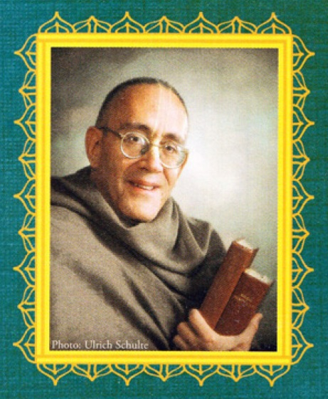

Part One SRI-KRISHNAMRITA The Immortal Nectar of Krishna
Chapter One Svayam-rupa, Tad-ekatma and Avesa
Chapter Two Purusha-avataras and Guna-avataras
Chapter Four Manvantara-avataras, Yuga-avataras, Aveshas and Avasthas
Chapter Five Para-avasthas and Svayam-bhagavan
Part Two SHRI-BHAKTAMRITA The Nectar of Krishnas Devotees
Shri-laghu-
bhagavatamrita
of Shrila Rupa Gosvami
translated from the original Sanskrit,
with commentary,
by Gopiparanadhana Dasa
GIRIRAJA PUBLISHING
***
The six Gosvamis, under the direction of Shrila Rupa Gosvami and Shrila Sanatana Gosvami, studied various Vedic literatures and picked up the essence of them, the devotional service of the Lord. This means that all the Gosvamis wrote many scriptures on devotional service with the support of the Vedic literature. [...] All the Vedic literature aims at understanding Krishna, and how to understand Krishna through devotional service has been explained by Shrila Rupa and Sanatana Gosvamis, with evidence from all Vedic literatures.
His Divine Grace A.C.
Bhaktivedanta Swami Prabhupada
Founder Acharya of the International
Society for Krishna Consciousness
***
The Gosvamis wrote a vast body of work in order to preserve and propagate Shri Chaitanyas teachings for posterity. The BBT has risen to the occasion of producing a high quality edition of an important Gaudiya text that approaches the academic standards of scholarship of our day and age just as the Gosvamis committed themselves to doing in accordance with the scholarly milieu of their own times. This level of publication thus provides a great resource for all students and scholars of Religion.
Edwin Bryant
Professor of Hindu Religion and Philosophy
Rutgers, the State University of New Jersey.
Contents
Foreword
Preface
Shrila Rupa Gosvami
Introduction
PART ONE
Shri-krishnamrita
THE IMMORTAL NECTAR OF KRISHNA
CHAPTER I SVAYAM-RUPA, TAD-EKATMA, AND AVESA
The mangalacharana
The structure, methodology, and objective of Shri Laghu-bhagavatamrita
The three kinds of Krishnas forms
The svayam-rupa
The tad-ekatma-rupa
The vilasa
The svamsha
The dvesha
The prakasha
All forms of the Lord have Their own spiritual abodes
CHAPTER 2 PURUSHA-AVATARAS AND GUNA-AVATARAS
The definition of avatara
The purusha-, guna-, and lila-avataras introduced
The purusha-avataras
The First Purusha
The Second Purusha
The Third Purusha
The guna-avataras
Brahma
Rudra
Vishnu
CHAPTER 3 LILA-AVATARAS
The four Sanas (four Kumaras)
Narada
Varaha
Matsya
Yajna
Nara-Narayana
Kapila
Datta (Dattatreya)
Hayashirsha (Hayagriva)
Hamsa
Dhruva-priya (Prishnigarbha)
Rishabha
Prithu
Nrisimha
Kurma
Dhanvantari, Mohini
Vamana
Bhargava (Parashurama)
Raghavendra (Rama)
Vyasa
Rama (Balarama), Krishna
Buddha
Kalki
CHAPTER 4 MANVANTARA-AVATARAS AND YUGA-AVATARAS
The definition of manvantara-avatara
Vibhu
Satyasena
Hari
Vaikuntha
Ajita
Sarvabhauma
Rishabha
Vishvaksena
Dharmasetu
Sudhama
Yogeshvara
Brihadbhanu
The yuga-avataras
The number of avataras and the time of their appearance
The Manus
The dveshas
The prabhavas and vaibhavas
The vaibhava-avataras residential places in the material world
All avataras possess abodes in the spiritual world :
CHAPTER 5 PARA-AVASTHAS AND SVAYAM-BHAGAVAN
Krishna as superior to Narayana (of Nara-Narayana) or Vamana
Three para-avastha forms (Krishna, Rama, Nrisimha)
Krishna as highest among the para-avasthas
Gradation of the Supreme Lords forms
Contradictory nature of the Supreme Lord
Krishna as superior to the purusha-avataras
Krishna as superior to Vasudeva (of chatur-vyuha)
Krishna as superior to brahman
Krishna as superior to Narayana (Krishna as the svayam-rupa)
Krishnas form and pastimes are eternal
Krishnas manifest and non-manifest pastimes
Krishnas birth pastime
Krishna outside of Vraja
Krishnas reappearance in Vraja
Krishnas pastimes are eternal
Krishnas abodes
Krishnas sweetness in Gokula
PART TWO
Shri-bhaktamrita
THE NECTAR OF KRISHNAS DEVOTEES
The worship of the Lord's devotees is obligatory
Prahlada is considered to be the best devotee
The Pandavas are greater than Prahlada
Some Yadus are greater than the Pandavas
Among the Yadus Uddhava is most excellent
The gopis of Vraja are superior to Uddhava
Shrimati Radharani is the greatest of all gopis
APPENDICES
Variant readings of the text of Shri Laghu-bhagavatamrita
Readings of verses that differ from the BBT edition
Select bibliography
Glossary
Foreword
Rupa Gosvami is one of six Gosvamis of Vrindavana, one of the six ascetic devotional scholars entrusted with intellectually systematizing the popular revival of krishna-bhakti by the sixteenth-century charismatic Shri Chaitanya. Considered an incarnation of Krishna by His followers, Shri Chaitanya triggered a wave of Krishna devotionality across parts of India featuring meditations on Krishnas early pastimes in the Shrimad-Bhagavatams Tenth Canto and its derived literature. Although Shri Chaitanya personally recorded only eight verses in writing, He inculcated to some of His followers, most especially Rupa Gosvami and Sanatana Gosvami, an elaborate theology of krishna-bhakti featuring the various types of moods and relationships with Krishna that could be cultivated through devotional practices. Thus a school was formed around Shri Chaitanyas life and teachings that came to be known as the Chaitanya Vaishnava tradition, also known as the Gaudiya Vaishnava tradition.
The Six Gosvamis, especially Rupa and his elder brother Sanatana, were entrusted with recording the teachings of Shri Chaitanya and, along with their nephew Jiva Gosvami, became the primary theologians and most prolific authors of the tradition. They produced a textual corpus of literary and philosophical works dedicated to Krishna and, in effect, created the entire primary canon that lies at the core of the Gaudiya Vaishnava scholastic tradition. Rupa is perhaps best known for his Bhakti-rasamrita-sindhu, a treatise on the moods (bhavas) and devotional experiences (rasas) attainable at the highest stages of krishna-bhakti, as well as for its sequel, the Ujjvala-nilamani, on the highest bhava, madhurya. He also wrote a small handbook on bhakti practice, the Upadeshamrita. His brother Sanatana produced a large tome called the Brihad-bhagavatamrita a book that moved Rupa to write this shorter sequel, the Laghu-bhagavatamrita.
As we will see from this text, the task of the theologian and this is the raison dtre of theology in any tradition is not just to record a new set of religious revelations, but to situate these in the intellectual context and scholarly milieu of the day and age. This entails engaging the established epistemologies and scholarly methods and protocols of the time. In other words, for an emerging tradition to be taken seriously by outsiders, it needs to establish its credentials. For the Vedanta tradition, within which the Gaudiyas locate themselves, this entails hermeneutics: interpreting the established body of scripture recognized as authoritative by the greater Vedanta tradition in such a way as to accommodate the new revelations.
Put differently, the Gaudiya tradition lays claim to previously unrevealed truths imparted by Shri Chaitanya to the Gosvamis, especially Rupa and Sanatana. Since Shri Chaitanya is deemed an incarnation of Krishna by His followers, His teachings are considered supremely authoritative in their own right. But Shri Chaitanya and His followers were not simply committed to promoting and propagating a new revelation on its own merits, but to proving that this revelation is not only fully supported by the enormous existing classical Sanskrit textual tradition Veda, Itihasa, Purana, and sutra but is actually its culmination. The Gosvamis were entrusted with demonstrating this.
This is no easy feat the highly elaborate network of devotional relationships and moods that can be exchanged and cultivated between various categories of devotees and Krishna as taught by Shri Chaitanya is nowhere explicitly set out even in the traditions primary text, the Shrimad-Bhagavatam Purana. Nor does the text clearly schematize the complex web of relationships between the multiplicity of divine manifestations and avataras of Krishna Himself, nor present a comprehensively systematic hierarchical map of the various abodes and divine realms they inhabit. Indeed, even the divine Brahman realm of Goloka the ultimate destination of the entire tradition, where devotees strive to gain residence so as to engage in eternal rasa with Krishna receives only a cursory mention in the Bhagavata, the scripture par excellence of the tradition. And what then to speak of locating this entire vast and highly intricate spiritual universe in the larger textual corpus of the shruti and smriti, which a Vedantist would need to do in order to be taken seriously outside the community of believers?
Taking on such a project requires remarkable exegetical skill and erudition. The new revelations must be presented as being implicit and concealed in the Bhagavata just as Krishna himself is concealed in the shruti corpus, specifically, the Vedas and Upanishads. So, as with all predecessor interpreters of Vedanta, the task of the orthodox exegete is not to pronounce some brand new teachings but to locate and extricate the new lineage teachings from their seed forms lying hitherto undetected or underdeveloped in the existing sources. In other words, absolute truths, by definition, cannot be created or freshly composed; they are eternal and embodied in the eternal Vedas. But by dint of already existing in a dormant or concealed state in these sacred texts, they can be progressively revealed at various times in human history (usually by divine avataras). This is how the followers of the Gaudiya tradition understand Shri Chaitanyas teachings of the krishna-bhakti distinctive of this school.
The Six Gosvamis rose to their assigned tasks of identifying and excavating the various hidden ingredients of the Gaudiya theology from the vast corpus of Sanskrit literature. The sheer depth and breadth of erudition of the Gosvamis especially Rupa, Sanatana, and their nephew Jiva is simply astonishing: the reader will find quotes in the Laghu-bhagavatamrita from an endless array of Sanskrit texts. The Gosvamis clearly demonstrate that propagating a devotionality that culminates in intoxicated emotional states of krishna-bhava is not (as some of their critics supposed) an inferior type of religiosity suitable for unschooled emotional simpletons. Rupa and his colleagues stand out amongst the intellectual giants of the entire history of Indian scholasticism.
Rupas work is also an excellent example of traditional hermeneutics. The essential underlying principle of such hermeneutics, as Rupa notes with reference to the Kurma Purana, is that when there appear to be contradictions between differing scriptures, or even differing sections within a scripture, one should not consider one to be incorrect, but rather one should seek an elucidation that reconciles the two statements (5.327). The exegetical ingenuity and mastery Rupa demonstrates in scripturally substantiating the amazingly intricate but wondrous vision of an unlimited Godhead and His primary manifestations as revealed by Shri Chaitanya, and the sheer scope of Sanskrit literature he brings to bear on his task, have few precedents in the entire Sanskrit literary tradition.
It is very gratifying to see the Bhaktivedanta Book Trust take on the task of publishing the primary texts of the Gaudiya tradition at such a high standard of scholarship. Gopiparanadhanas Sanskrit is superb, and his commentary, based on that of Baladeva Vidyabhushana, is erudite and written very much in the mood, style, and tone of traditional commentators engaging the purvapaksha (opposing point of view), but free of sectarianism and polemics. While this volume will naturally be of great interest to ISKCON members seeking access to the intellectual writings of their founding fathers, publications of this quality can transcend their own in-house readership and be of interest to the greater scholarly community, as well as the educated lay public, when they are written in a scholarly idiom.
The Six Gosvamis wrote a vast body of work in order to preserve and propagate Shri Chaitanyas teachings for posterity. The BBT has risen to the occasion of producing a high-quality edition of an important Gaudiya text that approaches the academic standards of scholarship of our day and age just as the Gosvamis committed themselves to doing in accordance with the scholarly milieu of their own times. This level of publication thus provides a great resource for all students and scholars of religion. The possibility of the BBT becoming not just a publishing house for preaching literature but also the go-to source for outstanding scholarly editions of the Gaudiya classics for academics and the larger intellectual community is a very welcome prospect. A.C. Bhaktivedanta Swami stressed repeatedly that he wanted these books to be appreciated by the intelligentsia. Publications of the standard of this Laghu-bhagavatamrita are an impressive and very welcome step in that direction.
Edwin Bryant
Professor of Hindu Religion and Philosophy
Rutgers, the State University of New Jersey
***
Preface
Medieval India saw a dynamic and far-reaching efflorescence of popular devotion to Lord Krishna, sometimes called the bhakti renaissance. This movement was largely propagated by Shri Chaitanya Mahaprabhu (14861534 AD), whom the faithful accept as Lord Krishna Himself, manifested in the form of a devotee who taught the chanting of His own names. Lord Chaitanya Mahaprabhu directly inspired in His followers a tremendous outpouring of works in Sanskrit on philosophy and theology, as well as devotional songs, poetry, drama, and hagiography. The Laghu-Bhagavatamrita is one such theological work, by Shrila Rupa Gosvami, a chief disciple of Lord Chaitanya and one of the most important Gaudiya Vaishnava acharyas.
There is much in the present day that may be compared to that medieval Indian renaissance of Vaishnava bhakti, and recent decades have also witnessed a similar explosion of devotion to Krishna though it is now worldwide. This was effected mainly by the foremost modern representative of the same Gaudiya tradition, His Divine Grace A.C. Bhaktivedanta Swami Prabhupada, Founder-Acharya of the International Society for Krishna Consciousness (ISKCON), popularly known as the Hare Krishna movement.
When Shrila Rupa Gosvami authored the Laghu-Bhagavatamrita in the sixteenth century, there was a great need to prove that Lord Krishna is the Supreme Personality of Godhead. Most Vaishnavas accepted Lord Vishnu as the original form of the Supreme Lord, considering Krishna merely one of His avataras albeit the most beloved of the Lords many forms. Much has changed since Rupa Gosvami wrote this book, but the need to demonstrate how Lord Krishna is the Supreme Personality of Godhead remains urgent today, when so few believe in any God at all much less in a God who is a dark-complexioned flute-playing cowherd boy named Krishna. Shrila Rupa Gosvami herein provides a compelling scriptural exegesis of that assertion. In a modern world permeated by varieties of atheism, voidism, and impersonalism, this book thus has great relevance for the spiritual lives of all sincere seekers, especially aspiring devotees of Krishna.
The essential teachings of the Vedas are found in the Upanishads, whose philosophical content Vyasadeva codified as the Vedanta-sutras. While many Vaishnavas therefore focus their theological scholarship on these sutras, others consider Shrimad-Bhagavatam to be Vyasadevas own commentary on the Vedanta-sutras, and thus the Bhagavatam has long been the paramount scripture for Vaishnavas, especially in North India. Its essential teaching, as understood by Lord Chaitanya Mahaprabhu, is summarized in this traditional verse:
aradhyo
bhagavan vrajesa-tanayas tad-dhama vrindavanam
ramya kacid upasana vraja-vadhu-vargena ya kalpita
srimad-bhagavatam pramanam amalam prema pum artho mahan
sri-caitanya-mahaprabhor matam idam tatradaro nah parah
The Supreme Personality of Godhead to be worshiped is Krishna, the son of Vrajas king; His eternal abode is Vrindavana; the mode of worship most pleasing to Him is that practiced by the women of Vraja; ShrimadBhagavatam is the pristine scriptural evidence; and pure love of God is the highest objective of mankind. This is the doctrine of Shri Chaitanya Mahaprabhu, which we hold in utmost regard. 1
The Brihad-bhagavatamrita of Shrila Sanatana Gosvami, Rupa Gosvamis elder brother and another chief disciple of Shri Chaitanya Mahaprabhu, highlights the pure devotees mentioned in Shrimad-Bhagavatam and the various forms of the Lord they worship, as well as their respective abodes, thus expanding the Bhagavatams ocean of nectar. 2 Shrila Rupa Gosvami composed Laghu-Bhagavatamrita as a sequel to Brihad-bhagavatamrita, highlighting the Lord Himself. 3 In one sense, then, the Laghu-bhagavatamrita is the creme de la creme of the Vedas, in that it focuses on the essential and primary truth known as sambandha-jnana, preliminary understanding of the relationship between the Godhead and all His emanations.
The Laghu-bhagavatamrita provides ample evidence about the multiforms of Godhead vis-a-vis Lord Krishna and His pure devotees; as the author writes in text 10:
Now, by describing His various self-same forms one after another, I will show, through appraisal of comparative excellence, that Krishna is the most worshipable Supreme Lord.
To consider this aim, we may look to one of the most important scriptural references for followers of Lord Chaitanya Mahaprabhu: Shrimad-Bhagavatam 1.3.28 (cited at Laghu-bhagavatamrita 5.180). That verse follows a long list of incarnations and expansions of the Lord that are described in Vedic literature, and contrasts them to Lord Krishna, whom it calls svayam bhagavan, the Lords own personal form:
ete
camsa-kalah pumsah
krishnas tu bhagavan svayam
All of the above-mentioned incarnations are either plenary portions or portions of the plenary portions of the Lord, but Lord Shri Krishna is the original Personality of Godhead.
Emphasizing Krishnas unique and primary position as the superlative, original Supreme Personality of Godhead, this verse is a foundational axiom of Gaudiya Vaishnava theology. Following Shrila Jiva Gosvami (in Krishnasandarbha 29), Gaudiya acharyas consider it the Paribhasa-sutra, or governing declaration, of the Shrimad-Bhagavatam (Goswami 2012: 142, ft). Its gist is encapsulated in the words krishnas tu bhagavan svayam, which may be loosely translated as Krishna is the Supreme Personality of Godhead.
While the Brihad-bhagavatamrita was clearly predicated on this understanding, in that book Shrila Sanatana Gosvami made no attempt to corroborate it, perhaps because Shrimad-Bhagavatam itself was already widely regarded as explicit, unambiguous, and authoritative. Shriman Gopiparanadhana Dasa, who also wrote the commentated translation of the Bhaktivedanta Book Trust edition of Brihad-bhagavatamrita, therein explains (2002: xvi) that Shrila Sanatana Gosvami left the task of conclusively establishing Krishnas preeminence to Shrila Rupa Gosvami, who then wrote his Laghu-bhagavatamrita. Herein, Shrila Rupa Gosvami approaches this theological conclusion gradually and methodically, exemplifying the careful scriptural discrimination that characterizes those empowered to propagate Krishna consciousness. The same assertion that Krishna is the original Supreme Godhead Himself was further elaborated upon by Shrila Jiva Gosvami in his Krishna-sandarbha, and it has been exhaustively explained by various other Gaudiya Vaishnava scholars down to the present day.
Shrila Prabhupada stated that his mission was to deliver the Western world (in particular) from the grip of voidism and impersonalism, 4 and his explicit strategy was to establish Lord Shri Krishna as the Supreme Personality of Godhead. His inimitable presentation of Krishna consciousness to the modern world was an unimaginably ambitious effort focused on this purpose. He clearly expressed his own profound appreciation of the importance of this simple truth even before founding ISKCON. 5 He later instituted daily practices in his ISKCON movement such that even casual ISKCON participants would, at least in theory, understand unmistakably that Krishna is the Supreme Personality of Godhead. His Divine Grace repeatedly emphasized this essential truth throughout his many books, recorded lectures, correspondence, and personal conversations so much so that His Holiness Tamal Krishna Goswami could fairly identify it as Shrila Prabhupadas mahavakya, 6 or definitive slogan (2012: 127):
For Prabhupada, the wide range of topics that come under the umbrella of sambandha is commanded by one axiomatic truth: Krishna is the Supreme Personality of Godhead. This is Prabhupadas mahavakya, his great saying that informs the entire content of his thought, which would radically change without it. As a semantic time-release device, it is deployed throughout his already prioritized texts as a gradual disclosure of reality.
Nowhere are Prabhupadas pedagogical skills more in demand than in making the otherwise abstruse Gaudiya Vaishnava ontology comprehensible. Much of this burden is shouldered by formulaic assertions, foremost among them his mahavakya: Krishna is the Supreme Personality of Godhead. 7
The Laghu-bhagavatamrita theologically corroborates this simple yet sublime assertion in great detail and with copious scriptural references, thus elevating popular Krishnaite devotion beyond poetic sentiment or personal opinion, and using the conventional terms of a serious philosophical exegesis.
Readers will find this book a valuable source of information that answers the kinds of perennial questions all genuine spiritual aspirants must ask. Also, it can serve as a helpful resource when celebrating the appearance days of the major incarnations listed herein. Both the text and its learned commentary can also reconcile what might appear to be contradictory statements from different Vedic authorities. On a deeper level, it implicitly recognizes that logically irreconcilable disagreements exist even among liberated Vaishnavas and mahajanas; this characteristic is also shared by its companion work, the Brihad-bhagavatamrita.
The Laghu-bhagavatamrita is one of the Gaudiya Vaishnava traditions most important and definitive texts. It is a foundational work substantiating the essential theological conclusion animating the International Society for Krishna Consciousness, the institution that is the major vehicle for transmitting the teachings of Gaudiya Vaishnavism worldwide and that His Divine Grace A.C. Bhaktivedanta Swami Prabhupada founded and guided more than four centuries after the books composition. Hare Krishna.
Mukunda Datta Dasa
Shridhama Vrindavana
Shri Gaura-purnima
March 19, 2014
1 This is the mangalacharana (invocation) in the commentary on Shrimad-Bhagavatam by Shrinatha Chakravarti Thakura, a commentary called the Chaitanya-mata-manjusha.
2 The compound word bhagavatamrita may also be translated as the nectar of the Bhagavatam or even the nectarean devotees. As Gopiparanadhana Prabhu writes in his English commentary on text 1.6: By the definition of the word bhagavata, a book named Bhagavatamrita should describe both the Supreme Lord and His devotees.
3 The title Brihad-bhagavatamrita means the great Bhagavatamrita, and Laghu-bhagavatamrita means the minor Bhagavatamrita. The Laghu-bhagavatamrita is sometimes also called the Sankshepa-bhagavatamrita (as suggested in text 1.5), which literally means the summary Bhagavatamrita.
4 The verse used in ISKCON for offering obeisance to Shrila Prabhupada is:
namas
te sarasvate deve gaura-vani-pracharine
nirvishesha-shunyavadi-pashchatya-desha-tarine
Our respectful obeisances are unto you, O spiritual master, servant of Sarasvati Gosvami. You are kindly preaching the message of Lord Chaitanyadeva and delivering the Western countries, which are filled with impersonalism and voidism.
Shrila Prabhupada necessarily composed this verse himself, since in the early days of ISKCON his disciples knew little or no Sanskrit.
5 In his now famous 1936 Vyasa-puja address before members and guests of the Bombay Gaudiya Matha, Shrila Prabhupada said:
Had [Shrila Bhaktisiddhanta Sarasvati Thakura| not appeared before us, we would not have been able to understand the eternal truth of the sublime teaching of Lord Chaitanya had he not appeared before us, we could not have been able to know the significance of the first shloka of Brahma-samhita:
ishvarah
paramah krishnah sac-cid-ananda-vigrahah
anddir adir govindah sarva-karana-karanam
Krishna, who is known as Govinda, is the Supreme Godhead. He has an eternal, blissful, spiritual body. He is the origin of all, He has no other origin, and He is the prime cause of all causes.
6 Goswami thus echoes, and then directly quotes, the noted scholar S.K. De (1961: 321), who had said the same thing about Shrimad-Bhagavatam 1.3.28 itself, on the basis of the Krishna-sandarbha of Shrila Jiva Gosvami (Goswami 2012: 143-144).
7 Goswami further describes (2012:157) Shrila Prabhupadas fidelity and careful handling of this truth inherited from his predecessors (including Shrila Rupa Gosvami):
As expected, it is not in outright doctrinal originality that Prabhupada makes his mark, but through creativity in the area of preservation and transmission. His genius is appropriation, a creative retaining and reshaping, ensuring that the latter both guarantees and extends the former. His predecessors had used the mahavakyas Sanskritic equivalent to assemble subordinate images, citing it on occasion, but when not, still allowing its hidden strength to reconcile contradictions and guide their arguments. Recognizing its untapped potential, Prabhupada steps up the mahavakyas utility through transmission and by constant repetition, and harnesses its mantra-like force. The resultant revelation communicates ultimate reality in a manner that uniquely bridges the Gaudiya tradition and its newly found audiences. This is a considerable achievement.
***
Shrila Rupa Gosvami
What we know about the life of the Laghu-bhagavatamritas author comes mostly from Krishnadasa Kavirajas Shri Chaitanya-charitamrita and Narahari Chakravartis Bhakti-ratnakara. These two sources inform us that Shrila Rupa Gosvami (c. 1489-1564) was a direct disciple of Shri Chaitanya Mahaprabhu, and that he and his brother, Shri Sanatana Gosvami, were the most senior of the Six Gosvamis of Vrindavana, the exalted group who helped establish the Gaudiya sampradaya.
Rupa Gosvami was born into a family of respectable Sarasvata brahmanas from the southern province of Karnataka. His great-grandfather, Rupeshvara, after a quarrel with his brother Harihara, migrated east, and Rupas grandfather, Padmanabha, settled on the bank of the Ganga at Naihati, West Bengal. Rupas father, Shri Kumara, moved further east into what is now the Jessore district of Bangladesh, where he settled and had a number of sons, the last three of whom he named Amara (later, Sanatana), Santosha (later, Rupa), and Vallabha (Anupama). These three brothers were attracted to devotional service from childhood Amara and Santosha were especially attracted to Lord Krishna and Vallabha to Lord Ramachandra.
The brothers proved extremely competent scholars and managers, and the Mogul tyrant Nawab Hussain Shah pressed them into government service. Amara was appointed the Nawabs Prime Minister, Santosha his chief assistant minister, and Vallabha his state treasurer. Turning over most of his responsibilities to the three brothers, the Nawab felt free to pursue his military ambitions.
The brothers established themselves in Ramakeli, near the Nawabs capital. By this time Santosha had become known by his official title Dabira Khasa, and Amara by Sakara Mallika. Still, despite their powerful positions, their only real joy in life lay in serving Krishna and His devotees. They opened their wealthy estate to the Vaishnavas, planted groves of kadamba and other Vrindavana trees to remind their guests of Krishna, built replicas of sacred Radha-kunda and Syama-kunda, and invited learned panditas to hold discussions on Shrimad-Bhagavatam and other Shastras. The brothers became renowned for their own scholarship and exalted characters.
The three of them heard that Lord Chaitanya was living as a family man in Navadvipa and became eager to meet Him, but how could they? They felt degraded and untouchable. Their father, Kumaradeva, had been so strict in his brahminical principles that if he had even seen the face of a meat-eater he would have fasted for the day, and here they were, working as paid servants of a yavana king. Nonetheless, they wrote to Lord Chaitanya.
The Lord encouraged them to be patient about their situation:
para-vyasanini
nari
vyagrapi grha-karmasu
tad evasvadayaty antar
nava-sanga-rasayanam
If a woman is attached to a man other than her husband, she will appear very busy in household affairs, though within her heart always relishing the company of her paramour. (Chaitanya-charitamrita, Madhya 1.211)
After Chaitanya Mahaprabhu took sannyasa He decided to go to Vrindavana. Followed by large crowds He proceeded north and stopped at Ramakeli. Meanwhile, Hussain Shah received news that a sannyasi named Chaitanya was creating a stir in the countryside. By consulting with Dabira Khasa and other ministers the Nawab decided that Chaitanya was a worthy saint perhaps even God Himself and ordered that no one interfere with His doings. Still, Dabira Khasa worried that the capricious Hussain Shah could turn against Lord Chaitanya. Thus in the middle of the night he and Sakara Mallika went incognito to warn the Lord of the danger.
The two approached Lord Chaitanya with straws between their teeth to show their humility. They prostrated themselves before Him and with plaintive prayers confessed their unfitness to receive His mercy.
In response the Lord showered them with affection:
shuni
mahaprabhu kahe, shuna, dabira-khasa
tumi dui bhai mora puratana dasa
After hearing their prayer, Shri Chaitanya Mahaprabhu said, My dear Dabira Khasa, you two brothers are My old servants.
My dear Sakara Mallika, from this day your names will be changed to Shrila Rupa and Shrila Sanatana. Now please abandon your humility, for My heart is breaking to see you so humble. (Chaitanya-charitamrita, Madhya 1.207-208)
Sanatana then advised that Lord Chaitanya not go to Vrindavana with so many people, and the Lord accepted his advice and returned to His base at Puri. The three brothers Rupa, Sanatana, and Anupama then made plans to join Him, and they engaged brahmanas in performing purificatory rituals to help them give up their material life and realize their hope. Soon, Rupa and Anupama loaded the bulk of their wealth on a large boat and left Ramakeli for their hometown, leaving their senior brother, Sanatana, to deal with Hussain Shah. In case Sanatana might need funds, Rupa deposited a large sum with a merchant in Ramakeli and informed Sanatana about this in a letter. The rest of their wealth he distributed to family members, brahmanas, and various Vaishnavas.
Rupa and Anupama heard that Lord Chaitanya was making a second attempt to visit Vrindavana, and they set out in that direction in hopes of meeting Him. By then, though, Lord Chaitanya was already on His way back, and the brothers met up with Him at Prayaga (now Allahabad). Lord Chaitanya was very happy to see Rupa and Anupama freed from their material obligations, and He placed His feet on their heads in blessing. Later, at a place in Prayaga called Dashashvamedha-ghata, Lord Chaitanya spent ten days instructing Rupa Gosvami and blessed him with the power to understand and disseminate the ultimate conclusions about Lord Krishna, devotional service, and the truth about the transcendental mellows, culminating in conjugal love between Radha and Krishna. 1
1 The summary of these teachings is presented in Chaitanya-charitamrita, Madhya-lila, chapter 19.
Rupa wanted to accompany the Lord back to Puri, but the Lord ordered him to go to Vrindavana instead. Soon, He promised, the brothers could visit Him in Puri.
Shrila Kavi-karnapura, an eminent poet among Chaitanya Mahaprabhus devotees, writes in his Chaitanya-chandrodaya (9.29, 38):
yah
prag eva priya-guna-ganair gadha-baddho pi mukto
gehadhyasdad rasa iva paro murta evapy amurtah
premaldpair drdhatara-parisvanga-rangaih prayage
tam shri-rupam samam anupamenanujagraha devah
From the very beginning, Shrila Rupa Gosvami was bound by attraction to the qualities of his beloved Lord yet free from the false identification of family life. Although Shrila Rupa had no material body, he was the embodiment of the transcendental tastes of devotional service. At Prayaga the Lord bestowed mercy on Rupa and his brother Anupama, holding loving conversations with them and embracing them with wholehearted pleasure.
kalena
vrindavana-keli-varta
lupteti tam khyapayitum visisya
krpamritenabhisiseca devas
tatraiva rupam ca sanatanam ca
In the course of time, the transcendental news of Krishnas pastimes in Vrindavana was almost lost. To carry out the work in Vrindavana of explicitly enunciating those pastimes, Shri Chaitanya Mahaprabhu empowered Shrila Rupa Gosvami and Shrila Sanatana Gosvami with the nectar of His mercy.
Rupa and Anupama went on to Vrindavana, and, having reached Mathura, met Subuddhi Raya, another devotee Lord Chaitanya had sent there. The brothers stayed in Subuddhi Rayas company for one month, touring the twelve forests of Vraja. After that, they went east in search of Sanatana Gosvami. By then, Sanatana, having finally escaped from the hands of Hussain Shah, was already on his way to Vrindavana. The brothers missed each other as they traveled in opposite directions between Prayaga and Vrindavana.
Reaching Varanasi, Rupa and Anupama were extremely happy to see how the city, although known to be a seat of Mayavada philosophers, had been transformed by Shri Chaitanya Mahaprabhus visit. They also learned about the meeting between Lord Chaitanya and Sanatana Gosvami and Sanatanas departure for Vrindavana on the Lord's order. Rupa and Anupama decided to go to Jagannatha Puri through Bengal and not to immediately look for Sanatana Gosvami. On that journey, on the banks of the Ganga in Bengal, Anupama passed away. Because of the delay caused by his brothers death, Rupa couldn't join the Bengali devotees on their annual pilgrimage to Jagannatha Puri, so later proceeded to Puri alone.
Finally arriving in Jagannatha Puri, Rupa Gosvami met Lord Chaitanya, who had been awaiting him there. The Lord suggested that Rupa Gosvami live with Shrila Haridasa Thakura, and then introduced him to all the devotees, who embraced Rupa Gosvami with affection. Chaitanya Mahaprabhu visited Rupa and Haridasa every day, blessing them with His personal association and bringing them prasada from Lord Jagannathas temple. Neither Rupa nor Haridasa would enter the temple; absorbed in humility, they considered themselves unfit.
There was an incident after the Ratha-yatra that proved that Lord Chaitanya had empowered Shrila Rupa Gosvami to understand and express in writing the inner feelings of His heart. Each year, as the Lord danced before Lord Jagan-nathas chariot, the Lord always uttered a particular verse, the meaning of which no one except Svarupa Damodara could understand:
yah
kaumara-harah sa eva hi varas ta eva caitra-ksapas
te conmilita-malati-surabhayah praudhah kadambanilah
sa caivasmi tathapi tatra surata-vyapara-lila-vidhau
reva-rodhasi vetasi-taru-tale cetah samutkanthate
That very personality who stole away my heart during my youth is now again my master. These are the same moonlit nights of the month of Chaitra.
The same fragrance of blooming malati flowers is there, and the same sweet breezes are blowing from the kadamba forest. In our intimate relationship, I am also the same lover, yet still my mind is not happy here. I am eager to go back to that place on the bank of the Reva under the Vetasi tree. That is my desire. (Chaitanya-charitamrita, Antya 1.78)
Having by chance overheard Chaitanya Mahaprabhu reciting this verse, Rupa Gosvami composed another verse to describe the meaning of the first verse:
priyah
so yam krishnah saha-cari kuru-ksetra-militas
tathaham sa radha tad idam ubhayoh sangama-sukham
tathapy antah-khelan-madhura-murali-panchama-juse
mano me kalindi-pulina-vipinaya sprhayati
My dear friend, now I have met My very old and dear friend Krishna on this field of Kurukshetra. I am the same Radharani, and now We are meeting together. It is very pleasant, but I would still like to go to the bank of the Yamuna beneath the trees of the forest there. I wish to hear the vibration of His sweet flute playing the fifth note within that forest of Vrindavana.
Writing the verse on a palm leaf, Rupa Gosvami slipped it between the thatches in his roof and went to the ocean to bathe. Lord Chaitanya arrived, and seeing the palm leaf among the thatches, read it and became overwhelmed with ecstatic love. When Rupa Gosvami returned, the Lord slapped him mildly in love and spoke, My heart is very confidential. How did you know My mind in this way? Saying this, He firmly embraced Rupa Gosvami. Later, Chaitanya Mahaprabhu showed Rupas verse to Svarupa Damodara, who concluded that Rupa Gosvami could understand the Lords heart only by the Lords causeless mercy. Chaitanya Mahaprabhu confirmed that in Prayaga He had bestowed on Rupa His transcendental potency. The Lord then entrusted Rupa Gosvami to Svarupa Damodara for further instruction in bhakti-rasa.
On another day, Lord Chaitanya glorified Rupa Gosvami's poetry in a gathering of devotees. Ramananda Raya, an expert in Sanskrit poetry and dramaturgy, was struck with wonder at Rupa Gosvami's poetic genius, and like Svarupa Damodara, he concluded that Rupas ability was a sign of his empowerment by Lord Chaitanya.
Rupa Gosvami stayed in Shri Chaitanya Mahaprabhus company until the Dola-yatra festival in March. Then Lord Chaitanya sent him to Vrindavana with the mission to establish the service of Lord Krishna, preach that service by writing books, and excavate the lost holy places. This was the second-last meeting between Shrila Rupa Gosvami and Shri Chaitanya Mahaprabhu.
From Nilachala Rupa Gosvami again visited Bengal. There he distributed the remainder of his assets, and, being fully relieved from all worldly obligations, traveled to Vrindavana as Shri Chaitanya Mahaprabhu had requested him.
In Vrindavana Rupa and Sanatana were fully immersed in the mood of separation, remembering Krishna and His eternal devotees. The brothers gave up all material indulgences, wandered about the holy land with no fixed residence, and almost completely forgot to eat and sleep. Sometimes staying together and sometimes moving separately, they searched constantly for the forgotten places of Krishnas pastimes and wrote books on Krishna consciousness, guided always by Shrimad-Bhagavatam and other devotional scriptures.
Shrila Rupa Gosvami was instrumental in discovering the deities of Shri Govindadeva and Shrimati Vrinda Devi.
Shri Govinda Himself came to Rupa Gosvami in the form of a Vrajavasi and told him to search for His Deity on Goma-tila, in the spot where, as the Vrajavasi told it, a cow used to come every day and moisten the ground with her milk. With these directions and the help of locals, Rupa Gosvami eventually unearthed a beautiful Deity the one he had read descriptions of in the scriptures. Eventually, a beautiful, seven-story, red sandstone temple was constructed for Shri Govindadeva under the patronage of the famous Emperor Akbar and with the sponsorship of Jaipur's King Man Singh. Unfortunately, in the early eighteenth century this magnificent temple was partially destroyed by the invader Aurangzeb, and the Deity of Govindadeva was taken to Jaipur for His safety.
Rupa Gosvami discovered a deity of Shrimati Vrinda Devi on the banks of Brahma-kunda, not far from Goma-tila, after being directed in a dream by Vrinda Devi herself. This deity is now established at the Radha-Govinda temple in Kamyavana.
Rupa Gosvami had also personally carved the Deity of Shri Damodara for Shrila Jiva Gosvami, who became Rupa Gosvami's disciple in Vrindavana. Jiva Gosvami established a temple for Shri Damodara, where Rupa Gosvami had his bhajana-kutira and later his samadhi.
Rupa Gosvamis literary contribution to the Gaudiya Vaishnava sampradaya is monumental. He was the author of more than sixteen books a total of about 100,000 verses. The following is a brief description of these books: 2
2 Some works by Rupa Gosvami included in the Stava-mala compilation are mentioned separately.
Bhakti-rasamrita-sindhu (The ocean of the nectarean bhakti-rasa) arguably the most important of Rupa Gosvamis works. In its four divisions, compared to the four parts of the ocean, the book comprehensively and systematically describes the process of bhakti and its various stages, and analyzes the twelve rasas in relation to Lord Krishna.
Ujjvala-nilamani (The sapphire of ujjvala-rasa 3) an addendum to Bhaktirasamrita-sindhu, this book delves into the shringara-rasa, describing in detail its various facets, including its object (Krishna), subject (Krishnas beloveds, such as Radha), and the roles of Their various companions (messengers, sakhis, etc.) in Their amorous pastimes in Vraja. Following the pattern of Bhakti-rasamrita-sindhu the book also analyzes the essential components of shringara-rasa, such as uddipana, anubhava, etc.
3 Here, amorous.
Vidagdha-madhava (Clever Madhava) an eight-act play about Shri Krishnas Vrindavana pastimes. Some of the pastimes described are Krishnas fluteplaying and its effects; the mutual attraction between Radha and Krishna prior to Their first meeting (purva-raga) and Radhas writing of a love letter to Krishna; Radha and Krishnas meeting; the stealing of Krishna flute; Krishnas appeasement of Radhas anger; pastimes of the Divine Couple in autumn; and Krishna dressing Himself as a Deity of Gauri (Durga) in order to meet Radha.
Lalita-madhava (Gentle Madhava) a ten-act play about Lord Krishnas pastimes outside of Vraja and in Dvaraka. The drama starts with the description of the mysterious birth of two sisters, Radha and Chandravali, how Krishna disguised Himself as priest of the sun god, and the killing of Shankhachuda. The play goes on to describe the sakhis agony of separation from Krishna after He left for Mathura and what befell them after His departure; Krishna watching a drama in Mathura about His own Vraja pastimes; Krishnas regaining of Chandravali, Lalita, and other gopis in the form of queens; Krishna's longing for Radha and His meeting Her in Nava-vrindavana in Dvaraka; and the marriage of Radha and Krishna. Rupa Gosvami originally planned to compile a drama that contained the incidents in both the Vidagdha-madhava and the Lalita-madhava, but Satyabhama appeared to him in a dream and ordered him to separate the pastimes into two separate works. Shri Chaitanya Mahaprabhu later confirmed this order.
Dana-keli-kaumudi (the moonlight on the toll pastime) a short, one-act play about the toll-collecting pastime, which happened at Govardhana Hill. Radha and her sakhis were on their way to Govinda-kunda when Krishna and his friends blocked their way and demanded a ridiculously high toll for the ghee the gopis carried. A animated dispute ensued, full of mutual challenges, accusations, word jugglery, and inconspicuous loving exchanges between Radha and Krishna, culminating in Their joyful union.
Nataka-chandrika (The moonlight on nataka 4) Rupa Gosvamis textbook on dramaturgy, which defines and explains all aspects of playwriting. The text is illustrated with examples taken from the author's Lalita-madhava.
4 A type of large drama in Sanskrit dramaturgy.
Stava-mala (A garland of hymns) a large compilation of ashtakas, songs, poems, and graphical verses (chitra-kavitvani), written by Rupa Gosvami and compiled by Jiva Gosvami.
Padyavali (Anthology of poetic verses) an anthology of verses about Lord Krishna and devotional service composed by about 125 authors. The verses are grouped under a wide range of topics.
Samanya-virudavali-lakshana (A general definition of the virudavali poetry) the only book that defines the virudavali style of Sanskrit poetry. Virudavali is a complex poetic style involving various types of rhythmical phrasing, abundant alliteration, special word choices, and a particular compositional structure. To show the theory in practice, Rupa Gosvami wrote Govinda-virudavali (Virudavali in praise of Govinda), which describes the pastimes of Lord Govinda beginning from His birth. This piece is included in the Stava-mala.
Mathura-mahatmya (The glory of Mathura) a collection of verses from the Puranas glorifying the sacred region of Mathura (Vraja-dhama).
Hamsa-duta (The swan messenger) a heart-wrenching description of Radha feelings of separation after Krishnas departure for Mathura. Radha is on the verge of death, and Lalita goes to the Yamuna to fetch water for Her. There Lalita sees a swan, to which she gives a message for Krishna. In her loving anger Lalita tells Krishna of Radhas condition and begs Krishna to return and save Radhas life.
Uddhava-sandesha (The message of Uddhava) in this poem Krishna sends Uddhava to Vrindavana to solace the gopis, especially Radha. Both Hamsa-duta and Uddhava-sandesha are written in the mood of the famous Megha-duta of Kalidasa. Both contain descriptions of various places in Vraja.
Radha-krishna-ganoddesha-dipika (Indications illuminating the entourage of Radha-Krishna) In its two parts (Brihat and Laghu) the book describes the attributes (age, appearance, dress color, parentage, etc.) of Krishna, Radha, and Their associates.
Krishnabhisheka 5 (The bathing of Krishna) a manual for worshiping and particularly bathing the Deity of Lord Krishna on Janmastami.
Prayuktakhyata-chandrika (Moonlight on commonly used verbs) a small lexical work useful to writers. The book is a selection of commonly used verbal roots with their meanings drawn from a larger work, the Adbhutakhyata-chandrika by Bhatta-malla.
5 Also known as Krishna-janma-tithi-vidhi.
Nikunja-rahasya-stava (Glorification of the secret pastimes in the groves) a poem describing the very confidential pastimes of Radha and Krishna in the forest groves of Vrindavana.
***
This edition of Shrila Rupa Gosvamis Laghu-bhagavatamrita is divided into two sections, as is the original text: Krishnamrita, dealing with Krishna and His expansions, and Bhaktamrita, dealing with His most prominent devotees. The translator, Gopiparanadhana Dasa, comments at text 1.2.7 on the general style used in this work:
Shrila Rupa Gosvami presents the Laghu-bhagavatamrita in the typically concise style of philosophical shastras: short definitions and statements of fact with the support of quotations from authoritative scriptures, which are then often followed by the author's own karikas, or explanatory verses.
The Krishnamrita section consists of five chapters. After offering obeisances and defining the methodology he used for his work, 1 Shrila Rupa Gosvami states that his purpose is to demonstrate that Krishna is the most worshipable Supreme Personality of Godhead (1.1.10). To do so, he describes a hierarchy of the Lords diverse forms and distinguishes the original (Shri Krishna) from His parts or plenary expansions, largely on the basis of the qualities and potencies each form displays. 2 He illustrates clearly why Shrimad-Bhagavatam 1.3.26 depicts the Lord's incarnations as limitless. The commentary informs us that, unlike Shrimad-Bhagavatam (1.3), the Laghu-bhagavatamrita (1.3.2) lists these avataras in the order of Their appearance. The text also describes three paravastha forms of the Lord Nrisimha, Rama, and Krishna who display increasing degrees of supreme opulence, culminating in the complete manifestation of opulence in Krishna, the Supreme Personality of Godhead. Such statements corroborate those of another text central to Gaudiya Vaishnava tradition, Shri Brahma-samhita, which declares that Shri Krishna is the ultimate form, the origin of all, and the Supreme Personality of Godhead. Notably, Shri Chaitanya Mahaprabhu brought this Brahma-samhita back to Bengal from South India, indicating that these conclusions were to be found then even in the region of Kanyakumari, far from the birthplace of Gaudiya Vaishnavism.
1 These are both standard conventions. The commentary on text 7 in this edition presents a summary of the epistemology typically used in Vedic philosophical works; Shrila Rupa Gosvami favors shabda-pramana (authoritative testimony), as have pure devotees since time immemorial.
2 See the summary of the Laghu-bhagavatamrita given in the Bhaktivedanta purport to Shri Chaitanyacharitamrita, Madhya-lila, text 1.41.
The manner in which the Laghu-bhagavatamrita classifies this tremendous variety of divine forms may help readers deepen their appreciation for the theological context of another key Gaudiya Vaishnava assertion: that Shri Krishna Chaitanya Mahaprabhu is the nonblackish form of Lord Krishna Himself, descending in this Kali-yuga (as per the traditional interpretation of Shrimad-Bhagavatam 11.5.32): 3
krishna-varnam
tvisakrishnam
sangopangastra-parsadam
yajnaih sankirtana-prayair
yajanti hi su-medhasah
In this age of Kali, intelligent persons perform congregational chanting to worship the incarnation of Godhead who constantly sings the names of Krishna. Although His complexion is not blackish, He is Krishna Himself. He is accompanied by His associates, servants, weapons, and confidential companions. 4
3 This is also the second verse of Laghu-bhagavatamrita and the opening verse of Shrila Jiva Gosvami's Tattva-sandarbha.
4 Although Shrila Rupa Gosvami cites many scriptural references that are cohesive and logically consistent, this is potentially confusing unless one considers them all in light of what the authoritative commentaries explain. For example, one might ask: If Lord Chaitanya comes only once in a day of Brahma, then what color and type is the incarnation in Kali-yugas when Lord Chaitanya doesn't appear? Or is there no Kali-yuga incarnation, as scriptures also say? As Sarva-samvadini (paragraph 3) explains regarding the second verse of Tattva-sandarbha, Gargamuni says (at Shrimad-Bhagavatam, 10.8.13) that Lord Krishna comes in a yellow form. Gaudiya Vaishnava acharyas identify this as Shri Chaitanya Mahaprabhu, svayam bhagavan Himself. The Laghu-bhagavatamrita (4.26) explains that normally yuga-avataras expand from the existing manvantara-avatara, but its commentary on text 4.41 describes the yuga-avatara for Kali-yuga as a jiva, a shaktyavesha incarnation having a blackish complexion. That shaktyavesha incarnation unites with Lord Chaitanya whenever He appears thus becoming non-blackish (akrishnam). However, he same commentary (at text 4.46) includes among the prabhava forms, the other three yuga-avataras, whom Garga Muni described as Rakta Pita, and Krishna (i.e., forms other than svayam bhagavan Shri Krishna), also described therein as, less-famous, short-term incarnations. Meanwhile Laghu-bhagavatamrita 4.25 says that the white (shukla), red (rakta), bluish (shyama), and black (krishna) yuga-avataras come in the Satya, Treta, Dvapara, and Kali ages respectively; the same commentary therein says that according to scripture (cf., the present editions commentary on Laghu-bhagavatamrita, 1.2), the avatara in Kali-yuga sometimes displays different hues (such as yellow). As such, a different yellow (pita) incarnation occasionally appears in other Kali-yugas. Gold and yellow are similar enough that one may consider them virtually the same, as has Gopiparanadhana Dasa herein and other authorities elsewhere. Therefore it is not incorrect to say that in Kali-yuga there is no incarnation, that Lord Chaitanya (or, an empowered yuga-avatara) is the incarnation in Kali-yuga, and that in Kali-yuga the Lord appears as either blackish, golden, or yellow. Indeed, all of these statements appear in scripture.
Chapter five is nearly triple the length of all the other chapters combined. In it, Shrila Rupa Gosvami explains his essential assertion (based on ShrimadBhagavatam 1.3.28) that Lord Krishna is the Supreme Personality of Godhead. He says that Krishna is the amshi (emanator) and that all other forms of Godhead are His amshas (emanations). He refutes the views of various thinkers who dispute the identity of Krishna as the Supreme Personality of Godhead, overturning scriptural misinterpretations that obscure or adulterate the conclusion of Bhagavatam 1.3.28. Quoting diverse scriptures, Shrila Rupa Gosvami logically shows how Krishna is the original Supreme Personality of Godhead because He fully exhibits all perfections. Thus Rupa Gosvami obliges even worshipers of other forms of Lord Vishnu to at least seriously consider the ramifications of this assertion or ignore the scriptural authority he cites. Likewise, his line of argument refutes what might otherwise appear to be credible assertions within the misinterpretations given by learned impersonalists.
5 Please see the appendices for indices of verses quoted in both the text and its commentary.
Citing the Vishnu Purana, Shrila Rupa Gosvami shows how the uniquely attractive love displayed only by Lord Krishna distinguishes Him as the Supreme Personality of Godhead especially in the momentous epiphany by which He delivered the demon Shishupala. Therein (1.5.40-84) he explains how Lord Krishnas liberating the demons He kills proves that He is the original Personality of Godhead. Jaya and Vijaya werent liberated when, in the forms of Hiranyakashipu and Hiranyaksha, they were killed by Nrisimha and Varaha, respectively, nor when they were killed by Rama in their forms as Ravana and Kumbhakarna, but only when they were finally killed by Krishna in their forms as Shishupala and Dantavakra. It is also noteworthy that for Shishupala this was effected largely by his chanting of Krishnas holy names (1.5.46-49), even in the mood of enmity toward Krishna. This example suggests Krishnas supremacy in two ways that Shrila Rupa Gosvami explains elsewhere: First, Lord Krishna alone allows His devotees to serve Him in all twelve rasas (devotional feelings), thereby meriting the designation akhilarasamrita-murti, the reservoir of all devotional mellows. Secondly, the unique sweetness of Lord Krishnas love and beauty inspire such intense attraction for Him that pure devotees curse the creator for making eyelids that blink, thus momentarily obscuring sight of Him.
Shrila Rupa Gosvami also explains the great mystery of Krishnas appearance. He reveals the dual nature of Krishnas pastimes (manifest and unmanifest), and explains how they are all eternal, even though they seem to begin and end. Inconceivable to mundane minds, all these pastimes are conducted by His pastime potency, who impels Krishna devotees to act according to His will. Some of these devotees have mundane expansions that merge with themselves when they incarnate as earthly relatives during the Lords manifest pastimes. Of course, Krishna also reciprocates with the desires of His devotees, and this reciprocation is the definitive principle in all His spiritual relationships. Thus, unlike ordinary living entities, whose birth and subsequent relationships are impelled by needs, events, causes, and effects subject to physical laws such as karma, it is by His own sweet will that Krishna takes birth from both Yashoda and Devaki, who eternally personify the perfection of maternal sentiment. Mainly to protect the intrinsic confidentiality of such intimate relationships, great authorities only hint at these events in various scriptures. Krishna similarly departs from and returns to Vraja, which itself can expand or contract to accommodate any pastimes Lord Krishna desires; time and space are rendered elastic by the Lords inconceivable potency. The geography of Vraja, being non-different from the Lord, is limitlessly malleable, much as Krishna is inconceivably able to perform any function using any of His transcendental senses. All these wonders are invisible to those lacking pure devotion; their revelation depends entirely on Krishnas unfettered desire. As Shrila Rupa Gosvami writes (1.5.515):
Thus nothing is impossible for the Supreme Lord, His dear devotees, His abode, and His own course of time. They all possess inconceivable power.
All such manifestations are inconceivably simultaneously one and different; indeed, the Lords inconceivable potency (achintya-shakti) is central to Gaudiya Vaishnava philosophy. Shrila Rupa Gosvami describes its inherent contradictions at length in this chapter. 6
At the end of the first section we read how Lord Krishna possesses four unique excellences His influence, His sportive pastimes, His flute, and His personal form which distinguish Him from all other forms of Godhead (1.5.526-540).
Bhaktamrita, the second section of Laghu-bhagavatamrita, consists of only one chapter. In it Shrila Rupa Gosvami elaborates on an essential principle of bhakti, namely, that in order to worship the Supreme Personality of Godhead properly one must also worship His bona fide devotees. Citing a verse from the Padma Purana, Shrila Rupa Gosvami declares this point in text 2.1.5:
One who worships Govinda without worshiping His devotees cannot be a devotee. The scriptures call such a person a mere pretender.
Commenting on text 2.1.8, Gopiparanadhana Prabhu explains:
The Personality of Godheads various forms as svayam-rupa, vilasa, vyuha, and so on can be graded according to how fully They exhibit perfect qualities. Similarly, the devotees of Godhead can be graded according to the quality of their devotion.
6 Shrila Jiva Gosvami later elaborated on this topic in his Bhagavata-sandarbha.
7. As listed herein, (1.5.526), the Sanskrit terms used for these four excellences displayed only by Lord Krishna are krida-madhurya, aishvarya-madhurya, venu-madhurya, and Shri-vigraha-madhurya. Respectively, they are also listed by Shrila Rupa Gosvami in his Bhakti-rasamrita-sindhu (2.1.209-217) as lila-madhurya, prema-priyadhikya, venu-madhurya, and rupa-madhurya. Shrila Prabhupada, in his Nectar of Devotion, a summary study of the Bhakti-rasamrita-sindhu, describes them as performing wonderful activities, surrounded by loving devotees, attractive flute, and exquisite beauty. (Chapter 21-22).
Shrila Rupa Gosvami then gives a list of several well-known and exemplary devotees Lord Shiva, Prahlada, the Pandavas, Uddhava, and, ultimately, the cowherd women of Vraja. The list parallels that given by Shrila Sanatana Gosvami in his Brihad-bhagavatamrita. Here, again, the spiritual milkmaids of Vraja are established as the very best of all devotees, and readers are encouraged to worship them wholeheartedly. Ultimately, the very best of these gopis is Shrimati Radharani, Lord Krishnas most beloved consort. In the final verse (2.1.46, quoted by Rupa Gosvami from the Adi Purana), Lord Krishna said:
O Partha, among all planetary systems this earth is especially fortunate, for on earth is the town of Vrindavana. And there the gopis are especially glorious because among them is My Shrimati Radharani.
The publisher wishes to express its thanks to Gopala Bhatta Dasa, who has been a constant source of every kind of support for so many years. We thank him particularly for providing funds for the production of this edition. Also indispensable has been the expert advice and production assistance of Kaishori Devi Dasi. Jagadisha Dasa and Dravida Dasa edited the English. Nityananda Dasa edited the Sanskrit and, along with Mukunda Datta Dasa, compiled parts of the front and back matter. Dr. Edwin Bryant kindly wrote the foreword. Paramananda Puri Dasa compiled the appendix showing variant readings. Prahlada Bhakta Dasa, who helped with the appendices, also proofread, along with Vishakha-priya Devi Dasi and Vinit. Artwork was done by Sacchidananda Dasa, and Radhapriya Devi Dasi designed the cover. Production manager Maharshi Dasa oversaw the project and did the layout. Brahma Muhurta Dasa, Govinda Dasa, and Hare Krishna Dasa, staff of the North European BBT, kindly offered much expert advice.
This edition is among the last literary works of the late Gopiparanadhana Dasa Adhikari, Shrila Prabhupadas faithful disciple who dedicated his life to the BBT. His efforts serve the fervent desire of Shrila Prabhupada to enlighten sincere souls with a solid, authoritative understanding of the Supreme Personality of Godhead, Lord Shri Krishna, and the nature of the pure devotees eternally associated with Him. His work thus speaks with transparent authority. The translation includes Gopiparanadhana Dasas English commentary, largely based on the eighteenth-century Saranga-rangada (Delight for True Connoisseurs) commentary of Shrila Baladeva Vidyabhushana. With only a few exceptions, both the translation and commentary for this edition were done by Gopiparanadhana Dasa before he passed away in 2011; in those areas where his draft was either unclear, or partial, and not consistent with the Saranga-rangada, the production staff completed them so as to represent that commentary.
Present and future generations of Vaishnavas owe a significant debt to the late Gopiparanadhana Dasa Adhikari, who produced this Laghubhagavatamrita, truly a learned labor of love. It is unfortunate that Gopiparanadhana Dasa could not write its Preface or Introduction before he left this world. We hope and pray that this Laghu-bhagavatamrita may inspire and enlighten readers aspiring to enter the realm of pure devotional service to the Supreme Personality of Godhead, Lord Shri Krishna.
***
SHRI LAGHU-BHAGAVATAMRITA
..
om namah shri-krishnaya
Obeisances to Shri Krishna.
Text 1
I offer my obeisances to the bestower of unimpeded intelligence, the Supreme Lord Krishna, who manifests His all-attractive personal expansions so that all living beings can achieve liberation.
Commentary
In the mangalacharana, which comprises the first four verses of the Laghubhagavatamrita, Shrila Rupa Gosvami invokes auspiciousness and indicates the books focus. Shrila Baladeva Vidyabhushana writes in his commentary (Saranga-rangada, Delight for True Connoisseurs) that in these verses Shrila Rupa, aware of the essential teachings of all revealed scriptures, offers respects to Shri Krishna, the focus of Laghu-bhagavatamritas systematic exposition on the Personality of Godhead and His expansions. Shrila Baladeva writes that this mangalacharana is intended by the author to incinerate all obstacles as if they were a heap of dry grass and to dispense nectar like a downpour from a rain cloud, fulfilling all desires.
Shrila Baladeva introduces his commentary with two verses of his own:
bhakty-abhasenapi
tosanam dadhane
dharmadhyakse vishva-nistari-namni
nityanandadvaita-caitanya-rupe
tattve tasmin nityam astam ratir nah
May our attraction ever flow toward that Truth who grants contentment in exchange for even a shadow of devotion, who oversees the principles of righteousness, and who delivers the universe with His names the Supreme Truth in the forms of Shri Nityananda Prabhu, Shri Advaita Acharya, and Shri Chaitanya Mahaprabhu.
devacharyam
yam viduh sat-kavitve
Parasharyam tattva-vade mahantah
shringarartha-vyanjane vyasa-sunum
sa sri-rupah patu no bhrtya-vargan
Exalted authorities consider Shrila Rupa Gosvami equal to the gods preceptor Brihaspati in his perfect poetic skill, equal to Parashara's son Vyasa in the elucidation of philosophical truth, and equal to Vyasas son Shukadeva in revealing the significance of amorous love of God. May that Shri Rupa protect us, his servants.
Shrila Rupa Gosvami's first verse is a slightly modified version of a prayer spoken by the sage Narada in the Tenth Canto of Shrimad-Bhagavatam (10.87.46). Narada glorified Krishna, the Supreme Personality of Godhead, after hearing from Lord Badarinatha how Shri Sanandana had recited to the sages on Janaloka the prayers the personified Vedas had presented to the Lord at the end of the period of universal devastation.
In his prayer Narada bows down to Bhagavan, the Personality of Godhead. The word bhagavan can indicate any superior person who possesses the six opulences to a large degree, but it most often indicates God, who is said to possess them completely. These are listed in Shri Vishnu Purana (6.5.74):
aisvaryasya
samagrasya
viryasya yasasah Shriyah
jnana-vairagyayos caiva
sannam bhaga itingana
Complete sovereignty, strength, fame, beauty, knowledge, and renunciation these are the six opulences called bhaga. With the added suffix -van, indicating permanent, inviolable ownership, bhagavan means one who possesses completely all worthy and attractive assets.
This Bhagavan is the same Krishna who, as a baby, drinks the breast milk of His mother, Yashoda. By His grace alone, anyone can attain the steady, keen intelligence (akuntha-medhas) that enables one to know the Absolute Truth. As Uddhava said to Shri Krishna,
tvatto
jnanam hi jivanam
pramosas te tra saktitah
tvam eva hy atma-mayaya
gatim vettha na caparah
From You alone arises the knowledge that living beings possess, and by Your potency that knowledge is stolen away. Indeed, no one but You can understand the real nature of Your illusory potency. (Bhagavatam 11.22.28)
To grant opportunities for liberation to all conditioned beings, the Supreme Lord appears as His many avataras to attract the hearts of His devotees. As Shrila Rupa Gosvami will explain after his mangalacharana verses, Krishna expands in various degrees of completeness as His svamshas, kalas, and vibhutis. The word kala, used by Narada in his prayer mentioned above, refers to all the personal forms of Godhead taken together. Although the Personality of Godhead appears to be divided into these many forms, He remains always one integral whole. Shrila Baladeva Vidyabhushana refers to this multiplicity of the Lords forms with the term vishesha, which he borrowed from the Madhva school of Vaishnavism, and which they in turn borrowed from followers of Gautama, the author of the Nyaya-sutras. Shrila Baladeva will explain this term later in his commentary.
Text 2
In the Age of Kali, intelligent persons perform congregational chanting to worship the expansion of Godhead who constantly sings the names of Krishna. Although His complexion is not blackish, He is Krishna Himself. He is accompanied by His associates, servants, weapons, and confidential companions.
Commentary
This second mangalacharana verse glorifies Shri Chaitanya Mahaprabhu, the direct appearance of Lord Krishna in our age. Karabhajana Yogi originally spoke this verse in response to a question posed by King Nimi (Bhagavatam 11.5.32). Karabhajana had described the special avataras of the Supreme Lord who established religious principles in the previous ages (Satya, Treta, and Dvapara), and now he spoke this verse to describe the Lords appearance in Kali-yuga.
Intelligent people worship the Supreme Lord even in the Kali Age. How? By performing sacrifices (yajnas) and other forms of worship based primarily on sankirtana, the congregational chanting of God's holy names. Which form of the Lord is worshiped in this way? Krishna-varnam, the very form of Krishna. (One definition of the word varna, found in the Medini-kosha dictionary, is visible form.) Lord Chaitanya Mahaprabhu, however, as indicated here by the words tvisha akrishnam, has a complexion opposite to Krishna.
At the name-giving ceremony of Lord Krishna, Garga Muni explains that Krishna appears with different complexions in each of the three other ages:
dsan
varnas trayo hy asya
grhnato nu-yugam tanuh
suklo raktas tatha pita
idanim krishnatam gatah
Your son Krishna appears as an incarnation in every millennium. In the past He assumed three different colors white, red, and yellow and now He has appeared in a blackish color. (Bhagavatam 10.8.13)
It is known from the Bhagavatam and other Puranas that the Supreme Lord's yuga-avatara in the Satya Age is usually white-complexioned, His incarnation in the Treta Age is red-complexioned, and, as Garga here tells Krishnas father, in the Dvapara Age He had appeared with a blackish hue. By simple application of the logic of the remainder, the normal complexion of the yuga-avatara in the Kali Age must be yellow. In fact Chaitanya Mahaprabhus complexion is golden, like brilliant lightning.
Every incarnation of the Supreme Lord Vishnu reveals in some way His extraordinary limbs (angas and upangas), weapons (astras), and associates (parsadas). Lord Chaitanya is no exception, but because of the exceptional character of His avatara His affectionate dealings with many devotees and His abstention from violence His limbs and weapons are radically different from those of other Vishnu incarnations. Lord Mahaprabhus angas His right and left arms are the two Prabhus, Nityananda and Advaita. His other limbs (upangas) are His numerous devotees, led by Shrivasa Pandita. His weapons are the holy names of God, which cut to the root the opposing forces of ignorance. And His intimate associates are loving servants like Gadadhara and Govinda. Accompanied by all these, Shri Chaitanya Mahaprabhu is the most powerful appearance of the Supreme Lord.
Garga describes the avatara for Kali-yuga as pita, which indicates yellow rather than golden-complexioned, but that referred to the yugavatara of an earlier Kali age. The appearance of Chaitanya Mahaprabhu occurs during the Kali age of the twenty-eighth maha-yuga of the reign of Vaivasvata Manu in the day of Brahma called the Shveta-varaha-kalpa.
We also hear from various scriptures that in other Kali-yugas the avataras who established religious principles for the age were dark blue and parrot green in complexion. Both of these other Kali-yuga avataras were living entities whom the Supreme Lord empowered to initiate the chanting of Krishnas holy names. It is with these shakty-avesha jivas in mind that ancient authorities have made such statements as pratyaksha-rupa-dhrig devo / drishyate na kalau harih: The Supreme Lord Hari does not allow Himself to be seen in Kali-yuga. (Vishnu-dharma Purana 104)
This being the case, the intelligent worshipers of Shri Chaitanya Mahaprabhu understand the confidential significance of Prahlada Maharaja's declaration to Lord Nrisimha that You appear as a disguised incarnation in Kali-yuga (Bhagavatam 7.9.38), and of Karabhajanas above description of the Kali-yuga avatara. Prahladas exact words were channah kalau yad abhavah. Here channa (covered) indicates that Lord Chaitanya is Krishna Himself covered by the complexion of His beloved, Shrimati Radharani. Krishna states in the Brihan-naradiya Purana,
aham
eva kalau vipra
nityam pracchanna-vigrahah
bhagavad-bhakta-rupena
lokan raksdmi sarvatha
O brahmana, in the Age of Kali I always disguise Myself as a devotee of the Supreme Lord, and in that way I do everything needed to protect the worlds.
The Upanishads also allude to Lord Chaitanyas descent:
yada
pasyah pasyate rukma-varnam
kartaram isam purusham brahma-yonim
Sometimes the Supreme Lord, the all-encompassing origin of creation, appears in a golden-complexioned form. (Mundaka Upanishad 3.1.3)
mahan
prabhur vai purushah
sattvasyaisa pravartakah
The Personality of Godhead is the supreme master, Mahaprabhu. He is the original teacher of the principles of goodness. (Shvetashvatara Upanishad 3.12)
According to Shri Skanda Purana and Hari-vamsha, the incarnation for Dvapara-yuga is also sometimes yellow, and since the Personality of Godhead has countless varieties of incarnations, that fact is reconcilable as an occasional variation.
Text 3
May the gentle tones of Mukundas flute, filled with the rich nectar flowing from His lotus mouth, evoke my complete ecstasy.
Commentary
Shrila Rupa Gosvami reveals His exclusive devotion to the son of Nanda Maharaja in this third mangalacharana verse. The devotion to Krishna that Rupa Gosvami and his followers teach is not blind surrender of will to an unknown Supreme, but ecstatic attraction to the most lovable person.
The more selfless a Vaishnava becomes in his devotion, the more ecstatic he becomes when he perceives Krishnas all-attractive features, especially His beauty and charming flute music. The unique sweetness of Krishnas flute-playing will be discussed toward the end of this book, in texts 532-37 of the fifth chapter.
Kakali is a term rarely used except in elegant poetry. Shrila Baladeva Vidya-bhushana cites the words definition in the Amara-kosha dictionary and explains that it means a subtle, pleasurable sound.
Text 4
All glories to the syllables Ha-re Krish-na emanating from the mouth of Shri Chaitanya Mahaprabhu! These syllables, forming His own names, are drowning the whole world in love of God.
Commentary
Shrila Rupa Gosvami concludes his mangalacharana by praising the chanting of Krishnas names because it is the most effective spiritual practice in the Age of Kali, because his brother and preceptor (Shrila Sanatana Gosvami) enthusiastically promoted it, because it bestows the highest goal of life, and because it brings one into direct association with Krishna, who is non-different from His name. In this verse the word iti, and so on, indicates that Chaitanya Mahaprabhu chanted the entire thirty-two syllable maha-mantra, which begins with the words hare krishna:
hare krishna
hare krishna
krishna krishna hare hare
hare rama hare rama
rama rama hare hare
In text 2 Rupa Gosvami had already proclaimed the importance of chanting the Supreme Lord's names in the Kali Age, and many other statements in Shrimad-Bhagavatam, as well as in other scriptures, confirm this:
harer
nama harer nama
harer namaiva kevalam
kalau nasty eva nasty eva
nasty eva gatir anyatha
In the Age of Kali there is no other means, no other means, no other means for self-realization than chanting the holy name, chanting the holy name, chanting the holy name of Lord Hari. (Brihan-naradiya Purana)
madhura-madhuram
etan mangalam mangalanam
sakala-nigama-valli-sat-phalam cit-svarupam
sakrd api parigitarn sraddhaya helaya va
bhrgu-vara nara-matram tarayet krishna-nama
O best of the Bhrigu dynasty, the holy name of Krishna is the sweetest of the sweet and the most auspicious of the auspicious. It is the transcendental fruit of all the Vedas and is purely spiritual. Whoever chants it but once, whether with faith or with contempt, is liberated (Skanda Purana, Prabhasa-khanda)
Text 5
The feet of my blessed master are like lotus flowers. I will now honor the nectar my master extracted from Shrimad-Bhagavatam by summarizing that nectar in brief.
Commentary
Shri Bhagavatamrita is one of Sanatana Gosvamis major works, a definitive presentation of the distilled essence of Shrimad-Bhagavatam. What need is there, then, of another book with the same title and claiming to serve the same purpose? Shrila Rupa answers that the original Bhagavatamrita is so long and complex that many Vaishnavas may have difficulty studying it. Therefore systematically summarizing its teachings is a worthy endeavor. Shrila Rupa is eager to distribute to all the Vaishnavas the nectar his elder brother laboriously extracted from Shrimad-Bhagavatam. Then both he and the readers of his Bhagavatamrita (known henceforth as Laghubhagavatamrita, in contrast to his brothers Brihad-bhagavatamrita) will enjoy the sweet taste of this nectar.
Text 6
This nectar is divided into two parts one relating to Shri Krishna, and the other to His devotees. To His well-wishers I will first serve the nectar of Krishna.
Commentary
By the definition of the word bhagavata, a book named Bhagavatamrita should describe both the Supreme Lord and His devotees. Shrila Rupa wants to take up the topics of the Personality of Godhead first, and then he will write about His devotees, honoring the precedent established by Shri Shaunaka Rishi:
tat kathyatarn
maha-bhaga
yadi krishna-kathasrayam
atha vasya padambhoja-
makaranda-liham satam
O great one, please describe these incidents as they relate to topics of Lord Krishna and the saintly devotees who lick the honey flowing from his lotus feet. (Bhagavatam 1.16.5-6)
Text 7
In this presentation I will avoid becoming entangled in logical proofs. I will depend on scriptural authority as evidence because it is the most important means of acquiring knowledge.
Commentary
Since this book is a serious philosophical investigation and not an essay expressing the author's personal opinion or a poetic offering of his sentiments, Shrila Rupa Gosvami begins by addressing the question of pramana. Every traditional school of thought in India has its own pramana, or means of acquiring prama (correct knowledge). From a broad survey of these schools we can identify at least eight different pramanas: pratyaksha, anumana, upamana, shabda, arthapatti, anupalabdhi, sambhava, and aitihya.
Pratyaksha means knowledge acquired when ones senses of perception contact their objects. A person might report this knowledge by saying, I see a pot.
Anumana refers to gaining knowledge by inference. According to Gautama Rishis method of analysis, one makes an inference when one detects a concrete instance of a general truth, or vyapti. For example, one may see smoke on a mountain and think, There is a fire on this smoky mountain, because wherever there is smoke there is fire. Gautamas original followers defined vyapti in the negative, as a particular indicator is not present in any situation where some essential causative factor does not occur. Or, stated in the positive, there is an invariable concomitance between the indicator and the causative factor to be inferred from it. That is: smoke is proof of fire because smoke is never present in the absence of fire. The panditas of the New School of logic explained vyapti in more sophisticated terms as occurrence of the indicator never coinciding with total absence of the causative factor.
Upamana is the means of knowing by comparison. For example, one may learn about an animal he has never seen by being told, The gavaya [wild forest cow] is similar to a cow. Thus by comparison one understands the connection between the name gavaya and its referent; a person thus informed may recognize a gavaya when he visits the forest and sees one.
Shabda-pramana means learning from the words of a trustworthy authority. For example, one who has experience may tell someone else, Five palm trees grow on the bank of that river. Such a statement by an experienced person is a means of obtaining reliable knowledge.
Arthapatti means a presumption drawn from circumstances to explain a phenomenon that is otherwise unexplainable. One may know, for instance, that Devadatta is plump even though he never eats during the day; by arthapatti-pramana one presumes that Devadatta must be eating at night.
Anupalabdhi means discerning something's absence, as when one knows the absence of a pot on a certain piece of ground because one cannot see a pot there.
Sambhava refers to knowledge that one occurrence, by definition, includes another occurrence, as one realizes, for example, that one hundred includes ten.
Aitihya refers to information obtained from a tradition whose original speaker is not remembered. For example, one might hear, People say there is a ghost living in this tree.
The materialistic philosophers of the Lokayitaka school, founded by Charvaka, who identify the body as the self, accept only the first among these eight kinds of pramana, namely direct sensory perception (pratyaksha). The followers of the Vaisheshika school of physical analysis accept pratyaksha plus anumana (inference). The Sankhya philosophers and Patanjala yogis recognize these two pramanas plus shabda (verbal authority). The logicians of Gautamas school accept these three plus upamana (comparison). The proponents of the Mimamsa school of Vedic hermeneutics accept all these plus two more: arthapatti (presumption) and anupalabdhi (perception of absence). And the adherents of Puranic lore acknowledge two more pramanas sambhava (inclusion) and aitihya (tradition) for a total of eight.
Arguing from the position of the Vaishnava Vedantists on the question of which pramanas to accept, Shrila Baladeva Vidyabhushana says that upamana should not be considered a separate pramana because it is a special application of direct perception combined with inference and verbal evidence. Knowing that a gavaya present before ones eyes is similar to a cow is accomplished by pratyaksha. That the word gavaya applies to the forest cow is established by anumana. And one's understanding that a gavaya is like a cow was first of all acquired simply by shabda-pramana.
Arthapatti, Shrila Baladeva further explains, is also not a separate means of knowing, since it is a kind of anumana referred to as kevala-vyatireki, or exclusively negative inference. Devadatta must be eating at night, since he is plump even without eating during the day. Anyone who does not eat at night cannot be stout without eating during the day, like this other plump person, who, we know, eats during the day. Devadatta never eats in the daytime, so he must be eating at night.
Sambhava is also a special kind of anumana, since we can infer that Ten is included in one hundred because we never have one hundred without ten.
Aitihya is nothing but a kind of sensory perception because whoever began the passing on of particular historical information must have seen the phenomenon himself.
Anupalabdhi is also not a distinct pramana but rather a variety of visual perception, where an object's absence is perceived.
Thus there remain only three independent pramanas sensory perception (pratyaksha), inference (anumana), and verbal testimony (Shabda). This conclusion agrees with the opinion of Shrila Madhvacharya, the illustrious predecessor of Shri Chaitanya Mahaprabhus sampradaya.
Even these three, however, are reliable means of acquiring only ordinary knowledge knowledge of the material world. They are inadequate for gaining access to transcendental knowledge, being flawed by the four faults: delusion, limited perception, inattention, and dishonesty. One may see what he thinks is the head of a person walking behind a wall, but the head may be an imitation, intentionally designed to fool the viewer. One may see a pillar of smoke on a mountain and wrongly infer that there is a fire there, unaware that the fire has just been extinguished by rainfall. Even verbal authority is imperfect when received from less-than-perfect sources.
Thus sages propounding their own versions of truth with all sincerity often contradict one another. Therefore, when we need to ascertain truth beyond material existence, our only definitive source of knowledge is that shabda-pramana which is based on words that have no human author: the four Vedas, the Puranas, and the Itihasa epics. The Puranas and Itihasas form an integral part of the Vedas, as confirmed in the Brihad-aranyaka Upanishad (4.4.10):
evam
va are asya mahato bhitasya nisvasitam etad yad rg-vedo
yajur-vedah sama-vedo tharvangirasa itihasah puranam
This indeed comprises the breath of the infinite Supreme Being: the Rig Veda, Yajur Veda, Sama Veda, Atharvangirasa Veda, Itihasa, and Purana.
What is special about the Puranas and epics is that even laborers and the spiritually inexpert can study them. Normally such people who have not received sacred-thread initiation are forbidden to chant or even hear Vedic mantras, although there are exceptions to this rule. For example, chariot builders (ratha-karas) are permitted to light the sacrificial fires and chant the required mantras for certain yajnas: varshasu ratha-karo gnin adadhita: A ratha-kara should install the sacred fires during the rainy season.
Text 8
The greatest sages have accepted the authority of scriptural evidence, as we see from such aphorisms in the Vedanta-sutras as shastra-yonitvat.
Commentary
It is not uncommon for someone to want to prove God's existence through logical argument. People cannot always fulfill their desires, and they often suffer trouble. But there is a supremely powerful being who can help them gain what they want and avoid what they don't want. That Supreme Lord makes things that finite persons like us are powerless to create, such as the earth and living plants. When we worship that Lord, He destroys our miseries. Since the Vaisheshikas and other philosophers establish His existence by logical proofs, it is not reasonable to reject inference as a means of knowing Him and to insist on using only shabda-pramana.
Shrila Rupa Gosvami answers this suggestion unequivocally in this and the following verse. The gist of Shrila Rupas reply is that as followers of Shrila Vyasadeva we adhere to his opinions without compromise. We are not hesitant to disregard opinions that disagree with his.
Shastra-yonitvat is the third sutra of Vyasadevas Vedanta-sutras. Like most sutras of the Vedanta, this one expresses the resolution of a logical discussion. In this case there is a doubt as to whether one can achieve genuine meditation on the Supreme Lord by discovering Him through inference, or whether one can know Him only by referring to what is revealed in scriptures like the Upanishads.
Some thinkers, like the above-mentioned Vaisheshikas, propose that inference is adequate for gaining reliable knowledge of the Supreme Person, and they cite the Upanishads to support their stand: atma va are drastavyah srotavyo mantavyo nididhyasitavyo maitreyi: Indeed, Maitreyi, one should realize this Supreme Soul by hearing about Him, applying ones reasoning power to understand Him, and meditating deeply on Him. (Brihadaranyaka Upanishad 4.5.6)
Vyasadeva rejects this hypothesis, however, in the statement Shastrayonitvat: No, the Supreme cannot be known by anumana because $astra alone is the source of real knowledge about Him. Here shastra means scriptures like the Upanishads, the Bhagavad-gita, and the Purana spoken by Shukadeva (Bhagavatam), which are all part of the Vedas. Yoni, which literally means womb, can also indicate source of knowledge, as is verified by the definition given by the Haima-kosa Dictionary: yonih karane bhagatamrayoh, yoni means cause, womb, and copper.
A number of Upanishadic declarations corroborate Vyasadevas argument: Tam tv aupanishadam purusham pricchami: I am asking about that Person who is known by the Upanishads. (Brihad-aranyaka Upanishad 3.9.26) Navedavin manute tam brihantam: One who is ignorant of the Vedas cannot contemplate that Supreme Being. (Shakatyayana Upanishad 4)
Those who try to prove God's existence by logic imagine that God, though not transcendent, is infinite in size and power and endowed with eternal awareness, desire, and activity. Sometimes He inhabits a material body, in the same way that a ghost inhabits the body of a person it haunts. When He has accomplished the purpose for which He accepted that body, He gives it up.
The conception of the Supreme Person taught by the Upanishads, however, is quite different: God has complete and perfect knowledge, is full of bliss, and is endowed with all transcendental qualities, which are inseparable aspects of His infinite personality. He is perfectly situated in His own unique existence distinct from the relative existence of all others, and He has limitless varieties of personal potencies. Although His transcendental form may sometimes appear to be the same size as ordinary creatures, He is actually all-pervading and boundless. He possesses transcendental and eternal abodes, pastimes, and associates.
Vyasadeva, the greatest of sages and a dedicated student of the Upanishads, could not possibly accept the speculative view of God propounded by these empirical philosophers. For Vyasadeva and his disciplic descendants, only the Upanishads and their complementary shastras are reliable evidence for understanding the Absolute Truth.
Text 9
It is obvious from Vedanta propositions such as tarkapratishthanat that these sages have little respect for conjecture.
Commentary
An empiricist might point out that Shrila Vyasadeva also accepts the shrutis statement (cited in the commentary on the previous verse) that the Supreme Person should be understood by using one's reason. Doesn't this mean that Vyasadeva recognizes the adequacy of logic for understanding the Supreme? Vyasa specifically denies this in another sutra, tarkapratisthanat:
No, conjecture is never conclusive. (Vedanta-sutras 1.1.11) This sutra also belies a proposal of the Sankhya philosophers, presented through logical arguments, that material nature is the cause of creation and the Supreme Person is only a passive witness.
Since human intelligence can adapt to many divergent points of view, inferential conjecture never finally settles any question. Certainly the Absolute Truth cannot be definitively ascertained by tarka, as the Katha Upanishad (2.9) states:
naisa
tarkena matir apaneya
proktanyenaiva su-jnanaya prestha
My dear boy, this understanding cannot be reached by logical guesswork. It can be acquired only when an especially qualified authority speaks it to an intelligent inquirer.
Although the word tarka is commonly used to refer to the whole system of logic, it also has a more specific, technical meaning. In the logical system taught by Gautama Rishi and his followers, tarka is the conjecture that appropriately clarifies the facts of a situation. For example, when there is doubt as to whether a certain mountain has fire on it, someone may hypothesize that there is no fire. That conjecture can be ruled out, however, by observing that smoke rises from the mountain. If there were no fire on the mountain, there would be no smoke there either. Thus tarka is the process of inference by which one examines possibilities and eliminates unreasonable ones. It is a useful technique in understanding ordinary matters, but far from adequate for understanding the Absolute Truth.
But the logicians may still object that if speculative logic is not a means of knowing the Absolute, what is the purpose of the Upanishadic statement that the Supreme should be understood by using ones reason? This logical reasoning, referred to in the Brihad-aranyaka Upanishad, is based on truths established by scriptural authority. Accepting the Vedic works of literature as our primary authority, we should use our intelligence to understand the meaning and application of their statements. In the words of the Mahabharata, shushka-tarkam parityajya / ashrayasva shruti-smriti: Reject dry logic and take shelter of the shrutis and smritis. As followers of Shrila Vyasa, we take the Vedas as our primary authority, make use of logic in understanding the Vedic conclusions, and avoid ungrounded speculation.
Text 10
Now, by describing His various self-same forms one after another, I will show, through appraisal of comparative excellence, that Krishna is the most worshipable Supreme Lord.
Commentary
Having validated the pramana, Shrila Rupa now clarifies the prameyas (objects of knowledge). The Laghu-bhagavatamrita will aim at identifying the supremely worshipable Personality of Godhead. The Supreme has many expansions, some of them His personal expansions and others His sparks empowered with His perfections. But what is His original identity? That original Supreme must be superior to all His expansions in terms of potency, personal qualities, opulences, and pastimes. Shrila Rupa Gosvami will show in this book that the original Personality of Godhead is Krishna, who as an infant drinks from the breast of His mother, Yashoda.
Text 11
In His spiritual abodes beyond the material creation He appears in three kinds of forms, known as svayam-rupa, tad-ekatma-rupa, and avesha.
Commentary
How can the Supreme Truth have many different forms? Both shruti and smriti seem to deny this: Ekam evadvitiyam, [the Supreme is] one without a second (Chandogya Upanishad 6.2.1). Vadanti tat tattva-vidas / tattvam yaj jnanam advayam. Learned transcendentalists know the Absolute Truth as consciousness devoid of duality. (Bhagavatam 1.2.11) To answer this doubt, Shrila Rupa Gosvami begins his description of the expansions of the Supreme Godhead, who, by His inconceivable energies, manifests Himself in unlimited forms without abandoning His essential oneness. This capacity of the Supreme to be one and many is confirmed in many Vedic scriptures, including the Gopala-tapani Upanishad, which belongs to the Atharva Veda:
eko
vasi sarva-gah krishna idya
eko pisan bahudha yo vibhati
Krishna is the one supreme controller who exists everywhere and is worthy of worship. Although one, He appears as many. (Gopala-tapani Upanishad, Purva 20). The Vishnu Purana (1.2.3) speaks of the Supreme Person as ekaneka-svarupaya, You who have one identity and many: ShrimadBhagavatam (10.40.7) calls Him bahu-marty-eka-murtikam, the one who has many forms and only one form. He transforms Himself without changing, like the mystical vaidurya stone or like an expert magician. There is no incongruity between the statements emphasizing His oneness and those highlighting His varieties.
The three kinds of forms of the Supreme appear in the spiritual abodes, which expand from His divine energies; these abodes include Shri Gokula and the various Vaikuntha realms.
Text 12
First the svayam-rupa: The form that does not depend on any other is called svayam-rupa.
Commentary
In this definition of svayam-rupa, the word rupam means svarupam (essential identity). Therefore svayam-rupa indicates His own essential identity. The original form of the Supreme is called svayam-rupa because He is self-manifested, i.e., not derived from any other reality. He is His own essential identity in the same way that an ascetic yogi, being independent of everyone else, is his own servant (svayam-dasa). According to Shrila Baladeva Vidyabhushana, Shri Rupa Gosvami has borrowed this concept of svayam-rupa from the phrase ananya-siddham (not manifested from anything else), which appears in Shrimad-Bhagavatam (10.44.14):
gopyas
tapah kim acharan yad amusya rupam
lavanya-saram asamordhvam ananya-siddham
drgbhih pibanty anusavabhinavam durapam
ekanta-dhama yasasah Shriya aishvarasya
What austerities must the gopis have performed! With their eyes they always drink the nectar of Lord Krishnas self-manifested form, which is the essence of loveliness and cannot be equaled or surpassed. That loveliness is the only abode of beauty, fame, and opulence. It is ever-fresh and extremely rare.
The very idea of anya (beings other than the Supreme) has meaning only in terms of His expanding Himself in various ways (vishesha) through His inconceivable energies, not in terms of any divisions within Himself. The essence of the Supreme is always undivided.
Text 13
As stated in the Brahma-samhita [5.1], Krishna, who is known as Govinda, is the Supreme Godhead. He has an eternal, blissful, spiritual body. He is the origin of all and has no other origin, for He is the prime cause of all causes.
Commentary
This verse reveals Krishna as the one and only example of svayam-rupa. The word krishnah at the end of the first line is the subject of this affirmation, and the other nouns and adjectives describe His qualities. The name Krishna should be understood as established by convention (rudhi) rather than by lexical and grammatical construction (yoga) from other words, prefixes, and suffixes. As a rule, conventional meanings take precedence over derived meanings: rudhir yogam apaharati. A rudhi meaning overrules a yoga meaning. Thus even though the name Krishna is sometimes said to be derived from the parts krish (existence) and na (bliss), and is thus taken to mean the bliss beyond material existence, the preferred meaning is simply the conventional reference to the son of Yashoda and Nanda. As stated by Shri Lakshmidhara Svami in his Bhagavan-nama-kaumudi (3.6), krishnashabdasya tamala-syamala-tvisi yasoda-stanan-dhaye para-brahmani radhih: The word krishna is a conventional name for the Supreme Absolute Truth, whose color is dark blue like a tamala tree and who drinks from the breast of Yashoda.
The two modifying words in the verse under discussion, ishvarah (Lord) and paramah (Supreme), indicate that Krishna is the original Godhead, the svayam-rupa, independent of all others. If He were not so, the verse would simply call Him ishvarah, rather than ishvarah paramah. In other words, Krishna is distinct from all His expansions.
What is the substance of Krishnas form? He is sac-cid-ananda-vigrahah, which indicates that His personal form (vigraha) is eternal (sat) and composed of purely conscious bliss (cid-ananda). He is the perfect embodiment of His self-manifest ecstasy. The word sat can also refer to His exquisite beauty, the delightful configuration (sannivesa) of His body. This further distinguishes Krishna from the liberated jivas in this world, who are different from their bodies.
In what enjoyable activities does Krishna engage? He is Govinda, a cowherd, as described in the Brahma-samhita (5.29): surabhir abhipalayantam. Such an engagement is not at all demeaning for the Supreme Lord, because according to the Go-sukta:
gobhyo
yajrah pravartante
gobhyo devah samutthitah
gobhir vedah samudgirnah
sa-sad-anga-pada-kramah
From cows come the Vedic sacrifices, and from cows arise the demigods. By cows all the Vedas, along with their six corollaries and word-by-word and permutated texts, have been uttered.
Krishna is anadi for the Yadus because they do not presume (adiyate) that He is their subordinate, and He is adi for the residents of Vraja because they do presume that He is their subordinate. Since this verse contains the phrase sarva-karana-karanam, the cause of all causes, anadir adir is not intended to mean that Krishna is without cause and is the cause of everything.
Calling Krishna the cause of all causes discloses another of His pastimes, the creation of the material world, which is enacted by His svamsha expansion, the Purusha.
Shri Chaitanya-charitamrita (Madhya 20.165-66) records what Lord Chaitanya Mahaprabhu taught Sanatana Gosvami about the Supreme Lords svayam-rupa.
Text 14
Next, the ekatma-rupa: The form of the original person that is nondifferent from Him but that displays some difference in bodily features and so on is called tad-ekatma-rupa. This form has two varieties, vilasa and svamsha.
Commentary
The Supreme Lords ekatma forms are in essence identical with His svayam-rupa. Although there is no essential difference between Them, They appear different in Their bodily features and activities. The Vishva-kosha dictionary defines akriti as akritih kathita ripe samanya-vapushor api: Akriti can be used to mean form, species, and body.
Text 15
The vilasa form is defined as follows: The Lords selfsame form whose appearance differs from the svayam-rupas but who displays almost equal powers while enjoying pastimes is known as vilasa.
Commentary
The ekatma forms in the category of vilasa, with bodily features different from the svayam-rupas, are expansions of the svayam-rupa for performing special pastimes. They display potency nearly equal to that of the svayam-rupa. For example, Lord Narayana lacks only a few of Krishnas unique qualities:
lila
premna priyadhikyam
madhurye venu-rupayoh
ity asadharanam proktam
govindasya catustayam
His pastimes, His dear devotees who have exceptional love for Him, the charm of His flute, and His sweet beauty these are the four unique qualities of Govinda. (Bhakti-rasamrita-sindhu 2.1.43)
Text 16
For example, the scriptures describe the Lord of the spiritual sky, Narayana, as a vilasa of Govinda; and Lord Vasudeva, similarly, as a vilasa of Narayana.
Commentary
The consensus of the Vedas is that all forms of Godhead and of the demigods expand from Krishna as their one original source. This is stated explicitly in such confidential texts as Shri Brahma-samhita (5.43):
goloka-namni
nija-dhamni tale ca tasya
devi-mahesa-hari-dhamasu tesu tesu
te te prabhava-nicaya vihitas ca yena
govindam adi-purusham tam aham bhajami
Below the planet named Goloka Vrindavana are the planets known as Devidhama, Mahesha-dhama, and Hari-dhama. These are opulent in different ways. I adore the primeval Lord Govinda, who has allotted the rulers of those graded realms their respective authorities.
Although Shri Krishnas two expansions, Narayana and Vasudeva, seem the same in physical appearance, both having four arms and a dark blue complexion, They have different mentalities. As the subsequent expansion, Vasudeva considers Himself a servant of Narayana. He feels shy in the presence of Lord Narayana, just as Bharata feels constrained from acting independently from His elder brother Rama.
Text 17
The svamsha: That form similar to the vilasa expansions but displaying less potency is called svamsha. Among the svamshas are Sankarshana, Matsya, and others, each of whom appears in His own abode.
Commentary
The svamsha expansions of Godhead, like the vilasa forms, are essentially non-different from the original svayam-rupa. In each of His personal forms God is never less than the complete whole, but the svamsha expansions may seem lesser because They refrain from exhibiting all of Their potencies.
Shrila Baladeva Vidyabhushana addresses a possible objection in this regard. Someone might suggest that distinguishing the forms of Godhead as amsha (part) and amshi (possessor of the part) goes against the teaching of our predecessor acharya, Shri Madhva Muni, in his explanation of the statement of the Vedanta-sutras (1.1.9), svapyayat. This sutra literally means because of merging back into Himself Shri Madhva explains it with the help of a verse found in both the Brihad-aranyaka Upanishad (5.1.1) and the Isa Upanishad (Invocation): om purnam adah purnam idam / purnat parnam udacyate. He asserts that all the avataras of the Supreme Person ultimately merge back into Him, their original source. According to the hypothetical presenter of this objection, then, since Acharya Madhva characterizes all the avataras of Godhead as purnam (complete), there cannot be any distinction among them as amsha and amshi.
Shrila Baladeva Vidyabhushana contends, on the contrary, that Madhva actually favors the concepts of amsha and amshi, as revealed by his comments on the section of the Vedanta-sutras beginning with sutra 2.3.46, prakashadivan naivam parah: The Supreme is not like this, similar to light and so on. According to Shri Madhva, although the avataras of God like Lord Matsya are amshas of the original amshi, they are not limited amshas like the jivas. He continues to explain that the Lord's avataras and the jivas are similar in that they are both amshas, but there are important differences between them. One might also say that the fire of universal devastation and the illumination of a firefly are similar in that they are both expansions of the element fire, but they are very different. Similar comparisons could be made between urine and an ocean of nectar as products of the element water, and between feces and the great Mount Meru as products of the element earth. Despite their common origin, the members of each pair are very different from one another.
The purport of svapyayat, therefore, is not that there is no hierarchy of emanation among the forms of Godhead, but that the essential being of the Supreme is always complete and perfect in all His appearances. Shrila Rupa Gosvami will clarify this point in the fifth chapter of Laghu-bhagavatamrita (1.5.90):
sakter
vyaktis tathavyaktis
taratamyasya karanam
The manifestation or non-manifestation of potency is the basis of gradation.
Shri Chaitanya-charitamrita (Madhya 20.183-88) records Lord Chaitanya Mahaprabhus description of the Supreme Lord's tad-ekatma-rupa in His teachings to Sanatana Gosvami.
Text 18
Then the avesha: Very great jivas in whom Lord Janardana invests portions of His knowledge, strength, and other energies are called aveshas.
Text 19
Even in Vaikuntha there are examples, such as Shesha, Narada, and Sanaka. The Tenth Canto of Shrimad-Bhagavatam describes Akrura seeing these avesha forms.
Thus ends the discussion of the three different kinds of forms.
Commentary
The Shesha mentioned in this verse is different from Lord Ananta Shesha, who serves as the bed of Maha-vishnu.
The three kinds of forms of Godhead discussed above are the svayamrupa, tad-ekatma-rupa, and dvesha.
Shri Chaitanya-charitamrita (Madhya 20.367-76) records Lord Chaitanya Maha-prabhus description of the Supreme Lords avesha expansions in His teachings to Sanatana Gosvami.
Text 20
The prakasha manifestations are not counted among these three distinct forms because they are in no way different from the forms from which they expand.
Text 21
That is to say, when a particular form of the Lord manifests Himself in more than one place simultaneously, retaining in all regards the same identity, His expanded forms are called prakasha.
Text 22
For example, in Dvaraka Krishna was visible simultaneously in each of His palaces. This is confirmed by such statements as the one beginning citrarh bataitat.
Commentary
The verse beginning citram bataitat was spoken by Narada Muni when He visited Krishnas palaces in Dvaraka:
citram
bataitad ekena
vapusa yugapat prthak
grhesu dvy-asta-sahasram
striya eka udavahat
It is quite amazing that with a single body Lord Krishna simultaneously married sixteen thousand women, each in a separate palace. (Bhagavatam 10.69.2)
We find in various scriptures that Krishna expands Himself to appear at the same time in the forest groves of Chandravali, Radhika, and other gopis, or in the palaces of Rukmini, Satyabhama, and other queens. We might ask which of His forms are the amshas and which form is the amshi? The current verses address this question. The Lord's prakasha forms are not included in the vilasa or svamsha categories because They do not manifest different qualities. Thus when Krishna goes out from the palaces of Nanda Maharaja or Vasudeva and simultaneously enters the residences of several of His beloveds in Vraja or Dvaraka, manifesting the very same form in more than one location, these are called His prakasha expansions. His prakasha is not different from Himself in bodily appearance, qualities, and style of pastimes.
This verse mentions Krishnas prakasha expansions in Dvaraka, but He had also exhibited His prakasha expansions in Vraja during the rasa-lila:
kritva
tavantam atmanam
yavatir gopa-yositah
reme sa bhagavams tabhir
atmaramo pi lilaya
Expanding Himself as many times as there were cowherd women to associate with, the Supreme Lord, though self-satisfied, playfully enjoyed their company. (Bhagavatam 10.33.19)
The word kritva in this Tenth Canto verse should not be understood in the sense of creating; rather Krishna manifested His eternally existing form by the side of each gopi.
Krishna being self-satisfied in Vraja means that He is always satisfied in relationships with the manifestations of His transcendental energy, which are non-different from Himself.
Text 23
Sometimes Krishna does not give up His original character even when He appears with four arms. Thus some four-armed forms are prakasha expansions of the two-armed Lord.
Commentary
When Krishna was consoling Rukmini after teasing her with the idea that she ought to select another, better husband, He stood before her with four arms instead of two. Should this form Krishna manifested in Dvaraka be counted as a vilasa-rupa, since it is different from His original form? No, Krishna remains the same even when He sometimes assumes an extra two arms for certain pastimes in Vrindavana, Mathura, or Dvaraka.
In this verse krishna-rupatam means the original character of Krishna, who drank from Mother Yashodas breast. Rupa can also mean character, according to the Medini-kosha dictionary: rupam svabhave saundarye: Rupa can be used to mean character and beauty.
The original form of Krishna has two arms like an ordinary human being: yatravatirnah krishnakhyam param brahma narakriti. Where the Supreme Absolute Truth descended in human form with the name Krishna. (Vishnu Purana 4.11.2) Occasionally He shows four arms in situations eliciting moods like humor, without losing His primary identity. For example, this is how we can understand Krishnas appearance before His parents with four arms at His birth. Shukadeva Gosvami states, babhiva prakritah sisuh (Bhagavatam 10.3.46), He became a regular baby, indicating that by changing from His four-armed form to His two-armed baby form Krishna merely displayed His original nature.
The Upanishads also confirm that Krishnas real identity is two-armed:
sat-pundarika-nayanam
meghabham vaidyutambaram
dvi-bhujarm mauna-mudradhyam vana-mdlinam ishvaram
That Lord has two arms, eyes like beautiful lotuses, and a complexion the color of a rain cloud. He wears clothing the color of lightning, displays the gestures of a sage, and sports a garland of forest flowers. (Gopala-tapani Upanishad, Purva 10)
One should not think that Krishnas form with four arms is superior to His form with only two, since this idea disagrees with the Anandakhya-samhita:
sthulam
asta-bhujam proktam
suksmam caiva chatur-bhujam
param tu dvi-bhujam proktam
tasmad etat trayam yajet
His eight-armed form is said to be bulky, while His four-armed form is considered subtle. The supreme form, however, is said to be the two-armed form. Therefore one should worship all three of these. The Samhita advises us to worship all three forms because they are essentially nondifferent. Nonetheless, the Gopala-tapani Upanishad relates that Lord Brahma obtained the power to create the universe by meditating on Krishna two-armed form.
Shrila Krishnadasa Kaviraja also describes the Lords prakasha forms in Shri Chaitanya-charitamrita (Adi 1.68-75 and Madhya 20.166-83).
Text 24
Various scriptures, like the Uttara-khanda of the Padma Purana, describe in detail that each of these forms has His own abode beyond the material creation.
This ends the examination of the categories of Godhead in terms of svayam-rupa, vilasa, svarsha, avesha, and prakasha.
Commentary
Every one of the Supreme Lord's personal expansions is eternal, and each has His own eternal abode in the spiritual world. That the residences of the Godhead's expansions are all eternal is declared in many scriptures:
ya
yatha bhuvi vartante
puryo bhagavatah priyah
tas tatha santi vaikunthe
tat-tal-lilartham adrtah
All the abodes in which the Supreme Lord takes delight on the earth are present in Vaikuntha. He honors each of them with various pastimes. (Skanda Purana)
vaikuntha-bhuvane
nitye
nivasanti mahojjvalah
avatarah sada tatra
matsya-kurmadayo khilah
All the Lords supremely resplendent avataras Matsya, Kurma, and the others reside always in that eternal world of Vaikuntha. (Padma Purana)
***
Text 1
Next comes a discussion of the Lords avataras, among whom Krishna is the most complete.
Commentary
By calling Krishna the original Personality of Godhead (bhagavan svayam), Shrimad-Bhagavatam indicates that He is the source of all the avataras of Godhead. The next topic is the avataras who expand from Krishna. But isnt Krishna Himself said to be one of the avataras? Yes, in the context of making a list of avataras it is convenient to list Him among the others, but He is pushkala, the most complete. He is the original svayam-rupa. According to the Haima dictionary, pushkalas tu purane shresthe: Pushkala means complete or best.
Text 2
Here is the definition of avatara: When the above-mentioned forms of the Lord appear unprecedentedly for various purposes in the material creation, either solely by Their own power or through some agency, they are called avataras.
Commentary
The first chapter of this book defined the major categories of the Supreme Persons expansions. The forms of Godhead in each of the categories described there become avataras when They descend from the spiritual to the material world. Avataras can appear through parents, as expansions, or without the help of any agency. Among those who appear through parents are Lords Krishna and Ramachandra, the sons of Vasudeva and Dasharatha, respectively. Among those who appear as expansions is Garbhodaka-shayi Vishnu, who expands from Shesha-shayi Maha-vishnu in the Causal Ocean. And among those who appear without help are Matsya and Hamsa.
The various purposes of the Supreme Lords avataras can be summarized generally as vishva-karya, creating the universe and helping its inhabitants. Maha-vishnu, for example, agitates primordial nature with His glance and stimulates her to evolve the causal elements. Other avataras subdue malefactors for the relief of the demigods and other faithful servants of the Lord. Others bestow upon the eager seekers of truth the greatest benefits by revealing Themselves, by teaching the principles of pure devotional service, and by granting the bliss of love of God.
Although the Supreme Lord's forms exist eternally, as avataras They dramatically appear in the material world as if novel creations of the times and places of Their advent.
Text 3
The agent through whom an avatara appears can be a tad-ekatma form of the Lord, such as He who lies on Shesha Naga, or a devotee of the Lord, like Vasudeva.
Text 4
The Lords avataras are of three kinds: the Purushas, those who preside over the modes of nature, and those who appear in order to perform pastimes.
Commentary
Lord Chaitanya explained these divisions of avataras in His instructions to Sanatana Gosvami (Chaitanya-charitamrita, Madhya 20.244-46).
Text 5
Most of these avataras are either svamsha or avesha expansions. The one avatara who is svayam-rupa will be discussed later on.
Commentary
Maha-vishnu is an example of a svamsha avatara. The four Kumaras and Prithu are avesha avataras. This verse qualifies its first assertion with the word prayah (for the most part), because sometimes the svayam-rupa, the origin of all other forms of God, descends to the material world. That most special of avataras will be discussed at length in the fifth chapter of Shri Laghu-bhagavatamrita.
Text 6
Among the three kinds of avataras, the Purusha avatara is described as follows in the Vishnu Purana [6.8.61]: I bow down to the always infallible Purusha, who appears from the original Supreme Lord. The Purusha is completely transcendental, although He seems otherwise when He expands Himself into various personal forms who associate with the modes of material nature. He possesses perfect knowledge and manifests all the living beings in the wonderful material creation. Shrila Shridhara Svami comments that tasyaiva anu, He appears afterwards, indicates that He expands from the Supreme Personality of Godhead who had been previously described.
Commentary
As indicated by the word anu in this verse of the Vishnu Purana, the Purusha avatara expands from the original Godhead, who was glorified a few verses earlier:
nanto
sti yasya na ca yasya samudbhavo sti
vrddhir na yasya parinama-vivarjitasya
napakshayam ca samupaity avikalpa-vastu
yas tam nato smi purusottamam adyam idyam
I bow down to Him who has no end and no birth, who does not develop or change, and who never suffers decay. He is the immutable reality, the Supreme Personality of Godhead, the original, worshipable Lord. (Vishnu Purana 6.8.58)
The Purusha associates with material nature only to the extent of glancing at prakriti at the beginning of creation and maintaining conscious control over the creation that evolves from her. He never gives up His unity, even while expanding into numerous amsha forms. He generates the wonderful cosmos, filling it with all sorts of living beings.
Does this mean that the Purusha becomes affected by contact with nature and her creation? No. Because the entire process of creation is set into motion simply by His desire, prakriti cannot affect Him. Even while the material world is being conducted by His prakriti, He remains uninfluenced, thanks to His inconceivable personal energies.
Text 7
Here is an explanatory verse:
Scripture describes the Purusha as the partial expansion of the Supreme Personality of Godhead who seems to connect with the qualities of material nature, beginning with making the effort to glance at her, and who has many incarnations.
Shrila Rupa Gosvami presents the Laghu-bhagavatamrita in the typically concise style of philosophical shastras. Short definitions and statements of fact with the support of quotations from authoritative scriptures, which are then often followed by the author's own karikas, or explanatory verses. Karika yatana-vrittyoh: The word karika can mean torment or commentary on a basic text. (Amara-kosha)
Texts 6 and 7 apply to all three of the Purusha incarnations. We also find general information about the purusha-avataras in Lord Chaitanyas instructions to Sanatana Gosvami (Chaitanya-charitamrita, Madhya 20.250-64).
Text 8
That He is an avatara is confirmed in the Second Canto of ShrimadBhagavatam [2.6.42]: The Purusha is the first incarnation of the Supreme Lord.
Commentary
The first Purusha, Karanarnava-shayi Vishnu (Maha-vishnu), is an incarnation of Krishna, the ultimate avatari.
Text 9
The Satvata-tantra [1.30] describes the different forms of the Purusha: Vishnu has three forms called Purusha. The first, Maha-vishnu, creates the total material energy [mahat], the second, Garbhoda-shayi, is situated within each universe, and the third, Ksiroda-shayi, lives in the heart of every living being. He who knows these three becomes liberated from the clutches of maya.
Commentary
In this verse vishnu refers to the original Supreme Lord, the svayam-rupa. The first Purusha, Sankarshana, is the Supersoul of prakriti; the second, Pradyumna, is the Supersoul of four-headed Brahma; and the third, Aniruddha, is the Supersoul of each of the jivas.
Text 10
The first of these is described in the Eleventh Canto [11.4.3]: When the primeval Lord Narayana created the universe out of the five elements produced from Himself and then entered within it by His own plenary portion, He thus became known as the Purusha.
Commentary
The supremely independent Lord of Vaikuntha, Shri Narayana, expanded Himself as Sankarshana, the first Purusha, who produced from His own body the five elements of creation, from which He fashioned the egg-like universes. He then entered each egg as Pradyumna, the second Purusha.
Text 11
Also, the Brahma-samhita [5.10-13] states: The Lord of the universe, Maha-vishnu, became manifest near that partial expansion of the Supreme [Narayana]. He possesses thousands of heads....
The same Maha-vishnu is known as Narayana in this mundane world. From that eternal person has sprung the vast expanse of spiritual water, the Causal Ocean, which is the subjective portion of Sankarshana, who abides in the para-vyoma. The above-mentioned supreme Purusha, Maha-vishnu, with thousands of subjective portions, reposes in the state of divine sleep [yoga-nidra] in the waters of the Causal Ocean.
This passage ends by saying The spiritual seeds of Sankarshana, existing in the pores of Maha-vishnus skin, are born as so many golden sperms.
These sperms are covered with the five great elements.
Commentary
Maha-vishnu originates as an expansion of Narayana, the Lord of Vaikuntha, who is a partial expansion (linga) of the svayam-rupa Personality of Godhead, Krishna. Maha-vishnu appears within Narayana, or more exactly near Him, in one corner of His Vaikuntha realm. He became manifest (avirabhut) in the sense of making His appearance in the Causal Ocean to glance at prakriti.
To dispel any doubts that Maha-vishnu is certainly that expansion of Narayana whose acts of creation are described in the Vishnu Purana (1.4.6), it is mentioned here that the waters of creation emanate from Him.
apo
nara iti prokta
apo vai nara-sunavah
ayanam tasya tah purvam
tena narayanah smrtah
The water from which the material creation evolves is called nara because it is born from Nara, the Supreme Person. Because that Supreme Person is the primeval origin of these waters, the scriptures remember Him as Narayana.
Since the water of the Causal Ocean is produced from the body of Sankarshana Maha-vishnu, it is termed sankarshanatmaka. Lord Maha-vishnu lies down on that ocean, resting on the bed of Ananta Shesha. Therefore He is called Karanarnava-shayi. He glances at material nature, thus impregnating her with the seeds of the universes and the spiritual sparks who will populate those universes. Germinating within the womb of prakriti, the seedlike universes develop into golden eggs. Lord Maha-vishnu then expands Himself thousands of times or rather, countless times as the Pradyumna Garbhodaka-shayi Vishnus in all the universal eggs.
Text 12
The word lingam (in Brahma-samhita 5.10, quoted above] indicates a particular expansion of the original svayam-rupa Lord.
Commentary
Shrila Krishnadasa Kaviraja writes about the first Purusha incarnation in the Chaitanya-charitamrita, at Adi-lila 5.50-91 and 6.13-19, and also at Madhya-lila 20.265-82, where he describes Lord Chaitanyas instructions to Sanatana Gosvami.
Shrimad-Bhagavatam 1.3.1 also depicts Lord Maha-vishnu:
jagrhe
paurusam rupam
bhagavan mahad-dadibhih
sambhutam sodasa-kalam
adau loka-sisrksaya
In the beginning of the creation, the Lord first expanded Himself in the universal form of the Purusha incarnation and manifested all the ingredients for the material creation. And thus at first there was the creation of the sixteen principles of material action. This was for the purpose of creating the material universe. And Shrila Sanatana Gosvamis Brihad-bhagavatamrita, second part (3.33-46), describes Maha-vishnu's expansion as Lord Mahakala, who resides beyond the universe's outer shell of pradhana.
Text 13
The second Purusha is described in the very next passage of the Brahmasamhita [5.14]: The same Maha-vishnu enters into every universe as His own separate subjective portions.
Commentary
Here evam means in this way, or in other words in the same transcendental way that He glances at prakriti, impregnating her without becoming at all entangled. Maha-vishnu enters each universe in a separate form as the second Purusha. Some manuscripts of the Brahma-samhita record pratyandam (each egg) for this verse instead of praty-ekam (each one), but this creates no real difference in meaning.
Text 14
In the Narayaniya section of the Moksha-dharma Lord Padmanabha, who lies on the Garbha Ocean, is called Aniruddha. This same Garbhodakashayi Vishnu, as Pradyumna, is the controller of Hiranya-garbha Brahma.
Commentary
Strictly speaking, from the chatur-vyuha in Vaikuntha, the first Vishnu Purusha expands from Sankarshana, the second from Pradyumna, and the third from Aniruddha; yet sometimes these names are used freely for any or all of the three. They are all forms of the same Supreme Person.
We should thus not fault the Narayaniya narration in the Mahabharata (Shanti-parva 236.68-69, 327.26) for referring to Garbhodaka-shayi, the progenitor of Brahma, as Aniruddha:
asman-murtis
chaturthi ya
sasrjac chesam avyayam
sa hi sankarshanah proktah
pradyumnam so py ajijanat
pradyumnac
caniruddho ham
sargo mama punah punah
aniruddhat tato brahma
tan-nabhi-kamalodbhavah
My fourth personal form generated His infallible expansion known as Sankarshana. Sankarshana further expanded as Pradyumna, and from Pradyumna came Aniruddha. Thus I expanded Myself again and again. Brahma came from Aniruddha, appearing on the lotus growing from His navel.
aniruddho
hi lokanam
mahan atmeti kathyate
yo sau vyaktatvam apanno
nirmame ca pitamaham
Aniruddha is known as the Supreme Soul of all the worlds. Assuming the manifest form of the universal body, He gave birth to Brahma, the forefather of all beings. (Mahabharata, Shanti-parva 339.70-72, 340.27-28)
Shrimad-Bhagavatam 1.3.2-3 specifies that Brahma appears on the lotus growing from the second Purusha:
yasyambhasi
sayanasya
yoga-nidram vitanvatah
nabhi-hradambujad asid
brahma vishva-srjam patih
yasyavayava-samsthanaih
kalpito loka-vistarah
tad vai bhagavato rupam
visuddham sattvam urjitam
A part of the Purusha lies down within the water of the universe, from the navel lake of His body sprouts a lotus stem, and from the lotus flower atop this stem Brahma, the master of all engineers in the universe, becomes manifest. It is believed that all the universal planetary systems are situated on the extensive body of the Purusha, but He has nothing to do with the created material ingredients. His body is eternally in spiritual existence par excellence.
These two verses of the Bhagavatam indicate that since the Supreme Lord never actually has a material body, conceiving of the universal form as the body of God helps materialistic persons purify their intelligence. The universal form is not Garbhodaka-shayi Vishnus body but Brahmas. It is subtler than the four-headed body Brahma later acquires, and it is sometimes called Hiranyagarbha. The Purushas own body, on the other hand, is vishuddham sattvam, pure spirit, and urjitam, innately endowed with self-manifested, unlimited consciousness. Appearing in His perfect, incorruptible body within the universe, the second Purusha gives birth to Hiranyagarbha Brahma. Then, as the Supersoul within that universal body, the Lord guides Brahma .
The Garbhodaka-shayi Purusha is described in some detail in Shri Chaitanyacharitamrita (Adi 5.93-107 and Madhya 20.283-93).
The virat-rupa expansion from the second Purusha is explained in several chapters of Shrimad-Bhagavatam, including chapter six of the Second Canto.
Lord Maha-vishnus appearance as the Maha-purusha_ incarnation on Brahmaloka is described by Shrila Sanatana Gosvami in Shri Brihadbhagavatamrita (first part, chapter two, texts 34, 39-42, and 50-52; and second part, chapter two, texts 130-32, 141-43, and 226-28).
Text 15
The third Purusha: The third of these forms is discerned from the verses of the Second Canto beginning kecit sva-dehantah.
This ends the definition of the Purusha incarnations.
Commentary
In the second chapter of the Second Canto of Shrimad-Bhagavatam, Shukadeva Gosvami briefly describes how to meditate on the Supersoul present in ones own heart:
kecit
sva-dehantar-hrdayavakdase
pradesa-matram purusham vasantam
chatur-bhujam kanja-rathanga-sankha-
gada-dharam dharanaya smaranti
Others conceive of the Personality of Godhead residing within the body in the region of the heart and measuring only eight inches, with four hands carrying a lotus, a wheel of a chariot, a conch shell, and a club, respectively. (Bhagavatam 2.2.8) As Shrila Shukadeva reveals in this verse and subsequent verses, the third Purusha, the Lord of the Milk Ocean, enters the heart of every living being in the appropriate size. In the case of human beings, Lord Kshirodaka-shayi Vishnus form is the height of one pradesha, the distance between the tips of a persons extended thumb and index finger.
The third Purusha is also described in Shri Chaitanya-charitamrita (Adi 5.109116 and Madhya 20.294-95).
Text 16
Next, the guna-avataras: The guna incarnations are said to appear from the Purusha as Vishnu, Brahma, and Rudra for the purposes of maintenance, creation, and destruction, respectively.
Commentary
These three avataras appear from the Supreme Lords second Purusha form.
Text 17
As is stated in the First Canto [1.2.23]: The transcendental Personality of Godhead is indirectly associated with the three modes of material nature, namely passion, goodness, and ignorance, and just for the material worlds creation, maintenance, and destruction He accepts the three qualitative forms of Brahma, Vishnu, and Shiva, respectively. Of these three, all human beings can derive ultimate benefit from Vishnu, the form of the quality of goodness.
Commentary
This transcendental Personality of Godhead is Garbhodaka-shayi Vishnu, who expands Himself separately as each of the three guna-avataras.
The fourfold goals of human life religiosity, economic success, sense gratification, and liberation can be fully realized only by worshiping the avatara of the mode of goodness, Vishnu.
Text 18
The association mentioned here refers to a connection with the modes of nature as their controller. Thus, the particular guna-avatara who is a svamsha of the Supreme Lord does not actually contact the material modes.
Commentary
How can the Supreme Person have a connection with the modes of material nature? Indeed, according to Shrimad-Bhagavatam 2.7.47, just the opposite is the case: maya paraity abhimukhe ca vilajjamana, Maya stays far away from Him, ashamed to show herself to His face.
Yes, this is true, but as explained here, the yoga or connection of the Supreme Lord with the material modes is not like that of the finite living beings, who become entangled when they consort with these modes. The three gunas remain subordinate to the Personality of Godheads three gunaavataras, who regulate the modes control of the material world.
In particular, Lord Vishnu can never come under the sway of prakriti and her modes.
adav
abhuc chata-dhrti rajasasya sarge
vishnuh sthitau kratu-patir dvija-dharma-setuh
rudro pyayaya tamasa purushah sa adya
ity udbhava-sthiti-layah satatam prajadsu
First, the original Supreme Personality manifested the form of Brahma through the material mode of passion in order to create this universe. Then the Lord manifested His form as Vishnu, the Lord of sacrifice and the protector of the brahmanas and their religious duties, to maintain the universe. And when the universe is to be annihilated, the same Supreme Lord employs the material mode of ignorance and manifests the form of Rudra. The created living beings are thus always subject to the forces of creation, maintenance, and destruction. (Bhagavatam 11.4.5) In this verse the great yoga master Drumila describes Brahma as connected with the mode of passion and Shiva as connected with ignorance, but he describes Vishnu without any mention of a connection to goodness or the other material modes.
The guna-avatara Vishnu is a svamsha expansion of Godhead, always situated in transcendence, free from all coverings of false material identity. But when the Supreme Lord chooses to associate with the modes of passion and ignorance, He becomes Brahma and Shiva. Similarly, when He chooses to associate with atheism, He becomes Buddha, and in association with deviant behavior He becomes Rishabha. In reality, however, the Supreme Lord is never contaminated by the material modes.
However, worshiping the Supreme Lord disguised as Brahma or Shiva cannot bring about full realization of dharma, artha, and kama. And it certainly cannot lead to moksha. As Lord Shiva says in the Hari-vamsha, muktipradata sarvesham vishnur eva na samsayah: Lord Vishnu is undoubtedly the only bestower of liberation for everyone. The material mode of goodness has no power over Lord Vishnu. He is not in direct contact with it but controls it merely by His desire. Therefore real benefit comes only from worshiping Him directly.
In the words of the Vamana Purana:
brahma-visnv-isa-rupani
trini visnor mahatmanah
brahmani brahma-rupah sa
siva-rupah sive sthitah
prthag eva sthito deva
vishnu-rupi janardanah
Brahma, Vishnu, and Isa are three forms of the Supreme Soul Vishnu. Lord Janardana situates His Brahma form in Lord Brahma and His Shiva form in Lord Shiva. The same Supreme Lord, however, remains Himself in His Vishnu form.
The ruler of all three modes of nature is indeed the one Supreme Lord, but He expands Himself as each of the guna-avataras.
Contact with the mode of goodness is more beneficial than contact with passion and ignorance. The Bhagavatam verse that follows the one quoted in text 17 confirms this:
parthivad
daruno dhimas
tasmad agnis trayi-mayah
tamasas tu rajas tasmat
sattvam yad brahma-darsanam
Firewood is a transformation of earth, but smoke is better than the raw wood. And fire is still better, for by fire we can derive the benefits of superior knowledge [through Vedic sacrifices]. Similarly, passion is better than ignorance, but goodness is still better, for by goodness we can come to realize the Absolute Truth. (Bhagavatam 1.2.24) Firewood, smoke, and fire are respectively ineffective, imperfectly effective, and fully effective for executing Vedic sacrifice. Similarly, the modes of tamas, rajas, and sattva with their bewildering, agitating, and enlightening influences respectively block realization, allow partial realization, and facilitate full realization of the Supreme Truth. It is therefore appropriate to say that the Personality of Godhead in His expansions as the controllers of tamas and rajas does not bestow genuine success, but that He does bestow this success in His role as the controller of sattva-guna.
Text 19
Regarding Brahma: In this world his subtle form is known as Hiranyagarbha and his gross form as Vairaja, and he also appears as the lotus-born one (Padmabhu). He accepts these forms for furthering his enjoyment and for creating the universe.
He appears in two different ways, as follows.
Commentary
The Personality of Godhead Himself sometimes plays Brahmas role, and sometimes He empowers a jiva for this purpose. The previous verses described the first case, and now the second is being considered. Hiranyagarbha is the name for Brahma in his subtle body, the mahat-tattva. Only the Supreme Lord can see him in that form, the demigods cannot. Vairaja is the name for Brahma in his grosser universal body; many yogis meditate on this form. His third body, with four heads, eight eyes, and eight arms, can be seen by the demigods and other living beings, who can then receive benedictions from him.
His first purpose for appearing in these forms is his own enjoyment, and his second purpose is to create the universe. He also has another responsibility, implied by the word ca: to promulgate the Vedas. We read in the Kurma Purana: veda-pracharanarthaya brahmda jatas chatur-mukhah: Fourheaded Brahma was born to disseminate the Vedas.
Text 20
Usually the Vairaja becomes four-headed Brahma for creating and ruling, but sometimes the Supreme Lord Vishnu Himself becomes Brahma and creates the universe.
Text 21
Thus the Padma Purana states, In some maha-kalpas a jiva becomes Brahma due to the exalted quality of His worship of the Lord, and in some maha-kalpas Maha-vishnu assumes the role of Brahma.
Commentary
The name Maha-vishnu in this verse actually refers to Garbhodaka-shayi Vishnu.
Text 22
During a maha-kalpa in which Vishnu becomes the creator, Vairaja Brahma enters within Him and enjoys all facilities for material happiness.
Thus Brahma is sometimes a jiva and sometimes the Supreme Lord.
Commentary
In the kalpas when Vishnu Himself becomes Brahma, what does the jiva Brahma do? Does he achieve liberation at the very beginning of his life? No. Brahma can be liberated only after living out his lifespan of one hundred years. As Dvaipayana Vyasa states in the Vedanta-sutras (3.3.33), yavad adhikaram avasthitir adhikarikanam: The appointed administrative demigods must remain in their posts for the duration of their terms.
This verse answers the question posed above: In kalpas when Vishnu is Brahma, the jiva Brahma enters the spiritual body of Vishnu with both his Vairaja body and his subtle Hiranyagarbha body. This jiva Brahma thus enjoys the offerings the demigods make in his name. Just see the generosity of the Supreme Lord in granting His servant the ability to enjoy the advantages of his position without having to take any responsibility!
Thus the role of Brahma can be taken by either a jiva or God.
Text 23
The revealed scriptures speak of Brahma as an avatara because his form comes directly from the Supreme Lord. Other authorities say he is an incarnation because of how intimate he becomes with the Personality of Godhead while ruling the universal body. Still others describe him as an avesha incarnation.
Commentary
There are various opinions as to why Brahma is called an avatara. In the most complete sense he is considered an incarnation because he appears directly from Lord Garbhodaka-shayi Vishnu.
Some Vaishnava acharyas consider Brahma an avatara because of his close association with Lord Vishnu in sharing the virat form with Him. Garbhodaka-shayi Vishnu embraces Brahma universal body, infusing it with the potencies of creation. The finite soul Brahma and Supersoul Vishnu retain their separate identities, but the two become intimately associated, like a mixture of water and milk.
Other acharyas explain that Brahma is an avesha incarnation like certain other jivas.
In any case, when the Supreme Lord rather than an appointed jiva is playing the role of Brahma, he is more fully an avatara.
Text 24
Thus in the Brahma-samhita [5.49]: I adore the primeval Lord Govinda, from whom the separated subjective portion Brahma receives his power for the regulation of the mundane world, just as the sun manifests some portion of his own light in all the effulgent gems that bear the names of suryakanta, etc.
Commentary
This verse of Brahma-samhita describes how a jiva with exceptional karma is empowered to take birth with the whole universe as his body and to use that universal form to create the various worlds and the individual bodies that inhabit them. Such empowerment is further explained below, in the discussion of the third guna-avatara, Rudra.
Text 25
Brahma is born from the lotus growing from the navel of Garbhoda-shayi Vishnu. But the scriptures say that sometimes he is born from the Garbha water itself or from another source, such as fire or wind.
Commentary
As the Supreme Lord wills, from time to time Brahma may appear in ways other than from the lotus sprouting from the Lords own navel.
Shrila Sanatana Gosvami reveals the glories of Lord Brahma in the Brihad-bhagavatamrita (1.2.30-79 and 2.2.121-129).
Krishnadasa Kaviraja Gosvami gives a description of Brahma as a gunaavatara in the Chaitanya-charitamrita (Madhya 20.302-5).
Shrimad-Bhagavatam presents a condensed account of the Bhagavatam that Brahma presented to his son Narada (Second Canto, chapters 5-7). The Bhagavatam also describes Brahmas performance of austerities under the guidance of Garbhodaka-shayi Vishnu and his subsequent vision of Vaikuntha (2.9.4-39). And the Bhagavatam relates how Brahma created the material universe (Third Canto, chapters 8-12).
Text 26
Regarding Shri Rudra: Rudra has eleven expansions, and he also has eight bodies. He is usually described as having five faces, three eyes, and ten arms.
Commentary
As the scriptures relate that the role of Brahma is sometimes assumed by Vishnu and sometimes by an empowered jiva, so various scriptures relate that the role of Rudra (Shiva) is also assumed in these two ways. Rudra as a direct expansion of Lord Vishnu is mentioned in the Shrimad-Bhagavatam First Canto, in a verse that describes the Supreme Lord assuming the forms of all three guna-avataras.
The original Rudra expands himself in many forms in the material world, including as the eleven Rudras:
ajaikapad
ahirbradhno
virupakso tha raivatah
haras ca bahurupas ca
tryambakas ca sureshvarah
savitras ca jayantas ca
pinaki caparajitah
Lord Shiva appears as Ajaikapat, Ahirbradhna, Virupaksha, Raivata, Hara, Bahu-rupa, the best of demigods Tryambaka, Savitra, Jayanta, Pinaki, and Aparajita. (Mahabharata, Shanti-parva 201.18)
He also expands as eight shiva-linga incarnations (presiding over eight elements), who are worshiped as deities:
prthivi
salilam tejo
vayur akasham eva ca
surya-chandramasau soma-
yaji cety asta-murtayah
His eight deity forms preside over earth, water, fire, air, ether, the sun, the moon, and the offerer of Soma sacrifice. (Mahabharata, Shanti-parva 201.19)
Lord Rudra is usually described as having five faces because sometimes he is seen with only one, as in that form seen within the layer of water that covers the universe.
Text 27
Some scriptural statements indicate that Lord Hara is an individual jiva, like Brahma. These are descriptions of partial expansions of Hara, similar to some statements about Ananta Shesha.
Commentary
Lord Chaitanya taught Sanatana Gosvami that Lord Rudra is neither Vishnu nor a finite jiva but is in a special, intermediate category of his own (Shri Chaitanya-charitamrita, Madhya 20.308). But Shrila Baladeva Vidyabhushana, in his commentary on the previous two verses, uses the word ishvara in referring to Rudras original appearance in this world, indicating virtual equality with the Personality of Godhead.
Lord Ananta Sega, the bedstead of Maha-vishnu and a direct expansion of Godhead, can empower a jiva to act in His name so that the jiva can hold the material planets on his serpent hoods. Lord Rudra similarly empowers jJiva representatives. These are described in many scriptures, beginning with the Rig Veda (10.125.5-6): yam kamaye tam ugram krnomi tam brahmanam tam rsim tarn su-medham. Whomever I choose for the role, I empower as a fearsome Rudra, a Brahma, a sage, or a wise man.
The Narayana Upanishad (1) states: atha puruso ha vai ndardyano kamayata praja srjeya. Then the Purusha Narayana desired, Let me create progeny. The Upanishad continues: narayanad brahma jayate narayanad rudro jayate narayanat prajapatir jayate narayanad indro jayate narayanad astau vasavo narayanad ekadasa rudra narayanad dvadasadityah. From Narayana, Brahma was born. From Narayana, Rudra was born. From Narayana, Prajapati was born. From Narayana, Indra was born. From Narayana, the eight Vasus were born. From Narayana, the eleven Rudras were born. From Narayana, the twelve Adityas were born.
The Maha Upanishad (1-2) states: eko ha vai narayana as in na brahma nesanah. tasya dhyananta-sthasya lalatat try-aksah sula-panih puruso jayata bibhrad chriyam satyarh brahma-caryam tapo vairagyam. There was only Narayana, not Brahma or Shiva. While He was absorbed in meditation, there appeared from His forehead a person with three eyes holding a trident in his hand and displaying the opulences of truth, celibacy, austerity, and renunciation.
The Rudras depicted in these and the following passages are empowered jivas, since they take birth and have other limitations.
prajapatim
ca rudram capy
aham eva srjami vai
tau hi mam na vijanito
mama maya-vimohitau
I alone create Prajapati Brahma and Rudra. Both of them, bewildered by My maya, fail to know Me in truth (Mahabharata, Moksha-dharma)
brahma
sambhus tathaivarkas
chandramas ca Satakratuh
evam-dadyas tathaivanye
yukta vaishnava-tejasa
jagat-karyavasane
tu
viyujyante ca tejasa
vitejasas ca te sarve
panchatvam upayanti vali
Brahma, Shambhu (Rudra), the gods of the sun and moon, Indra, and others are empowered with the potency of Lord Vishnu. When the period of the manifested material creation ends, their powers are withdrawn; they become powerless, and their forms return to the material elements from which they were born. (Vishnu-dharma Purana)
Text 28
When Lord Hara is a personal expansion of the Purusha, he is nearly transcendental to the material modes. But because of his contact with the mode of ignorance, all in this world perceive him as subject to transformation. We find in the Tenth Canto [10.88.3] that Lord Shiva is always united with his personal energy, the material nature. He manifests three features in response to the entreaties of natures three modes.
Commentary
As mentioned in the First Canto verse that calls the three guna-avataras direct expansions of the Supreme Person, this Lord Hara is transcendental to the modes of nature. His transcendental position differs from that of the limited jivas when they assume the roles of Lord Rudra expansions. Lord Hara is purusha-dhama, nondifferent in substance from Lord Vishnu.
As indicated in this verse by the words nirgunah prayah, nearly transcendental, Lord Hara sometimes allows himself to be covered by ignorance. It is generally thought that his association with matter subjects him to material change, but in truth he is changeless.
Lord Rudra is eternally related with material nature in her neutral state of equilibrium. When her modes become agitated and develop the visible creation, he becomes tri-linga, surrounded from a distance by the three modes.
Lord Rudra is famous for being covered by the mode of ignorance. How, then, can one correctly call him tri-linga? The answer is that the modes of nature always intermingle, so when Rudra contacts tamo-guna he also contacts sattva and rajas. The Bhagavatam concludes that only ordinary people consider him covered by the modes.
Text 29
Thus the Brahma-samhita [5.45] states: Milk changes into yogurt when mixed with a yogurt culture, but actually it is constitutionally nothing but milk. Similarly, Govinda, the Supreme Personality of Godhead, assumes the form of Lord Shiva [Shambhu] for the special purpose of material transactions. I offer my obeisances at His lotus feet.
Commentary
This verse explains how Lord Rudra remains transcendental to the material modes while apparently being affected by contact with the mode of ignorance. Shambhu (Rudra) is not a completely separate person from the Supreme Person Govinda; rather, Shambhu is His special transformation. The Supreme Lord chooses to take charge of the mode of ignorance and thus expands Himself for that specific purpose without giving up His transcendental nature.
Text 30
Sometimes Rudra is born from Brahmas forehead, and sometimes he is born from Lord Kamala-pati [Vishnu]. At the end of Brahmas day, the Rudra who generates the all-destructive fire of time appears from Lord Sankarshana.
Commentary
Rudras birth from the forehead of Brahma is described in the Shatapatha Brahmana and in Shrimad-Bhagavatam, and his birth from the forehead of Lord Vishnu, the husband of Kamala, is described in the Maha Upanishad (2) and various Puranas. These descriptions are not incompatible, since Rudra appears in different ways during different days of Brahma.
The Rudra who destroys the universe at the end of Brahmas day is described in the Eleventh Canto of Shrimad-Bhagavatam (11.3.10):
patala-talam
arabhya
sankarshana-mukhanalah
dahann urdhva-sikho vishvag
vardhate vayuneritah
Beginning from Patala-loka, a fire grows, emanating from the mouth of Lord Sankarshana. Its flames shooting upward, driven by great winds, it scorches everything in all directions.
Text 31
The form called Sadashiva is completely free from any trace of the mode of ignorance. He is the cause of the entire material creation and is a personal expansion from the body of the original Personality of Godhead. The Vayu Purana and other scriptures state that he resides on Shivaloka.
Commentary
Thus far Shrila Rupa Gosvami has drawn the following conclusions: Shri Krishna is the original Personality of Godhead, Narayana and other forms of Godhead are His vilasa and svamsha expansions, and there are also jivas who become avesha incarnations. From the svamsha expansion lying on the Garbha Ocean come Vishnu, Brahma, and Rudra, who are originally His own expansions, but the latter two roles are sometimes also played by jivas.
There are other opinions. For example, it might be said that Lord Sadashiva is the original truth, that He alone deserves to be called svayamrupa, that Narayana and the others are His expansions, and that the three guna-avataras are created by Him. This is supported by the Kaivalya Upanishad (6-9):
acintyam
avyaktam ananta-rupam
sivam prasantam amritam brahma-yonim
tam adi-madhyanta-vihinam ekam
vibhum cid-dnandam arupam adbhutam
Inconceivable, unmanifest, peaceful, immortal, and all-auspicious, He is the expander of unlimited forms, the Absolute Truth, from which everything originates. Having no beginning, middle, or end, He pervades all existence. He is pure, blissful consciousness, formless and amazing.
uma-sahayam
parameshvaram prabhum
tri-locanam nila-kantham prasantam
dhyatva munir gacchati bhita-yonim
samasta-saksirn tamasah parastat
By meditating on the peaceful, three-eyed, blue-throated Supreme Lord accompanied by His consort Uma, a sage attains Him, who is beyond the realm of ignorance and is the master of creation, the source of all created beings, and the witness of everything.
sa
brahma sa shivah sendrah
so ksarah paramah svarat
sa eva vishnuh sa pranah
sa kalagnih sa chandramah
He is Brahma, Shiva, and Indra. He is the infallible, absolutely independent Supreme, Lord Vishnu. He is the air of life, the fire of annihilation, and the moon.
sa eva
sarvam yad bhitam
yac ca bhavyam caracharam
jnatva tam mrtyum atyeti
nanyah pantha vimuktaye
He is everything that has been and everything that is, both moving and nonmoving. Knowing him, one overcomes death. There is no other path to liberation.
Although these reliable and authoritative statements of shruti seem to equate Lord Shiva with Lord Narayana, we need to understand these statements correctly. Shrila Baladeva Vidyabhushana explains that these verses describe only Lord Narayana, the vilasa expansion of Krishna, the original Godhead. Shiva is also a name of Narayana, and thus the two names are used interchangeably in the Maha-narayana Upanishad 13.3: shivam achyutam narayanam. Similarly, Uma is another name of Kirti, one of Lord Narayana principal shaktis. Then, since this passage describes the Lord of Vaikuntha and not the guna-avatara of the material world, nila-kantha indicates one whose neck is adorned with a blue gem. And finally, Shivaloka should be understood as the Supreme Lord's abode, Vaikuntha.
Shrila Jiva Gosvami, in his Bhagavat-sandarbha (72), has cited the verses of the Vayu Purana (49.153-61) mentioned in this verse, beginning with the words andaughasya samantat tu (surrounding the mass of all the universal eggs), which glorify Lord Shivas abode.
Text 32
The Brahma-samhita [5.8] explains the original form of Lord Shiva: Rama-devi, the spiritual potency, beloved consort of the Supreme Lord, is the regulatrix of all entities. The divine plenary portion of Krishna creates the mundane world. At creation there appears a divine halo of the nature of His own subjective portion. This halo is divine Shambhu, the masculine symbol or manifested emblem of the Supreme Lord. This halo is the dim twilight reflection of the supreme eternal effulgence. This masculine symbol is the subjective portion of divinity who functions as progenitor of the mundane world, subject to the supreme regulatrix. The conceiving potency in regard to mundane creation makes her appearance out of the supreme regulatrix. She is Maya, the limited, nonabsolute potency, the symbol of mundane feminine productivity.
Commentary
This is Shri Brahma-samhitas discussion of Lord Krishnas expansion as Lord Sadashiva. The discussion continues with these words:
kamo bijam mahad dhareh
The intercourse of these two brings forth the faculty of perverted cognition, the reflection of the seed of the procreative desire of the Supreme Lord.
linga-yony-atmika
jata
ima mahesvari prajah
All offspring of the consort of the great lord [Maheshvara] of this mundane world are of the nature of the embodiment of the mundane masculine and feminine generative organs.
saktiman
purushah so yam
linga-rupi maheshvarah
tasminn avirabhil linge
maha-vishnuh jagat-patih
The person embodying the material causal principle, viz. the great lord of this mundane world [Maheshvara] Shambhu, in the form of the male generating organ, is joined to his female consort, the limited energy [Maya], as the efficient causal principle. The Lord of the world Maha-vishnu is manifest in him by His subjective portion in the form of His glance (Brahmasamhita 8-10).
Verse seven of the Brahma-samhita states that the Supreme Lord always enjoys with His pleasure potency, Rama. Rama is tad-vasa, subordinate to the Supreme Lord in their mutual enjoyment and never separated from Him. Indeed, she can never be separated from Him because she is of His very essence. The Hayashirsha Pancharatra says, na vishnuna vind devi / na vishnuh padmajam vina. The goddess is never alone without Vishnu, and Vishnu is never without the lotus-born goddess. And the Vishnu Purana (1.8.15) describes her as nityaiva sa jagan-mata / visnoh Ssrir anapayini. Lord Vishnu's consort, Shri, is the eternal mother of the universe and is always by His side.
Shambhu (Sadashiva) is a reflection and representative of the svayam-rupa lord. According to the Vishva-kosha dictionary, lingam cihne numane ca. Linga can mean sign or inference. Lord Sadashiva is also Bhagavan, the Lord of the spiritual sky, full in six opulences, an expanded form of mundane success. His body is jyoti-rupa, pure spirit. The revelation that Sadashiva, the lord of the material creation, expands from Krishna is supporting evidence that Krishna is the original form of the Supreme, just as the detection of a dewlap on an animal is evidence that the animal is a cow.
The consort energy of Lord Shambhu in the material world is the inferior sakti who comprises the three modes. When the Supreme Lord's expansion, Sankarshana Maha-vishnu, desires to glance at this inferior sakti, the mahat-tattva begins to evolve. Thus Lord Vishnu's desire is the seed of material existence (mahad bijam). The word mahat refers to the countless finite living beings impregnated in the womb of material nature by Lord Vishnus glance. They become mahesvari-prajah, the offspring of the Lords feminine prakriti, the all-powerful ruler of creation. And they are linga-yony-atmikah, born from the combination of the supreme enjoyer and His prakriti. These conditioned jivas are also known as children of prakriti because they are fully dependent on her.
Shri Brihad-bhagavatamrita glorifies Lord Rudra in the second and third chapters of the first part (2.80-98 and 3.1-42) and in the third chapter of the second part (3.48-66), and Shri Chaitanya-charitamrita describes Rudra in his role as guna-avatara (Madhya 20.307-12).
Shrimad-Bhagavatam also presents Lord Rudra prominently in several cantos. The Third Canto describes his birth from the forehead of Brahma (3.12.6-20). The Fourth Canto explains the terrible reactions Prajapati Daksha suffered for offending him (chapters 2-6). The Fifth Canto describes Shri Rudra residing on Ilavrita-varsha and worshiping Lord Sankarshana, from whom he expands (5.17.15-24). And the Eighth Canto tells the history of Lord Rudra drinking the poison churned from the Milk Ocean (8.7.1846) and describes his encounter with Lord Vishnus Mohini incarnation (chapter 12).
Text 33
Regarding Shri Vishnu, the Third Canto (3.8.15) states: Into that universal lotus flower Lord Vishnu personally entered as the Supersoul, and when it was thus impregnated with all the modes of material nature, the personality of Vedic wisdom, whom we call the self-born, was generated.
Commentary
This Third Canto text describes the avatara Vishnu who activates the material mode of goodness. Garbhodaka-shayi Vishnu, also known as Pradyumna, entered the lotus-shaped material universe, which contains all facilities for the living entities attempts at enjoyment.
The scriptures never mention that the guna-avatara Vishnu can be either jiva- or vishnu-tattva, as Brahma and Shiva can, because Vishnu is always the complete Personality of Godhead.
Text 34
The Vishnu spoken about here is the Lord who lies on the Milk Ocean. Because He is a personal expansion of Garbhoda-shayi Vishnu, the best of sages call Him Narayana. They also call Him Virat and Antar-yami [Supersoul].
Commentary
Lord Garbhoda-shayi Vishnu, also known as Pradyumna and Sahasra-shirsha, expands as Aniruddha and enters the lotus of the universe. There He rests in the Milk Ocean and thus becomes known by the name Kshirodaka-shayi.
Kshirodaka-shayi Vishnu is the Lord of the Milk Ocean and Supersoul of the living entities. Although He is not the Lord of Vaikuntha, He is called Narayana because He is a vilasa form of Garbhodaka-shayi Vishnu, who is a vilasa of Maha-vishnu. Lord Maha-vishnu can be called Narayana because He rests on the Karanarnava, the water of creation. His non-different expansion resting on the Milk Ocean is thus also Narayana.
Lord Chaitanya Mahaprabhu's explanation of the guna-avatara Vishnu is recorded in Shri Chaitanya-charitamrita (Madhya 20.313-18).
Text 35
The Vishnu-dharmottara and other Puranas describe Vishnus various expansions and abodes that manifest within the material universe. A condensed account follows.
Commentary
Since the incarnations of Godhead generally appear in the material world through the Lord of the Milk Ocean, Their personal abodes belong to Him.
Text 36
It is said that a planet belonging to Vishnu can be found fifty thousand yojanas above Rudras domain. The inhabitants of these worlds cannot reach that planet.
Text 37
Beyond that planet, the egglike shell of the universe radiates a brilliant golden effulgence.
It is said that in the Salt Water Ocean east of Meru Mountain is another vast planet of Lord Vishnu.
Commentary
The shell of the universe is called the brahmanda because even Lord Brahma travels (amyate) there to see its beauty.
Text 38
There the Lord of lords, Janardana, takes rest at the end of the hot season. Attended always by Lakshmi, He reposes on the bed of Ananta Shesha.
Texts 39-40
Also, within the Milk Ocean east of Mount Meru lies a beautiful island that is another abode of the Supreme Lord. On that island amid the milky waters He rests on His bed, Ananta Shesha, during the four months of the rainy season, attended by Lakshmi.
Text 41
Within the Milk Ocean south of Mount Meru is a continent twenty-five thousand yojanas in diameter. This most gorgeous island is known as Shvetadvipa.
Text 42
My dear Yadava, the people on Shvetadvipa are as effulgent as the sun and as attractive as the cool-rayed moon. They emit such a brilliance that even the demigods find it difficult to look at them.
Texts 43-44
And from the Brahmanda Purana: The great and very beautiful golden island known as Shveta stretches for a hundred thousand yojanas amidst the Milk Ocean. On all sides it is swept by the oceans countless rolling waves, which leave on its shores perfectly polished white gemstones resembling jasmine flowers, the moon, or white lotuses.
Text 45
According to the Vishnu Purana and other Puranas, as well as the Mokshadharma, Shvetadvipa lies near the northern shore of the Milk Ocean.
Text 46
In the opinion of the Padma Purana, Shvetadvipa lies in the northern part of the ocean of pure water.
Commentary
For different kalpas Lord Brahma locates Shvetadvipa on different sides of the Milk Ocean, or even in different oceans. Thus the various Puranas are not actually contradicting one another on this point.
Text 47
The scriptures describe Lord Vishnu and His many incarnations as sattva-tanu. This word can indicate that Vishnu propagates (tanoti) the mode of goodness (sattva) or that the mode of goodness is His body (tanu) because it is His external place of residence.
Commentary
Shri Suta Gosvami uses the word sattva-tanu in his statement shreyamshi tatra khalu sattva-tanor nrnam syuh: Of these three [Brahma, Vishnu, and Shiva], all human beings can derive ultimate benefit from Vishnu, who propagates the quality of goodness. (Bhagavatam 1.2.23)
It might be asked whether this word sattva-tanu, which can be translated embodiment of material goodness, is a material form assumed by Lord Vishnu. If so, then worshiping that form of His would not likely result in liberation. According to the Vedanta-sutras (4.1.3) one can gain liberation only by worshiping the Supreme in His original form as the Soul of all existence: atmeti tupa-gacchanti grahayanti ca (Only as the Supreme Soul can He be properly understood and explained to others.).
This doubt is resolved by the explanation that sattva-tanu has meanings other than the embodiment of material goodness, meanings consistent with Lord Vishnus granting liberation. The verb tan means to propagate, and so tanu can mean propagation as well as body. Lord Kshirodaka-shayi Vishnu and the incarnations who appear from Him propagate the mode of goodness.
Or, alternatively, sattva-guna is Lord Vishnus external place of residence, as opposed to Vaikuntha, His real home. Suta Gosvami also says sattvam yad brahma-darshanam: It is the quality of goodness that enables one to see the Absolute Truth (Bhagavatam 1.2.24). This means that the Supreme Lord can be realized through the knowledge that arises in clear and peaceful consciousness influenced by sattva-guna.
Text 48
Thus all scriptures consistently present Him as being beyond the modes of nature.
Text 49
As, for example, in the Tenth Canto (10.88.5): Lord Hari, however, has no connection with the material modes. He is the Supreme Personality of Godhead, the all-seeing eternal witness, transcendental to material nature. One who worships Him becomes similarly free from the material modes.
Commentary
Lord Vishnu controls the mode of goodness by His sweet will, without becoming entangled by it. He personally (sakshat) remains always in His original independent position, not coverable by any power of the material energy. To some extent the three modes cover Brahma and the other demigods, but the modes can never touch Vishnu because material desire can never compel Him to consort with them. He sees everything (sarva-drik), and He bestows the transcendental vision (drish or darshana) that leads all fit candidates to liberation. He is the ever-present witness for these souls on the path to liberation, and He is their goal, not just another object to leave aside. Therefore by worshiping Him a human being becomes also transcendental to the material modes. Niranjanah paramam samyam upaiti: Freed from the taint of material association, one attains transcendental equality with the Supreme. (Mundaka Upanishad 3.1.3)
Text 50
It is thus said that from Him, the propagator of goodness, come supreme benefits.
Text 51
Therefore the scriptures declare that performing devotional service to Lord Vishnu is an eternal obligation.
Text 52
As stated in the Padma Purana (Uttara-khanda 71.100), Lord Vishnu should always be remembered and never forgotten. All other injunctions and prohibitions are servants of these two.
Commentary
In common language nitya means regular or constant, but in the specific contexts of sacrifice and service it means obligatory. When failure to perform some particular activity will lead to loss, that activity is called nitya. Since Lord Vishnu is the Supreme Person, failure to perform devotional service to Him leads to losing the real value of human life. Therefore devotional service to Lord Vishnu must be considered nitya. Moreover, there is no more serious obligation than this devotional service. By fulfilling ritual obligations like chanting the Gayatri mantra at the junctures of the day, a person can achieve the Pitriloka, but by performing devotional service to Vishnu one can achieve Vishnu's abode.
Text 53
Thus the same Padma Purana (Patala-khanda 93.26) states: Each of the many Puranas and other Vedic scriptures speaks of particular demigods as supreme just to bewilder the moving and nonmoving living entities. Let these scriptures dispute like this perpetually. But when one studies and analyzes all of them collectively, one concludes that Lord Vishnu is the one and only Supreme Personality of Godhead.
Commentary
How can one say that Vishnu alone is supreme when there are so many conflicting scriptural statements? Vyasadeva himself has presented various Puranas that speak of Brahma, Rudra, or others as the supreme being. While it is true that the Puranas and other scriptures seem to make contending claims of supremacy, these claims should be properly understood. According to the Padma Purana, persons other than Vishnu are put forward as the one Lord of creation to bewilder the faithless among the souls living in the bodies of demigods, humans, and animals, as well as in mountains and other immobile bodies.
The true philosophical siddhanta is established in the Vedanta-sutras, in its commentaries by reputable Vaishnava acharyas, and in Shrimad-Bhagavatam, the natural commentary on Vedanta compiled by the sutras author. When we carefully interpret the statements of all the revealed scriptures with the guidance of this faultless siddhanta, employing both literal and metaphorical readings, we will conclude that Vishnu alone is the Supreme Truth, the unlimited reservoir of knowledge and bliss.
Text 54
The First Canto (1.2.26) states: Those who are serious about liberation are certainly nonenvious, and they respect all. Yet they leave aside the horrible and ghastly forms of the demigods and worship only the all-blissful forms of Lord Vishnu and His plenary portions.
Commentary
To support his contention that since Vishnu is supreme He alone should be worshiped, Suta Gosvami cites this verse from Shrimad-Bhagavatam concerning the behavior of spiritually advanced persons. Brahma, Rudra, and other demigods are certainly the lords of the mass of created beings (bhuta-patin), but their personal appearance is ghastly in comparison with the perfectly peaceful forms of the Supreme Godhead. Still, because the pure devotees of these various selfsame expansions of the Supreme Godhead are free from envy, they never disrespect Brahma, Rudra, or other demigods:
harir
eva sadaradhyah
sarva-devesvareshvarah
itare brahma-rudradya
navajneyah kaddacana
Lord Hari is the Lord of all the lordly demigods. He alone should always be worshiped. But others like Brahma and Rudra should never be treated with contempt.
Text 55
In this verse the word kala indicates the svamshas of Lord Hari.
Commentary
Suta Gosvami uses the word kalah to refer to the Supreme Lord's svamshas, His selfsame expansions like Matsya and Kurma, who are equal to Him as embodiments of full knowledge and bliss.
Text 56
Thus it has been shown that Brahma, Shiva, and all the other demigods are inferior to Shri Vishnus svamsha expansions.
Commentary
Moreover, the welfare of Brahma, Rudra, and all the demigods depends on their performing devotional service to Vishnu. And while Lord Vishnu's knowledge and bliss are always unaffected by material illusion, the demigods are obliged to take shelter of His various svamsha forms to keep themselves free from illusion.
Text 57
The First Canto [1.18.21] also states: Who can be worthy of the name of the Supreme Lord but the Personality of Godhead Shri Krishna? Brahmaji collected the water emanating from the nails of His feet in order to award it to Lord Shiva as a worshipful welcome. This very water [the Ganges] is purifying the whole universe, including Lord Shiva.
Text 58
And the Maha-varaha Purana states: The incarnations Matsya, Kurma, Varaha, and so on are on the same level as Vishnu, being nondifferent from Him. Brahma and other demigods, however, are said to be not on the same level as Vishnu. Prakriti is both on the same level and not on the same level.
Commentary
Even when Vishnu Himself takes the part of Brahma or Shiva, His body appears material, as if covered by passion or ignorance. He arranges this to teach the demigods by example: even Vishnu in the role of Brahma or Shiva worships His own transcendental svamsha forms. Certainly, then, when Brahma and Shiva are not selfsame avataras of Lord Vishnu, they worship Him with fixed devotion. Lord Vishnu alone possesses all six opulences of Godhead in full. Worshipable by Brahma and Shiva, He is certainly worshipable by all other living beings. Brahma and Shiva never manifest glories equal to His. Thus Shri Ramachandra Kaviraja, the great disciple of Shrinivasa Acharya and friend of Narottama Dasa Thakura, has written the following two verses:
prahlada-dhruva-ravananuja-bali-vyasambarisadayo
vishnupasanayaiva padmaja-bhavadinam priya jajnire
ye nye ravana-bana-paundraka-vrkah krauricandhakadya ami
yad-bhakta na ca tat-priya na ca hares tasmaj jagad-vairinah
Only by worshiping Vishnu did persons like Prahlada, Dhruva, Ravanas younger brother Vibhishana, Bali, Vyasa, and Ambarisha become dear friends of lotus-born Brahma, Shiva, and the other demigods. Others, however, such as Ravana, Bana, Paundraka, Vrika, Baka, and Trinavarta, were dear to neither the demigods nor Lord Hari, and so they were enemies of the whole world.
sivo
bhavatu vaishnavah kim ajito pi shaivah svayam
tatha samatayastu va vidhi-haradi-murti-trayam
vilokya bhava-vedhasoh kim api bhakta-varga-kramam
pranamya shirasapi tan vayam upendra-dasan chritah
Shiva may be considered a devotee of Lord Vishnu or Vishnu a devotee of Lord Shiva, or Brahma, Shiva, and Vishnu may be considered equal members of the triple form of Godhead. In any case, while we look respectfully upon and bow our heads to the devotees of Shiva and Brahmi, we take shelter of the servants of Lord Vishnu, the younger brother of Indra.
Text 59
In this verse the word prakriti indicates the Lords spiritual energy. Because she is simultaneously different and nondifferent from Him, she is said to be both on the same level and not on the same level.
This ends the description of the purusha-avataras and guna-avataras.
Commentary
The word prakriti in text 58 refers to the Supreme Lord's superior, spiritual energy, which is nondifferent from Him. She is described in the Upanishads and Puranas:
parasya
saktir vividhaiva sruyate
svabhaviki jnana-bala-kriya ca
The scriptures say that this Supreme has many kinds of energies who, though autonomous agents, are nondifferent from Him and partake of His own innate nature. They manifest His knowledge, power, and activity.
(Shvetasvatara Upanishad 6.8)
vishnu-saktih
para prokta
ksetrajnakhya tatha para
avidya-karma-samjrianya
trtiya saktir isyate
Lord Vishnus personal energy is known as superior. Another energy of His, called the knower of the field; is also superior. His third energy is called activity in ignorance. ( Vishnu Purana 6.7.61)
Because this spiritual energy is both nondifferent and different from Lord Vishnu, the Maha-varaha Purana calls her samasama. She is nondifferent from Him in the way that heat is nondifferent from fire. The verse cited here from Shvetashvatara Upanishad expresses this nondifference with the word svabhaviki, innate. The Amara-kosha dictionary considers svarupa (essential identity), svabhava (innate character), and nisarga (nature) as synonyms.
Although the Supreme Lord's personal energy is nondifferent from Him, there is also a distinction. This subtle distinction is called vishesha. The principle of vishesha allows us to say Existence exists, The difference is different, and Time is always. Although the distinction between the subject and predicate of these three statements is subtle, intelligent speakers still find sensible meaning in them.
But dont these statements just depict the svabhava, or innate character, of these phenomena existence, difference, and time? Yes. And that svabhava can be called vishesha. In other words, vishesha applies in situations where phenomena and their characteristics are inseparable. Without this faculty of vishesha, the Supreme Truth can never be known in terms of the qualified (visheshya) and His qualification (visheshana).
Moreover, statements that express vishesha, such as Existence exists, cannot be proven fallacious using the argument that they can be negated in certain circumstances; whereas statements such as Here is a pot can be proven fallacious because there are circumstances in which here refers to a location where there is no pot.
Nor does this principle of vishesha apply in a series of ever-receding causes and effects each cause needing a preceding one to support it, ad infinitum. In this case, the possessor of qualities is the first cause, who has no cause. His faculty of vishesha allows Him to express qualities that are nondifferent from Himself without help from any other support.
The conclusion that Lord Vishnu possesses personal potencies simultaneously different and nondifferent from Himself is supported by the same evidence that establishes His supreme identity. The evidence that shows that He is the creator of the universe implies that He has complete free will, knowledge, and the ability to act. One without a second, He becomes many through His faculty of vishesha, by which He manifests variety even though there is nothing different from Him.
In his book Siddhanta-ratna Shrila Baladeva Vidyabhushana has given a complete explanation of vishesha. Lord Chaitanya Mahaprabhu uses acintya-bhedabheda, inconceivably different and nondifferent, to express the same vishesha principle.
***
Text 1
Now I will describe what I know of the lila-avataras, mostly following Shrimad-Bhagavatam.
Commentary
Lord Chaitanyas instructions to Sanatana Gosvami in Chaitanya-charitamrita mention the lila-avataras only briefly (Madhya 20.396-99).
Text 2
Among them, the four Sanas (1) are mentioned in the First Canto (1.3.6): First of all, in the beginning of creation, He manifested the four unmarried sons of Brahma [the Kumaras], who, being situated in a vow of celibacy, underwent severe austerities for realization of the Absolute Truth.
Commentary
The sah (He) referred to in this verse from the First Canto is Garbhodakasayi Vishnu, Shri Krishnas svamsha-rupa. Assuming the roles of these four sages (brahma), Lord Garbhodaka-shayi Vishnu masterminded the stage of creation named Kaumara.
In the verses quoted from Shrimad-Bhagavatam, First Canto, third chapter, the incarnations are numbered in a way that does not strictly follow the chronological order of the avataras appearance. Shrila Rupa Gosvami presents the incarnations in their actual order of appearance.
Text 3
Saintly authorities consider these four persons a single avatara. Because their names all include the word Sana, the scriptures call them the four Sanas.
Text 4
This incarnation descended to preach pure knowledge and devotional service. The Sanas appear from lotus-born Brahma as goldencomplexioned five-year-old boys.
Commentary
Shrila Sanatana Gosvami describes the glories of Sanat-kumara and his brothers in the second part of Brihad-bhagavatamrita (2.67-73 and 3.92-95).
Lord Brahma describes the Sanas at Shrimad-Bhagavatam 2.7.5:
taptam
tapo vividha-loka-sisrksaya me
adau sanat sva-tapasah sa catuh-sano bhit
prak-kalpa-samplava-vinastam thatma-tattvam
samyag jagada munayo yad acaksatatman
To create different planetary systems I had to undergo austerities and penance, and the Lord, thus being pleased with me, incarnated in four Sanas [Sanaka, Sanat-kumara, Sanandana, and Sanatana]. In the previous creation the spiritual truth had been completely lost, but the four Sanas explained it so nicely that the truth at once became clearly perceived by the sages.
The birth of the four sages from Brahma and their disobedience to his order to beget children are described at Shrimad-Bhagavatam 3.12.4-6.
Text 5
Shri Narada (2) is also described in the First Canto (1.3.8): In the millennium of the rishis, the Personality of Godhead accepted the third empowered incarnation in the form of Devarishi Narada, who is a great sage among the demigods. He spoke expositions of the Vedas which deal with devotional service and which inspire nonfruitive action.
Commentary
In the phase of universal creation following that of the four Sanas, sages appeared, Narada among them. Narada compiled a textbook of practice for devotees of Vishnu (a satvata-tantra), which is known as the Narada Pancharatra. According to Naradas method of devotional service, one should adjust ones activities so that they become fit for offering to the Supreme Lord. Those activities will then help one become free from the bondage of material work. This method is like the use of mercury, a dangerous poison, to remove other toxins from ones body.
Text 6
Manifesting a radiant moonlike complexion, Lord Hari appeared from Brahma as the sage among the demigods to distribute everywhere His own devotional service.
Commentary
The first half of Shrila Sanatana Gosvamis Brihad-bhagavatamrita describes Narada Munis travels throughout the universe in search of Krishnas dearest devotees. The second half of the same work depicts Narada appearing several times in order to give important guidance to Gopa-kumara, who is searching for the Lord of his heart. Especially significant are Naradas instructions to Gopa-kumara in part two, chapter four (from text 123) and chapter five (from text 49).
Narada appears frequently in Shrimad-Bhagavatam, most often in the roles of instructing spiritual master and divine messenger. He advised Dvaipayana Veda-vyasa to compile the Bhagavatam (1.5-6). He consoled Yudhisthira when Dhritarashtra left home (1.13.38-60) and warned him when Krishna was about to finish His pastimes (1.14.8). He was also present when Shukadeva spoke the Bhagavatam to Parikshit (1.19.10).
He inquired from his father Brahma about the supreme creator (2.5.1-8). He revealed to Hiranyaksha where to find Hiranyakshas enemy, Vishnu (3.18.1). He told Devahuti about Kardama Muni good qualities (3.22.9) and informed Lord Shiva about his wife Satis suicide (4.5.1). He preached to Dhruva (4.8.25-61) and to Dhruvas father Uttanapada (4.8.63-69), and he praised Dhruva in the assembly of the Prachetas (4.12.41-43). He enlightened King Prachinabarhi with the story of Puranjana (4.25-29), instructed the Prachetas on how to attain the Supreme (4.32.3-22), and became the spiritual master of Priyavrata (5.1.6). He taught the principles of the Narada Pancharatra to Savarni Muni (5.19.10) and always sings Lord Ananta glories in Brahmas assembly (5.25.8).
After inspiring the thousands of Haryashvas and Savalashvas to renounce material life, he received a curse in return from their father Daksha (6.5). He related the history of King Chitraketu to Shukadeva (beginning from 6.14.9). He and Angira Muni preached to Chitraketu when the king was lamenting his own son's death (6.15.1-8). He initiated Chitraketu into the worship of Lord Ananta (6.15.27-28, 6.1725) and brought Chitraketu's son back to life (6.16.1-3).
At Maharaja Yudhishthiras Rajasuya sacrifice, Narada explained to him why Krishna awarded liberation to His enemies, Shishupala and Dantavakra (7.1.13-34). In explaining how the Vaikuntha gatekeepers Jaya and Vijaya were cursed to become demons, he narrated Prahlada life story to Yudhisthira (7.1-10). Narada prevented Indra from arresting Hiranyakashipus pregnant wife, kept her safely at his ashrama, and imparted transcendental knowledge to Prahlada in her womb (7.7.7-16).
During the battle between Bali and Indra, after Indra had killed Jambhasura, Narada informed Jambhasuras friends and relatives of his death (8.11.19). Then, on behalf of Lord Brahma he asked the demigods to stop the battle before they entirely destroyed the dynasty of the demons (8.11.43-44).
He also advised Harishchandra to take Lord Varunas help in obtaining a son (9.7.8).
Just before Krishna birth, Narada warned Kamsa that the demoniac persons who were a great burden on the earth would be killed (10.1.64). Narada cursed Kuveras sons after they had publicly bathed naked in the company of young girls (10.10.5-22). He also led the Gandharvas, Vidyadharas, Siddhas, and Charanas in singing the praises of Giridhari at His coronation as Govinda, Lord of the cows (10.27.24).
Narada divulged to Kamsa the secret that Krishna, Balarama, and Subhadra were really Vasudevas children (10.36.17). He recounted to Krishna the pastimes Krishna would perform in Mathura and Dvaraka (10.37.9-23). And he gave information to Kalayavana that impelled him to attack Krishna at Mathura (10.50.43).
He told Mayavati, who was living as a maidservant of Sambara, that the infant given to her, which had been found in the belly of a fish, was actually her husband Cupid (10.55.7). To Krishna and His parents and queens, Narada explained this amazing rebirth of Cupid as Pradyumna (10.55.36).
He gave news to the Vrishnis of Aniruddhas capture by Bana (10.63.2), told the Yadus about Sambas capture by the Kurus (10.68.13), and visited Krishna in His many palaces in Dvaraka (10.69).
Narada informed Krishna that Yudhisthira Maharaja was eager to perform the Rajasuya sacrifice (10.70.32-43), he spoke of Krishnas glories in the presence of Princess Lakshmana (10.83.17), and with a number of other great sages, he came to Kurukshetra to be with Krishna and His devotees during a solar eclipse (10.84).
With other sages, Narada traveled on Krishna chariot to Videha (10.86.1718). Another time He inquired from Lord Nara-Narayana about how the Absolute Truth, who is beyond words, can be described by the Vedas. The Lord replied by recounting the Prayers of the Personified Vedas (10.87.4-8).
Asked by Vrikasura which of the three lords of the universe can be most easily pleased, he told Vrika to worship Lord Shiva (10.88.14-16).
Narada and other sages cursed the impetuous young Vrishnis, which led to the destruction of their dynasty (11.1.11-16). He instructed Vasudeva in pure devotional service by relating the discussions of King Nimi with the nine Yogendras (11.2-5).
Krishna personally glorified Narada by telling Uddhava, devarshinam narado ham: I am Narada Muni among saintly demigods (11.16.14).
Text 7
The four Sanas and Narada appear during Brahmas first day, the Brahma-kalpa. They remain through all the kalpas.
Text 8
Shri Varaha (3) is described in the First Canto (1.3.7): The supreme enjoyer of all sacrifices accepted the incarnation of a boar [the second incarnation], and for the welfare of the earth He lifted the earth from the nether regions of the universe.
Commentary
According to Shri Vishnu-dharmottara Purana, Lord Varaha lifted the earth from the Rasatala region because it had fallen from its regular place during the flood of universal devastation.
Text 9
And in the Second Canto [2.7.1]: When the unlimitedly powerful Lord assumed the form of a boar as a pastime, just to lift the planet earth, which was drowned in the great ocean of the universe called the Garbhodaka, the first demon [Hiranyaksha] appeared, and the Lord pierced him with His tusk.
Commentary
This verse poetically says that the Lord assumed the form of Varaha (bibhrat kraudim tanum). The complete picture is that His form of Varaha exists eternally in Vaikuntha and appears as an avatara at certain times and places in the material creation.
Shri Brihad-bhagavatamrita (2.3.15-16) mentions that Lord Varaha is present within the shell of elemental earth that surrounds the universe, where the goddess Bhumi worships Him with incomparable opulence. In the Third Canto of Shrimad-Bhagavatam (chapters 13, 17, 18 and 19) Maitreya tells Vidura about the Varaha avatara. And in the Fifth Canto (5.18.3439) Shukadeva describes how Bhumi-devi worships Lord Varaha in the Uttarakuru region of Jambudvipa.
Texts 10-11
He appeared twice in this day of Brahma. He first appeared during the reign of Svayambhuva, the first Manu. He came out from the nostril of Lord Brahma and raised the earth planet from the lower regions of the universe. That supreme among tusked animals appeared again during the reign of Chakshusha Manu. At that time, while lifting up the earth He came out from the universal waters to kill Hiranyaksha. Shri Varaha has four legs, but sometimes He is understood to have a form as half-man, half-boar.
Commentary
The first of these two Varaha appearances is described in the Bhagavatams First Canto, and the second is described in the Second Canto. Both of these Varaha incarnations, as well as two Lord Matsya avataras, appeared during this first day, the Brahma-kalpa, of Brahmas current month, occurring during the beginning of his fifty-first year. The first Lord Varaha appeared during the Svayambhuva manvantara, when He came out from Lord Brahmas nostril and lifted the earth. The second Lord Varaha appeared during the reign of Chakshusha Manu, when He came from within the universal water, lifted the earth, and killed Hiranyaksha.
Lord Varaha is portrayed with a half-human, half-boar form in the Padma Purana and other texts.
Text 12
Sometimes He is dark blue like a rain cloud, and sometimes white like the moon. These are the two colors the scriptures attribute to that mighty personification of Vedic sacrifice.
Commentary
The Varaha of the Svayambhuva manvantara is dark blue, and the other Varaha is white.
Text 13
We hear from scripture how Daksha, son of the Prachetas, repopulated the universe during the sixth manvantara. From this account it is reasonable to conclude that Hiranyaksha was born during that period.
Text 14
As stated in the Fourth Canto [4.30.49], Dakshas previous body had been destroyed, but inspired by the supreme will, he created all the desired living entities in the Chakshusha manvantara.
Commentary
The previously quoted verse from the Second Canto, describing Lord Varahas second appearance, mentions neither the Chakshusha manvantara as the time nor the water of devastation as the source of His advent. How do we know, then, to distinguish this Varaha as a separate appearance? Evidence is found in the Fourth Canto. Previously the Supreme Lord had arranged for Daksha to be killed because of his offenses against Lord Shiva and Sati. The Lord then gave Daksha a new body in the Chakshusha manvantara and inspired him to repopulate the universe.
Text 15
The Prachetas were descendants of Uttanapada, and Daksha was their son. Hiranyaksha was the son of Diti, a daughter of Dakshas.
Text 16
In the beginning of Brahmas day Manu did not yet have any offspring, so how could Daksha, son of the Prachetas, be present? And how then could Diti or Ditis son be present?
Commentary
Here is proof that Hiranyaksha and the avatara of Varaha who killed him appeared not in the Svayambhuva manvantara but later, in the Chakshusha manvantara. There is no evidence that Svayambhuvas sons (Priyavrata and Uttanapada) or daughters (Akuti, Devahuti, and Prasuti) had children of their own during Svayambhuvas reign as Manu. There is evidence, however, that the Prachetas were descendants of Uttanapada, that Daksha was the son of the Prachetas, that Diti was the daughter of Daksha, and that Hiranyaksha was the son of Diti and her husband Kashyapa. It is thus not possible that Hiranyaksha, born eighteen generations (more than a billion years) after Uttanapada, could have been killed by the Lord Varaha who appeared at the beginning of the kalpa.
Text 17
We thus conclude that Shri Varaha enacts His pastimes at two different times, and that Maitreya combined incidents from both of the histories in his answer to Viduras questions.
Commentary
In the initial narration of Lord Varahas appearance, in the Third Canto, Maitreya Muni did not distinguish between the two Varahas, even though he described incidents from the pastimes of both of Them. In the thirteenth chapter of that canto, Maitreya described how Lord Varaha lifted the earth out of the Garbha Ocean. He mentioned in texts 31 and 32 of that chapter that Varahadeva also easily disposed of a demon who attacked Him when He came out of the water. At the beginning of the fourteenth chapter, Vidura asked to hear more about the killing of this demon, whom he identified as Hiranyaksha.
Text 18
Some Puranas mention an annihilation of the universe that occurs in the middle of a manvantara because of Manus being cursed by a sage.
Text 19
This exceptional occurrence happened during the reign of Chakshusha Manu. At other times Lord Padmanabha has personally enacted the pastime of universal annihilation.
Commentary
It may be asked why Lord Varaha had to rescue the earth in the middle of the first manvantara, long before the scheduled devastation of the lower part of the universe. As indicated here, special circumstances sometimes lead to a universal flood during a manvantara. The Matsya Purana relates that Svayambhuva Manu was once cursed by Agastya Muni to have the worlds inundated during his reign. When the earth was thus lost in the water, Lord Varaha appeared and lifted her out. In the sixth manvantara, Chakshusha Manu was similarly cursed. According to the Vishnu-dharmottara and other Puranas, however, the flood at that time was due to the Supreme Lord's desire.
Text 20
In the Vishnu-dharmottara Purana [1.75.2-3] Markandeya states that the universe is certainly annihilated at the end of each manvantara:
Commentary
Lord Varaha appeared during two different manvantaras to lift the earth out of the water of devastation. Although the lower part of the universe also floods at the end of every manvantara, at those times the earth does not sink in the universal flood but floats unseen on the surface of the turbulent water.
Texts 21-22
At the end of Manus reign, the demigods who presided during his manvantara go in a purified condition to Maharloka, where they remain for some time. Manu, Indra, and their company of demigods then achieve Brahma-loka, O Yadu-nandana, from where one rarely returns to material life.
Commentary
The end of a manvantara is also the end of the term of authority for Indra and the other demigods. They do not die at this time, but they have to vacate Svargaloka, since that region of the universe is being inundated. They go first to the higher planet Maharloka, and from there to the highest planet of the universe Brahmaloka, or Satyaloka.
Generally, for those who must die, even for those who die while facing an enemy in battle, achievement of this realm of Lord Brahma is very rare. And even if some do achieve it, they cannot remain very long; when their good karma dissipates they must return to the lower worlds. As Shri Krishna states in the Bhagavad-gita (8.16): a-brahma-bhuvanal lokah punar-dvartino rjuna (From Brahmaloka on down, all the worlds are places where repeated birth and death take place).
The retired Indra and other appointed demigods, however, can remain on Satyaloka for the rest of Brahmas life, and then may attain liberation along with him:
brahmana
sa te sarve
samprapte pratisancare
parasante kritatmanah
pravisanti param padam
When the universe is dissolved at the end of Brahmas life, all of them, if they have perfected their lives, enter the supreme abode along with Brahma. Shrila Shridhara Svami cites this smriti in his commentary on ShrimadBhagavatam 3.32.10.
Texts 23-24
O Vajra, the Supreme Lord then assumes a form of water and covers the earth and the subterranean planets. Wearing waves as His garlands, the powerful Lord covers everything. At that time everything in Bhur-loka is destroyed, O Yadava. Only the well-known, principal mountains are not destroyed, O king of kings.
Commentary
Markandeya Rishi spoke this passage, taken from the Vishnu-dharmottara (1.75.5-6), to Shri Krishnas great-grandson Vajra. When the flood of devastation engulfs the earth and the seven Patala planets, the eight highest mountain ranges, headed by the Himalayas, escape destruction and remain visible to the demigods.
Texts 25-27
O hero of the Yadu clan, the goddess earth then assumes the form of a boat and carries the seeds of every species of life. O lion among kings, the future Manu and seven sages who will assume their positions on the earth take their place on this boat. Vishnu, the Lord of the universe, assumes the form of a fish with a horn on His head, and he enjoys the pastime of pulling the boat from one place to another. [Vishnu-dharmottara Purana 1.75.9-12]
Commentary
The goddess who rules the earth is Lord Varaha's wife. Her husband, in His form as the most excellent of fishes, shares with her this pastime of saving the seeds of all forms of life.
Texts 28-29
Matsya, the Lord of the universe, disappeared after securing the boat to a peak in the Himalayan range, and the boats passengers disembarked. The world had been cleansed by the flood and thus became as it had been during the Krita Age. The waters subsided, returning to their usual calm condition, O king, and Manu and the sages then did what was required. [Vishnu-dharmottara Purana 1.75.15-16]
Commentary
At the end of the inundation a new manvantara began. The next Manu and the seven new rishis began to beget progeny and provide them with all required guidance and protection.
Text 30
Shridhara Svami, however, does not agree with this account. He says that annihilation does not occur at the end of Manus life, and that Lord Vishnu only made a show for Vaivasvata Manu with His illusory energy.
Commentary
Shridhara Svamipada expresses his opinion in commenting on ShrimadBhagavatam 1.3.15 and 8.24.46. He contends that the universe is flooded not at the end of the manvantaras but only at the end of Brahma day. He writes that Vaivasvata Manu experienced a universal flood as something like a dream, under the influence of the Supreme Lords maya. The Vishnu-dharmottara, however, gives a different opinion.
Text 31
Shri Matsya (4) is described in the First Canto [1.3.15]: When there was a complete inundation after the period of the Chakshusha Manu and the whole world was submerged in water, the Lord accepted the form of a fish and protected Vaivasvata Manu, keeping him on a boat that was actually the earth.
Text 32
And in the Second Canto [2.7.12]: At the end of the millennium, Satyavrata, the future Vaivasvata Manu, saw the Lord in His fish incarnation as the shelter of the earth and all kinds of living entities.
Because of my fear of the vast water at the end of the millennium, the teachings of the Vedas come out of my mouth. The Lord enjoyed those vast waters and protected the Vedas.
Commentary
Lord Brahma spoke this verse.
Text 33
And in the Padma Purana [Uttara 229.16]: Thus addressed by Brahma, the Supreme Lord Hrishikesha assumed the form of a fish and entered the great ocean.
Commentary
Brahma had prayed to the Supreme Lord, O protector of the Vedas, a demon stole the Vedas as they emanated from my mouth. Please save us!
Shrimad-Bhagavatams account of Lord Matsyas pastimes is found in the Eighth Canto, chapter 24.
Text 34
Like Lord Varaha, Lord Matsya has appeared twice in this day of Brahma. He first appeared at the beginning of Svayambhuvas reign, when He killed a demon and recovered the Vedas. His second appearance occurred at the end of the Chakshusha manvantara, when He showed mercy to Satyavrata.
Commentary
During the first manvantara of this Brahma-kalpa, a demon named Hayagriva stole the Vedas from Brahma. Lord Matsya then killed the demon and recovered the Vedas.
At the very end of the sixth manvantara Lord Matsya appeared again. This time He protected the future Manu and others.
Text 35
As descriptions of Lord Varahas appearances have been combined, so have the descriptions of Lord Matsyas. The first verse and a half describe the activities of Lord Matsyas second avatara, and the second verse and a half describe those of His first avatara.
Commentary
Three verses about Lord Matsya have been quoted here from ShrimadBhagavatam and the Padma Purana. The last half of the Second Canto verse, beginning with the words visramsitan uru-bhaye, and the Padma Purana verse refer to the Matsya avatara who killed Hayagriva and delivered the Vedas. The First Canto verse and the first half of the Second Canto verse refer to the other Matsyas compassionate dealings with King Satyavrata.
Text 36
These verses give only a partial indication of Lord Matsyas descents, which also occur in the other manvantaras. From the Vishnu-dharmottara Purana we learn that He has fourteen appearances.
Commentary
Shrila Baladeva Vidyabhushana adds that there are fourteen Matsya avataras not only in the current kalpa but in every day of Brahma.
Text 37
Shri Yajna (5) is described in the First Canto [1.3.12]: The seventh incarnation was Yajna, the son of Prajapati Ruchi and his wife Akuti. He ruled during the period of Svayambhuva Manu and was assisted by the Yamas and other demigods.
Commentary
The demigods collectively called the Yamas were Lord Yajnas sons. Lord Yajna helped Svayambhuva Manu manage the universe by taking the post of Indra.
Text 38
Because Lord Yajna relieved the three worlds from great distress, His maternal grandfather, Manu, called Him Hari.
Commentary
Shri Brahma describes Lord Yajna in the Second Canto of Shrimad-Bhagavatam (2.7.2):
Jato
rucer ajanayat suyaman suyajna
akuti-sunur amaran atha daksinayam
loka-trayasya mahatim aharad yad artim
svayambhuvena manuna harir ity anuktah
The Prajapati [Ruchi] first begot Suyajna [Lord Yajna] in the womb of his wife Akuti, and then Suyajna begot the demigods known as the Suyamas in the womb of his wife Dakshina. Suyajna, as the Indradeva, diminished extreme miseries in the three planetary systems [upper, lower, and intermediate], and for this reason he was later called Hari by the great father of mankind, Svayambhuva Manu.
Text 39
Shri Nara-Narayana (6) are also described in the First Canto [1.3.9]: In the fourth incarnation, the Lord became Nara and Narayana, the twin sons of the wife of King Dharma. In these forms He undertook severe and exemplary penances to control the senses.
Commentary
Kala literally means fraction, or in this context Dharmas better half, his wife. Ardho va esa atmano yat patni (One's wife is half of oneself-).
In the Brihad-bhagavatamrita (2.2.107-9) Gopa-kumara hears of the glories of Lord Nara-Narayana from Pippalayana Rishi. In the Fifth Canto of Shrimad-Bhagavatam (5.19.9-15) Shukadeva Gosvami describes how Narada worshiped Nara-Narayana at Badarikashrama. And in chapter eight of the Bhagavatams Twelfth Canto, Suta Gosvami tells how the sage Markandeya earned a visit from Nara-Narayana by avoiding the temptations of Cupid.
Lord Brahma describes the incarnation of Nara-Narayana as follows:
dharmasya
daksa-duhitary ajanista murtyam
narayano nara iti sva-tapah-prabhavah
drstvatmano bhagavato niyamavalopam
devyas tv ananga-prtana ghatitum na sekuh
To exhibit His own way of austerity and penance, He appeared in twin forms as Narayana and Nara in the womb of Marti, the wife of Dharma and the daughter of Daksha. Celestial beauties, the companions of Cupid, went to try to break His vows, but they were unsuccessful, for they saw that many beauties like themselves were emanating from Him, the Personality of Godhead.
kamam
dahanti kritino nanu rosa-drstya
rosam dahantam uta te na dahanty asahyam
so yam yad antaram alam pravisan bibheti
kamah katham nu punar asya manah srayeta
Great stalwarts like Lord Shiva can, by their wrathful glances, overcome Lust and vanquish him, yet they cannot be free from the overwhelming effects of their own wrath. Such wrath can never enter the heart of Him [the Lord], who is above all this. So how can lust take shelter in His mind? (Bhagavatam 2.7.6-7)
Text 40
The scriptures mention two brothers of Nara-Narayana named Hari and Krishna. These four together make one incarnation, like Sanaka and his brothers.
Commentary
The Narayaniya speaks of Nara-Narayanas two brothers, who became householders.
Text 41
Shri Kapila (7) is also described in the third chapter of the First Canto [1.3.10]: The fifth incarnation, named Lord Kapila, is foremost among perfected beings. He gave an exposition of the creative elements and metaphysics to Asuri Brahmana, for in course of time this knowledge had been lost.
Commentary
Lord Kapila taught about how to distinguish the elements of creation that evolve from Prakriti, and about her Lord and controller, the Purusha.
Text 42
He appeared in the womb of Devahuti through the semen of Kardama. Because of His reddish complexion, Lord Brahma named Him Kapila.
Text 43
In the Padma Purana it is said: Lord Kapila, a partial expansion of Vasu-deva, spoke the science of Sankhya to the demigods headed by Brahma, to the sages headed by Bhrigu, and to Asuri. That science was replete with all the purports of the Vedas.
Text 44
A different Kapila spoke to a different Asuri a Sankhya philosophy contrary to the Vedas and full of bad logic.
Commentary
To resolve the confusion about whether Kapila avatara was also the author of the well-known atheistic Sankhya, the Padma Purana explains that the atheist Kapila was a different person, a jiva who used the same name and promoted a similar but deviant philosophy. The son of Devahuti taught Sankhya principles perfectly consistent with the Vedas and Upanishads, but the other Kapila invented his own ideas without following Vedic authority.
According to a statement of Markandeya Rishis in the Mahabharata (Vanaparva 211.21), the atheist Kapila was a powerful descendant of the fire god:
kapilam
paramarsim ca
yam prahur yatayah sada
agnih sa kapilo nama
sankhya-yoga-pravartakah
Self-controlled renunciants often refer to Kapila as an exalted sage. He was one of the fire gods descended from Agni, appearing with the name Kapila to institute the Sankhya yoga system.
Lord Brahma mentions the original Lord Kapila, son of Devahuti, in his summary of the principal lila-avataras:
jajne
ca kardama-grhe dvija devahutyam
stribhih samam navabhir atma-gatim sva-matre
ce yayatma-samalam guna-sanga-pankam
asmin vidhuya kapilasya gatim prapede
The Lord then appeared as the Kapila incarnation, being the son of the prajapati brahmana, Kardama, and his wife Devahuti, along with nine other women [His sisters]. He spoke to His mother about self-realization, by which, in that very lifetime, she became fully cleansed of the mud of the material modes and thereby achieved liberation, the path of Kapila. (Bhagavatam 2.7.3)
The demigod Aryama and other residents of Hiranmaya-varsha praise Lord Kapila with these words:
yasminn
asankhyeya-vishesha-nama-
rupakritau kavibhih kalpiteyam
sankhya yaya tattva-drsapaniyate
tasmai namah sankhya-nidarsanaya te
O my Lord, Your name, form, and bodily features are expanded in countless forms. No one can determine exactly how many forms exist, yet You Yourself, in Your incarnation as the learned scholar Kapiladeva, have analyzed the cosmic manifestation as containing twenty-four elements. Therefore if one is interested in Sankhya philosophy, by which one can enumerate the different truths, he must hear it from You. Unfortunately, nondevotees simply count the different elements and remain ignorant of Your actual form. I offer my respectful obeisances unto You. (Bhagavatam 5.18.33)
The Bhagavatam (9.8.9-13) describes how the sons of Sagara, while searching for their father's sacrificial horse, came upon Lord Kapila at His ashrama and attacked Him, resulting in their bodies suddenly burning to ashes.
Text 45
Shri Datta (8) is described in the Second Canto [2.7.4]: The great sage Atri prayed for offspring, and the Lord, being satisfied with him, promised to incarnate as Atris son, Dattatreya. And by the grace of the lotus feet of the Lord, many persons like Yadu and Haihaya became so purified that they obtained both material and spiritual blessings.
Commentary
The Supreme Lord told Atri, I give Myself to you, and thus the Lord appeared with the name Datta (the given one). The Haihaya mentioned here is the famous Kartavirya Arjuna.
Text 46
And in the First Canto [1.3.11]: The sixth incarnation of the Purusha was the son of the sage Atri. He was born from the womb of Anasuya, who prayed for an incarnation. He spoke on the subject of transcendence to Alarka, Prahlada, and others.
Text 47
Shri Brahmanda Pur4na also relates that the Supreme Lord became Atris son in answer to the prayers of Atri's wife, Anasuya:
Commentary
The Brahmanda Purana reaffirms the description given in the First Canto of Shrimad-Bhagavatam. Atri Muni and Anasuya each prayed for Lord Dattatreyas appearance, but Atri prayed for a son like the Lord, whereas his wife wanted the Lord Himself to become her son.
The Fourth Canto of Shrimad-Bhagavatam (4.1.15-33) recounts how Atri and Anasuya obtained as their sons Lord Dattatreya and His brothers, Soma and Durvasa.
Text 48
Having given a benediction to Anasuya, Lord Vishnu, in whom reside all the universes, entered her womb as the son of Atri and appeared in human form by His own sweet will. Known as Dattatreya, He was adorned with the dress of a sannyasi.
Text 49
Shri Hayashirsha (9) is described in the Second Canto [2.7.11]: The Lord appeared as the Hayagriva incarnation in a sacrifice performed by me [Brahma]. He is the personified sacrifices, and the hue of His body is golden. He is the personified Vedas as well, and the Supersoul of all demigods. When He breathed, all the sweet sounds of the Vedic hymns came out of His nostrils.
Commentary
Dharmarajas son Bhadrashrava worships Lord Hayashirsha on Bhadrashvavarsa. That worship is described in the Fifth Canto of Shrimad-Bhagavatam (5.18.1-6).
Text 50
Manifesting from the sacrificial fire, that Lord of the goddess of speech killed the demons Madhu and Kaitabha and brought back the Vedas.
Text 51
Shri Hamsa (10) is described in the Second Canto [2.7.19]: O Narada, you were taught about the science of God and His transcendental loving service by the Personality of Godhead in His incarnation of Hamsavatara. He was very much pleased with you due to your resolute devotional service. This science of devotional service is especially understandable by persons who are surrendered unto Lord Vasudeva, the Personality of Godhead.
Commentary
The words tubhyam ca (to you also) imply that others besides Narada, namely the four Kumara brothers, were present and heard Lord Hamsas instructions. Surrendered devotees of Vasudeva easily understand (vidur anjasaiva) the pure devotion this incarnation taught, but those without strong faith in the Lord can understand it only with great difficulty and can never understand it completely.
Text 52
He appeared from the water as a regal swan, as if to say, Just as I am able to separate milk from water, I am able to discern truth from all kinds of statements.
Commentary
This verse cleverly derives the name Hamsa from the two words aham (I) and saktah (able).
In His teachings to Uddhava, Shri Krishna cites the instructions Lord Hamsa gave to Brahma and the Kumaras (Bhagavatam 11.13.16-42).
Text 53
Shri Dhruva-priya (11) is also described in the seventh chapter of the Second Canto [2.7.8]: Being insulted by sharp words spoken by his stepmother in the presence of the king, Prince Dhruva, though only a boy, took to severe penances in the forest. The Lord was satisfied by his prayer and awarded him the Dhruva planet, which is worshiped by the great sages, above and below.
Commentary
King Uttanapada was so intimidated by his wife Suruchi that he could not say anything when she insulted Dhruva, the son of his other wife. Due to his kshatriya spirit, Dhruva could not tolerate being insulted, even though only five years old, and so he at once left home. By good fortune he met Shri Narada on the way, and under the saints guidance Dhruva performed austerities in the forest. After six months his austerities became so severe that the well-being of the entire universe seemed threatened. At that time Lord Vishnu appeared to Dhruva and awarded him a planet of his own to govern in the highest region of the universe. This history is narrated in eighth and ninth chapters of the Fourth Canto of Shrimad-Bhagavatam.
In the present verse, the sages above are the first sages in the universe, Brahmas sons Marichi, Atri, Angira, Pulastya, Pulaha, Kratu, Bhrigu, Vasistha, Daksha, and Narada (Bhagavatam 3.12.22). The sages below are the seven sages Chitraketu, Suruchi, Viraja, Mitra, Ulbana, Vasubhridyana, and Dyuman, who are sons of Vasistha and his wife Arundhati (Bhagavatam 4.1.40-41). Thus the sons of Brahma are above (upari), and the second-generation saptarishis are below (adhastat).
Text 54
Considering that this avatara is said to have appeared in the Svayambhuva manvantara, that He is not specifically named in this verse [from the Second Canto, chapter seven], and that each of the other incarnations (Yajna and so on) who appeared in that period are specifically named in that chapter, by elimination we conclude that this must be the well-known avatara Prishnigarbha. This is the same kind of reasoning used to conclude that the hill referred to in the verse beginning Indeed this hill [Bhagavatam 10.21.18] is Govardhana.
Commentary
From the Shrimad-Bhagavatam description of Lord Vishnus appearing before Dhruva, it is not clear whether the Lord came directly from Vaikuntha to bless Dhruva or instead took birth from a father and mother. Shrila Rupa Gosvami resolves this doubt using the technique known as parisheshya-nyaya, or logic of the remainder.
Lord Yajna and the other incarnations who appeared during the Svayambhuva manvantara are all mentioned by name in the Bhagavatam, and except for Prishnigarbha, Their pastimes are mentioned along with Their names. However, the second and fourth cantos do contain descriptions of an unnamed avatara who favored Dhruva during Svayambhuva Manus reign. The blessing of Dhruva is not associated with any of the other avatara of this manvantara, and therefore by parisheshya-nyaya we can conclude that the blessing must have come from Lord Prishnigarbha.
Another example of using this logic to identify a certain person from a description of his particular activities is found in the verse glorifying Govardhana Hill spoken by the gopis when they were enchanted by the sound of Krishnas flute:
hantayam
adrir abala hari-dasa-varyo
yad rama-krishna-carana-sparasa-pramodah
manam tanoti saha-go-ganayos tayor yat
paniya-suyavasa-kandara-kandamulaih
Of all the devotees of Hari, this hill is the best! O my friends, this hill supplies Krishna and Balarama, along with Their calves, cows, and cowherd friends with all kinds of necessities water for drinking, very soft grass, caves, fruits, flowers, and vegetables. In this way the hill offers respects to the Lord. Being touched by the lotus feet of Krishna and Balarama, the hill appears very jubilant. (Bhagavatam 10.21.18) The gopis do not mention the hills name in this verse, but one can deduce from the context that they refer to none other than Giriraja Govardhana.
Text 55
Thus it is said in the Tenth Canto [10.3.32, 41]: My dear mother, best of the chaste, in your previous birth, in the Svayambhuva millennium, you were known as Prishni, and Vasudeva, who was the most pious Prajapati, was named Sutapa.
I became Your son, known in the scriptures as Prishnigarbha.
Commentary
Krishna spoke these words to His parents the night of His birth in Kamsas dungeon.
Text 56
Because these Tenth Canto verses do not describe Lord Prishnigarbhas activities, and because the above-cited verse from the Second Canto does not mention His name, we can reasonably combine these two complementary descriptions.
Commentary
Krishnas Tenth Canto statements and Brahmas brief description of Lord Dhruva-priya in the Second Canto are consistent. Each supplies information missing in the other.
Text 57
If this instance of the Lords simply appearing to His devotee could be considered a separate incarnation, then many other, similar appearances could be arbitrarily presumed to be separate incarnations.
Commentary
Someone may question why Lord Prishnigarbhas special appearance to encourage Dhruva should not be counted as a separate incarnation. The answer is that if this case were counted separately, then each time the Lord appeared to His various devotees, as Lord Ramachandra or Lord Krishna for example, that could also be counted as a separate incarnation.
Text 58
Shri Rishabha (12) is described in the First Canto [1.3.13]: The eighth incarnation was King Rishabha, son of King Nabhi and his wife Merudevi. In this incarnation the Lord showed the path of perfection that is followed by those who have fully controlled their senses and that is honored by all orders of life.
Text 59
To teach the religious principles of the parama-hamsas, the flawless Lord appeared as Rishabhadeva. He is called Rishabha because He excels all in good qualities.
Commentary
The pastimes of Rishabha, the grandson of Agnidhra, are related in the Fifth Canto of Shrimad-Bhagavatam, chapters 3-6.
Lord Brahma also describes this incarnation in the Second Canto:
nabher
asav rishabha asa sudevi-stunur
yo vai cachara sama-drg jada-yoga-caryam
yat paramahamsyam rsayah padam dmananti
svasthah prasanta-karanah parimukta-sangah
The Lord appeared as the son of Sudevi [Merudevi], the wife of King Nabhi, and was known as Rishabhadeva. He performed jada-yoga to equibalance the mind. This stage is also accepted as the highest perfectional situation of liberation, wherein one is situated in one's self and is completely satisfied. (Bhagavatam 2.7.10)
Text 60
Shri Prithu (13) is also described in the First Canto: O brahmanas, in the ninth incarnation, the Lord, prayed for by sages, accepted the body of a king [Prithu] who was most attractive and who cultivated the land to yield various products. [Bhagavatam 1.3.14]
Commentary
The name Prithu indicates this avataras relationship with the earth, Prithivi, as her ruler. Shrila Suta Gosvami uses the word parthiva (earthly king) to indicate this to the assembly of brahmanas headed by Shaunaka. Customarily any ordinary king on earth can be called parthiva, but in this case Shri Prithu was actually the master of the entire earth. He was able to reprove Prithivi and induce her to give up her reluctance to produce food for everyone.
Text 61
When the sages churned Vena's dead body, the great king Prithu, with a complexion as effulgent as pure gold, appeared from Venas right arm.
Commentary
Prithu literally means broad, which points to an alternative interpretation of this incarnation name: that he appeared from the broad right arm of Vena. Prithu Maharaja history is told in the Fourth Canto, chapters 14-23.
Lord Brahma describes him as follows:
yad
venam utpatha-gatam dvija-vakya-vajra-
nisplusta-paurusa-bhagam niraye patantam
tratvarthito jagati putra-padam ca lebhe
dugdha vasuni vasudha sakalani yena
Maharaja Vena went astray from the path of righteousness, and the brahmanas chastised him with their thunderbolt curse. By this curse King Vena was burnt with his good deeds and opulence and was en route to hell. The Lord, by His causeless mercy, descended as his son by the name of Prithu, delivered the condemned King Vena from hell, and milked the earth, drawing out all kinds of crops as produce. (Bhagavatam 2.7.9)
Text 62
The thirteen incarnations beginning with the Kumaras and ending with Prithu appeared in the first manvantara, and the boar and fish incarnations appeared again in the Chakshusha manvantara.
Text 63
Shri Nrisimha (14) is also described in the First Canto [1.3.18]: In the fourteenth incarnation, the Lord appeared as Nrisimha and bifurcated the strong body of the atheist Hiranyakashipu with His nails, just as a carpenter pierces cane.
Commentary
In Shrila Sanatana Gosvamis Brihad-bhagavatamrita, Lord Nrisimhas special Kindness toward Prahlada is mentioned by Brahma (1.2.68-69), by Shiva (1.3.80-81), and by Prahlada himself (1.4.24-25 and 38).
In Shri Chaitanya-charitamrita, Adi-lila, chapter seventeen, Shrila Krishnadasa Kaviraja Gosvami describes the incidents of Lord Chaitanya Mahaprabhus assuming the mood of Shri Nrisimha and Nrisimhas threatening Chand Kazi for his obstruction of Lord Chaitanyas sankirtana.
Shrimad-Bhagavatam (Canto Seven, chapters 8-10) describes Lord Nrisimhas killing Hiranyakashipu and blessing Prahlada. In the Fifth Canto (Bhagavatam 5.18.7-14), Prahlada, while living in Hari-varsha, offers prayers to Lord Nrisimha.
In the Second Canto (2.7.14) Lord Brahma has this to say about the Nrisimha avatara:
trai-pistaporu-bhaya-ha
sa Nrisimha-rupam
kritva bhramad-bhru-kuti-damstra-kardla-vaktram
daityendram asu gadayabhipatantam arad
urau nipatya vidadara nakhaih sphurantam
The Personality of Godhead assumed the incarnation of Nrisimha-deva in order to vanquish the great fears of the demigods. When the king of the demons [Hiranyakashipu] challenged the Lord with a club in his hand, the Lord killed the demon, placing him on His thighs and piercing him with His nails while moving His eyebrows in anger and showing His fearful teeth and mouth.
Text 64
This incarnation has many vilasa expansions, such as Lakshmi-Nrisimha, as mentioned in the Padma Purana and other scriptures. These expansions manifest various colors and activities.
Commentary
The following verse is part of the Padma Puranas discussion of Lord Nrisimhas various pastime expansions:
nanakarah
nrisimhas tu
nana-cesta-samanvitah
jana-loke ca vaikunthe
nitya-dhamni cakashati
The many different forms of Lord Nrisimha perform various pastimes. They appear even in Janaloka and in the eternal abode of Vaikuntha.
Text 65
Lord Nrisimha appeared in the sixth manvantara, before the churning of the Milk Ocean. Thus He appeared prior to Kurma and the other incarnations who appeared in the sixth manvantara.
Text 66
Shri Kurma (15) is also described in the First Canto [1.3.16]: The eleventh incarnation of the Lord took the form of a tortoise whose shell served as a pivot for the Mandara Hill, which was being used as a churning rod by the theists and atheists of the universe.
Commentary
Another name of Lord Kurma is Ajita, and by that name He is included in Shrimad-Bhagavatam among the manvantara-avataras. Shrila Rupa Gosvami will discuss these manvantara-avataras in the next chapter of the Laghubhagavatamrita.
The appearance of Lord Kurma during the churning of the Milk Ocean is described in the seventh chapter of the Eighth Canto of ShrimadBhagavatam, and the prayers to Lord Kurma by Aryama and other residents of Hiranmaya-varsha are described in the Fifth Canto (5.18.29-33).
Lord Brahma describes this incarnation to his son Narada thus:
ksirodadhav
amara-danava-yithapanam
unmathnatam amrita-labdhaya adi-devah
prsthena kacchapa-vapur vidadhara gotram
nidra-ksano dri-parivarta-kasana-kanduh
The primeval Lord then assumed the tortoise incarnation in order to serve as a resting place [pivot] for the Mandara Mountain, which was acting as a churning rod. The demigods and demons were churning the Ocean of Milk with the Mandara Mountain in order to extract nectar. The mountain rotated back and forth, scratching the back of Lord Tortoise, who, while partially sleeping, was experiencing an itching sensation. (Bhagavatam 2.7.13)
Text 67
The Padma Purana says that this same avatara of Lord Kurma, when requested by the demigods, also lifted the entire earth. Other scriptures, however, say that Kurma made His appearance at the beginning of Brahma day to hold up the earth.
Commentary
According to Shri Padma Purana, the same Kurma avatara who lifted Mandara Mountain later lifted the entire earth from the lower regions of the universe. Other scriptures, however, including the Vishnu-dharmottara Purana, describe the Kurma who perpetually holds up the earth as the one who lifted Mandara Mountain. Shrila Baladeva Vidyabhushana prefers this last version as the more reasonable, especially since Shrila Rupa mentions it last.
Text 68
Shri Dhanvantari and Mohini (16-17) are also described in the First Canto [1.3.17]: In the twelfth incarnation the Lord appeared as Dhanvantari, and in the thirteenth He allured the atheists by the charming beauty of a woman and gave nectar to the demigods to drink.
Commentary
During the pastime of the churning of the Milk Ocean, Lord Dhanvantari, the first teacher of medical science, appeared in order to deliver nectar, the object of the demigods and demons endeavor. The demons immediately seized the pot of nectar from Lord Dhanvantaris hands, and to recover it the Supreme Lord appeared in another form, disguised as a female.
Text 69
Of these two, Shri Dhanvantari appeared twice, in the sixth and seventh manvantaras.
Text 70
In the sixth manvantara He rose from the churning of the ocean with two arms and a dark blue complexion, and He initiated the teaching of the Ayur-veda. In the seventh manvantara He appeared in a similar form as the son of the King of Kashi.
Commentary
The words similar form in this verse indicate that both avataras of Lord Dhanvantari the one who appeared during the reign of Chakshusha Manu and the one who appeared during the reign of Vaivasvata Manu had two arms.
We find a description of the first Dhanvantari avatara in the Eighth Canto of Shrimad-Bhagavatam (8.8.31-35). In the Second Canto Lord Brahma says this about Him:
dhanvantaris
ca bhagavan svayam eva kirtir
namna nrnam puru-rujam ruja asu hanti
yajne ca bhagam amritayur avavarundha
ayusya-vedam anusasty avatirya loke
The Lord in His incarnation of Dhanvantari is fame personified. He quickly cures the illnesses of the ever-diseased human beings and enables the demigods to achieve long lives. He receives a portion of Vedic sacrifices and has inaugurated the knowledge of medical science in the universe.
(Bhagavatam 2.7.21)
Text 71
Shri Mohini: To bewilder the demons and then give delight to Lord Shiva, Lord Ajita appeared twice in the form of Mohini.
Commentary
In the Brihad-bhagavatamrita (2.3.25), when Gopa-kumara visits Mother Nature (Prakriti) within the region of her covering shell of the universe, he sees her worshiping Shri Mohini.
Shrimad-Bhagavatam describes Mohinis first appearance in the eighth and ninth chapters of the Eighth Canto, and her second appearance in the twelfth chapter.
Text 72
Thus four incarnations, beginning with Lord Nrisimha, are said to appear in this world in the sixth manvantara.
Text 73
Shri Vamana (18) is also described in the First Canto [1.3.19]: In the fifteenth incarnation the Lord assumed the form of a dwarf-brahmana [Vamana] and visited the arena of sacrifice arranged by Maharaja Bali. Although in His heart He wanted to regain the kingdom of the three planetary systems, He simply asked for a donation of three steps of land.
Text 74
Lord Vamana has appeared three times in this day of Brahma. The first time He visited the sacrifice of Baskali, king of the demons. During the current Vaivasvata manvantara, Lord Vamana first went to the sacrifice of Dhundhu, and then later, in the seventh yuga-cycle of this manvantara, He took birth as the son of Kashyapa from the womb of Aditi. Lord Trivikrama has thus appeared three times for the purpose of accepting charity.
Commentary
Lord Vamana accepted charity from Baskali in the first manvantara, that of Svayambhuva. His second appearance is mentioned in the Vamana Purana:
dhundhor
yajne vararohe
bhagavan madhusudanah
deham vamanakam kritva
gatvayacat tri-pistapam
O elegant woman, the Supreme Lord Madhustdana assumed the body of a dwarf and went to the sacrifice of Dhundhu to beg from him Indras heaven.
The third time Vamana appeared He tricked Bali into returning Indras kingdom to Him, as described at length in the Eighth Canto of ShrimadBhagavatam, chapters 17-23.
In the Second Canto (2.7.17-18) Lord Brahma gives the following description of Vamanas third appearance:
jyayan
gunair avarajo py aditeh sutanam
lokan vichakrama iman yad athadhiyajnah
ksmam vamanena jagrhe tripada-cchalena
yacnam rte pathi caran prabhubhir na calyah
Although the youngest of Aditis sons, He possesses qualities that surpass those of all the others. And considering that He stepped over all the planets of the universe, He is certainly the Supreme Personality of Godhead. On the pretense of asking for a measurement of three footsteps of land, He took away all the lands of Bali Maharaja. He asked Bali's permission because a person who adheres to the path of religion may not be deprived of property, even by authorities, without giving permission.
nartho
baler ayam urukrama-pada-saucam
dpah sikha-dhrtavato vibudhadhipatyam
yo vai pratisrutam rte na cikirsad anyad
atmanam anga manasa haraye bhimene
Bali Maharaja, who put on his head the water that washed the Lords lotus feet, thought only of keeping his promise despite being forbidden by his spiritual master. The king dedicated his own body to fulfilling the measurement of the Lord's third step. For such a personality, even the kingdom of heaven, which he had conquered by his strength, was of no value.
The Brihad-bhagavatamrita often mentions the same Lord Vamana. Narada sees Vamana worshiped by His elder brother Indra (1.2.1-7), and Indra laments to Narada that although Vamana showed His mercy by returning Indras kingdom, He did it in a way that also humiliated him (1.2.1617). Narada gives his opinion that Bali has conquered the Supreme Lord, who now serves as Balis doorkeeper (1.4.13), Lord Shiva gives his opinion that lord Vamana became Bali's doorkeeper because He favored Bali's grandfather Prahlada (1.3.82-83), and Prahlada gives his opinion that Vamana acts as Balis doorkeeper just to keep Bali captive (1.4.32-33). Prahlada also tells Narada that Vamana cannot easily be seen at Bali Maharaja's gate; He shows Himself only to those whom He chooses, like Durvasa (1.4.33).
In the second chapter of the second part of Shri Bhagavatamrita, Gopakumara hears from some brahmanas about Vamana-devas avatara and His residence in Indras court. Gopa-kumara then goes to heaven to see Lord Vamana and there witnesses Indra worshiping Him. In that assembly of devas, Vamana treats Gopa-kumara very kindly.
Text 75
Shri Bhargava (19) is also described in the First Canto (1.3.20): In the sixteenth incarnation of the Godhead, the Lord annihilated the administrative class [kshatriyas] twenty-one times, being angry with them because of their rebellion against the brahmanas.
Text 76
This golden-complexioned incarnation appeared from Renuka and Jamadagni. Some say He descended during the seventeenth yuga cycle, but others say He descended during the twenty-second.
Commentary
Lord Parashurama appeared as a brahmana descendant of Bhrigu Muni in either the seventeenth or the twenty-second chatur-yuga of the current Vaivasvata manvantara. His pastimes are described in the Ninth Canto of Shrimad-Bhagavatam, chapters 15 and 16, and in the Brahmanda Purana (2.21-47).
Lord Brahma also mentions the Parashurama avatara in the Second Canto of Shrimad-Bhagavatam (2.7.22):
ksatram
ksayaya vidhinopabhrtam mahatma
brahma-dhrug ujjhita-patham narakarti-lipsu
uddhanty asdv avani-kantakam ugra-viryas
trih-sapta-kritva uru-dhara-parasvadhena
When the ruling administrators, who are known as kshatriyas, turned from the path of the Absolute Truth, being desirous to suffer in hell, the Lord in His incarnation as the sage Parashurama uprooted those unwanted kings, who appeared as the thorns of the earth. Thus He thrice seven times uprooted the kshatriyas with His keenly sharpened chopper.
Text 77
Shri Raghavendra (20) is also described in the same chapter: In the eighteenth incarnation, the Lord appeared as King Rama. In order to perform some pleasing work for the demigods, He exhibited superhuman powers by controlling the Indian Ocean and then killing the atheist King Ravana, who lived on the other side of the sea. [Bhagavatam 1.3.22]
Text 78
In the Treta-yuga of the twenty-fourth yuga cycle, Lord Ramachandra appeared through Dasharatha from the womb of Kaushalya, His complexion like lustrous new blades of durva grass. He was joined by Bharata and the two sons of Sumitra.
Commentary
Lord Ramachandra appeared in the current Vaivasvata manvantara, four yuga cycles ago.
Text 79
According to scripture, Lakshmana and Ramachandras other brothers are His vyaha expansions. Bharata has a complexion like a dark blue cloud, and the sons of Sumitra have golden complexions.
Commentary
The Rama-gita of the Skanda Purana declares that Lord Ramachandra is Vasudeva, which means that Lakshmana, Bharata, and Shatrughna are Sankarshana, Pradyumna, and Aniruddha, respectively.
Text 80
In the Padma Purana, Bharata and Shatrughna are said to be Lord Vishnus conch and disc, and Shri Lakshmana is identified as Ananta Shesha.
Commentary
In the first part of the Brihad-bhagavatamrita, chapter four, Narada visits Kimpurusha-loka, where Hanuman always worships the Deity of Lord Ramachandra and recites His glories. The prayers Hanuman sings to Lord Rama are recorded in the Fifth Canto of Shrimad-Bhagavatam (5.19.1-8). In the second part of the Brihad-bhagavatamrita (4.239-274), Gopa-kumara visits the eternal Ayodhya in the spiritual world and is granted intimate association with Lord Rama and His brothers.
As described in Shri Chaitanya-charitamrita (Madhya 9.178-217), when Lord Chaitanya Mahaprabhu traveled in South India He met a brahmana devotee of Ramachandra who would not eat because he could not tolerate the idea that the demon Ravana had kidnapped the Lord's consort. Lord Chaitanya rescued this brahmana by discovering a passage in the Kurma Purana explaining how Ravana had captured only a shadow of Mother Sita, created by maya.
Lord Chaitanyas associate Murari Gupta was an incarnation of Hanuman and was fully devoted to Lord Ramachandra. When Lord Chaitanya tried to convince Murari to worship Radha and Krishna instead, Murari made the attempt but could not abandon the lotus feet of his beloved Lord Rama. Lord Chaitanya was completely satisfied with Murari Gupta unswerving devotion (Chaitanya-charitamrita, Madhya 15.142-57). The gosvamis Rupa and Sanatana had a similar experience with their brother Anupama when they suggested he give up the worship of Lord Ramachandra and adopt the worship of Lord Krishna (Cc. Antya 4.30-43).
Shrimad-Bhagavatam describes Lord Ramachandras pastimes in chapters ten and eleven of the Ninth Canto.
Lord Brahma glorifies Him in three verses in the Second Canto (2.7.23-25):
asmat-prasada-sumukhah
kalaya kalesa
iksvaku-vamsha avatirya guror nidese
tisthan vanam sa-dayitanuja avivesa
yasmin virudhya dasa-kandhara artim arcchat
Due to His causeless mercy upon all living entities within the universe, the Supreme Personality of Godhead, along with His plenary extensions, appeared in the family of Maharaja Ikshvaku as the Lord of His internal potency, Sita. Under the order of His father, Maharaja Dasharatha, He entered the forest and lived there for considerable years with His wife and younger brother. Ravana, who was very materially powerful, with ten heads on his shoulders, committed a great offense against Him and was thus ultimately vanquished.
yasma
adad udadhir udha-bhayanga-vepo
margam sapady ari-puram hara-vad didhaksoh
dure suhrn-mathita-rosa-susona-drstya
tatapyamana-makaroraga-nakra-chakrah
The Personality of Godhead Ramachandra, being aggrieved for His distant intimate friend [Sita], glanced over the city of the enemy Ravana with redhot eyes like those of Hara [who wanted to burn the kingdom of heaven]. The great ocean, trembling in fear, gave Him His way because its family members, the aquatics like the sharks, snakes, and crocodiles, were being burnt by the heat of the angry red-hot eyes of the Lord.
vaksah-sthala-sparsa-rugna-mahendra-vaha-
dantair vidambita-kakub-jusa udha-hasam
sadyo subhih saha vinesyati dara-hartur
visphurjitair dhanusa uccarato dhisainye
When Ravana was engaged in the battle, the trunk of the elephant which carried the king of heaven, Indra, broke into pieces, having collided with the chest of Ravana, and the scattered broken parts illuminated all directions. Ravana therefore felt proud of his prowess and began to loiter in the midst of the fighting soldiers, thinking himself the conqueror of all directions. But his laughter, overtaken by joy, along with his very air of life, suddenly ceased with the resounding of the bow of Ramachandra, the Personality of Godhead.
Text 81
Shri Vyasa (21) is also described in the third chapter of the First Canto [1.3.21]: Thereafter, in the seventeenth incarnation of Godhead, Shri Vyasadeva appeared from the womb of Satyavati through Parashara Muni. Vyasadeva divided the one Veda into several branches and subbranches, seeing that the people in general were less intelligent.
Text 82
This is the Vyasa whom Shri Krishna indicated with the words Among the Vyasas I am Dvaipayana. [Bhagavatam 11.16.28] His uniqueness is also thus described in the Vishnu Purana and other scriptures.
Commentary
Although at the end of each Dvapara-yuga a different sage is given the role of Vyasa, editor of the Vedas, Krishna Dvaipayana Vyasa is unique among all of them since He is a svamsha expansion of the Personality of Godhead.
Text 83
For example: Know that Krishna Dvaipayana Vyasa is Lord Narayana Himself. Who else but the lotus-eyed Supreme Lord could be the author of the Mahabharata? [Vishnu Purana 3.4.5, and Mahabharata, Shanti-parva 334.9]
Text 84
We hear from scripture that the sage Apantaratama accepted the role of Dvaipayana Vyasa. Apantaratama may have united with Dvaipayana or he may have also been a partial expansion of Lord Vishnu. Because of such statements, however, some authorities say that Dvaipayana is an avesha incarnation.
Commentary
It is from the Narayaniya portion of the Mahabharata that we obtain the information that Krishna Dvaipayana was the sage Apantaratama in his previous life. This sage was extremely strict in his observance of austerities. His name indicates that he managed to dispel (apagata) all darkness within his heart (antara-tamas). Because of this information, some think that Krishna Dvaipayana was an empowered jiva like Sanaka Kumara and his brothers.
The First Canto of Shrimad-Bhagavatam (chapters 4 and 5) relates how Dvaipayana Vyasa received from Narada the instruction to compile the Bhagavatam and (chapter 7) how Vyasa then meditated on the subject of the Bhagavatam, namely Shri Krishna and His energies.
Lord Brahmi glorifies Shrila Vyasa thus:
kalena
milita-dhiyam avamrsya nfnam
stokayusam sva-nigamo bata dura-parah
avirhitas tv anu-yugam sa hi satyavatyam
veda-drumam vitapaso vibhajisyati sma
The Lord Himself in His incarnation as the son of Satyavati will consider his compilation of the Vedic literature to be very difficult for the less intelligent persons with short life, and thus He will divide the tree of Vedic knowledge into different branches according to the circumstances of that particular age. (Bhagavatam 2.7.36)
Text 85
Next, Shri Rama and Krishna (22 and 23) are mentioned in the First Canto [1.3.23]: In the nineteenth and twentieth incarnations, the Lord advented Himself as Lord Balarama and Lord Krishna in the family of Vrishni [the Yadu dynasty], and by so doing He removed the burden of the world.
Commentary
With the word bhagavan, this verse implies that Krishna is svayam bhagavan, the original Personality of Godhead. He descends directly from His eternal abode Goloka and so is not an expansion of the Pradyumna known as Garbhodaka-shayi Vishnu. It will be shown later on that Krishna and His own chatur-vyuha Himself, His brother Balarama, His son Pradyumna, and His grandson Aniruddha are not expansions of the purusha-avatara.
Text 86
Of Them, Shri Rama is described as follows: He appeared through Vasudeva from two mothers. He has a complexion the color of camphor, and He always wears garments the color of a dark blue raincloud.
Commentary
Lord Balarama first entered the womb of Devaki and then was conveyed by Yogamaya into the womb of Rohini. Thus He literally had two mothers.
Text 87
This Rama expands as Sankarshana, the second of the Supreme Lords vyaha forms. When Rama appears, Shesha, the bearer of the earth, unites with Him.
Commentary
The expansion of Ananta Shesha who holds the earth on his hoods is also called Sankarshana. That makes sense, since Shesha, who expands from Lord Balarama, reunites with Him when Balarama appears on earth.
Text 88
Lord Shesha has two forms, as the holder of the earth and as Lord Sharngis bed. The holder of the earth is called Sankarshana because he is an avesha expansion of the original Sankarshana. The other form of Shesha, the bed of Lord Vishnu, thinks Himself the Supreme Lords friend and servant.
Commentary
The first of these two Sheshas is a jiva, the other a plenary portion of Balarama.
Since Lord Balarama is Shri Krishnas constant companion, He is glorified extensively in the devotional scriptures, especially in Shrimad-Bhagavatam; therefore it would be difficult to cite all these references here.
Those who are interested, however, can find descriptions of Lord Balarama in Shri Brihad-bhagavatamrita: first part, chapters six (57-62 and 114-125) and seven (9-26 and 55-68); and second part, chapters six (72-74, 230-239 and 278-289) and seven (32). There are also descriptions in Shri Chaitanya-charitamrita (Adi .4-11, 135-141, and 154-6, and Adi 17.115-19).
Text 89
Shri Krishna: He appeared through Anakadundubhi from His mother Devaki, having a complexion like a dark blue raincloud and manifesting sometimes two arms and sometimes four.
Commentary
While it is true, as corroborated by scripture, that Krishna took birth simultaneously from Devaki and Yashoda, because this is confidential information Shrila Rupa Gosvami does not mention it here.
The passages from devotional scriptures cherished by Lord Chaitanya Mahaprabhu and His followers focus primarily on Shri Krishnas glories. There are many such passages: for example, the last two chapters of part one of Brihad-bhagavatamrita, the last three chapters of that books part two, many passages throughout Shri Chaitanya-charitamrita, and the entire Tenth Canto of Shrimad-Bhagavatam. In the Bhagavatams Third Canto, chapters 2 and 3, Uddhava remembers Krishna with special poignancy just after His disappearance.
In the Second Canto (2.7.26-35) Lord Brahma praises Krishnas pastimes in ten verses, beginning with this one:
bhumeh
suretara-varutha-vimarditayah
klesa-vyayaya kalaya sita-krishna-kesah
jatah karisyati jananupalaksya-margah
karmani catma-mahimopanibandhanani
When the world is overburdened by the fighting strength of kings who have no faith in God, the Lord, just to diminish the distress of the world, descends with His plenary portion. The Lord comes in His original form, with beautiful black hair. And just to expand His transcendental glories, He acts extraordinarily. No one can properly estimate how great He is.
Text 90
Shri Buddha (24) is also described there: Then, in the beginning of Kali-yuga, the Lord will appear as Lord Buddha, the son of Anjana, in the province of Gaya, just for the purpose of deluding those who are envious of the faithful theists. [Bhagavatam 1.3.24]
Commentary
According to some manuscripts of Shrimad-Bhagavatam, this verse gives the name of Lord Buddha's father, Ajina, rather than that of his mother, Anjana.
Text 91
He appeared after two thousands years of Kali-yuga had passed. He had a rose complexion, manifested two arms, and kept his head shaven.
Text 92
Suta spoke on the topic of Lord Buddha before he had actually appeared. Since then he has taken birth in the village of Dharmaranya.
Commentary
Dharmaranya is in the district of Gaya, which was mentioned by Sita Gosvami (kikateshu bhavishyati).
Lord Brahma also describes this avatara:
deva-dvisam
nigama-vartmani nisthitanam
purbhir mayena vihitabhir adrsya-turbhih
lokan ghnatam mati-vimoham ati-pralobham
vesam vidhaya bahu bhasyata aupadharmyam
When the atheists, after being well versed in the Vedic scientific knowledge, annihilate inhabitants of different planets, flying unseen in the sky on wellbuilt rockets prepared by the great scientist Maya, the Lord will bewilder their minds by dressing Himself attractively as Buddha and will preach on subreligious principles. (Bhagavatam 2.7.37)
Text 93
Shri Kalki (25) is also described in the third chapter of the First Canto [1.3.25]: Thereafter, at the conjunction of two yugas, the Lord of the creation will take His birth as the Kalki incarnation and become the son of Vishnuyasha. At this time the rulers of the earth will have degenerated into plunderers.
Text 94
The Padma Purana reveals that Svayambhuva Manu appeared as Dasharatha and then as Vasudeva, and that in the future he will become Vishnuyasha.
Commentary
According to the Padma Purana, the future father of Lord Kalki, the learned brahmana Vishnuyasha, has been the Supreme Lord's father in at least two other lifetimes.
Text 95
A good description of Lord Kalkis glories is found in the Brahmanda Purana. Some say that both Buddha and Kalki appear in each Kali-yuga.
Commentary
An alternative opinion about the descent of these two avataras is that they appear only during the twenty-eighth Kali-yuga of each manvantara.
Speaking of Lord Kalki, Brahma says:
yarhy
dlayesv api satam na hareh kathah syuh
pasandino dvija-jana vrsala nr-devah
svaha svadha vasad iti sma giro na yatra
sasta bhavisyati kaler bhagavan yugante
At the end of Kali-yuga, when there will be no more discussion on the subject of God, even at the residences of so-called saints and respectable gentlemen of the three higher varnas, when the twice-born brahmanas will have all become atheists, when the power of government will have been transferred to the hands of wicked persons, when nothing will remain known of the techniques of sacrifice, and when the sacred words svaha, svadha, and vasat will not be heard at all, at that time the Lord will appear as the supreme chastiser. (Bhagavatam 2.7.38)
Text 96
The last eight incarnations just described, beginning with Vamanadeva, all occur during the Vaivasvata manvantara.
Commentary
These eight avataras are Vamana, Parashurama, Ramachandra, Veda-vyasa, Balarama, Krishna, Buddha, and Kalki.
Text 97
Thus we have described twenty-five kalpa-avataras. Most of them appear once in each day of Brahma.
***
This ends the description of the lila-avataras.
***
Exceptions to the rule of kalpa-avataras appearing only once in a day of Brahma include Lord Varaha, who descends twice, and Lord Matsya, who descends fourteen times. The Prabhasa-khanda of Shri Skanda Purana names the thirty kalpas, or days, that occur in each month of Brahma.
prathamah
sveta-kalpas tu
dvitiyo nila-lohitah
vamadevas trtiyas tu
tato gathantaro parah
The first kalpa is named Shveta, the second Nilalohita, the third Vamadeva, and the next Gathantara.
rauravah
panchamah proktah
sasthah prana iti smrtah
saptamo tha brhat-kalpah
kandarpo stama ucyate
The fifth is called Raurava, the sixth Prana, the seventh Brihat, and the eighth Kandarpa.
savyo
tha navamah proktah
isano dasamah smrtah
dhyana ekadasah proktas
tatha sarasvato parah
The ninth is called Savya, the tenth Ishana, the eleventh Dhyana, and the next Sarasvata.
trayodasa
udanas tu
garudo tha chaturdasah
kaurmah paricadaso jrieyah
paurnamasi prajapateh
The thirteenth is the Udana-kalpa, the fourteenth Garuda, and the fifteenth is the Kaurma-kalpa, which is considered the full-moon day of Prajapati Brahma.
sodaso
narasimhas tu
samadhis tu tato parah
agneyo vishnujah saurah
soma-kalpas tato parah
The sixteenth day is Narasimha, followed by Samadhi, Agneya, Vishnuja, Saura, and Soma.
dvavimso
bhavanah proktah
supuman iti caparah
vaikunthas carcisas tadvat
valmi-kalpas tato parah
The twenty-second day is called Bhavana, followed by Supuman, Vaikuntha, Arcisha, and Valmi.
sapta-vimso
tha vairajo
gauri-kalpas tathaparah
maheshvaras tatha proktas
tripuro yatra ghatitah
The twenty-seventh is Vairaja, then Gauri, and then Maheshvara, when the three cities of the demons are destroyed.
pitr-kalpas
tathante ca
yah kuhar brahmanah smrtah
trimsat kalpah samakhyata
brahmano divasaih sada
At the end is the Pitri-kalpa, thought of as the new-moon day of Brahma. The thirty kalpas known by these names always correspond to the days of Lord Brahmas month.
atitas
ca bhavisyas ca
varaho vartate dhuna
pratipat brahmanah prokta
dvitiyardhasya sampratam
These kalpas have occurred in the past and will occur in the future. The present kalpa, known as Varaha, is considered the first day in the second half of Brahmas life.
The kalpa named Shveta or Shveta-varaha is also called the Brahma-kalpa because Brahma took birth during a Shveta-varaha-kalpa. The particular Pitri-kalpa (thirtieth day) that comes at the end of the first half of Brahmas life is known also as the Padma-kalpa because at that time the worlds are recreated from the lotus flower on which Brahma was born. In each kalpa there are fourteen manvantaras, and each manvantara includes seventy-one cycles of four ages. Altogether there are nearly one thousand yuga cycles in one kalpa.
***
Text 1
Now the manvantara-avataras: A manvantara-avatara is Lord Mukunda appearing among the demigods, usually for the purpose of helping Indra by killing his enemies.
Commentary
In the word manvantara, antara means a period of time. In other words, a manvantara refers to the period in which a Manu reigns.
According to Halayudhas dictionary,
vastu-madhye
tatha chidre
vyavasaye ntar-atmani
avakdase bahir-yoge
visese vasare ntaram
Antara can mean the inside of an object; hole; resolve; mind} space, external relationship, peculiarity; or period of time.
In the Second Canto of Shrimad-Bhagavatam (2.7.20) Lord Brahma gives a general description of the manvantara-avataras:
chakram
ca diksv avihatam dasasu sva-tejo
manv-antaresu manu-vamsha-dharo bibharti
dustesu rajasu damam vyadadhat sva-kirtir
satye tri-prstha usatim prathayams charitraih
As the manvantara incarnations, the Lord has descended into each of the Manu dynasties and ruled over the miscreant kings, subduing them with His powerful wheel weapon. Undeterred in all circumstances, His reigns were characterized by His glorious fame, which spread over the three lokas, and above them to the planetary system of Satyaloka, the topmost in the universe.
In his instructions to Sanatana Gosvami, Shri Chaitanya Mahaprabhu described the manvantara-avataras and listed them by name (Chaitanyacharitamrita, Madhya 20.319-28).
Text 2
Some kalpa-avataras, like Lord Yajna, are also clearly manvantaraavataras because they give special protection for the duration of the reigns of particular Manus.
Commentary
By definition, a kalpa-avatara appears at some time during a particular day of Brahma, and a manvantara-avatara appears in order to help the demigods for the duration of a Manus reign. Thus it is certainly possible for one incarnation to be both a kalpa-avatara and a manvantara-avatara.
Text 3
These incarnations, beginning with Yajna and ending with Brihadbhanu, are said to appear one after another in successive manvantaras, beginning with the reign of Svayambhuva Manu.
Text 4
Since Lord Yajna has already been described, He will not again be written about here.
Commentary
For the Laghu-bhagavatamritas description of Lord Yajna, see chapter three, texts 37-38. He is a lila-avatara and also the first manvantara-avatara, who helps Svayambhuva Manu during his reign.
Text 5
As described in the Eighth Canto [8.1.21-22], Lord Vibhu appeared in the second manvantara, ruled by Svarochisha: Vedashira was a great rishi. Through him, from the womb of his wife Tushita, came the celebrated avatara Vibhu.
Commentary
Svarochisha was the son of Svarochis, one of the fire gods, and he became the second Manu in this kalpa.
Text 6
Vibhu remained a brahmachari, never marrying throughout his life. Eighty-eight thousand saintly persons took lessons from him on self-control, austerity, and similar behavior.
Commentary
The Eighth Canto of Shrimad-Bhagavatam describes the principal pastimes and associates of all fourteen manvantara-avataras who appear in this kalpa.
Text 7
In the third manvantara, ruled by Uttama, Satyasena appeared: In this manvantara the Supreme Personality of Godhead appeared from the womb of Sunrita, the wife of Dharma, the demigod in charge of religion. The Lord was celebrated as Satyasena, and He appeared with other demigods known as the Satyavratas. [Bhagavatam 8.1.25]
Text 8
Satyasena and His friend Satyajit, king of heaven, killed all the untruthful, impious, misbehaved Yakshas, Rakshasas, and ghosts, who all torment other living beings. [Bhagavatam 8.1.26]
Commentary
Uttama, the third Manu in this kalpa, was the son of Priyavrata. The Satyavratas were Lord Satyasenas brothers.
Text 9
In the fourth manvantara, ruled by Tamasa, Hari appeared: In this manvantara the Supreme Lord Vishnu, known by the name Hari, took birth from the womb of Harini, the wife of Harimedha. Hari saved His devotee Gajendra, the king of the elephants, from the mouth of a crocodile. [Bhagavatam 8.1.30]
Text 10
To destroy all inauspiciousness, persons seriously devoted to virtuous behavior remember this form of Lord Hari, the deliverer of the king of the elephants, early each morning.
Commentary
Tamasa Manu was Uttamas brother. How the manvantara-avatara Hari rescued Gajendra is described in the Eighth Canto, chapters 2-4.
Text 11
In the fifth manvantara, ruled by Raivata, Vaikuntha appeared: From the combination of Shubhra and his wife Vikuntha there appeared the Supreme Personality of Godhead, Vaikuntha, along with the best of demigods, the Vaikunthas, His personal plenary expansions. [Bhagavatam 8.5.4]
Text 12
Just to please the goddess of fortune, at her request Vaikuntha created another Vaikuntha planet, which is worshiped by everyone. [Bhagavatam 8.5.5]
Text 13
People imagine that this planet is located above Satyaloka, but it is actually a manifestation of the all-pervading and infallible supreme world of Vaikuntha.
Commentary
Raivata, the fifth Manu, was the third brother of Uttama and Tamasa, the third and fourth Manus. The demigods collectively called the Vaikunthas were brothers of the manvantara-avatara Vaikuntha. Although the word kalpana usually means manufacture, it can also indicate manifestation. The verb klip, from which kalpana is derived, means produce or imagine, but it also sometimes means able. Thus Lord Vaikuntha showed His extraordinary ability by exhibiting a Vaikuntha planet within the material world. Shrila Sanatana Gosvami mentions this pastime in his Brihad-bhagavatamrita (1.2.22) and further explains it in his Dig-darshini commentary on that book.
Text 14
In the sixth manvantara, ruled by Chakshusha, Ajita appeared: In the sixth manvantara, Lord Vishnu, the master of the universe, appeared in His partial expansion. He was begotten by Vairaja in the womb of his wife Sambhuti, and His name was Ajita. [Bhagavatam 8.5.9]
Commentary
Chakshusha Manu was the son of Chakshus.
Text 15
By churning the Ocean of Milk, Ajita produced nectar for the demigods. In the form of a tortoise He moved here and there, carrying on His back the great mountain known as Mandara. [Bhagavatam 8.5.10]
Text 16
We have already described the appearance of Lord Vamana during the manvantara of Vaivasvata. Now we will describe the seven future manvantara-avataras who will appear during the reigns of Savarni and the other remaining Manus.
Commentary
Vaivasvata Manu, also known as Shraddhadeva, who is the currently reigning Manu, is the son of Vivasvan, the god of the sun.
Text 17
In the eighth manvantara, ruled by Savarni, Sarvabhauma will appear: In the eighth manvantara the greatly powerful Personality of Godhead Sarvabhauma will take birth. His father will be Devaguhya, His mother Sarasvati. He will take the kingdom away from Purandara [Lord Indra] and give it to Bali Maharaja. [Bhagavatam 8.13.17]
Text 18
In the ninth manvantara, ruled by Daksha-savarni, Rishabha will appear: Rishabhadeva, a partial incarnation of the Supreme Personality of Godhead, will take birth from his father Ayushman and his mother Ambudhara. He will enable the Indra named Adbhuta to enjoy the opulence of the three worlds. [Bhagavatam 8.13.20]
Commentary
Daksha-savarni is the son of the demigod Varuna. He will gain control over the three worlds and give them to Indra Adbhuta to rule.
Text 19
In the tenth manvantara, ruled by Brahma-savarni, Vishvaksena will appear: A plenary portion of the Supreme Personality of Godhead named Vishvaksena will appear in the home of Vishvajit from the womb of Vishuchi. He will make friends with Shambhu. [Bhagavatam 8.13.23]
Commentary
Brahma-savarni Manu is the son of Upashloka. Shambhu is the name of the Indra during this tenth Manus reign.
Text 20
In the eleventh manvantara, ruled by Dharma-savarni, Dharmasetu will appear: The son of Aryaka named Dharmasetu is a partial incarnation of the Supreme Personality of Godhead. He will appear from the womb of Vaidhrita and will rule the three worlds. [Bhagavatam 8.13.26]
Text 21
In the twelfth manvantara, ruled by Rudra-savarni, Sudhama will appear: From His mother Sunrita and His father Satyasaha will come Sudhama, a partial incarnation of the Supreme Personality of Godhead. He will rule the twelfth manvantara. [Bhagavatam 8.13.29]
Text 22
In the thirteenth manvantara, ruled by Deva-savarni, Yogeshvara will appear: Yogeshvara, a partial incarnation of the Supreme Personality of Godhead, will appear as the son of His father Devahotra and His mother Brihati. He will perform activities for the welfare of Divaspati. [Bhagavatam 8.13.32]
Commentary
Divaspati will be the Indra during Deva-savarnis manvantara.
Text 23
In the fourteenth manvantara, ruled by Indra-savarni, Brihadbhanu will appear: O King Parikshit, in the fourteenth manvantara the Supreme Personality of Godhead will appear from the womb of Vitana through His father Satrayana. This incarnation, celebrated as Brihadbhanu, will promote spiritual activities. [Bhagavatam 8.13.35]
Text 24
Since the two avataras Yajna and Vamana have been mentioned for the second time here, only twelve manvantara incarnations have been counted.
This ends the discussion of the manvantara-avataras.
Commentary
There are a total of fourteen manvantara-avataras, one for each manvantara, but here only twelve of these are being counted toward the total number of avataras, since Yajna and Vamana have already been counted among the lila-avataras.
Text 25
Now the yuga-avataras: Lord Hari is said to appear with the name and complexion of Shukla [white] in the Satya-yuga, and Rakta [red], Syama [dark blue], and Krishna [black] in the Treta, Dvapara, and Kali Ages respectively.
Commentary
The respective yuga-avataras have the complexions shukla, rakta, shyama, and krishna and also the names Shukla, Rakta, Syama, and Krishna. Shri Hari-vamsha refers to the Kali-yuga avatara as krishna (black), but other scriptures claim that some of the Kali-yuga avataras have different complexions.
Lord Chaitanya Mahaprabhu, the avatara for the current Kali-yuga, appears only once in an entire day of Brahma. Although He has a golden complexion, He accepts the name Krishna. Indeed, He is Krishna Himself.
Text 26
It is the current manvantara-avatara who expands as each of the incarnations, one after another, for Satya-yuga and the other ages. In each case His purpose is to establish the particular method for His own worship.
This ends the discussion of the yuga-avataras.
Commentary
The yuga-avataras appear through the ruling manvantara-avataara rather than through Garbhodaka-shayi Vishnu, through whom the lila-avataras appear.
In the Eleventh Canto of Shrimad-Bhagavatam (11.5.20-36), Karabhajana Yogindra describes the yuga-avataras to Maharaja Nimi. Lord Chaitanya Mahaprabhu also describes them in His instructions to Sanatana Gosvami (Chaitanya-charitamrita, Madhya 20.329-65).
Text 27
So then, the number of avataras: Calculating according to our list, we find forty-one incarnations appearing relative to the kalpas, manvantaras, and yugas.
Commentary
Adding twenty-five kalpa-avataras, twelve manvantara-avataras, and four yuga-avataras gives a total of forty-one.
Text 28
Thousands of Brahmas days have already passed, beginning with the Brahma-kalpa and ending with the Padma-kalpa. The current day of Brahmi is called the Shveta-varaha-kalpa.
Commentary
Lord Brahma has just passed the midpoint of his lifespan. It is now the first day of the first month of the second half of his life. Since Brahma has already lived fifty of his years, there have been many Brahma-kalpas since his birth. It is now again a Brahma-kalpa, this one known also as the Shveta-varaha-kalpa.
Text 29
During the Brahma-kalpa, the incarnations beginning with the Kumaras and Narada appeared during the reign of the first Manu, Svayambhuva. The other incarnations appear during the manvantaras of Chakshusha and the subsequent Manu.
Commentary
As stated in the previous chapter (text 62), the first thirteen lila-avataras, beginning from the Kumaras and Narada, appeared during the first manvantara. The next twelve avataras, beginning with Lord Nrisimha, appeared during the sixth and seventh manvantaras. Lord Varaha and Lord Matsya appeared during both the first and sixth manvantaras.
Text 30
Generally these Manus and manvantara-avataras, beginning with Svayambhuva and Yajna respectively, appear in succession during each day of Brahma.
Text 31
Considering this, Shri Vajra submitted a question in Shri Vishnudharmottara Purana: O brahmana, do the same fourteen Manus you have described appear in succession every day of Brahma, or do different Manus appear? Please destroy my doubt, O knower of religious principles.
Text 32
Shri Markandeya answered: O great king, please understand that the same fourteen Manus appear in each day of Brahma. You need not speculate further about this.
Text 33
Understand that these Manus to whom you refer appear repeatedly in the same forms. Sometimes, however, by the Supreme Lords creative potency, some of them appear with somewhat different forms.
Text 34
Incarnations are of four kinds: avesha, prabhava, vaibhava-avastha, and para-avastha.
Text 35
The avesha incarnations can be known according to the characteristics specified earlier [1.18-19]. Examples are the Kumaras, Devarishi Narada, and Prithu, who was born from the body of Vena.
Commentary
Avesha incarnations are imbued with portions of the Supreme Lords various potencies: the four Kumaras with transcendental knowledge, Narada with the power of devotion, and Prithu with the power to rule.
Text 36
As the Padma Purana states: The almighty Lord Hari imparted His potencies to the Avesha incarnations Narada and the Kumaras.
Text 37
Also in the Padma Purana: The four-armed Lord, who holds a conch and wields a disc, entered King Prithu with His potencies.
Text 38
Also in that Purana: The Supreme Lord empowered Bhargava [Parashurama].
Text 39
And also: Thus have I told you, dear goddess, about the activities of Jamadagnis son, that great soul who was a Shakty-avesha incarnation of Lord Sharngi. [Padma Purana, Uttara 241.76, 244.65]
Text 40
It is seen in the Vishnu-dharma Purana that Lord Kalki is also an Avesha incarnation.
Text 41
The Supreme Lord Hari manifests His own form in the three ages beginning with Satya-yuga, but not in Kali-yuga. Thus He is called Tri-yuga.
Commentary
This statement of the Vishnu-dharma Purana does not indicate that Lord Krishna Chaitanya Mahaprabhu does not manifest His own form in Kali-yuga. The avatara for Kali-yuga is usually a specially appointed jiva who, according to smriti-shastra, generally has a blackish complexion. Lord Chaitanya, however, appears in just one specific Kali-yuga out of the thousand in each day of Brahma. He is the pita-varna form of the original Supreme Lord mentioned by Garga Muni (Bhagavatam 10.8.13). When He descends, the krishna-varna avesha incarnation for Kali-yuga unites with Him.
In Shri Chaitanya-charitamrita (Madhya 6.94-104) Gopinatha Acharya explained to Sarvabhauma Bhattacharya why shastra says that the Supreme Lord incarnates in only three of the four ages.
Text 42
At the end of Kali-yuga Lord Vasudeva enters Kalki, a devotee of the Absolute Truth, to maintain universal order.
Text 43
During Kali-yuga the Supreme Lord fulfills His purposes by entering various living beings who have already been born.
Text 44
To conclude, the aveshas are considered surrogate avataras.
The dvesha incarnations this statement refers to are the Kumaras, Narada, Prithu, Parashurama, and Kalki.
Text 45
Next, the prabhava and vaibhava incarnations: The vaibhava and prabhava forms of Lord Hari exhibit progressively less potency than the para-avastha forms.
Commentary
Both the prabhava and vaibhava forms of the Personality of Godhead reveal less of the Lord's glory than His para forms. The vaibhava incarnations appear with more potency than the prabhava incarnations.
Text 46
The prabhava incarnations are divided into two categories, as revealed by the scriptures. One kind does not remain manifest for very long and does not gain much renown. This kind includes Mohini and Hamsa, as well as Shukla and the other yuga incarnations.
Commentary
This category of less famous, short-term incarnations includes the other three yuga-avataras, whom Garga Muni described as Rakta, Pita, and Krishna.
Text 47
The other kind of prabhava incarnation compiles scriptures and acts in the role of a sage. This kind includes Dhanvantari, Rishabha, Vyasa, Dattatreya, and Kapila.
Commentary
Like other sages, these prabhava incarnations live long lives.
These five plus the six in the previous subcategory make a total of eleven prabhava-avataras.
Texts 48-49
The following twenty-one incarnations are considered vaibhava-avastha: Kurma; the Fish Lord [Matsya]; Narayana the friend of Nara; Varaha; Hayashirsha; Prishnigarbha; the killer of Pralamba; and the fourteen incarnations beginning with Yajna.
Commentary
Lords Nara and Narayana are two individuals, one a jiva and the other vishnu-tattva, but they are always counted as a single incarnation. The fourteen manvantara-avataras beginning with Yajna are also in the vaibhava category.
Texts 50-51
Among the vaibhava-avastha incarnations, the following six are considered almost equal to the Lord in His para-avastha forms: Lord Boar and Hayagriva, who are mentioned among the nine vyuhas, plus the four greatest manvantara-avataras, namely Shri Hari, Vaikuntha, Ajita, and Vamana.
Commentary
These six of the twenty-one vaibhava-avataras are especially potent and ylorious. The nine vyuha expansions are listed here:
catvaro
vasudevadya
narayana-nrisimhakau
hayagrivo maha-krodo
brahma ceti navoditah
The nine personalities mentioned are the four beginning with Vasudeva, and also Narayana, Nrisimha, Hayagriva, the great boar, and Brahma.
In His instructions to Sanatana Gosvami, Lord Chaitanya Mahaprabhu described the prabhava and vaibhava divisions of His original svayam-rupa (prabhava-prakasha and vaibhava-prakasha) and His vilasa expansions (prabhava-vilasa and vaibhava-vilasa). The explanation of Krishna svayamrupa and vilasa forms is recorded in Shri Chaitanya-charitamrita (Madhya 20.167-243).
Text 52
According to the vision of the revealed scriptures, we will write about some of the residential places manifested by some of these incarnations in the material universe. This evidence comes from statements of the Vishnu-dharmottara and other Puranas.
Commentary
That the vaibhava-avastha incarnations have permanent abodes in this world is evidence that They are more prominent than the prabhava-avastha incarnations.
Text 53
For example: Above that region is another region of the same size, with reddish ground. This is Mahatala, the fifth Patala region. There, in a wonderful lake one hundred thousand yojanas across, lives Lord Hari in His Kurma form.
Commentary
That region mentioned at the beginning of this verse is the subterranean heaven Talatala.
Text 54
Above that is another region of the same size, where there is a divine lake three hundred yojanas across. In that lake lives the Supreme Lord Hari in His Matsya form. [Vishnu-dharmottara Purana 1.4.30-33]
Text 55
Narayana the friend of Nara lives in the place called Badarinatha.
Text 56
Nri-varahas residence, three million yojanas in circumference, is said to be on Maharloka.
Commentary
Nri-varaha is the form of Lord Varaha as half-man, half-boar.
Text 57
The next abode, charming like Lord Sheshas, is five hundred thousand yojanas in circumference.
Commentary
This verse begins the Vishnu-dharmottara description of the abode of Lord Varaha in His four-legged form. Lord Varahas abode is not literally the same as Lord Sheshas, but the resemblance is so close that it is described as another home of Shesha.
Text 58
Known as Varaha-loka, this self-effulgent, attractive world sits below all the other planets and touches the shell of the universe. Here the Supreme Lord has taken up residence in His white Varaha form. [Vishnudharmottara Purana 1.5.23, 1.4.5-6]
Commentary
According to Shri Vishnu-dharmottara, this abode of the four-legged Lord Varaha lies below the seven Patala regions and the planet of Kalagni-rudra.
Text 59
Above that [Patala] region is another of the same size. Called Gabhastitala, this fourth region has ground of a yellow color. There Lord Vishnu lives in His Hayashirsha form, as effulgent as hundreds of moons and adorned with gold ornaments. [Vishnu-dharmottara Purana 1.4.27-28]
Text 60
Prishnigarbhas residence is above Lord Brahmas planet.
Text 61
The enemy of Pralamba resides in the same place as the enemy of Agha.
Commentary
Shri Krishna resides in Gokula and the surrounding areas, and there also resides Lord Balarama. Indeed, the two of Them are inseparable.
Text 62
A partial expansion of Lord Balarama always resides on Patala-loka.
Decorated with garlands of forest flowers and always bearing excellent jewels atop His many hoods, He carries a plow, a club, and a sword, wears blue garments, and has a flag marked with a palm tree. He is an eloquent speaker. [Vishnu-dharmottara Purana 1.4.15-16]
Commentary
The Shesha who holds the earth on one of his hoods is an avesha expansion of Lord Balarama. He shows his eloquence when he speaks ShrimadBhagavatam to Sanaka-kumara and his brothers.
Text 63
Above Brahmaloka shines the planet of Lord Hari.
Commentary
This verse begins a description of the abodes of the four most eminent manvantara-avataras Hari, Vaikuntha, Ajita, and Vamana.
Text 64
Lord Vishnu, the great ruler of Vaikuntha, also lives in Svargaloka, on the Vaikuntha planet He personally revealed within the material world. [Vishnu-dharmottara Purana 1.5.23]
Text 65
Lord Ajita has established his residence on Dhruvaloka, and the exalted Lord Vamana lives on Bhuvarloka. [Vishnu-dharmottara Purana 1.5.22]
Text 66
Lord Trivikrama is said to reside on Tapoloka, as well as in the divine Narayana-ashrama on Brahmaloka and in the abode He has constructed for Himself above Brahmaloka. [Vishnu-dharmottara Purana 1.5.24]
Text 67
In the Hari-vamsha [2.70.37] the king of the demigods speaks the following to the sage among the demigods:
Text 68
O powerful sage, Lord Vishnu destroyed my planet and then created a better one above all the other planets.
Commentary
Lord Trivikrama destroyed Indra Svargaloka when His foot hit it. The planets of the sages Mahar, Janas, Tapas, and Satya are above Svarga, but Lord Trivikrama created several new Svarga planets above all of them.
Text 69
The scriptures inform us that all the Lords avataras possess supremely wonderful abodes in the spiritual sky.
Text 70
Thus, in the Padma Purana: All of the Lords brilliantly effulgent avataras Matsya, Kurma, and the others dwell always in the eternal world of Vaikuntha.
This ends the discussion of the avataras and their abodes.
***
Text 1
Now we will discuss how less expert thinkers sometimes consider Krishna an incarnation of Naras brother, and sometimes an incarnation of Lord Upendra.
Commentary
The analysis of the divisions of Godhead that Shrila Rupa Gosvami has presented establishes that Krishna is the original form of the Supreme, and that the husband of Goddess Shri and all other forms of God are His vilasa, svamsha, and avesha expansions. Some less expert thinkers, such as the followers of a teacher named Vishvaksena, say either that Krishna expands from Nara-Narayana or that He expands from Vamana-deva.
Text 2
We find in the Skanda Purana: When Krishna and Arjuna took birth in the dynasty of the moon god, the expansions of Lord Hari known as Nara and Narayana, the sons of Dharma, joined with them.
Commentary
A follower of Vishvaksena might mistakenly think that this verse supports the conclusion that Krishna expands from Nara-Narayana. But a closer study reveals a more accurate translation.
Krishna and Arjuna are the subjects of the sentence, and Nara and Narayana are the objects. Since the dual forms ending in -au can be either subject or object, we must consider logical and contextual factors to distinguish the subject from the object. In light of the unassailable presentation by Shrimad-Bhagavatam that Krishna is svayam bhagavan, prapya can be taken to mean accepting within themselves. The verse indicates, then, that Krishna and Arjuna took birth in the chandra-vamsha and that their partial expansions, Narayana and Nara Rishis, entered within them to take part in their pastimes.
Text 3
And in the Fourth Canto [4.1.59]: Those two expansions of Hari [Nara and Narayana] have now appeared in the forms of the two Krishnas, the best of the dynasties of Yadu and Kuru, to mitigate the burden of the world.
Commentary
This verse might seem to say that Narayana and Nara, the expansions of Lord Kshirodaka-shayi Vishnu, appeared as Vasudeva and Arjuna to relieve the earth from the burden of demonic kings. The accurate reading, however, is that Nara and Narayana had now entered the bodies of Arjuna and Krishna.
Text 4
This evidence is found in the Tenth Canto [10.69.16]: After fully worshiping Narada, the best of sages, according to Vedic injunctions, Lord Krishna (who is the original sage, who is Narayana, and who is the friend of Nara) conversed with Narada in thoughtful words as sweet as nectar. Finally the Lord asked Narada, What may We do for you, Our lord and master?
Commentary
Even by definition Shri Krishna is Narayana because He is the source and shelter of everything that exists. He is the original sage because at the beginning of the kalpa He imparted knowledge to Lord Brahma (Gopala-tapani Upanishad, 1.23). He is nara-sakha, the friend of human beings, because He is eager to reveal His pleasure pastimes in His humanlike form. He is deva, a greatly effulgent Lord, especially in His lila as a kshatriya.
Text 5
Indra speaks of Krishna as an incarnation of Upendra in the Hari-vamsha [2.70.34]: O sage, in the Aindra sacrifice I gave Krishna the portion of oblations meant for Lord Vishnu. I love Krishna, O Narada, because I see Him as my younger brother.
Commentary
Since Krishna is Indras younger brother as Vamanadeva, Indra is affectionate toward Him even when there is cause for quarrel. The above statement was made during the incident when Krishna took the heavenly parijata tree from Svarga-loka to Dvaraka. It is forbidden to bring the parijata flower to earth. Therefore Indra felt obliged to refuse Krishnas request and oppose any attempt to take the tree by force.
The Vedic sacrifice known as Aindra was first performed by Indra. During this sacrifice, the portion of oblations that Indra previously offered to Lord Vishnu he now offers to Vamana, whom he identifies with Krishna. Less intelligent persons may speculate that this indicates that Krishna expands from Lord Vamana, but Indra does not make clear which of the two he considers the original.
Text 6
Krishnas identification with both these avataras is not at all contradictory. The two are said to be expansions of Krishna, the para-avastha (complete) form of the Supreme Lord.
Text 7
That the brother of Nara is a partial expansion of Krishna can be understood from the verse beginning ete camsha-kalah. [Bhagavatam 1.3.28] That Lord Upendra is a partial expansion can be seen in the Hari-vamsha.
Text 8
There [in the Hari-vamsha] we find a statement by Devarishi Narada: Long Satisfied with her effort, the Lord delighted Aditi by offering her a benediction of her choice. She told Him, O leader of the demigods, I want a son just like You.
Text 9
He replied, There is no other person equal to Me in the universe. However, I will personally become your son through My partial expansion. [Hari-vamsha 2.71.21-23]
Commentary
Since Narada Muni is more enlightened in spiritual knowledge than the king of heaven, his statement about Lord Vamana should be considered more accurate than Indras.
Text 10
Later on we will clearly show that Krishna is a para-avastha form of the Supreme Lord. According to shastra the para-avasthas are the most complete forms of God. In light of this it would obviously be contradictory to call Krishna a partial expansion.
Commentary
After hearing from scripture that Vamana-deva is a svamsha expansion of the Supreme Lord, someone might still think that Krishna could be an amsha of that anga. To counter this, Shrila Rupa Gosvami will present his main thesis: Krishna is the principal para-avastha, the Supreme Personality of Godhead. Once this thesis is proven, all proposals that He is only an amsha will be silenced.
Text 11
We can discover other explanations for the above-quoted statements.
Commentary
Since there is so much evidence in Shrimad-Bhagavatam and other devotional scriptures that Krishna is the supreme form of God, the statements that seem to call Krishna an anga need to be reexamined. Shrila Rupa Gosvami will now decipher the precise understanding of each of these verses.
Text 12
Thus here is a karika [an explanatory verse] for the verse beginning dharma-putrau: The two of them, Krishna and Arjuna, attained Nara and Narayana in the sense of accepting them within themselves. Krishna and Arjuna then manifested themselves in the dynasty of the moon god.
Commentary
The Puranas do not use words in vain. Every word has a precise meaning, which one can discover through careful study under the guidance of the Vaishnava acharyas. If the principal meaning of the word prapya (obtaining) is not suitable in a given context, then one must find another acceptable meaning.
Text 13
A karika on the verse beginning tau imau: In this verse Nara and Narayana are the subjects of the sentence, who are acting. At the end of the Dvapara age, they enter Krishna and Arjuna, the objects of the sentence, who are receiving the action.
Text 14
Karikas on the verse beginning sampujya: Krishna is called the most ancient of sages because He gave spiritual instruction at the very beginning of the creation. He is called Narayana because He is the shelter of the three Naras, the Purusha incarnations. He is called the friend of nara because He joined with the human beings on the earth and executed dharma as if one of them, and thus He offered worship to the sage Narada. Although Krishna is Naradas guru in His partial expansion as Narayana Rishi, during His kshatriya-lila He worshiped Narada.
Commentary
According to Shri Gopala-tapani Upanishad (1.23) Krishna gave instructions to Brahma at the beginning of Brahmas day. Thus, at the beginning of a new phase of creation Krishna is the first spiritual authority, the purana-rishi.
Nara is a synonym for the word purusha, so the three Purusha incarnations who create the material world are sometimes called the Naras. Because Krishna is the shelter of the three Naras, as Shri Brahma-samhita describes, He is Narayana. He is, moreover, the friend of all naras, or human beings. Therefore, to set an example while playing the part of a human being, Krishna offers worship to the great sage Narada, even though Krishna partial expansion Badari-narayana is Naradas instructing spiritual master.
Text 15
And a karika on the verse beginning aindram: Being not very wise, Indra spoke like this out of envy.
Thus the assertion that Krishna is an expansion of either of these forms is unreasonable.
Commentary
In the Kena Upanishad Indra, Agni, and Vayu are said to be knowers of the Absolute Truth. How then can Indra be called less intelligent? Shrila Rupa Gosvami answers that to facilitate Krishnas pastime Indras wisdom became temporarily covered, and therefore he felt envious of Krishna superiority.
Text 16
Now the para-avastha forms. According to the Padma Purana [Uttara 226.42], Nrisimha, Ramachandra, and Krishna are complete in all six qualities. They are para-avastha forms of the Supreme Lord, like lamps lit from another lamp.
Commentary
The perfections of Godhead are exhibited to different degrees by the various expansions of Krishna, who alone fully exhibits all six categories of perfection. The three most glorious forms of the Supreme Person are designated in Vedic Texts as para-avastha, most perfect. The Lord exhibits His perfections in progressively greater completeness as Nrisimha, as Ramachandra, and finally in His ultimate form as Krishna.
Text 17
Of these three, Shri Nrisimha is praised as follows: I offer my homage to Lord Hari who has the face of a lion. He delights Prahladas heart and tears apart His devotees ignorance. His luster is like that of the autumn moon.
Text 18
The goddess of speech resides in His mouth, and goddess Lakshmi on His chest. Complete knowledge resides in His heart. I worship that Lord Nrisimha.
Commentary
The power of having complete knowledge of everything that exists resides in the heart of Lord Nrisimha. This and the previous verse are from Shridhara Svami's commentary on Shrimad-Bhagavatam 1.1.1.
Text 19
As soon as Lord Nrisimha began His deep roar, lotus-born Brahma became stunned. Thus the sage disclosed to the king the fury of the Lord who was born from the pillar.
Commentary
The sage describing Lord Nrisimhas appearance was Narada, and he was speaking to King Yudhisthira. All three of these verses (Texts 17-19) were composed by Shrila Shridhara Svami.
Text 20
As described in the Seventh Canto, The hair on Nrisimhadevas head shook the clouds and scattered them here and there, His glaring eyes stole the effulgence of the luminaries in the sky, and His breathing agitated the oceans. Because of His roaring, the elephants guarding the directions abandoned their posts. [Bhagavatam 7.8.32]
Text 21
Airplanes were thrown into outer space and the upper planetary system by the hair on Nrisimhadevas head. Because of the pressure of the Lords lotus feet, the earth appeared to slip from its position, while hills and mountains sprang up due to His intolerable force. Because of the Lords bodily effulgence, both the sky and all directions diminished in their natural illumination. [Bhagavatam 7.8.33]
Commentary
Such were the effects of Lord Nrisimhas fury when He was intent on killing the demon Hiranyakashipu.
Text 22
Although Lord Nrikeshari is very ferocious, He is not at all fearsome to His devotees. With them He behaves like a female lion with her cubs, but for others His form is very terrible. [Shridhara Svamis commentary on Shrimad-Bhagavatam 7.9.1]
Commentary
It might seem impossible to approach the fearsome form of Lord Nrisimha to offer personal service. As stated above, however, His otherwise scorching presence is like cool, soothing moonshine for His devotees.
Text 23
The all-blissful glories of this divine lion incarnation are revealed in the venerable Nrisimha-tapani Upanishad.
Commentary
Those who want to know more about the glories of Shri Nrisimha that quality Him as one of the three para-avastha forms of the Supreme Lord can consult the Nrisimha-tapani Upanishad.
Text 24
The Supreme Soul Nrisimha-deva is said to reside on Janaloka and on Vishnuloka, beyond the material universe.
Text 25
Now Shri Raghavendra: The exalted hero of the Raghus displays all excellent qualities even more fully than Lord Nrisimha. He is the moon of enchanting nectar.
Commentary
Lord Nrisimha is prabhava-bhuma, infinitely powerful, and Lord Ramachandra is madhurya-bhuma, infinitely attractive.
Text 26
From the Padma Purana: I glorify the Supreme Lord who broke Lord Shivas bow. He is the sandal paste of joy decorating the heart of Janaki, and the delight of the Raghu dynasty.
Text 27
The book Shri Ramarchana-chandrika [5] describes the festive occasion of His birth:
Text 28
On the ninth lunar day, with five planets in exalted positions, with the moon and Jupiter conjoined on the horizon in Cancer and in the nakshatra Punarvasu, and with the sun in Aries, a certain greatly effulgent person with unprecedented opulences appeared like a sacrificial fire from the pure arani wood of Ayodhya to burn to ashes all the palasha fuel-wood of the flesh-eating demons.
Commentary
The auspicious circumstances surrounding Lord Ramachandra birth tell much about His divinity. Outlining the astrological configuration of the heavens at the moment of His advent, the guidebook on His worship, Shri Ramarchana-chandrika, states that Lord Rama appeared from His blessed abode Ayodhya like a sacrificial fire ignited from sacred kindling wood. As the fire of sacrifice burns to ashes all the fuel-wood placed into it, so Lord Ramachandra destroyed the entire race of man-eaters. The word palasha means meat-eater but also refers to one of the seven kinds of wood used for fuel in Vedic yajnas.
Lord Ramachandra was born on the ninth lunar day of the bright half of the month of Chaitra. At that time the sun, Mars, Jupiter, Venus, and Saturn were each in the constellations of their exaltation respectively Aries, Capricorn, Cancer, Pisces, and Libra. The sun was in the tenth degree of Aries, Mars in the third degree of Capricorn, Jupiter in the twenty-eighth degree of Cancer, Venus in the twenty-seventh degree of Pisces, and Saturn in the twentieth degree of Libra. Cancer ascending contained Jupiter conjunct with the moon.
Text 29
From the Eleventh Canto of Shrimad-Bhagavatam [11.5.34]: O Mahapurusha, I worship Your lotus feet. As the most faithful follower of religious principles, You honored the words of Your respected father and went to the forest, abandoning royal splendor so opulent that the demigods desired it. In the forest You chased after the illusory deer desired by Your beloved consort.
Commentary
Karabhajana Muni offered this homage to the Supreme Person who appeared as the son of Dasharatha, and who chased after the golden deer His beloved wife wanted Him to catch.
The verse can alternatively be taken as Karabhajanas description of the Lord rather than an homage directed to Him, in which case the word dharmistha (O virtuous one) is directed to Nimi Maharaja.
Text 30
And in the Ninth Canto: The factual glory of the Supreme Personality of Godhead Lord Ramachandra, who at the demigods request descended in a spiritual form to perform various transcendental pastimes, is not represented by His killing Ravana with showers of arrows or building a bridge over the ocean, because His essential potency cannot be surpassed or even equalled. Indeed, He did not need the monkeys help to gain victory over Ravana. [Bhagavatam 9.11.20]
Commentary
This verse and the next were spoken by Shukadeva Gosvami. Lord Ramacandra, the Personality of Godhead, descended from the spiritual world at the request of Brahma and the other demigods to remove the burden created by demons threatening the earth. His fame has endured for millions of years, but not because He managed to perform such feats as bridging the ocean. He accepted help from Sugriva and his monkey army only because it suited His pleasure.
Text 31
Lord Ramachandras spotless name and fame, which vanquish sinful reactions, spread out in all directions like the ornamental cloths of the elephants who support the earth from the eight directions. Up till today great saintly persons glorify His characteristics in the assemblies of great emperors. All saintly kings and demigods worship the Lord by bowing down with their helmets. Let me offer my obeisances unto His lotus feet. [Bhagavatam 9.11.21]
Commentary
These verses in praise of the ancient avatara Lord Ramachandra were sung by Shukadeva only five thousand years ago, even though the Lord appeared millions of years ago.
Just as the decorative cloths on the backs of the elephants who hold up the earth spread to the limits of the directions, the fame of Lord Rama extends to the limits of time and space. The rulers of heaven and earth offer themselves at His lotus feet.
Text 32
Some karikas explaining these verses: The word atta does not mean that He has assumed His form but means that He has revealed it. Lilatanu indicates that His transcendental body engages in many enjoyable pastimes. In the word samya the suffix -ya preserves the meaning of the original word sama, and the word dhama in this context means essential nature. His essential potency is without superior or equal, and His glories are beyond those of all others. Certainly in this world no one is greater than or equal to Him.
Text 33
The rulers of heaven are King Indra and the other demigods, and the rulers of vasu are the earthly kings.
Commentary
These karikas (Texts 32-33) elucidate the two verses quoted from the Ninth Canto. The word atta, which comes at the end of the first line of the first of these Ninth Canto verses, often means assumed, but this cannot be the intended meaning here. The Supreme did not assume the form of Lord Ramachandra, because that form is eternal. Therefore, in this context atta means revealed.
Text 34
According to the Vishnu-dharmottara Purana, Rama, Lakshmana, and Their brothers are avataras of the four forms of the Supreme Lord beginning with Vasudeva.
Commentary
Lord Rama is Vasudeva, Lakshmana is Sankarshana, Bharata is Pradyumna, and Shatrughna is Aniruddha.
Text 35
According to the Padma Purana, however, Rama is the Supreme Lord Narayana, while Lakshmana and His other brothers [Bharata and Shatrughna] are Shesha and Narayanas disc and conch, respectively.
Commentary
The different accounts found in the Vishnu-dharmottara Purana and the Padma Purana are not incompatible because they describe different avataras of Ramachandra who appeared during two different days of Brahma.
Text 36
The scriptures say that Lord Raghavendras residence is in the city of Ayodhya, located in central India. He is also said to reside in the supreme Vaikuntha-loka.
Commentary
Lord Ramachandra and His brothers reside eternally in Ayodhya, both on earth as well as in the topmost region of the spiritual world.
Although the Bhagavatams statement beginning ete chamsha-kalah pumsah (1.3.28) may seem to indicate that Ramachandra and Nrisimha are typical amsha-avataras, the above descriptions of Them imply that They are not.
Text 37
Bilvamangala Thakura describes Shri Krishna as follows: Certainly the lotus-naveled Personality of Godhead has many all-auspicious incarnations, but among Them, who other than Krishna gives love of God even to the creepers?
Commentary
With this statement Shri Bilvamangala reveals Shri Krishnas supreme position. The Ramayana does describe how even the trees and plants of Ayodhya wept at the time of Rama's departure for exile. That, however, was only on that particular occasion, and only due to the intense pain of impending separation from Him. The descriptions of Krishnas pastimes reveal that the trees and creepers of Vraja display symptoms of ecstasy every single day, even when Krishna is near them:
trailokya-saubhagam
idam ca niriksya riupati
yad go-dvija-druma-mrgah pulakany abibhran
Your beauty makes all three worlds auspicious. Indeed, even the cows, birds, trees, and deer manifest the ecstatic symptom of bodily hair standing on end when they see Your beautiful form. (Bhagavatam 10.29.40)
pranata-bhara-vitapa
madhu-dharah
prema-hrsta-tanavo vavrsuh sma
As the branches of the trees and creepers bend low with the weight [of abundant fruits and flowers], they rain down tears of sweet sap while the shoots on their trunks and vines stand erect due to the ecstasy of love of God. (Bhagavatam 10.35.9)
And when Krishna left Vraja to live in Mathura, the hearts of His intimate associates in Vraja were sustained only by the indelible image of His beauty, which is an even greater excellence.
gopyas
tapah kim acharan yad amusya rupam
lavanya-sdram asamordhvam ananya-siddham
drgbhih pibanty anusavabhinavam durapam
ekanta-dhama yasasah sriya aishvarasya
What austerities must the gopis have performed! With their eyes they always drink the nectar of Lord Krishna form, which is the essence of loveliness and is not to be equaled or surpassed. That form is the only abode of beauty, fame, and opulence. It is self-perfect, ever fresh, and extremely rare. (Bhagavatam 10.44.14)
In this verse Shrila Bilvamangala Thakura speaks of Krishnas lotus navel because he remembers his own personal experience with Krishna, who kindly revealed to him His unmanifest Vrindavana pastimes.
Text 38
This darling son of Devaki is an unprecedented ocean of nectar filled with supreme opulence and sweetness. Later we will focus on His characteristics in detail.
Commentary
Shrila Rupa Gosvami will later explain that Devaki is also a name of Yashoda, and that therefore Devaki-nandana is a name for Krishna both as the son of Nanda and as the son of Vasudeva. As Vasudeva-suta, Krishna performs pastimes that, for the most part, prominently reveal His power and opulence, while as Nanda-suta He performs only humanlike pastimes that prominently reveal His sweetness.
Vasudeva-sutas lila is clothed in opulence while decorated with sweetness, like an opulent mirror decorated with an attractive picture. By contrast, Nanda-sutas lila is clothed in sweetness while decorated with opulence, like a beautifully painted stage curtain decorated at the bottom with a row of opulent mirrors. Both these forms of Krishna are oceans of nectar, but the form of Krishna in Vraja is the most absolutely perfect.
Text 39
From the Puranas and other scriptures we learn that He resides in four places: Vraja, Mathura, Dvaraka, and Goloka.
Text 40
At this point someone may ask whether Lord Nrisimha and Lord Ramachandra are on an equal level with Krishna. To answer this question, let us review how the Vishnu Purana addresses this issue.
Commentary
Someone may infer from Shrila Rupa Gosvamis initial description of the para-avastha forms that the three incarnations in this topmost category are equally full manifestations of the Supreme. Has our venerable author forgotten his thesis that Shri Krishna alone is original and supreme? No. The description of the excellences of Lord Nrisimha and Lord Ramachandra leads the way, step by step, to the correct understanding of Krishna. It is only natural to enter a palace by walking up the staircase that leads to its entrance.
Texts 41-42
In Part Four of the Vishnu Purana [4.15.1-2] Maitreya asks this question: After Vishnu killed Hiranyakashipu, and later Ravana, the jiva who had taken birth as those demons achieved facilities for material enjoyment even the demigods cannot attain. Why, in those circumstances, did he not achieve the liberation of merging into the eternal Lord Hari, as he did after he took birth as Shishupala, who was killed by the Lord?
Commentary
The sayujya in this verse refers not to the imaginary obliteration of individual existence and merging into the Supreme but rather to saha-yoga, a union of intimate cooperation. Even the shrutis sometimes use the word sayujya to mean close connection rather than complete merging, for example in the Maha-narayana Upanishad (25.1): yo daksine pramiyate pitrnam eva mahimanam gatva chandramasah sdyujyam sva-lokam apnoti. One who dies during the sun's movement toward the south achieves only the greatness of the Pitas and enters into the moon as his destination.
Maitreya is curious to know why Hiranyakashipu and Ravana did not achieve liberation when they were killed by the Supreme Lord, whereas Shishupala achieved it at once. Hiranyakashipu, Ravana, and Shishupala are three appearances of the same Vaikuntha gatekeeper, Jaya, while Nrisimhadeva, Ramachandra, and Krishna are three appearances of the same Personality of Godhead. Does this occurrence provide evidence of a measurable hierarchy of essential identity and personal qualities among these three para-avastharupas of the Supreme Person?
Text 43
Shri Parashara answered: To kill the king of the demons, He who is the creator, maintainer, and destroyer of all the worlds revealed His unparalleled form of Nrisimha. At that time Hiranyakashipu did not realize that Nrisimha was Vishnu. Thinking that this powerful being had accumulated heaps of extremely pious credits, Hiranyakashipu focused his attention on Him under the strong impulsion of the mode of passion. By concentrating his mind on the Lord in this way while the Lord killed him, in his next life as ten-headed Ravana Hiranyakashipu was only given facilities for material enjoyment that are unequaled in the three worlds.
Commentary
Lord Nrisimha is essentially the same person as Shri Krishna. They are not different in svarupa, or identity, but rather in guna, or manifest qualities. When a vaidurya stone changes color, it manifests a quality it already contains within itself. In a similar way, when the Personality of Godhead wanted to free the universe from the threat of Hiranyakashipu, He manifested His form as Nrisimha.
But if Lord Nrisimha is none other than Krishna Himself, why was Hiranyakashipu not liberated when killed by Him? Parashara Muni will explain that when Lord Krishna kills a demon He insinuates Himself into the heart of that particular soul by the charm of His personality, names, and other attractive qualities. Lord Nrisimha, however, does not exert this liberating, all-attracting influence on the fallen jivas who encounter Him.
Then what was Hiranyakashipu's awareness regarding the Lord in His form as Nrisimha? He saw Him as a powerful living being like himself, endowed with extraordinary qualities. Why? Because the strong influence of the mode of passion always distorts understanding. Nevertheless, in spite of his bewildered condition, by intensely focusing his attention on this amazing man-lion who would kill him with His own hands, Hiranyakashipu gained, in his next life, wealth and power beyond the reach of the demigods.
Text 44
Because of Hiranyakashipus bewilderment, his mind did not actually take shelter of and unite with the Personality of Godhead, the Supreme Absolute Truth, without beginning or end.
Commentary
Before ones mind can fully enter the transcendental shelter, one must become convinced that He is the Absolute Truth. Or, the mind may enter a similar state if one becomes extremely hateful toward Him. Hiranyakashipu, king of the demons, had neither of these prerequisites and so did not merge His mind fully in Lord Nrisimha. Thus, without accepting the Personality of Godhead as the exclusive resort of his mind, he could not attain liberation.
Text 45
Then in his next life as Ravana, under the sway of Cupid he became obsessed with Janaki. Thus, although he saw the Lord in His form as the son of Dasharatha, he failed to become spiritually attracted to Him or to realize, Here is the infallible Lord? Instead, he conceived of Him as an ordinary human, and again he obtained diminished results from dying at Lord Achyutas hands. He next took birth as Shishupala in the glorious, world-renowned family of the kings of Cedi and enjoyed unimpeded power.
Commentary
Why was this demonic individual not given liberation when he was killed a second time by the Lord, as Rama, who is also Krishna Himself? Because again, the specific relationship with the Lord that results in liberation did not become manifest. Ten-headed Ravana was enchanted by the divine goddess of fortune, but unfortunately he could see her only as an extremely attractive woman without knowing that she was the wife of the Supreme Lord. Ravana had the rare opportunity to see Lord Krishna in His form as Shri Dasharathi, but, thinking the Lord's birth in a royal family a result of good karma, he again considered Him a finite creature.
Ravana failed to recognize infallible Vishnu, the greatest of lords, personally endowed with all eternal excellences. Therefore he could not develop sufficient attraction to qualify for liberation. When Ravanas wife scolded Him for insisting on opposing Lord Rama, Ravana disclosed that he theoretically understood the Lord's glories. This superficial knowledge, however, could not gain him liberation absent the ingredient of intense attraction. Therefore, when Ravana died from the arrow shot by Lord Rama, he again only attained great material opulence in his next life. From being killed personally by the Supreme Lord, Ravana took his next birth in the most powerful royal family of the Chedis.
The reward for seeing the Personality of Godhead, even with clouded vision, while dying at His hands is wealth and power greater than that of the demigods in heaven, as is confirmed in the Vedanta-sutras (3.3.53): na samanyad apy upalabdher mrtyu-van na hi lokapattih.
Liberation does not come from seeing the Supreme with ordinary vision, just as it does not come simply from dying. The result of seeing the Supreme with ordinary vision is elevation to higher worlds. This sutra sheds light on why some unenlightened persons can see the Supreme Lord when He incarnates and why many who see Him do not get liberation. Paraphrasing the sutra, the Narayana-tantra states, samanya-darsanal loka muktir yogyatma-darsanat. By seeing the Supreme with ordinary vision one attains higher planets, but by seeing Him in the proper way one attains liberation.
Text 46
As Shishupala he found cause to chant all the Supreme Lords names. With his mind absorbed incessantly in the Lord after several lifetimes of hatred, he uttered all His names to criticize, scold, and otherwise abuse Him. Whether Shishupala was walking, eating, bathing, sitting, sleeping, or doing anything else, his deep-seated envy caused his heart and mind to be inescapably absorbed in the image of the Lords form. He saw that the Lord had eyes as perfectly beautiful as fully blossomed lotus petals, that He wore a brilliantly effulgent yellow garment, that a spotlessly beautiful helmet decorated His head, and that ornaments graced His four glorious, stout arms, with which He held a conch, disc, club, and lotus.
Commentary
When He appears, Shri Krishna, the svayari-rupa, constantly manifests the specific potency of enchantment that leads to liberation. Thus Shishupala fully absorbed His mind in Krishna, and when Krishna killed him with His Sudarshana disc he finally obtained liberation. Krishnas enchantment potency becomes manifest primarily in two ways through the charm of His names and the beauty of His transcendental body. Shishupala chanted Krishnas names many times, describing Him as Daityari (the killer of His enemies), as Pundarikaksha (the lotus-eyed attractor), as Sharngi (the wielder of the bow Sarnga), as Garuda-vahana (the master of His carrier Garuda), and as Vasudeva (the son of Vasudeva). By the potency of these names, Sigsupala became aware that Krishna was Lord Vishnu, his ancient enemy. His mind was fixed in the hatred he had harbored for three lifetimes, and thus Krishnas names flowed continuously through his heart, and often from his tongue, with condemnation and scorn. Thus he became totally absorbed in this meditation. Attracted by the charm of Krishnas names and bodily form, Shishupala could not remove the image of His beauty from his mind for a moment.
Text 47
Thus as Shishupala called out Krishnas names in anger and fixed his attention upon Him, from the halo of rays emanating from the disc the Lord hurled to kill him Shishupala could finally see that the Personality of Godhead and the infallible brilliance of His personal form were the Supreme Absolute Truth. This sight rid Shishupala of the contamination of his enmity toward the Lord.
Text 48
At that moment the Supreme Lords disc quickly dispatched him, and all his accumulated sins were burned away by his remembering the Lord. The Lord finished Shishupalas material existence, and Shishupala merged into the Lord.
Commentary
All of Shishupalas sins were burned away by his chanting of Krishnas names and meditating intensely on Krishnas form, even in hatred. Shishupala obtained prema and realized Krishnas actual position by virtue of the auspicious influence of Krishnas Sudarshana chakra rushing toward him. In that moment Shishupala acquired all the assets of spiritual practice, and so Krishna personally brought him close to His transcendental body. The liberation Shishupala attained was not impersonal merging but connection with the Lord in personal service. The word Jaya means not only dissolution (merging with the Lord is considered to be a kind of dissolution) but also closeness, according to the Haima-kosha dictionary.
Text 49
Now I have explained the whole situation to you. Certainly He is the Supreme Personality of Godhead. Upon those who describe and remember Him, even in a mood of hatred, He bestows a fruit rarely obtained by demigods, asuras, and other superhuman beings. What to speak, then, of His reciprocation with those who have true devotion for Him? [Vishnu Purana 4.15.4-17]
Commentary
Thus, although the three para-avastha forms of the Supreme Lord are essentially equal, only the svayam-rupa, Krishna, always manifests the specific potency required for liberation. Demons killed by Lord Nrisimha and Lord Ramachandra do not generally obtain liberation. Therefore Shri Krishna, more than any other form of God, is Bhagavan. He alone intrinsically possesses all perfections (bhagas), completely fulfilling the significance of the suffix -van. Krishnas tu bhagavan svayam: He is the ultimate reservoir of everything. He rewards even demons with liberation, but the liberated state attained by those devotees who love Him purely is infinitely greater, for He becomes their sold-out servant.
In this passage the sage Parashara recommends devotion to the Supreme Lord rather than hatred for Him. Hatred is an undesirable emotion that demons express toward the Lord.
The Padma Purana (Uttara-khanda) states,
yogibhir
drsyate bhaktya
nabhaktya drsyate kvacit
drastum na Sakyo rosac ca
matsarac ca jandrdanah
Yogis are able to see Lord Janardana with devotion, but never without devotion. One cannot see Him when anger or envy remains.
Shishupala attained liberation only because he absorbed his mind fully in Krishna consciousness. Devarishi Narada recommends tasmat kenapy upadyena manah krishne nivesayet (Bhagavatam 7.1.32): Therefore by whatever means possible one should absorb his mind in Krishna.
Text 50
In this passage from the Vishnu Purana, Parashara Rishi does not mention the two associates of Vishnu who each took three births as demons.
Text 51
Therefore we cannot consider these demons, who appear every day of Brahma, incarnations of Vishnus two associates, who would not realistically fall down every kalpa.
Commentary
Someone may object, How does this discourse between Parashara and Maitreya show that Krishna is the original Godhead? We know from the Third Canto of Shrimad-Bhagavatam about the fall of Jaya and Vijaya from Vaikuntha due to the curse of the four Kumaras. We also know about their release from the curse and their return to service in Vaikuntha when Krishna killed them in their third incarnations. Their liberation after three births as demons was the realization of the terms of their curse. Where is the evidence of Krishnas unique power to liberate?
This objection is countered by verses fifty and fifty-one. Parashara deliberately did not mention the two fallen associates of Vaikuntha because he understood they could not fall from Vaikuntha every day of Brahma. That would contradict the promises that Lord Hari is always kind to His devotees and that one who attains Vaikuntha never returns to this world. The Lord fights with demons in each kalpa, but not necessarily with Vaikuntha associates. The fall of Jaya and Vijaya from Vaikuntha related in the Third Canto is a special, rare event caused by the Lord's own desire.
The Lord of Vaikuntha expresses this desire in the Third Canto (3.16.29) as follows:
bhagavan
anugav aha
yatam ma bhaistam astu sam
brahma-tejah samartho pi
hantum necche matam tu me
The Lord then said to His attendants, Jaya and Vijaya: Depart this place, but fear not. All glories unto you. Though I am able to nullify the brahmanas curse, I will not do so. On the contrary, it has My approval. Commentaries on this verse explain that Jaya and Vijaya fell by their own desire. When they had heard bards in Lord Narayana court singing about their master's prowess in fighting with demons, they wanted to see how He enjoyed this combat, and the Lord responded to the desires of His devotees. Krishna is thus glorified with the phrases sveccha-mayasya (Bhagavatam 10.14.2), You appear according to the desires of Your dear devotees, and bhaktecchopatta-dehaya (Bhagavatam 10.59.25), You assume Your various forms to fulfill Your devotees desires.
Someone may then object, Don't these glorifications contradict the declaration that no one returns from Vaikuntha? Certainly no one ever returns from Vaikuntha impelled by karma, but someone can return if he wants to. If it were considered improper to come down from Vaikuntha by ones own desire, then Lord Hari Himself would be guilty of that impropriety.
On the other hand, we also learn from the Bhagavatam (10.88.25-26) that one does not even have to return from the region of Vaikuntha present within Satyaloka in the material world:
tato
vaikuntham agamad
bhasvaram tamasah param
yatra narayanah saksan
nyasinam paramo gatih
santanam nyasta-dandanam
yato navartate gatah
Then Lord Shiva reached the luminous realm of Vaikuntha, beyond all darkness, where the Supreme Lord Narayana resides. That realm is the destination of renunciants who have attained peace and given up all violence against other creatures. Going there, one never returns.
Text 52
What Parashara spoke in prose in answer to Maitreya, I will now summarize in verse form.
Text 53
When Lord Hari revealed His amazing form as Nrisimha, Hiranyakashipu could not understand He was Vishnu.
Text 54
Instead he thought, This person is endowed with great pious credits. His mind agitated by an excess of the mode of passion, he fixed his attention in this conception of the Lord.
Text 55
Then, merely by virtue of his being killed by the Lord, in his next life as Ravana he achieved extremely rare, superexcellent facilities for material enjoyment.
Text 56
Because he was unable to ascertain Lord Vishnus identity and because his hatred was not very intense, Hiranyakashipu was not absorbed in thought of Him. Without such absorption to accompany his hatred, he certainly deserved to be sent to hell, like Vena.
Commentary
King Vena hated the Supreme Lord and His devotees, but, unlike more fortunate demons like Kamsa, he did not deeply meditate on the Lord, and therefore he attained hell instead of liberation.
As Shri Narada told Yudhisthira:
gopyah
kamad bhayat kamso
dveshac caidydadayo nrpah
sambandhdad vrsnayah snehad
yuyam bhaktya vayam vibho
katamo
pi na venah syat
panchanam purusham pratt
tasmat kenapy updyena
manah krishne nivesayet
The gopis obtained the mercy of Krishna by their lusty desires, Kamsa by his fear, Shishupala and other kings by envy, the Yadus by their familial relationship with Him, you Pandavas by your great affection for Him, and we, the general devotees, by our devotional service to Him.
Somehow or other one must consider the form of Krishna very seriously. Then, by one of the five different processes mentioned earlier (lust, fear, enmity, affection, and devotion], one can return home, back to Godhead. Atheists like King Vena, however, unable to think of Krishnas form in any of these five ways, cannot attain salvation. Therefore, one must somehow think of Krishna, whether in a friendly way or inimically. (Bhagavatam 7.1.31-32)
Texts 57-58
Hiranyakashipu, however, only obtained great opulence when the Lord killed him with His own hand. The word eva, only [in Text 43], indicates that although Hiranyakashipu meditated repeatedly on the Lords transcendental qualities, since his contamination was not eliminated he could not recognize the Lords pure identity. Thus although he died in the presence of the Supreme Truth, he did not merge into Him.
Commentary
Although Hiranyakashipu met death at the hands of Lord Nrisimha, he obtained only the opulent position of Ravana. Text 43 indicated this with the word eva, only, in the statement niratisayam evakhila-trailokyadhikyadharinim dasananatve bhoga-sampadam avapa. Thus he was only given, in his next life as ten-headed Ravana, facilities for enjoyment that are unequaled in the three worlds.
Texts 59-60
As Ravana, his heart came under the sway of intense lust, and so, as before, he could consider Shri Ramachandra only a human being. Thus after again being killed, he again achieved extreme opulence as the King of Cedi.
Commentary
As Hiranyakashipu saw Lord Nrisimha as an extraordinary but mortal creature, Ravana saw Lord Rama as a mortal human. In both of these demoniac births he was not sufficiently aware of the Lords transcendental qualities to gain liberation.
Text 61
This time, because of his relationship with Krishna, he had opportunities and motivation for speaking all the names of the Lord of the goddess of fortune.
Text 62
This helped him realize Krishna as the same Vishnu who had killed him twice before. To criticize, scold, and otherwise abuse Krishna, he recited His names in all situations with extreme hatred. Thus he remained rapt in thought of Him.
Commentary
The King of Cedi finally achieved redemption when killed by Krishna because Krishna always manifests the special power of attraction that leads to liberation. The excellence of Krishnas names and beauty combined to enchant Shishupalas mind. He found innumerable occasions to speak Krishnas names, addressing Him as Pundarikaksha (the lotus-eyed supreme attractor), Lakshmisha (the Lord of the goddess of fortune), and so on. This helped Shishupala realize beyond any doubt, This is my enemy Vishnu. He thus constantly chanted Krishnas names contemptuously in the intense, hateful mood of an avowed enemy of the Lord.
Text 63
Whenever he saw the form of Krishna he understood, Here is Vishnu. As he always remembered Krishnas names, he also always remembered His form. All of Shishupalas accumulated sinfulness, born from his hatred of the Lord, was thus burned away. When Krishna finally threw His disc at him, its effulgence caused his demonic attitude to vanish. His vision purified, he saw Krishnas radiant form as the supreme reality in human form.
Text 64
At that moment, his demons body annihilated by the stroke of Krishnas chakra, he achieved union with the Absolute Truth.
Commentary
Along with uttering Krishnas names, such as Pundarikaksha, Shishupala also directly noticed Krishna faultlessly beautiful lotus-petal eyes and His other uniquely exquisite features. The attractive power of Krishnas names and bodily beauty burned up Shishupalas hatred and the accumulated sinfulness that his hatred had caused. At the final moment, as his demonic body was killed by the sharp edge of Krishnas Sudarshana disc, he could realize Krishna as the Supreme Truth. Endowed then with pure love for Krishna, Shishupala attained the sayujya of entering into his eternal intimate relation with Him.
Here is the evidence that Krishna is the svayam-ripa, the original Supreme Personality of Godhead. He alone manifests to the fullest extent the power to attract fallen souls back to His loving service.
Text 65
Reaching this point in his narration, the sage Parashara recalled how Krishna awarded liberation to Putana and others during His early childhood pastimes, and how He withheld liberation from persons like Kalanemi when He dispatched them during His pastimes as the powerful Supreme Lord in other forms. Thinking thus, the sage spoke the words beginning ayam hi bhagavan, Certainly He is the Supreme Personality of Godhead. [Text 49]
Commentary
To answer Maitreyas inquiry, Parashara cited evidence to show that Krishna alone exhibits the potency of attraction that results in liberation for an enemy who meets death at His hands. This evidence included the negative examples of Hiranyakashipu and Ravana, and the positive example of Shishupala. Parashara concludes that Krishna is the svayam-rupa, the original Godhead. Krishna liberated many demons even in his infancy, beginning with Bakasuras sister Putana, but His other incarnations did not liberate the demons They killed, as for example when Lord Ajita killed Kalanemi.
Text 66
In this phrase hi means certainly. Krishna is certainly the original Personality of Godhead because He powerfully attracts the minds not only of those who love Him but even of those who hate Him. Therefore it is not surprising that Parashara spoke the phrase beginning kirtitah as evidence to show Krishnas supremacy.
Commentary
Sage Parashara concludes that Krishna is svayam bhagavan, the source of all other forms of God, because not only those who love Him but even those who hate Him are helplessly attracted by His charm.
Text 67
The intrinsic meaning of these statements can be understood clearly when there is affection. Thus the words what to speak, then, indicate that Krishna merits our adoration.
Commentary
Parasharas final words [in text 49] were kim uta samyag-bhakti-matam, What to speak, then, of His reciprocation with those who have true devotion for Him? If Krishna bestows liberation on enemies whose minds are fixed on Him, how can there be any doubt that He will liberate those who are attached to Him in pure devotion? More than that, He places under His devotees control whatever they want, even Himself.
Text 68
Now hear how Shishupala could use all of the Supreme Lords names [Text 46] to refer to Krishna.
Text 69
The names of the Lord of Lakshmi apply also to the hero of the Yadus, sometimes for the same reasons and sometimes for different reasons.
Commentary
Devotees of the Lord of Vaikuntha call Him by many names that describe His supremacy, and devotees of Krishna use these same names when referring to their Lord. Some of these names of Narayana have the same meanings when applied to Krishna, and some have different meanings.
Text 70
Names like Daityari [demon killer], Pundarikaksha [lotus-eyed one], Sharngi [wielder of Sarnga), Garuda-vahana [He whose carrier is Garuda], Pitambara [He whose garment is yellow], Chakra-pani (He whose hand holds a disc], Shrivatsanka (He who is marked with Shrivatsa] and Chatur-bhuja [four-armed one] apply to Krishna for the same reasons they apply to Narayana.
Text 71
On the other hand, Krishna is called Vasudeva because He is the son of Vasudeva, and He is called Madhava because He is born in the dynasty of Madhu.
Commentary
This verse begins an explanation of some of the different meanings Narayanas names have when they refer to Krishna.
Text 72
Shri Hari-vamsha [2.7.36] says: Because Krishna was bound with ropes, the gopis call Him Damodara when they sing about Him in their cowherd village.
Commentary
The gopis call Krishna Damodara because Mother Yashoda punished Him by binding His belly with ropes. Lord Narayana is also known as Damodara, but for a different reason He does not enjoy the same pastime.
Text 73
Shri Hari-vamsha [1.58.30-32] also says: While lying down and moving about beneath a cart, He killed a fearsome cannibalistic witch who was in disguise. That huge, frightening, powerful Putana had wickedly offered her poison-smeared breast to Lord Janardana.
Text 74
Seeing the slain Rakshasi there, the forest folk said, This boy has been born again. Because of this incident He is called Adhokshaja.
Text 75
Because He was, so to speak, reborn under the axle of a cart, the cowherds called Him Adhokshaja. This explanation comes from the commentator.
Commentary
Putana disguised herself as a beautiful gopi so she could approach Krishna and offer to nurse Him. When she arrived, Yashoda and the other simple cowherd women did not stop her. At that time baby Krishna was lying in a crib under the axle (aksha) of a cart. Because He seemed reborn (punar-jata) after the attack of this poison-bearing witch, the village women gave Him the name Adhokshaja. Adhokshaja, of course, is one of Krishnas eternal names, and, for other reasons, one of Lord Narayanas names as well.
Shrila Shridhara Svami wrote a commentary on Shrimad-Bhagavatam before the time of Chaitanya Mahaprabhu. Lord Chaitanya accepted his authority as impeccable, and His followers often respectfully referred to him simply as the commentator (tika-kara).
Text 76
Also from Shri Hari-vamsha [2.16.54]: I am Indra of the demigods, and now You have become the Indra of the cows. Therefore throughout the world You will always be glorified by the name Govinda.
Commentary
Indra rules the demigods who control the forces of nature in this universe, but the name Indra, the chief, better suits Krishna, who rules the kama-dhenus, the mystical cows of Goloka, who supply Krishnas devotees whatever they desire.
Text 77
And also: Since these cows have ordained You as the Supreme Lord, as the Indra above even me, O Krishna, the demigods in heaven will glorify You by the name Upendra. [Hari-vamhsha 2.16.46]
Commentary
Lord Narayana is commonly known as Upendra because in His Vamana incarnation He is Indras younger brother. Krishna is also known as Upendra because He proved Himself to be superior (upa) to Indra when He lifted Giriraja Govardhana to thwart Indras attempt to flood Vraja-dhama.
Text 78
Shri Vishnu Purana [5.16.23] says: O Janardana, because You have killed the evil-hearted Keshi, everyone will know You by the name Keshava.
Commentary
Narada Muni spoke this verse.
Text 79
Names such as these apply to Krishna for various reasons, and they also apply to the Lord of Rama, but for other reasons.
Commentary
Lord Narayana of Vaikuntha is called Vasudeva because He resides in the hearts of all living beings, He is called Madhava because He is the husband of the goddess of fortune, and He is called Damodara because His waist is adorned with a handsome belt. He takes the name Adhokshaja because He makes material pleasure seem very insignificant, and He's known as Keshava because He keeps Ka (Brahma) and Isha (Shiva) under His control (vayate). He is Govinda because the demigods are able to know (vid) Him with their senses (go), and He is Upendra because He is Indras younger brother.
Text 80
Moreover, [in the Bhagavad-gita] Krishna uses the word eva (certainly) twice to emphasize that the envious demons fail to attain Him and have no other means for liberation.
Text 81
Thus in Shri Bhagavad-gita [16.19-20]: Those who are envious and mischievous, who are the lowest among men, I perpetually cast into the ocean of material existence, into various demoniac species of life. This is certain.
Text 82
Attaining repeated birth among the species of demoniac life, O son of Kunti, such persons can certainly never approach Me. Gradually they sink down to the most abominable type of existence.
Text 83
As long as those who are envious of Me do not attain My form of Krishna, they must certainly accept only the lowest births.
Commentary
We have seen the evidence from Shri Vishnu Purana that Krishna is the original form of God because He alone gives spiritual perfection to the demons He kills. Krishna Himself corroborates this in the Bhagavad-gita. Envious demons cannot be saved from birth and death without His help; not even His avataras such as Shri Nrisimha will deliver them. In text 82 Krishnas words mam aprapya (without achieving Me) can be understood to mean without achieving death at My hands.
Text 84
Therefore, of these three para-avastha forms, Krishna is certainly the greatest. Why should this be astonishing? Indeed, His essential nature is not seen in anyone else.
Commentary
Of the three para-avastha avataras of God Nrisimha, Ramachandra, and Krishna Krishna exhibits the energies of the Supreme most completely. Only He has the compassion and attractive power to give spiritual perfection to His enemies. Lord Nrisimha and Lord Ramachandra are, like Krishna, Personalities of Godhead, but They do not exhibit His unique Shakti.
Shrila Rupa Gosvami was not the first to point out that among all the forms of God only Krishna awards liberation to demons. Rupas older brother Sanatana Gosvami presented the same conclusion in Shri Brihad-bhagavatamrita (1.5.15-21). That Krishna is the supreme form of Godhead is also confirmed elsewhere in Brihad-bhagavatamrita (2.4.185-87) and in Chaitanya-charitamrita (Adi 2.8 and 104-115).
Text 85
Thus when prescribing the chanting of Krishnas fourteen-syllable mantra, the Svayambhuva Agama recommends worshiping other forms of the Lord, including Rama and Nrisimha, as members of His entourage.
Commentary
The word manu refers to the fourteen progenitors of the human race, and by extension, also denotes the number fourteen. Manu also means mantra. Thus manv-akshara-manu means fourteen-syllable mantra.
Because Krishna is the original Godhead, one can meditate on the other forms of God as His expansions. Many scriptures give evidence of this, including the Pancharatra agamas. In the Svayambhuva Agama the meditation for worshiping Krishna with His fourteen-syllable mantra is specified:
catvaro
vasudevadyah
pujyante saha-saktikah
purvadi-diksu kramaso
vidiksu parameshvarah
sri-rama-sirha-vadana-
kurmopendra mahadbhutah
In the four primary directions one should worship the four Lords along with Their energies. The worship should start from the east, with Vasudeva. In the secondary directions one should worship the extremely amazing supreme controllers Shri Rama, Nrisimha, Kurma, and Upendra.
Text 86(a)
But someone may counter with what they have heard from scripture, such as the words of the Maha-varaha Purana.
Text 86(b)
The Maha-varaha Purana says: All the bodily forms of the Supreme Soul are eternal and unchanging. They never increase or decrease or take birth from material nature. All of Them are full of supreme bliss, fully aware of everything, complete in all transcendental qualities, and devoid of any faults.
Commentary
The Gopala-tapani Upanishad (Purva 19) tells us that the Supreme Lord Krishna chooses to expand Himself into many forms: eko pi san bahudha yo vibhati. Although one, He appears as many. The Vedas also establish that in all conditions the Supreme Lord is always complete and perfect. He never becomes incomplete, nor does He splinter into fragments like a stone.
The Maha-varaha Purana is here cited as evidence that in all His expanded forms the Supreme is complete. All the incarnations of God are eternal, but They periodically appear and disappear in the material realm. They are called His bodies even though in essence They are nondifferent from Him. It is an accepted practice in the philosophical use of Sanskrit to employ the possessive case even when there is no real distinction between possessor and possessed. For example, one may say caitanyam atmanah svarupam, Pure consciousness is identical to the self
Thus because all the expanded forms of God are identical with the original, none of them ever undergo increase or loss.
Text 86(c)
Moreover, Shri Narada Pancharatra says: As a jewel appears blue, yellow, or some other color when viewed from different sides, so Lord Achyuta takes on different forms according to how one meditates on Him.
Text 86(d)
Therefore someone may ask, Why do you say the forms of the Lord have gradations?
Commentary
The vaidurya jewel can display many different colors, but these visible changes do not diminish the gems substance. Similarly, the source of all existence can display countless expanded forms without any decrease. All of God's expanded forms are complete, says our objector, and therefore how can there be a hierarchy among Nrisimha, Rama, Krishna, and other forms of the Supreme?
Text 87
Our response to this question is that although all these forms are complete because of their being the Supreme Lord, they do not completely exhibit His potencies.
Commentary
The expanded forms of God, both vilasa and svamsha, are all as complete as the svayam-rupa. These expansions, however, do not exhibit all His potencies completely. The scriptural statements describing all these forms of God as eternal and perfect are augmented by other statements attesting to the difference between amshi and amshas. For example, ete chamsha-kalah pumsah: These incarnations are plenary and partial expansions, amshas and kalas, of the Purusha. (Bhagavatam 1.3.28)
The objectors argument establishes that each form of Godhead possesses all the perfections of His essential identity. The counter-argument establishes that some of His forms reveal more of these perfections than others. These arguments do not contradict one another, but overemphasis on the first obscures the truth of the second.
Text 88
An expanded form of the Lord is called an amsha when it always exhibits only a small part of His potencies; by contrast, a form is called purna, complete, when by His sweet will it exhibits the full range of His potencies.
Commentary
Someone might again object, If the Supreme's vilasa and svamsha expansions possess all the qualities of the svayam-rupa, then at some time or other all of these qualities will be manifest. This will cancel out the difference between amshi and amshas To counter this argument, this verse clarifies the definition of the term amsha. The implication is that the amshas of the svayam-rupa Krishna are His tad-ekatma-rupa expansions, both vilasa and svarsa. When Shri Krishna assumes the identities and moods of Narayana and other expansions, He exhibits not all of His qualities but only appropriate ones, which the scriptures have described. This fact upholds the conclusion of differentiation between amshi and amshas. Shri Nrisimha and the Lords other expansions do not display Krishnas qualities of enchanting His enemies and granting liberation to those He kills.
To propose that all the Supremes self-same expansions exhibit every one of His powers, one must disregard scriptural authority. If Lord Narayana exhibited all of Krishnas qualities, Shrimad-Bhagavatam would not describe how Narayanas consorts long for the dust of Krishnas feet. If Raghupati Rama manifested the same qualities as Krishna, the Padma Purana would not inform us about the sages who, despite seeing Lord Ramachandra in person, prayed for Krishnas association. If the three Purushas showed the same qualities as Krishna, the Brahma-samhita would not depict Them as Krishnas amshas.
Various scriptures describe how Lord Sankarshana honors Lord Vasudeva as the source of His existence and the object of His reverence. We also learn from the scriptures that Lord Ramachandras brothers considered Him their master and served Him with humble devotion. These descriptions would be senseless if there were no hierarchy among the expansions of the Lord.
The amshas are always subordinate to the amshi. Thus Lord Balarama, even though Krishnas elder brother, thinks Himself Krishnas servant and speaks accordingly:
kim
etad adbhutam iva
vasudeve khilatmani
vrajasya satmanas tokesv
apurvam prema vardhate
keyam
va kuta ayata
daivi va nary utdsuri
prayo mayastu me bhartur
nanya me pi vimohini
What is this wonderful phenomenon? The affection of all the inhabitants of Vraja, including Me, toward these boys and calves is increasing as never before, just like our affection for Lord Krishna, the Supersoul of all living entities. Who is this mystic power and where has she come from? Is she a demigod or a demoness? Who can bewilder Me other than the illusory energy of My master, Lord Krishna? (Bhagavatam 10.13.36-37)
Complete exhibition of all perfections is the essential characteristic of the amshi, who, by His sweet will, unfolds the unlimited aspects of His personality. Krishna also partially expands His personality into the amshas, but none of Them expands into Him. He is not an emanation of anyone else.
Text 89
The Lords potency consists of His qualities, led by sovereignty, sweetness, mercy, and strength.
Commentary
Aishvarya means lordship over all others. Madhurya means attractiveness in all conditions. Kripa means causeless desire to relieve others distress. And tejas means the strength to prevail over time, illusion, and all other natural forces. The word mukhah (led by) implies that the Personality of Godhead has many other transcendental qualities, including omniscience and concern for and submission to His devotees.
Text 90
The manifestation or non-manifestation of this potency is the basis of gradation.
Commentary
This verse describes the essence of the difference between amshi and amshas.
Text 91
A lamps small flame and a large fire are equally able to result in an entire city burning down. Still, we gain satisfaction only from a sizable fire that can dispel our cold and other discomfort.
Text 92
In a similar way, according to how extensively the Lord reveals His qualities and powers, devotees and others are freed from material entanglement and become happy.
Commentary
One can attain the highest happiness only from the complete manifestation of Truth, not from partial manifestations, although They may be His plenary expansions. We can understand this by comparing the power of a small lamps flame with that of a large fire. Both the flame and the large fire can set a city ablaze, but only the large fire can provide enough heat to warm a person suffering from cold. Similarly, although amshas such as Nrisimha are equally as powerful as the amshi Krishna when it comes to annihilating Their demonic antagonists and eradicating Their devotees ignorance, only Krishna, the large fire, always manifests the unique powers of liberating those He kills and filling His devotees with bliss. Lord Nrisimha and other amshas give the materialistic demons They kill great opportunities for material enjoyment, but They do not deliver them from material existence. As fully as the Supreme Lord reveals His personal potencies in any incarnation, to that extent His devotees and the mystic yogis derive pleasure from hearing about His exploits.
Text 93
Moreover, it is not unreasonable that the Supreme can be both the one source of expansions and the many expansions as well. His inconceivable energies make this possible.
Commentary
Someone may suggest, The reason you claim that Krishna is the original Godhead is because you are especially attracted to Him. Why do you say that Nrisimha and other avataras are only amshas? Is it not just because you are less attracted to Them? It would be fair to propose this only if Shrila Rupa Gosvami was contending that Krishnas essential identity is different from those of His vilasa and svamsha incarnations. In truth, however, as explained in this verse, the one Personality of Godhead can appear in various forms by His achintya-shakti.
Text 94
Thus despite His oneness, He appears as many. As stated in the Tenth Canto [10.69.2]: It is quite amazing that with a single body Lord Krishna simultaneously married sixteen thousand women, each in a separate palace.
Text 95
And although He appears as many, He still remains one. As the Padma Purana states: Even as Lord Hari, the transcendental Supreme Personality of Godhead, becomes many, that faultless, original creator still remains one.
Text 96
The Tenth Canto describes the one Lord as both expansion and source of expansions and as the possessor of contradictory potencies [10.40.7]: Absorbing their minds in thought of You, they worship You as the one Supreme Lord manifesting in multiple forms.
Commentary
The one original Supreme, or amshi, expands Himself into innumerable amshas.
Text 97
And in the Kurma Purana it is said The Supreme Lord is neither large nor small, yet He is both large and small. He is said to be always colorless, yet He is dark blue with a tinge of red at the corners of His eyes. Exercising His various potencies, He becomes known in contradictory ways.
Text 98
Nonetheless, no one should ever ascribe any faults to the transcendental Lord. All kinds of contradictory qualities like these are completely reconciled in Him.
Commentary
After hearing that the Personality of Godhead is the Supreme Absolute Truth, full of knowledge and bliss, one might presume that He is without qualities such as largeness and minuteness. But the revealed scriptures describe Him as both large and small and claim that He possesses these qualities as aspects of His eternal self. The Vedas glorify Him as the gigantic Purusha with thousands of heads, as Trivikrama, who spanned the universe with three steps, and also as the minute witness in the hearts of the atomic living beings.
One might propose that as pure spirit He should not have any color, but the scriptures say meghabham vaidyutambaram: He has the complexion of a rain cloud and wears a yellow garment. (Gopala-tapani Upanishad 1.10) And also sa mam rishabho lohitaksah: That most eminent person has reddish eyes. The resolution is that Krishnas colors are purely spiritual.
Since we find so many contradictory qualities in the Supreme Lord, one might ask whether He is also non-eternal as well as eternal, and imperfect as well as perfect. No. According to the Kurma Purana, undesirable qualities such as birth, change, decay, and death are never present in Him.
Text 99
Prose statements in the Sixth Canto [6.9.34-37] describe His possessing inconceivable, mutually contradictory qualities: O Lord, You need no support, and although You have no material body, You do not need cooperation from us. Since You are the cause of the cosmic manifestation and You supply its material ingredients without being transformed, You create, maintain, and annihilate this cosmic manifestation by Yourself. Nevertheless, although You appear to be engaged in material activity, You are transcendental to all material qualities. Consequently these transcendental activities of Yours are extremely difficult to understand.
Commentary
Terrified of Vritrasura, the demigods offered these prayers to Lord Vishnu for protection. They told Him they could not understand His playful connection (vihara-yoga) with the material creation. He seemed impossible to comprehend. Those who have been blessed with insight into His mysterious potencies can understand Him, but those who acquire knowledge only through direct perception and logic cannot.
Because the modes of nature cannot touch the Personality of Godhead, He has no material body or support, He takes no help from anyone, and He performs no activity that generates reactions. Simply on His own He creates this world with all its varieties by mixing the modes of nature (sattva, rajas, and tamas).
Usually only a person with material qualities can create something material. A potter, for example, has a body made by the three modes and needs the support of the earth as a place to stand. To manufacture the products of his trade he must take help not only from his stock of clay but from his potters wheel, modeling stick, and other tools. By contrast, the Supreme Lord enacts His pastime of creating the universe in a different and mysterious way. He manifests the three modes, the material elements, and the living beings and thus evolves from Himself the entire cosmos. Yet even while effecting this drastic transformation of His energies, He maintains His absolute, unchangeable position. Simply by His limitless free will His transcendental potencies undergo the changes necessary for creation.
Text 100
These are our inquiries. The ordinary conditioned soul is subject to the material laws, and he thus receives the fruits of his actions. Does Your Lordship, like an ordinary human being, exist within this material world in a body produced by the material modes? Do You enjoy or suffer the good or bad results of actions under the influence of time, past work, and so forth? Or, on the contrary, are You present here only as a neutral witness who is self-sufficient, free from all material desires, and always full of spiritual potency? We certainly cannot understand Your actual position.
Commentary
The demigods mentioned that Lord Vishnu maintains the cosmic manifestation. His maintenance is also inconceivable, as they are now describing.
An ordinary person (the Devadatta of numerous examples in textbooks of Vedic logic) builds a house and cultivates a field for himself. He resides in a district populated by friends, enemies, and indifferent parties, where he enjoys and suffers the fruits of his lawful and illegal activities. Is Lord Vishnu just another such person? Has He fallen under the influence of the material modes when He participates in the wars between the demigods and demons? Has He lost His independence when He appears to be partial and shows compassion for the demigods? Does He also enjoy and suffer the results of auspicious and inauspicious acts? Does He accrue reactions for His work? Or does He remain always impartial and undiminished in His potency, a neutral and self-satisfied witness taking no part in the happiness and misery of this world? The demigods cannot determine the truth of the matter.
Text 101
O Supreme Personality of Godhead, all contradictions can be reconciled in You. O Lord, since You are the Supreme Person, the reservoir of immeasurable spiritual qualities, and the supreme controller, Your unlimited glories are inconceivable to the conditioned souls. Many argue about right and wrong without knowing the truth. Their arguments are false and their judgments inconclusive. They have no authorized means by which to gain knowledge of You. Because their minds are agitated by scriptures containing ambiguous conclusions, they are unable to understand the truth concerning You. Furthermore, because of polluted ambition to present the right conclusion, their theories are incapable of revealing You, who are transcendental to their material conceptions.
You are one without a second, and therefore apparent contradictions in You, such as doing and not doing and being one and being many, are not contradictory. Your potency is so great that You can do and undo anything, as You like. With the help of that potency, what is impossible for You? Since there is no duality in Your constitutional position, You can do everything by the influence of Your energy.
A rope may frighten a bewildered person who considers it a snake, but it will not frighten a person who correctly perceives it as only a rope. Similarly, You, as the Supersoul in everyone's heart, inspire fear or fearlessness according to ones intelligence, but in You there is no duality.
Commentary
If the Personality of Godhead is a silent witness and protector of everyone, then why in many instances does He take sides to curb the influence of demonic persons? From the mundane viewpoint this behavior seems contradictory, but we can reconcile everything by taking into account His achintya-shakti. Through this divine shakti He can create (producing everything from His own substance), subdue evildoers, and protect the pious, all while remaining impartial and satisfied within Himself. The limitations of ordinary persons should not be applied to the Supreme Lord, whose infinite glories are beyond comprehension.
To reconcile the apparent contradictions, the demigods use several adjectives to describe the Lord: bhagavati He eternally possesses the six praiseworthy assets, beginning with sovereign authority; apariganita-gunagane He has innumerable good qualities, such as always fulfilling His intentions and always looking after the welfare of His devotees; ishvare He rules over all living beings; anavagahya-mahatmye His glories perplex those who lack devotion.
Because whatever He wills automatically comes to pass, He does not have to exert Himself even in the formidable project of creating universes. Out of concern for His devotees, He understandably puts down those who are inimical to them. As the supreme ruler, He wields the rod of punishment over unruly elements. The word bhagavati indicates that He is the eternal master of Lakshmi, the source of all opulence, and thus He always remains detached, free of all material aspirations. He creates and maintains this world for the benefit of others, not for Himself.
Lord Vishnu might ask the demigods, But why do learned scholars avoid acknowledging these facts about Me?
In reply, the demigods describe such scholars as arvacina, unqualified to approach essential truth. They use guesswork and hypothetical logic, citing scriptures of questionable authority to support their opinions. Because such scholars are always in the embrace of illusion, their minds remain asleep on the bed of ignorance. Proudly arguing among one another, they can never understand the Supreme Person. These philosophers use speculative methods such as vikalpa, weighing alternatives (Is it this way or that?); vitarka, indecision (What is actually going on here?); and vichara, presumption (It must be like this). All these are considered dubious methods of reasoning, pramanabhasa.
Lord Vishnu might then object, But I have a deluding power, maya, that enchants people. This maya conjures these contradictory appearances, but they have no reality.
The demigods reply with the statement: uparata-samasta-mdayda-maye, You are above indulging in any kind of illusion.
The Supreme Lord's energies are real, not illusory, and everything they produce is real. The shruti authority (Ishopanishad 8) confirms this: yathathyato rthan vyadadhat. The products of His creation are factual. No delusion of cosmic hallucination plays within Him; rather, He displays the real creative force of His atma-maya. The Shabda-mahodadhi dictionary identifies this atma-maya with His own personal desire (atma-maya tad-iccha syat). There is nothing that this a4tma-mayda cannot do on His behalf.
Lord Vishnu may object, But my dear demigods, are you suggesting that I have two different identities, one derived from the mode of goodness (santodita), and the other eternal and unchanging (nityodita)? The demigods answer, No, You have only one identity, but You are understood differently by different observers. To those who can see Your personal qualities You are known as the Personality of Godhead, and to those who cannot see them You are known as one without a second. As Badarayana Vyasa, the author of the Vedanta-sutras, states: gati-samanyat. The various conceptions derive equally from Him. (VS 1.1.10) Shrila Baladeva Vidyabhushana, recognized as the foremost Gaudiya Vaishnava commentator on Vedanta, takes this sutra as evidence that the Supreme Truth is one, not many, because it confirms that all the different ideas about Him presented in the Upanishads are equivalent to one another. Even Narada, as he was approaching from a distance, was perceived by Krishna in different ways:
cayas
tvisam ity avadharitam pura
tatah Saririti vibhavitakritim
vibhur vibhaktavayavam puman iti
kramad amum narada ity avabodhi sah
The all-powerful one first saw a brilliant mass of light. He then discerned that some embodied person approached. Gradually He began to distinguish the person's bodily features, and finally He saw that Narada had arrived. (Shishupala-vadha 13) As the sage of the demigods was seen differently from various distances, so the one Absolute is seen differently from the viewpoints of jnana and bhakti. Through jnana He is seen as the formless One, and through bhakti as the Supreme Person, but there is no duality in the transcendental reality.
Lord Vishnu may challenge, But if the various conceptions derive equally from Me, why do people put forward so many conflicting theories about what I am?
The devas respond, All these theories actually come from You. Just as in the dark a rope might cause people think of a snake, a stick, a stream of water, or a necklace, so You cause faithless persons to imagine You in various ways. The Supreme Lord inspires those who cannot see Him to devise various hypotheses about Him, some more and some less accurate. In His own words,
bhavanti
bhava bhitanam
matta eva prthag-vidhah
All the different conceptions of the living beings come from Me alone. (Bhagavad-gita 10.5)
Text 102
You have no bodily activity, You need no support from earth and the other material elements, and You do not take help from anyone. It is very difficult to understand how You act without undergoing transformation.
Commentary
In a series of karika verses (texts 102 through 120) Shrila Rupa Gosvami now explains the Sixth Canto passage quoted in Texts 99 through 101.
In Text 99 the demigods called Lord Narayana asharana, without shelter, and Text 102 defines this word as meaning not needing support from the earth and other material elements. (The word sharana means shelter not only in the sense of residence but also support.)
Anaveksitasmat-samavayah (not looking to us for assistance) is defined as not taking help from anyone else.
Vihara-yogah (engagement in pastimes) refers to the Supreme Lord's activities.
Text 103
Some say that, impelled by the modes of material nature, You participate in activities like battles between demigods and demons. But that would make You a fallen, conditioned soul attached to matter and controlled by higher powers. When You submit to the control of the demigods, Your surrendered devotees, You do so out of compassion.
Commentary
This verse explains that the phrase guna-visarga-patitah from text 100 means fallen into a material body impelled by the modes of material nature. Although it might seem that the modes of nature impel the Supreme Lord to take part in the quarrels between the demigods and their enemies, the demigods reject this idea.
Text 104
Thus You perform auspicious and inauspicious acts, or, more precisely, You perform these acts through Your devotees. Do You then take upon Yourself the fruits of happiness, distress, and so on?
Commentary
This verse indicates that the words sva-krita in text 100 mean done by those who belong to You, namely the demigods. The demigods earn good and bad reactions by performing material activities, and they wonder if perhaps the Supreme Lord, because of His partiality toward them, implicates Himself in these reactions. In other words, they wonder if out of compassion He accepts the karma of His devotees as His own.
Text 105
Or do You remain altogether indifferent, satisfied within Yourself? We cannot understand which is true, but in any case both these natures can exist in You without contradiction.
Commentary
Surmising that the Personality of Godhead cannot be affected by material reactions, the demigods present the likely alternative with the words beginning atmaramah in text 100. Then, understanding the key to resolving their doubt, the demigods suggest (in the beginning of text 101) that contradictions like being both involved and uninvolved can coexist in the Supreme Person.
Text 106
The demigods give evidence for this in text 101, in the pair of phrases that starts with the word bhagavati, and in the series of five subsequent phrases that starts with the word ishvara.
Commentary
The demigods describe Lord Narayana in seven ways to explain how He can encompass seemingly contradictory natures: bhagavati He is the omnipotent Godhead; apariganita-guna-gane He has innumerable transcendental qualities; isvare He is the supreme controller; anavagahya-mahatmye He is greater than anyones intelligence can comprehend; arvacina-...vadinam vivadanavasare mundane thinkers cannot understand Him by their speculative arguments; uparata-samasta-maya-maye nothing about Him and His creation is illusory; and kevala He is the only reality.
Text 107
Calling Him Bhagavan establishes His omniscience, while describing Him with the next five phrases establishes that He possesses all transcendental qualities. That He is Brahman, the Absolute Truth, is understood from His being kevala, one without a second.
Commentary
The first of the seven descriptions of Lord Narayana listed by the demigods the description of Him as Bhagavan establishes that He knows everything. The next five descriptive phrases, depicting His possession of innumerable excellences, establish that He feels compassion for His devotees, that He relieves them of all distress, that He destroys those who are wicked, and so on. The seventh description as one without a second establishes Him as the Supreme Truth, conceived of as impersonal by those unaware of His personal qualities of omniscience and so on.
Text 108
Although as the Absolute Truth He always remains impartial, still, because of the first two characteristics, He favors His devotees.
Commentary
The changeless, undivided, always impartial Supreme remains aloof from the personal interests of the demigods and His other devotees; nonetheless, He favors His devotees because He is bhagavan and apariganita-guna-gana. These two characteristics are as essential as His being kevala.
Text 109
But how can someone with one essential identity simultaneously have two different natures? This question is answered by the phrase beginning with the word arvachina. He is inaccessible to the arguments of recent thinkers, and so to them He remains unknown.
Commentary
If the Supreme Person is the possessor of essential qualities, then how can He be kevala? Is He different from Brahman, the Absolute Truth? Are Brahman and Bhagavan two separate entities? No. This reasoning shows limited intelligence, which cannot comprehend the sublime nonduality of the Supreme. Mediocre thinkers try to discover the Supreme by speculative logic. Since they are limited by the bounds of material time and space, however, their best endeavors are all in vain. The Supreme chooses not to reveal Himself to them.
Text 110
Therefore, when He employs His inconceivable intermediate energy, what objectives, even if contradictory, can He not achieve? His energy is considered inconceivable because she is furnished with various contradictory functions.
Commentary
Because of His achintya-shakti, the Supreme Person can be simultaneously the doer of everything and aloof from all activity. The inconceivability of the Lords potencies is deduced (mata) from their producing contradictory effects.
Text 111
The author of the Vedanta-sutras has said, This [inconceivability of the Supreme] is understood on the authority of scripture, which is based on transcendental sound. (2.1.27) And the Skanda Purana states, Things that are inconceivable cannot be known by speculative reasoning. We can even see examples of inconceivability in gems and other objects.
Commentary
That the energies of the Supreme are inconceivable can be known by deduction (as indicated in the previous verse), and also by the evidence of authoritative scripture, shabda-pramana.
A sutra of Vedanta (2.1.27) answers the following question: In this world performers of activities, like potters and carpenters, are subject to such imperfections as bodily transformation and distress. If the Supreme is also such a performer, isnt He subject to the same imperfections? This stra rejects this idea with the word srutes, because of what the revealed scripture tells us. The implication is that even while engaged in all kinds of activities the Supreme Soul remains unchanged and untouched by imperfection.
The Shvetashvatara Upanishad makes the following two statements, one closely following the other (6.16 and 19): sa vishva-krid vishva-vid atma-yonih. He is the producer of the universe and the knower of the universe, but He is His own source. And niskalam niskriyam santam niravadyam niranjanam. He has no parts and no activity. He is at peace, irreproachable, and faultless
It may be asked why scriptures contradict themselves like this. The reply is that these are not actually contradictions but rather inconceivable truths. Shabda-milatvat: inconceivable truths can be understood only through the authority of transcendental sound. This declaration is further confirmed by smriti scriptures and by the occurrence of inconceivable potencies in gems, mantras, and medicinal herbs. Since even familiar objects of this world have achintya-shakti, how can we deny the Supreme His inconceivable powers?
Text 112
Without such energy, He cannot actually be the supreme controller. Because of this inconceivable energy, His greatness is said to exceed the scope of thought.
Text 113
Someone may object, But if illusion created by ignorance or magic tricks is seen somewhere, that cannot be evidence of the supreme controller.
Text 114
This objection is answered clearly [in text 101 by the phrase] beginning with the word uparata, [a phrase stating that all traces of illusion withdraw from Him]. If the objection were valid, then the six descriptions of Him beginning with the word bhagavati would be pointless.
Commentary
A confused person may perceive a length of rope as a snake or something else. And in a magic show the magician makes his audience see things that dont exist. But neither the rope nor the magician is similar to God. Nor does God have any use for illusions like those associated with the rope or the magician. Thus it is unreasonable to ascribe ignorance or deception to the Personality of Godhead.
According to the demigods in their prayer to Lord Narayana (text 101), na hi virodha ubhayam bhagavati, the dual natures of participation and neutrality are not contradictory in Him, the Supreme Lord; He is uparatasamasta-maya-maye, never associated with illusions. If He were to produce illusions like those of a misperceived rope or a magician, the perfections the demigods ascribed to Him would be invalidated. The demigods would certainly not ascribe these qualities to Him if one could so easily invalidate them.
Text 115
Thus, neither of the Lords apparently contradictory natures are refuted by scripture or logic. All the same, say the demigods, like the rope, You appear differently to different observers. According to their high or low intelligence, those who do not properly understand You in truth form differing opinions about You.
Commentary
Far from denying that the Supreme Lord can both act and not act, scripture and reason join in asserting that His achintya-shakti makes this possible. He maintains the creation and yet remains detached from it. Those who cannot understand this most profound philosophy resort to alternative theories.
Text 116
Someone may object, But, dear sir, the Absolute Truth must be pure knowledge, one without a second, yet you say He is the Personality of Godhead, possessing many qualities. In this we see a duality of identities.
Therefore the demigods use the word svarupa to indicate that He does not have two different identities. His single identity never divides into two, but He does indeed have dual qualities.
Commentary
Our impersonalist tries vainly to rephrase his objection. That the Supreme has the two different qualities of personality and impersonality, however, is irrefutable. The understanding of the Kevaladvaita-vadis that the Supremes true identity is impersonal and that any personal conception is illusory is mistaken. A correct explanation of His dual characteristics is given in the commentary to text 101. There the example is given of Narada being seen first as a mass of light and then gradually more and more completely as a person.
Text 117
Therefore the apparently contradictory play of His energies is certainly due to His inconceivable supreme power. It is an ornament rather than a fault.
Commentary
There is a concurrence of opposites in the Supreme Person, such as His noninvolvement in creation simultaneous with His production and sustenance of all the worlds. This concurrence is made possible by His achintyashakti and is evidence of His absolute supremacy. This contradictory play of energies is one of His all-attractive ornaments that cannot be stained by impersonal misinterpretations and is perfectly in line with the opinions of ancient authorities.
Text 118
We find similar contradictory language in the Third Canto [3.4.16]: My Lord, even the most learned sages in the world become disturbed in their intelligence when they see that Your Greatness engages in fruitive work although You are free from all desires, that You take birth although You are unborn, that You flee out of fear of the enemy and take shelter in a fort although You are the controller of invincible time, and that You enjoy householder life surrounded by many women although You enjoy in Your Self.
Text 119
If these contrary behaviors were not genuine, then wise men would not become bewildered by them; nor would they become bewildered unless the Lords pastimes were caused by His inconceivable energy. She manifests herself in response to His various desires.
Commentary
Here is more proof that the Lord's achintya-shakti reconciles otherwise incompatible opposites. As Shri Uddhava states in the Third Canto of Shrimad Bhagavatam, the Supreme Lord's contrary behavior bewilders even the wisest sages. If these contrary behaviors were not genuine, the sages would not become confused. There must be a real force that creates these real effects.
Text 120
Having thus discussed this side issue we now return to elucidating the main topic.
Someone might object that it is incorrect to consider the killer of Kamsa superior to the Lord of material nature or to the indwelling regulator of creation.
Commentary
The main course of discussion up to text 92 was establishing Krishna as the original form of God. Text 93 began a secondary discussion of His incorporating contradictory qualities such as being one and being many. Now the author resumes giving evidence that Krishna is the svayam-rupa.
The prakriti-svami, master of material nature, is the first Purusha, who lies on the Causal Ocean. The antar-yami, or Supersoul of the universe, is the second Purusha resting on the Garbha Ocean. In texts 120 through 140 the purva-paksha, or opposing view, will be presented, arguing that Krishna is inferior to both Karanodaka-shayi Vishnu and Garbhodaka-shayi Vishnu.
Text 121
Thus the First Canto [1.3.1] states: In the beginning of the creation, the Lord first expanded Himself as the universal form of the Purusha incarnation and manifested all the ingredients for the material creation. And thus at first there was the creation of the sixteen principles of material action. This was for the purpose of creating the material universe.
Commentary
This verse glorifies Karanodaka-shayi Vishnu. In the beginning of creation, before the appearance of anyone else, the Lord of the spiritual sky manifested this form of the Purusha for the purpose of creating the worlds from the mahat and the other elements of matter. All sixteen primary material elements existed first in Him.
Text 122
A part of the Purusha lies down within the water of the universe, from the navel lake of His body sprouts a lotus stem, and from the lotus flower atop this stem Brahma, the master of all engineers in the universe, becomes manifest.
Commentary
This and the next three verses, cited from Shrimad-Bhagavatam (1.3.2-5), describe the second Purusha. Assuming this form, the Lord of the spiritual sky lies down within the egglike shell of each universe on the Fetal Ocean, or Garbhodaka. He is the expansion of Lord Narayana called Pradyumna.
Text 123
It is believed that all the universal planetary systems are situated on the extensive body of the Purusha, but He has nothing to do with the created material ingredients. His body is eternally in spiritual existence par excellence.
Commentary
The various material planetary systems expand from Garbhodaka-shayi Vishnu and then assume their proper places, arranging themselves to resemble the limbs of His body. Thus it is stated, patalam etasya hi pada-milam (Bhagavatam 2.1.26), Patala-loka constitutes the soles of His feet and so on.
However, the scriptures describe these worlds as the Purushas limbs only to help purify the minds of materialistic persons. In truth the Supreme Lord's transcendental body is always pure, untouched by matter. It is composed of suddha-sattva, the self-manifested living substance of the spiritual realm. Therefore the Purushas actual body eludes all of Mayas influence. It is a critical mistake to assume that the suddha-sattva composing Lord Vishnus body is simply the sattva of the material creation unmixed with the lower modes of rajas and tamas. Actually, we never find the material sattva completely unmixed with the other modes, as we hear from the Pancharatra agama:
anyonya-mithunah
sarve
sarve sarvatra-gaminah
Each of the modes is always in intimate combination with the others. Each can always be found everywhere.
Text 124
The devotees, with their perfect eyes, see the transcendental form of the Purusha, who has thousands of legs, thighs, arms, and faces all extraordinary. In that body there are thousands of heads, ears, eyes, and noses. They are decorated with thousands of helmets and glowing earrings and are adorned with garlands.
Commentary
Materialistic thinkers have their various conceptions of the Supreme, but those with refined intelligence free from misconceptions meditate on the expansive form of the Purusha. Adabhra-chakshusha, with unrestricted eyes, means with the vision of spiritual knowledge. The description of Lord Garbhodaka-shayi having thousands of hands and heads indicates that He has these limbs in infinite number. This is also implied by such scriptural statements as:
vishvatas-caksur
uta vishvato-mukho
vishvato-bahur uta vishvatas-pat
His eyes, mouths, arms, and feet are everywhere. (Shvetashvatara Upanishad 3.3 and Maha-narayana Upanishad 2.2)
Text 125
This form is the source and indestructible seed of multifarious incarnations within the universe. From the particles and portions of this form are created different living entities demigods, men, and others.
Commentary
The presenter of the purva-paksha takes this verse to mean that Garbhodakasayi Vishnu is the avatari, the original Godhead from whom all incarnations and living beings expand. He is the nidhana, or source of everyone else. His amsha is Brahma, and Brahma amshas are his sons, the Prajapatis headed by Marichi, who send forth within the creation the eternal jivas temporary identities as demigods, human beings, and animals.
Text 126
Some karikas: In the beginning, before all other incarnations became manifest, the Supreme Personality of Godhead desired to create the worlds out of the mahat-tattva and the other material elements. Thus He accepted the role of, or rather manifested Himself as, the Paurusha incarnation, having the form of the Purusha or the name Purusha. That form was comprised of pure bliss and awareness.
Commentary
Texts 126 through 134 will explain the previous five verses, cited from Shrimad-Bhagavatam, Canto One, chapter three. The Personality of Godhead who is the subject of the first karika (bhagavan purushottamah) is Narayana, the Lord of the spiritual sky.
Text 127
The word sambhuta [in text 121] can refer to the complete truth, or it can mean combined, i.e., combined for the purpose of creating the worlds. His form is called shodasha-kala because in it there are sixteen components.
Commentary
The word bhuta has many different meanings, as we see in its definition in the Medini dictionary:
bhutam
ksmadau pisdcadau
jantau klibam trisucite
prapte vrtte same satye
deva-yony-antare tu na
kumare pi...
Bhata can mean earth and the other elements, Pishachas and other ghostly spirits, or any creature. In these definitions the word has a neuter gender. Bhuta can also mean suitable, obtained, occurring, equal, true, or child (if not of divine origin). In these cases the word is used in all three genders.
An instance of bhuta meaning combined is found in an example from the play Shishupala-vadha (2.100), where the poet Magha uses the word as follows:
sambhuyambhodhim
abhyeti
mahda-nadya nagapaga
The great rivers, flowing away from the mountains, reach the ocean and combine with him.
Text 128
Vaishnavas describe these sixteen kalas according to scriptural indications. Texts like the Bhakti-viveka confirm that these sixteen components are personal energies of the Supreme Lord.
Text 129
His sixteen principal energies consist of the seven known as Shri, Bhu, Kirti, Ila, Lila, Kanti, and Vidya, plus nine others led by Vimala
Commentary
Lord Vishnu's additional shaktis will be mentioned later in this chapter, in the description of Maha-vaikuntha (texts 280-81). Their names are as follows:
vimalotkarsini
jnana
kriya yoga tathaiva ca
prahvi satya tathesana-
nugraheti nava smrtah
Scripture lists the nine as Vimala, Utkarshini, Jnana, Kriya, Yoga, Prahvi, Satya, Ishana, and Anugraha.
Text 130
As stated previously, this Purusha incarnation has three forms. This passage first describes the form who creates the mahat-tattva, and then the form present inside the universal egg.
Commentary
The three Purushas were introduced in chapter two, text 9, of the Laghubhagavatamrita, with a quotation from the Satvata-tantra (1.30):
visnos
tu trint rupani
purushakhyany atho viduh
ekam tu mahatah srastr
dvitiyam tv anda-samsthitam
trtiyam sarva-bhuta-stham
tani jnatva vimucyate
Vishnu has three forms called Purusha. The first, Maha-vishnu, creates the total material energy [mahat], the second, Garbhoda-shayi, is situated within each universe, and the third, Kshiroda-Shayi, lives in the heart of every living being. He who knows these three becomes liberated from the clutches of maya,
Text 131
That He entered the universal egg is obvious from the Bhagavatam statement [1.3.2] describing how He lay on the water inside the egg and how Brahma appeared from the lotus growing out of His navel.
Text 132
The pericarp and other parts of this lotus growing from the Purushas navel are the locations determining how the planets are arranged within each of the universes.
Vistara means expansion.
Commentary
Here Shrila Rupa interprets the pronoun yasya (of which) in the phrase yasyavayava-samsthanaih (text 123) as referring to the lotus sprouting from Garbhodaka-shayi Vishnus navel. The earlier commentator, Shridhara Svami, however, understood it to refer to the Lords entire body. In either case, the purpose of the statement is clear, with no substantial difference in meaning.
Text 133
The form in which the Purusha lies down is spiritual existence par excellence.
Text 134
This truth is underscored by the verse beginning pashyanti [Text 124]. This form, moreover, is the origin of numerous avataras.
Text 135
As stated in the Eleventh Canto [11.4.3]: When the primeval Lord Narayana created the vast domain of the universe out of the five elements produced from Himself and then entered within that universe by His own plenary portion, He thus became known as the Purusha.
Commentary
This verse is cited on behalf of the purva-paksha as evidence that Lord Garbhodaka-shayi Vishnu is the avatari, the source of all Gods incarnations, including Krishna. The original Personality of Godhead, who rules over the spiritual sky, expands Himself in the form of the first Purusha, who manifests the material elements and fashions the universe from them. He then enters the universe in His further expansion as the second Purusha. In this form He is known as the Purusha incarnation, who is glorified in the Purusha-sukta of the Rig Veda. Thus the proponents of the purva-paksha might say that the Vedic literatures describe the Purusha as the first expansion of Lord Narayana and the source of all His other incarnations.
Text 136
One and a half karikas about this: Here Narayana means the Supreme Lord of the spiritual sky. By Himself, in His personal form, He creates the universe with the elements He has manifested. Entering this universe as a partial expansion, He obtains the title Purusha.
Text 137
A skeptic may ask, How is this information relevant to the topic at hand?
Commentary
It is said that from Lord Garbhoda-shayi comes a vilasa expansion with four arms named Vishnu who enters the universal lotus and lies down on the Milk Ocean there.
Text 138
As if He had many different forms, He assumes the role of inner controller in the hearts of all embodied beings, from the demigods down to the nonmoving entities.
Text 139
He is the Vishnu referred to in these words of the Satvata-tantra: The third Purusha is present in all created beings. This statement confirms that this form is a vilasa expansion of Garbhodaka-shayi Vishnu.
Text 140
This discussion is relevant, therefore, because when the demigods prayed to Him on the shore of the Milk Ocean, He descended to earth with the name Krishna.
Commentary
The purva-pakshas main contention is that the killer of Kamsa is not superior to the first two Purushas. He wants to prove this point by applying the Bhagavatams description of the Purushas, which portrays Them as the source of other incarnations.
He argues thus: The Vishnu on the Milk Ocean, called Aniruddha, is an amsha of Garbhodaka-shayi Vishnu. He, the third Purusha, responded to the appeal of the beleaguered demigods by appearing as Krishna. This means, then, that Krishna is an incarnation of Kshirodaka-shayi Vishnu, who is an expansion of Garbhodaka-shayi Vishnu, who is an expansion of Karanodaka-shayi Vishnu. Thus Krishna is far from the original form of Godhead.
Text 141
Now we can supply the definitive resolution to your objection by citing from the Tenth Canto [10.1.23] an unembodied message for the demigods.
Text 142
The Supreme Personality of Godhead, Shri Krishna, who has full potency, will personally appear as the son of Vasudeva. Therefore all the wives of the demigods should also appear in order to satisfy Him.
Commentary
The purva-pakshas idea that the Lord of the Milk Ocean appeared as Krishna in response to the demigods prayer must have been conceived in haste because it fails to recognize the clear meaning of the Bhagavatams text. Brahma spoke this verse to the demigods, repeating what he had heard from Kshirodaka-shayi Vishnu through mental communication. We know this from the preceding statement:
giram
samadhau gagane samiritam
nisamya vedhas tridasan uvaca ha
gam paurusim me srnutamarah punar
vidhiyatam asu tathaiva ma ciram
While in trance, Lord Brahma heard the words of Lord Vishnu vibrating in the sky. Thus he told the demigods: O demigods, hear from me the order of the Supreme Person, and execute it attentively without delay. (Bhagavatam 10.1.21)
Brahma is relaying Kshirodaka-shayi Vishnu's message to the demigods:
Not I but the Purusha will take birth in Vasudeva's house.
Do you mean Garbhodaka-shayi Vishnu?
No, the Supreme Purusha.
Then do you mean Karanodaka-shayi Vishnu?
No, the Supreme Personality of Godhead.
Oh, you mean the Lord of Vaikuntha?
No, the original Supreme Personality.
In other words, the person who will appear in Vasudevas house is sakshad bhagavan, whose status as God is not dependent on anyone else. A similar status is expressed by the words svayam-dashas tapasvinah, Great ascetics are their own servants.
The demigods wives who are members of Lord Vamanas entourage should descend to the earth for the Lords pleasure, to become the maidservants of His beloved consorts.
Text 143
The following karikas explain this: Thus by calling this Purusha supreme and the original Personality of Godhead, scriptural authority clearly establishes that the creator of the mahat-tattva is a partial expansion of Krishna.
Commentary
By distinguishing purusha as para and bhagavan as sakshat, ShrimadBhagavatam establishes beyond doubt that it was the svayam-rupa who took birth in Vasudeva's house. This means, then, that Karanodaka-shayi Vishnu is Krishnas amsha. Those who say that Karanodaka-shayis amshas amsha produced Krishna are surely mistaken.
Text 144
We see that Shrila Shridhara Svami concurs with this opinion when he comments that the phrase amsha-bhagena means by whom, in His partial expansion, Maya is accepted. Thus since bhaga here means bhajanam (accepting), the Purusha is an amsha of Krishna, and this fact makes it evident that Krishna is the complete form of God.
Commentary
Shridhara Svami is the most respected and learned authority on ShrimadBhagavatam. His opinions should be taken very seriously. The explanation cited here is from his commentary on the Tenth Canto verse in which Krishna addresses Yogamaya (10.2.9):
athaham
amsa-bhagena
devakyah putratam subhe
prapsyami tvam yasodayam
nanda-patnyam bhavisyasi
O all-auspicious Yogamaya, I will then become the son of Devaki along with My partial expansion who accepts material nature, and you will appear as the daughter of Mother Yashoda, the queen of Maharaja Nanda.
Text 145
This is explained elsewhere in the same canto, in a prayer offered by Devaki:
Text 146
O Soul of all that be, the creation, maintenance, and destruction of the universe are all carried out by a fraction of an expansion of an expansion of Your expansion. Today I have come to take shelter of You, the Supreme Lord. (Bhagavatam 10.85.31]
Text 147
A karika explains this as follows: Krishnas amsha is the Purusha, whose amsha is material nature. Her amshas are the modes of matter. The creation, maintenance, and annihilation of the universe are effected by the partial manifestation (bhaga] of these modes.
Commentary
That the Purusha is Krishnas amsha means that He does not exhibit all of Krishnas qualities. That prakriti is the Purushas amsha means that she is only one aspect of the Purusha, who possesses her as His energy. Or, it can mean that she is completely subordinate to Him.
Text 148
Again, in the same canto: Are You not the original Narayana, O supreme controller, since You are the Soul of every embodied being and the eternal witness of all created realms? Indeed, Lord Narayana is Your expansion, and He is called Narayana because He is the generating source of the primeval water of the universe. He is real, not a product of Your illusory Maya. [Bhagavatam 10.14.14]
Commentary
In this verse Lord Brahma tells Krishna that he realizes that Karanodaka-shayi Vishnu and Garbhodaka-shayi Vishnu are His amshas.
Just before this, Brahma had said:
jagat-trayantodadhi-samplavode
narayanasyodara-nabhi-nalat
vinirgato jas tv iti van na vai mrsa
kintv ishvara tvan na vinirgato smi
My dear Lord, it is said that when the three planetary systems are merged into the water at the time of dissolution, Lord Narayana lies down on the water, gradually a lotus flower grows from His navel, and Brahma takes birth upon that lotus flower. Certainly, these words are not false. Thus am I not born from You? (Bhagavatam 10.14.13)
In effect Brahma is saying, Dear Lord, You are my father, Narayana. Therefore, please excuse my offenses.
However, having just seen Krishnas unequaled power, Brahma now understands that Krishna is not only His father, Garbhodaka-shayi Vishnu; He is something more. Afraid of committing further offense, he carefully qualifies this connection by addressing Krishna as adhisha, the ultimate Lord. The Garbhodaka-shayi Vishnus who serve as Supersouls of each universe are Supreme Lords, and Brahmas father is one of Them. But Krishna is superior to Them.
Krishna gives life and the power to act not only to all embodied beings who inhabit every universe, but also to the inhabitants of Vaikuntha, including Garuda, Vishvaksena, and all the other eternally liberated souls. He is the direct witness of every realm of existence, material and spiritual. He is Maha-narayana, greater than all other Personalities of Godhead, and the first and second Purushas are His partial expansions. It is thus neither myth nor poetic exaggeration but eternal truth that Krishna is Narayana, the Purusha who creates this universe.
Krishna can still be expected to excuse Brahma, because He is indeed Brahmas father, even if a few generations removed.
Text 149
Karikas explaining this: In the verse beginning jagat-traya [10.14.13], Brahma identified Krishna with Shri Narayana. But then, having seen for himself Krishnas supreme power, comprising the opulences of millions of universes, Brahma became frightened and, considering himself an offender, spoke the verse beginning narayanas tvam na.
Commentary
Lord Brahma came down to the earth to see for Himself whether Krishna was really His father, the Supreme Lord. Surprised to find Krishna eating lunch with His friends and behaving not very much like God eating off the other boys plates and smearing food on Himself Brahma decided to test Him. Krishna, however, proved to be a better manipulator of appearances than Brahma.
Brahma was bewildered to see that Krishna had expanded from Himself replacements for all the boys and calves. Brahma then saw them all become Vishnu forms surrounded by Their infinite opulences. Seeing the glories of countless Vaikunthas within the forty-mile diameter of Vrindavana forest shocked Brahma into realizing Krishna supremacy.
Text 150
O supreme controller, the Supersoul Purushas who are situated in countless universes are controllers, but You are superior to them because You are the supreme controller of all embodied beings. It is You who Manifests the entire aggregate of living beings, including those who live in Vaikuntha. And You are witness, the seer, of all the worlds.
Text 151
Therefore He whom the scriptures call Narayana because He is the generating source of the primeval water of the universe is an anga, or an amsha, of You, the complete whole. Your opulences expand in both the spiritual and material dimensions, occupying all four quadrants, whereas His occupy only one quadrant.
Why the Purusha is called Narayana is explained by Parashara Rishi in Shri Vishnu Purana (1.4.6):
apo
nara iti prokta
apo vai nara-sunavah
ayanam tasya tah purvam
tena narayanah smrtah
The water from which the material creation evolves is called nara because it is born from the Supreme Person, Nara. Because that Supreme Person, prior to Brahmas creation, makes His residence in that water, the scriptures remember Him as Narayana.
The original Personality of Godhead is complete in all respects. He possesses all the assets of both the spiritual and material worlds, and therefore His domain is called the chatuh-pada-vibhuti. The Purusha incarnations are also full in Themselves, but They exhibit only a fraction of His assets, namely the powers of creation in relation to material nature. It is a symptom of ignorance to think that the boundless opulence of the Supreme Person is limited to the finite quadrant of material creation.
Text 152
You have said, I uphold this entire creation with but a single partial expansion of Myself The form of this partial expansion is real, not illusory like the virat-rupa.
Text 153
Shri Brahma-samhita [5.48] states, Brahma and other lords of the mundane worlds appear from the pores of Maha-vishnu and remain alive for the duration of one of His exhalations. I adore the primeval Lord Govinda, of whose personality Maha-vishnu is the portion of a portion.
Commentary
The guna-avataras Brahma, Vishnu, and Shiva remain in their designated positions of universal administration only during the Purushas exhalation. When He breathes in, the material creation is annihilated and the gunaavataras become unemployed. That Purusha, Brahma states, is a svamsha of Govinda, the svayarm-rupa.
Text 154
If the Purusha is thus an amsha of Krishna, certainly the Purushas expansion, the Lord who lies on the Milk Ocean, must be as well.
Commentary
This is the algebra of transcendence: if B is an amsha of A, and C is an amsha of B, then C is also an amsha of A. Kshirodaka-shayi Vishnu, therefore, through whom avataras generally appear in this world, is undoubtedly a partial expansion of Krishna.
Text 155
But, our objector says, doesnt Lord Brahma say in the Second Canto that He who descended into the Yadu family was generated from white and black hairs?
Commentary
Even after being soundly defeated, our shameless purva-pakshi cannot admit Krishnas unrivaled supremacy. Now he resorts to juggling words: If Krishna were not an amsha of the Lord of the Milk Ocean, then why does Brahma say this to Narada about Krishnas appearance?
Text 156
Thus: When the world is overburdened by the fighting strength of kings who have no faith in God, the Lord, just to diminish the distress of the world, descends in His plenary portion, appearing from a white and a black hair. And just to expand His transcendental glories, He acts extraordinarily. No one can properly estimate how great He is. [Bhagavatam 2.7.26]
Commentary
The suras are the demigods and others who obey the laws of God. The suretaras are the demons and atheists who become prominent from time to time. At the end of Dvapara-yuga, five thousand years ago, the earth was overburdened by suretara kings, whose armies disturbed the peaceful life of the suras.
This Second Canto verse summarizes an event more elaborately described in the Mahabharata, Adi-parva (189.31):
sa
capi kesau harir udbabarhe
suklam ekam aparam capi krishnam
sa capi kesav avisatam yadunam
kule striyau rohinir devakim ca
tayor
eko balabhadro babhuva
yo sau svetas tasya devasya kesah
krishno dvitiyah kesavah sambabhuva
keso yo sau varnatah krishna uktah
These verses our objector interprets as: Lord Hari [Kshirodaka-shayi Vishnu] then pulled two hairs from His head, one white and the other black. These hairs descended into the dynasty of the Yadus, entering the two good women Rohini and Devaki. Of the two hairs of the Supreme Lord, the white one became Balabhadra and the other, said to be black, became Krishna Keshava.
Thus our objector concludes that Krishna must be an amsha of Kshirodakasayl Vishnu.
Text 157
No, my dear sir, not like this. Please hear my explanation. Using His special artistic skill, the Lord ties His very black hair. This is the proper analysis of the compound word sita-krishna-keshah. It is a description of the Lords exceptional ingenuity.
Commentary
Kala can mean not only plenary expansion, but also art! And sifa can mean not only white, but also tied. The speaker of this verse fittingly alludes to Krishnas all-attractive charm by describing how He wears His beautiful black hair.
Text 158
Or an alternative explanation: That same Lord who has white and black hair in His partial expansion, has now descended as Shri Lila-purushottama.
Commentary
But, the purva-pakshi persists, you have not shed light on the Mahabharatas description of Lord Vishnu creating Krishna and Balarama from His black and white hairs.
Here is the explanation: The Hari mentioned in the verses from Mahabharata is Kshirodaka-shayi Vishnu, who, according to Shrimad-Bhagavatam (Canto Two, chapter seven), appears as a kala, an expansion of an expansion of the svayam-rupa Lord. The svayam-rupa whose kala is Kshirodaka-shayi Vishnu appears on the earth as Krishna and exhibits His incomparable pastimes.
But how do you explain the statement that Lord Vishnu pulled out two of His hairs, which entered women of the Yadu dynasty? asks the purva-pakshi.
There is a simple explanation: In this context the word kesha can be understood in its less common sense as ray of light. The Mahabharata also supports this idea in the Narayaniya section, where Krishna tells Arjuna,
amsavo
ye prakashante
mama te kesa-samjitah
sarva-jnah kesavam tasmat
mam ahur muni-sattamah
The rays of effulgence that emanate from Me are called keshas, and for this reason I am called Keshava by the all-knowing best of sages. (Mahabharata, Shanti-parva 328.43).
The purva-paksha is thus finally revealed as a mistaken interpretation when we understand what Lord Brahma says in the Second Canto: two rays of Kshirodaka-shayi Vishnu, one white and one black, entered into Balarama and Krishna while They were present in Their mother's wombs.
The Mahabharata consistently uses the word kesha in the sense of ray. Two examples are its description of Krishna-Balaramas descent, and its account of Narada Munis seeing multicolored rays of light entering the two Lords. And Shrimad-Bhagavatam (3.2.15) states unequivocally, using the phrase mahad-amsha-yuktah, that Krishnas Purusha amshas enter Him when He comes down to this world:
sva-santa-rupesv
itarath sva-rupair
abhyardyamanesv anukampitatma
paravareso mahad-amsa-yukto
hy ajo pi jato bhagavan yathagnih
The Personality of Godhead, the all-compassionate controller of both the spiritual and material creations, is unborn, but when His peaceful devotees are abused by antagonists, He takes birth just like fire, accompanied by His mighty amshas.
Text 159
Furthermore, Markandeya declares explicitly to Vajra in the Vishnudharmottara Purana: This Lord, Aniruddha, who remains in the ocean of annihilation, is your father.
Text 160
There we find this question from Vajra: During your experiences of annihilation, again and again you saw a person with a small childs form whom you could not recognize. Who was that? I am very curious about this.
Text 161
Markandeyas answer: It was the Supreme Lord, the master of the universe, whom I saw again and again at the end of the kalpa. But being bewildered, I couldn't recognize Him.
Text 162
When the annihilation was over, however, from Grandfather Brahma I learned that it had been your father Lord Aniruddha, the Lord of the universe.
Commentary
Lord Brahma is considered the grandfather of everyone in the universe because He is the father of the first Prajapatis. Literally speaking, Markandeyas grandfather was Dhata, a son of Bhrigus, and Bhrigu is one of the Prajapatis born from Brahma.
Vajra, or Vajranabha, was a son of Shri Krishnas grandson Aniruddha. Yudhisthira placed him on the throne of Mathura just after Krishnas disappearance. Maharaja Vajra revived the depopulated district of Mathura by establishing many new villages named after Krishnas pastimes.
Text 163
A karika: Had it been the other way [had Krishna been an expansion of Kshirodaka-shayi Vishnu], this best of sages would have had to say, I learned that it had been your great-grandfather, Shri Krishna.
Text 164
Thus, the erroneous notion that Krishna incarnated from a strand of hair is cast far away.
Text 165
Someone may say, We can grant that the enemy of Agha precedes the Purusha and other expanded forms of God, but this is because He is actually Shri Vasudeva. Possessing all the powers of Godhead, that Lord Vasudeva is present in many forms in both the triple-quadrant and single-quadrant realms. He has an attractive effulgence equal to that of countless newly risen suns. Sometimes He has a complexion like a new dark-blue cloud, and sometimes He has a radiant golden complexion. On the authority of scripture He is well known to be a personal expansion of the Supreme Lord of Vaikuntha. He is the Supersoul, endowed with all strength, knowledge, potency, and brilliance.
Commentary
There are many Vaishnavas who are exclusively devoted to Lord Narayana of Vaikuntha. It is not difficult for them to accept that Krishna is superior to the three Vishnus who create the material world, or even that He is superior to Lord Nrisimha and Lord Ramachandra. But they cannot agree that Krishna is the original Godhead because they identify Krishna with Narayanas Vasudeva expansion. For these Vaishnavas, the svayam-rupa is Narayana, not Krishna.
The presentation of this purva-paksha continues up to text 178.
Text 166
Lord Vasudeva is the first member of the quadruple expansion of Godhead known as the mahavastha or chatur-vyuha. He is worshiped as the ruling Deity of consciousness, situated in the heart. He is also said to be the foundation of pure spiritual substance.
Commentary
Among the four vyuha expansions from Narayana, Vasudeva is the chief and the others originate from Him.
Text 167
Vasudevas personal expansion is the Supreme Lord known as Shri Sankarshana. Sankarshana is considered the second member of the quadruple vyuha. He is also called Jiva because He is the source from whom all jivas appear in this world.
Commentary
Lord Sankarshana is a vilasa expansion of Vasudeva. Advaita-vadis misunderstand His name Jiva, impudently taking Him to be a finite, conditioned soul. The Lord from whom all jivas expand is not a jiva Himself.
Text 168
Lord Sankarshanas attractive effulgence surpasses the soothing rays of countless full autumn moons. He is worshiped as present within the false ego and is the indwelling controller of irreligion, serpents, death, Cupids enemy (Shiva), and the opponents of the demigods. He is the destroyer of the universe, and He empowers Sega with a part of His potency.
Commentary
Because the power to destroy resides in Lord Sankarshana, His expansion Shesha acts as the universe's destroyer:
patala-talam
darabhya
sankarshana-mukhanalah
dahann urdhva-sikho vishvag
vardhate vayuneritali
From the mouth of Lord Sankarshana comes a fire, its flames shooting upward by the force of great winds. Beginning from Patala-loka, it scorches everything in all directions. The Sankarshana mentioned in this verse of Shrimad-Bhagavatam (11.3.10) refers to His amsha, Shesha.
The epithet antaka used here refers to Yamaraja, the lord of death.
Text 169
From scripture it is known that Lord Pradyumna, the third member of the chatur-vyuha, expands from Sankarshana. Intelligent persons worship Him as present within the principle of intelligence. In Ilavrita-varsha the goddess of fortune serves Him and prays to Him. He has a complexion like pure gold, or sometimes like a dark blue cloud. He is the basis of universal creation, and He empowers Cupid with a part of His potency. Becoming the inner controller of Brahma, of the universal progenitors, of all persons affected by lust, and of Cupid himself, He carries out the process of creation.
Commentary
The personality Kama is the demigod Kandarpa, an dvesha expansion of Lord Pradyumna.
Generally all materialistic persons are ragis, slaves of lust, including most human beings and demigods.
Text 170
The scripture reveres Aniruddha, the fourth member of the chatur-vyuha, as Pradyumnas expansion. The wise worship Lord Aniruddha as present within the principle of mind. His complexion resembles the color of a blue cloud. He is dedicated to protecting the universe. Acting as the inner controller of the principles of religion, the Manus, the demigods, and earthly kings, He sustains the creation.
Text 171
The Moksha-dharma, however, describes Pradyumna as the minds presiding Deity and Aniruddha as the Deity of false ego.
Text 172
All the Pancharatras concur.
Commentary
Concerning which vyuha expansion rules which subtle principle of material life, the opinion of the Mahabharatas Moksha-dharma section and the Pancharatra agamas differs from the Puranas.
Text 173
By contrast, the Padma Purana says that the four members of the vyuha - Vasudeva and the others preside respectively over the four directions of the spiritual sky, beginning from the east.
Text 174
They also reside, respectively, in the following regions of the single-quadrant realm: in the Vaikuntha region called Vedavati-pura, located within the watery covering of the universe; on the planet of Vishnu above Satyaloka; in the eternal Dvaraka-pura; and on Shvetadvipa, to the north of the ocean of pure water, in a place called Airavati-pura, on the bed of Ananta Sheshas body, in the spiritual abode within the Milk Ocean.
Commentary
The four vyuha expansions are also present in the material world, the finite and imperfect part of Gods domain (here called the single-quadrant realm), each in His own transcendental metropolis (pura). Vasudeva lives in Vedavati, in the watery realm that is one of the coverings of this universe. The Narayaniya section of the Mahabharata states that Vasudeva also lives inside the universe proper. These accounts do not contradict each other because they refer to two different forms of Vasudeva. Sankarshana lives in the Vishnuloka above Brahma planet, Pradyumna lives in the Dvaraka known as Nitya, and Aniruddha lives on Shvetadvipa.
Text 175
In one place the Satvata-tantra talks about a vyaha of nine members. Four of these are Vasudeva and the other members of the chatur-vyuha, who are joined by Narayana, Nrisimha, Hayagriva, Varaha, and Brahma to make nine. In accordance with our earlier elucidation, one should understand the Brahma in this group to be the Supreme Lord Hari.
Commentary
As described in chapter 2, texts 20 and 21, the Supreme Lord sometimes takes the role of Brahma.
Text 176
However, it is the members of the quadruple vyuha, all with four splendid arms, who are decorated with the ultimate limit of all eternal godly opulences.
Text 177
Among them, moreover, Vasudeva is the brimming reservoir of total ecstasy, nondifferent from the Lord of the supreme sky in power and other assets. He is the first of all primeval Deities.
Commentary
The Vaishnava making this presentation does not want us to feel disappointed about Krishnas inferiority to Lord Narayana. Therefore he is assuring us that Vasudeva-Krishna is the most potent of Narayana's expansions. He is the first of Narayanas associates, closer than all the other forms of God and closer than all the demigods.
For all his good intentions, this Vaishnava is less than one hundred percent straightforward in his attitude toward Krishna, disrespecting Him by offering faint praise.
Text 178
Thus I conclude that He, Vasudeva, incarnated as Krishna. Indeed, Krishna is known everywhere by the name Vasudeva.
Commentary
Throughout the Puranas and epic histories, Krishna is often called Vasudeva.
Text 179
No, this conclusion is not right. Please hear my explanation. The son of Devaki is said to be superior even to the first vyuha.
Text 180
The First Canto [1.3.28] thus states: All of the above-mentioned incarnations are either plenary portions or portions of the plenary portions of the Lord, but Lord Shri Krishna is the original Personality of Godhead.
Commentary
To refute the narayana-bhaktas argument, Shrila Rupa cites evidence from Shrimad-Bhagavatam. If Krishna were only an amsha of Narayana, Suta Gosvamis claim that Krishna is svayam bhagavan would be meaningless.
Text 181
Two karikas on this verse:
Incarnations in this world like Shri Varaha and Shri Matsya are amshas of the Purusha, who is also called Puman. The Kumaras and others are His kalas.
Using the word tu to indicate a change in the discussion, this verse reveals Krishna to be the Supreme Personality of Godhead. The word svayam rules out the possibility of accepting Him as an avatara of Vasudeva.
Commentary
The Amara-kosha gives two meanings of the word tu (but): tuh syad bhede vadharane. Tu signifies either a change or a distinction.
Text 182
There is also this statement in the Tenth Canto [10.14.2], My dear Lord who have shown great mercy to me, You appear just to fulfill the desires of Your pure devotees, not to contain the conditioned souls. Although I directly see You, with my mind completely withdrawn from material affairs, I cannot understand the greatness of Your form as Krishna, which is greater than the form of Vasudeva. Then what to speak of the extent to which realizing You is superior to the happiness of impersonal self-realization?
Commentary
This is more evidence from Shrimad-Bhagavatam of Krishnas superiority to Vasudeva. Brahma has come down to the earth and seen with his own eyes the original Personality of Godhead in the role of the young son of the king of the cowherds. He has seen that Krishna is greater than even Lord Vasudeva, who holds the title Deva, Supreme Lord. He asserts that even with his strictly disciplined mind he cannot understand Krishnas glories.
He then mentions Krishna great compassion for him. According to Shri Gopala-tapani Upanishad, Krishna very kindly gave Brahma His own eighteen-syllable mantra, and by chanting this mantra Brahma was empowered to create the universe. Krishna showed kindness to Brahma again recently when He revealed His amazing mystic power by expanding Himself into duplicates of all the cowherd boys and calves.
Brahma also states that Krishna appears by sveccha, the desire of His devotees. He comes to this world when and how His devotees want Him to.
Text 183
Karikas explaining this: Deva-vapur is understood to mean the Lord who appears in the form known by the name Deva. In other words, He appears as Vasudeva, the first of the four vyuha expansions.
[Brahma says] Who in this world can ascertain Your exalted greatness, which surpasses that of Lord Vasudeva? Even I, the creator, cannot understand it after experiencing it directly. Then what to speak of the extent to which Your personal greatness surpasses that of Your impersonal Brahman form, which enables one to taste the happiness of the self?
Commentary
The name Vasudeva includes within it the title Deva. It is common to mention a person with the second part of his name, just as the poet Bhartrihari is sometimes simply called Hari.
The words ko pi are normally understood to mean anyone, but Ka is also a name for Brahma. Thus Shrila Rupa explains ko pi in this verse as meaning even me, Brahma.
Text 184
The meaning of this verse is thus brought together by the logic of what to speak of.
Text 185
What to speak of logic compares something to lesser or greater things.
An example of this logic used to compare something to lesser things: Since even billions of suns are outshone by the brilliantly effulgent Kaustubha, then what to speak of an ordinary lamp?
Text 186
And the following is an example of what to speak of logic by comparison to something greater: Since even a lamp cannot be obstructed by shadows, then what to speak of the Kaustubha gem, which is equal to tens of millions of suns?
Text 187
Thus, in the verse under discussion, the what to speak of logic is used to compare one thing to something inferior and then to something even more inferior.
Text 188
Who have shown great mercy to Me means that the full measure of Your mercy has been bestowed on me due to my seeing these unprecedented wonders.
Commentary
In Vrindavana Brahma saw that Krishna had expanded Himself into many cowherd boys and calves. He then saw them change into four-handed Vishnu forms, each worshiped by all the demigods and the twenty-four elements of creation. Brahma had never seen such a display of infinite opulence.
Text 189
Which appears by the desire of Your own means that all His activities are performed to fulfill the desires of His devotees. Whose body does not contain the conditioned souls, defeats the idea that He is the Purusha, since the Purusha is the supreme shelter of all conditioned jivas.
Commentary
In Brahmas prayer the word bhata refers to the living entities who take birth in the material world. The Medini-kosha states, bhutam ksmadau pisdcadau jantau klibam: Bhita can mean earth and the other elements, Pishachas and other ghostly spirits; or any creature In these definitions the word has a neuter gender.
Brahma refers to the Purusha resting on the Causal Ocean as bhata-maya because the jivas who have fallen into material existence repose in His body prior to the creation and are maintained by His potencies during their active life in this world. Krishna delegates to His amsha the pastime of supervising the creation, so that Krishna Himself can remain uninvolved.
Text 190
Even with my mind subdued and completely withdrawn from material affairs indicates exclusive concentration. Although it is possible to know something of His greatness by these qualifications, Brahma nonetheless says, I am not able to know it. In this way Brahma implies that Krishna possesses inconceivable powers.
Commentary
Brahmas wisdom is not only book knowledge. He is a great master of self-control. He can keenly focus his mind for understanding any subject, as this karika expresses with the word ekatanata (one-pointedness ). According to the Amara-kosha, ekatano nanya-vrttih: Ekatana means exclusively engaged without deviation. One might think, therefore, that Brahmas mind should be fit for understanding Krishnas glories, but Brahma says that he cannot comprehend them. Thus Brahma recognizes Krishnas glories to be acintya beyond the minds grasp.
Text 191
Becoming thus aware, Brahma concludes that Shri Krishnachandras greatness far exceeds that of both Lord Vasudeva and the impersonal Brahman.
Commentary
Krishna is superior to Brahman and to Vasudeva. He is svayam bhagavan.
Text 192
Therefore the Svayambhuva Agama, in prescribing meditation on the fourteen-syllable mantra, depicts the members of the quadruple vyaha, beginning with Vasudeva, among Krishnas entourage of expansions.
Text 193
The Krama-dipikas injunctions for chanting the eight-syllable mantra also consider Vasudeva and the others among the entourage of the Lord of Gokula.
This ends the refutation of wrong ideas about Vasudeva and other expansions.
Commentary
There are fourteen Manus in each day of Brahma, and eight Vasus among the principal demigods. Thus the words manu and vasu poetically represent the numbers fourteen and eight.
The Pancharatra agamas are respected as authoritative scripture by Vaishnavas of the four orthodox sampradayas. The Vaishnavas of the Madhva-Gaudiya sampradaya also accept the authority of the Krama-dipika textbook on worship of Krishna, written by Keshava Bhatta of the Nimbarka sampradaya. Shrila Rupa Gosvami reasons that we should not entertain a view that goes against the statements of these texts.
Text 194
But, someone may question, how can Mukunda be superior to Brahman? Everyone knows that Brahman and the divine Personality of Godhead are one and the same?
Commentary
How can someone hope to swim across an ocean if he cannot even cross a small lake? Similarly, how can someone accept Krishna as superior to Lord Narayana if he cannot even tolerate the impersonal Brahman as subordinate to Krishna.
The impersonalist presenting this purva-paksha argues that Brahman and Bhagavan are the same. How can someone correctly be called superior to himself?
Text 195
The same one God is referred to variously in the scriptures as the Purusha, the Supersoul, Brahman, and consciousness.
Text 196
Thus the Skanda Purana states: The Personality of Godhead is called Supersoul by the yogis of the eightfold system, Brahman by the followers of the Upanishads, and consciousness by the jnana-yogis.
Commentary
Just as one might refer to the same object with the terms pot, vessel, and container, the purva-pakshi reads this statement as indicating that the terms brahman, paramatma, and bhagavan refer to one and the same entity.
Text 197
And the First Canto [1.2.11] states, Learned transcendentalists who know the Absolute Truth call this nondual consciousness Brahman, Paramatma, or Bhagavan.
Commentary
The impersonal students of Vedanta call the Supreme by the name Brahman, yogis call Him Paramatma, and devotees call Him Bhagavan.
The purva-pakshi presents these two verses from the Skanda and Bhagavata Puranas to conclude his argument. One of them states that the Truth known as Bhagavan and so on is pure consciousness, and the other one states, conversely, that pure consciousness is Brahman, Paramatma, and Bhagavan. With this presentation he wants to establish the complete equivalence of consciousness with the Absolute Truth in His impersonal, localized, and fully personal features. He wants to rule out any differentiation in the Supreme.
Text 198
Yes, what you say is true, but now listen to Lord Kapilas words in the Third Canto [3.32.33]:
Commentary
The first part of the response to the purva-paksha is that it is half correct. Brahman and Bhagavan are indeed different ways of looking at the same Truth.
Why then talk about degrees of superiority among these aspects? Because there are authoritative statements of scripture to that effect; for example Lord Kapila speaks the following in Shrimad-Bhagavatam.
Text 199
A single object is appreciated differently by different senses due to its having different qualities. Similarly, the Supreme Personality of Godhead is one, but according to different scriptural explanations He appears to be different.
Text 200
Some karikas explaining this: The essential character of the Personality of Godhead has many facets, and thus He appears differently to various seekers of the Truth according to their individual methods of realization.
Text 201
This phenomenon is similar to the way an object such as milk, which possesses qualities of form, taste, and so on, remains always one although perceived in various ways by the senses.
Text 202
By the sense of sight one perceives milk as white, and by the sense of taste one perceives it as sweet. Similarly, although the Personality of Godhead is one, a person perceives Him in manifold forms by means of various methods of realization.
Text 203
One discerns sweetness by the tongue alone and none of the other senses. Each of the other senses, such as sight, has access to only its own appropriate object.
Text 204
Similarly, all other methods of meditation on the Supreme are like the external senses. Bhakti, however, is like the mind, which receives the sensory input of all the senses.
Commentary
In ordinary experience we find that objects like milk possess various qualities perceivable by different senses. The same object evokes one perception in one sense and a different perception in another sense. Similarly, the Supreme Lord's complex personality, although one, has many aspects. Spiritual disciplines taught in the Vedas enable one to approach Him in various ways. Thus those seekers of the Truth who cannot comprehend His personal qualities say that He has no qualities. This natural limitation of the impersonal viewpoint is similar to how the eyes are naturally limited to perceiving only the whiteness of milk but not its sweetness, and the tongue is limited to perceiving only its sweetness but not its whiteness.
The mind, however, is considered the ruler of all the senses. It can perceive all of milks qualities color, taste, smell, and so on. Analogously, pure devotion has the power to reveal all the aspects of the Absolute Truth, including both His personal and impersonal features. Other sadhanas can deliver only various partial realizations.
Text 205
Thus the most venerable scriptures describe Krishna as superior to His own form of impersonal Brahman because He possesses sweetness and an abundance of other qualities.
Commentary
Even though formless, undifferentiated Brahman is Krishna Himself and nothing other than Him, we must conclude that because Krishnas personal feature possesses qualities He is superior to His qualityless impersonal feature. In Shrila Baladevas commentary to text 101 of this chapter, he cited the verse beginning cayas tvisam to compare bhakti to other sadhanas in terms of how closely they approach the supreme goal. Now bhakti has been compared to other sadhanas in terms of how much of the supreme goal they reveal, using the analogy of the relative powers of the internal and external senses.
Text 206
The Tenth Canto thus states: O limitless one, it is possible, however, to realize the glory of Your impersonal aspect simply by applying ones purified mind in the practice of spiritual perception that transcends the scope of material activity and forms, and by focusing on ones true Self. One can realize the impersonal Supreme only by employing these means and by understanding It as the Soul of everything, and not otherwise.
Commentary
Shrila Baladeva Vidyabhushana explains in his commentary that this verse and the following one, from Brahmas prayers to Krishna (Bhagavatam 10.14.6-7), further clarify Lord Kapila statement cited above. Brahma is saying to Krishna, O limitless one, You have aspects with qualities and aspects without qualities (aguna), but it is easier to understand the greatness of Your qualityless Brahman aspect than to understand the qualities of your absolute personality.
In this statement the phrase viboddhum arhati (can understand or can be understood) is a type of verbal expression midway between active and passive usage wherein the subject of the action is its own object. For example, in the statement the rice is cooking, rice is both the subject and the object of the action, cooking.
Why is it easier to understand the Supreme Lord's impersonal feature? Because one must only apply the purified mind and perceive the real Self. But since perception is a mental function, requiring a change to the mind's state, how can changeless Brahman become its object? Lord Brahma answers this with the word avikriyat. Realization of the impersonal Supreme is a special kind of perception in which nothing changes. Then again, only things that have form can become objects of the mind's perception, but Brahman has no form. Therefore Lord Brahma uses the word arupatah. One in Brahman realization perceives formless Truth, much as the ordinary eye can perceive even colorless objects.
In conclusion, Lord Brahma says ananya-bodhyatmataya: One can realize Brahman by the self-revealing nature of Brahman itself? And he says na canyatha: There is no other way to understand the impersonal Supreme. In other words, when ones mind is correctly disposed, Brahman reveals Itself. No practices or mental exercises can capture It.
Text 207
In time, learned philosophers or scientists might be able to count all the atoms of the earth, the particles of snow, or perhaps even the shining rays of the sun, the stars, and other luminaries. But among these learned men, who could possibly count the unlimited transcendental qualities possessed by You, the Supreme Personality of Godhead, who have descended onto the surface of the earth for the benefit of all living entities?
Commentary
Just as it is far easier to look at the rays of the sun than to stare directly at the sun itself, so it is far easier to realize the Supreme as changeless, formless, pure consciousness than as the Supreme Person with His innumerable qualities.
Shri Vishnu Purana (6.5.84) tells us, ananta-kalyana-gunatmako sau: He possesses unlimited auspicious qualities. The Personality of Godhead has more transcendental qualities than anyone can ever count. Among His qualities, just to name a few general categories, are His omniscience, omnipotence, friendliness, and compassion, and His all-attractive beauty, charm, and youthful luster. Not even great demigods like Lord Shiva and Lord Brahma can estimate the qualities of the Supreme Lord. He greatly benefits this world by appearing as His avataras to display those qualities.
Text 208
But what is surprising about this? Because His form is material, like a mirage, there is no way to count His qualities.
Commentary
This is another attempt by the impersonal Brahma-vadi to deny the excellence of the Personality of Godhead. Assuming that the unique qualities of the Supreme cannot be real, he imagines that they must be superimposed on Brahman, like the blueness imposed on colorless ether.
Text 209
No, this is not correct. Krishnas qualities are not material. As features of His essential being, they are simply blissful.
Commentary
One can disregard material qualities as imaginary, but an eternal entity like Krishna possesses only real qualities. Such spiritual qualities are nondifferent from the perfect spiritual being who possesses them. They belong to his svarupa.
Text 210
Thus the Brahma-tarka says: The Supreme Lord Hari is said to have qualities because those qualities belong to His essential being. It is understood that neither Vishnu nor His liberated devotees are ever separate from their qualities.
Text 211
Shri Vishnu Purana [1.9.44] says: The material qualities of goodness and so On are never present in the Lord. May that original Supreme Person, the purest of the pure, be satisfied.
Commentary
The Supreme Person is absolutely pure, which means not that He is devoid of transcendental qualities but that He possesses all of them in full.
Text 212
The same Vishnu Purana [6.5.79] also says: The term bhagavan indicates complete knowledge, sensory strength, physical strength, controlling power, supernatural influence, and radiant beauty, to the exclusion of all inferior qualities and characteristics.
Commentary
Material qualities like wickedness and old age can never find a place in the personality of the Supreme. This does not mean, however, that He is devoid of qualities. The major categories of His countless qualities are indicated by the title Bhagavan.
Text 213
And the Padma Purana [Uttara 255.39-40] says: When scriptures describe the Lord of the universe as devoid of qualities, they mean He has no material qualities like those belonging to inferior objects.
Text 214
And the First Canto [1.16.29] says: O great soul, these and other exalted, eternal qualities, sought by persons who desire greatness, are never separated from Him.
Commentary
The Supreme Lords personal qualities are described here as both nitya (eternal) and mahan (great). They therefore cannot be material, which confirms that they belong to His svarupa.
Text 215
Thus Krishna is endowed with countless millions of transcendental qualities. He possesses supreme potencies and fully embodies perfect ecstasy.
Text 216
Brahman is an entity lacking qualities. It is undifferentiated and formless. If we compare Krishna to the sun, Brahman is like His effulgence.
Commentary
Someone may object, But we read in scripture that the svarupa of Brahman is pure consciousness. Does Shri Hari-vamsha not recount that when Arjuna and Krishna traveled outside the universe to retrieve the sons of a brahmana, Arjuna saw Brahman as pure light?
Shrila Rupa Gosvami replies to this objection by specifying the nature of Brahman. Brahman is nirdharmaka, without perceivable qualities like taste and color. Unlike matter, it is nirvishesha, not separated into distinct elements like earth and water. And it is amurtika, formless. As such, the relationship of Brahman to the original Supreme resembles the relationship of sunrays to the sun.
As from a distance one might see sage Narada as a mass of light, in general everyone sees the sun as a fiery globe. Only a few of the suns worshipers sec him as a god mounted on a wonderful chariot. Those who are motivated by the pursuit of knowledge are like ordinary people observing the sun: they see the Supreme Soul as a mass of pure consciousness. But those who strive for pure devotion are like the few successful sun worshipers, for they realize the personal form behind the mass of pure consciousness.
Brahman and Bhagavan are certainly not two separate realities, but the Bhagavan conception is far superior to that of Brahman because through His personality the Supreme reveals His all-attractive sweetness and other qualities. Krishna consciousness is undoubtedly more complete than Brahman consciousness.
Text 217
As Shri Krishna states in Bhagavad-gita: One who engages in full devotional service to Me, unfailing in all circumstances, at once transcends the modes of material nature and thus comes to the level of Brahman.
Commentary
This and the following verse appear as verses 26 and 27 in chapter 14 of Shri Bhagavad-gita.
Texts 200-204 above compared the relationship between Brahman realization and Bhagavan realization to the relationship between perception by the senses and perception by the mind. Just as the mind amalgamates the partial input of each sense into a complete image of perception, so bhakti-yoga includes Brahman realization and all other partial ways of understanding.
In this verse and the next Shri Krishna explains that one who faithfully worships Him earns promotion to the level of Brahman. Although impersonalists may presume that this Brahman status is undifferentiated oneness with the formless infinity of divine light, the Vedas and Krishna Himself have a different idea. They consider it the state of becoming qualitatively one with the Supreme. Niranjanah paramam samyam upaiti: One who has washed off all contamination attains complete equality [with the Supreme]. (Mundaka Upanishad 3.1.3)
Achieving the Brahman status does not include loss of ones individual identity.
paramatmatmanor
yogah
paramartha itisyate
mithyaitad anya-dravyam hi
naity anya-dravyatam yatah
Some may take the union of soul and Supersoul literally, but their understanding is wrong. After all, one distinct thing never changes into another, separate thing. (Vishnu Purana 2.14.27) The infinitesimal soul can never attain the identity of the infinite Supreme Soul.
Text 218
And I am the basis of the impersonal Brahman, which is immortal and imperishable. I am also the basis of the souls eternal constitutional duty and his ultimate happiness.
Commentary
How can devotion to the son of Vasudeva lead to the state of equality with Brahman? This is possible because Krishna is the foundation and ultimate shelter of the eternally perfect Brahman. Moreover, Krishna is the source of the soul's eternal occupation, bhakti-yoga, and of the most sublime happiness of serving Him in pure love.
Text 219
Here Krishnas idea is as follows: After attaining the nature of Brahman, a person should take shelter of My personal pastime form, the resevoir of all ecstasy, and worship Me with pure love.
Commentary
On the strength of having practiced bhakti-yoga without deviation, a devotee of the Supreme Lord attains the pure nature of Brahman existence. Then, situated in transcendence, the devotee can proceed to take shelter of Krishna in His lila-vigraha. One thus progresses from the level of Brahman to pure love of God.
Text 220
The fruit of undeviating bhakti is elevation to service in pure love. On the other hand, one can obtain mere Brahman realization even by hating the Lord.
Commentary
But when the particle of pure spirit merges back into the totality of spirit, isnt that his ultimate perfection? How can the soul emerge out of that happy perfection to again engage in an external activity like serving Krishna?
This doubt arises from the failure to accept the superiority of krishnabhakti over the mukti of merging into Brahman, which even enemies killed by Krishna obtain. Bhakti-yoga gives far greater benefits than mere merging into the impersonal existence of Brahman.
According to Shri Brahmanda Purana:
siddha-lokas
tu tamasah-
pare yatra vasanti hi
siddha brahma-sukhe magna
daityas ca harina hatah
Siddhaloka lies beyond material darkness. Accomplished mystics live there, absorbed in the bliss of the Supreme, and demons killed by Lord Hari also reside there.
Siddhaloka, also called Brahmaloka, is the place where one experiences the formless mass of spiritual radiance called brahma-jyotir. It is beyond the realm of darkness, outside the eighth covering shell of the universe, the shell of prakriti. Although this brahma-jyotir is nothing but the effulgence of the Supreme Persons transcendental form, those who dont know this think that it is just formless light, as in the example of Narada looking like a mass of light from a distance.
Sincere seekers of the truth who meditate on this impersonal Brahman, but who do not know of the nectar found at the Supreme Lords feet, find relief from all material designations, gaining residence in the brahma-jyotir. Demons killed by Shri Krishna are also given this favor. Those who disrespect the Lords feet, however, lose every trace of knowledge they have and fall again into darkness. The demigods who prayed to Krishna while He stayed in Devakis womb maintain:
ye nye
'ravindaksa vimukta-mdninas
tvayy asta-bhavad avisuddha-buddhayah
druhya krcchrena param padam tatah
patanty adho nadrta-yusmad-anghrayah
O lotus-eyed Lord, although nondevotees who accept severe austerities and penances to achieve the highest position may think themselves liberated, their intelligence is impure. They fall down from their position of imagined superiority because they have no regard for Your lotus feet. (Bhagavatam 10.2.32)
Text 221
But how can one achieve Brahman realization just by worshiping this chief of the Yadavas?
Krishna answers, Because I who stand before you am the basis of Brahman. Fully embodying all the manifold varieties of ecstasy, I am the foundation and ultimate shelter of Brahmans pure spiritual identity, just as the sun, embodying concentrated light, is the source of a multitude of rays.
Commentary
Hearing Shri Krishnas statement about liberation and devotion, Arjuna might question Him, How can anyone become one with the Supreme by worshiping You? Playing devil's advocate, Arjuna might insinuate that Krishna, having taken birth in Devakis womb, is just a human being. Like any other fortunate son of a royal family, He is enjoying the results of His past good karma. Krishna unequivocally refutes this idea in the second of the two verses just cited, where He explains that He causes and maintains impersonal Brahman.
When Krishna takes birth from Devaki, by His sweet will the unchanging Absolute appears from a pure devotee, herself qualitatively one with the Absolute. As Shri Vishnu Purana (5.2.7) says, tvam para prakritih suksma: You, Devaki, are of the sublime spiritual nature The birth of Krishna, the unchanging Absolute, is thus likened to the suns appearing from the eastern horizon.
Krishna says about Himself,
ajo pi
sann avyayatma
bhitanam isvaro pi san
prakritim svam adhisthaya
sambhavamy atma-mayaya
Although I am unborn and My transcendental body never deteriorates, and although I am the Lord of all living entities, by My internal energy I still appear in every millennium in My original transcendental form. (Bhagavad-gita 4.6)
The Supreme Lord does not take a new body as a kings son might, having lost all His learning and other assets from His previous life. Krishna is eternal and unchanging, and therefore by worshiping Him one can at least achieve His impersonal aspect. This is no more surprising than it would be for a space vehicle approaching the sun to come in contact with its effulgence.
Text 222
[In Bhagavad-gita 14.27] Krishna uses the words imperishable and immortal to indicate the eternally liberated condition of Brahman. Eternal constitutional duty points to the principles of service to the Personality of Godhead.
Text 223
By ultimate happiness Krishna indicates the celebration of blissful exchanges in loving devotional service. The bliss of these exchanges eclipses even the happiness of liberation.
Text 224
Furthermore, the Brahma-samhita [5.40] says: I worship Govinda, the primeval Lord, who is endowed with great power. The glowing effulgence of His transcendental form is the impersonal Brahman, which is absolute, complete, and unlimited and which displays the varieties of countless planets, with their different opulences, in millions and millions of universes.
Text 225
Karikas explaining this:
That which is characterized as essentially without parts, and so on, becomes differentiated into varieties of opulent expansions, like earthly planets, in millions and billions of universes.
I worship Govinda, always endowed with great power, of whom Brahman is the effulgence.
Such is the essential meaning of the verse.
Commentary
The divine light of the brahma-jyotir is properly described as the amorphous radiance of Shri Krishnas humanlike body, which is the concentrated source of all light. Brahman is conceived as formless, but it becomes differentiated with infinite varieties of form in countless universes. As the cause it is one, but its effects are unlimitedly many.
Someone may raise this doubt: But we hear from shruti that the Supreme Lord Himself, not His effulgence, created the universe. The Taittiriya Upanishad (2.6) thus states, so kamayata bahu syam. He desired, Let Me become many.
According to Shrila Baladeva Vidyabhushana, the verses of the Brahmasamhita resolve this doubt by indicating that the Supreme Lord's effulgence serves as His creative agent. The brahma-jyotir agitates dormant prakriti, who then gives birth to the material universes.
The Kevaladvaita-vadis concept of Brahman as devoid of qualities, inexpressible in words, and one without a second is incompatible with the Brahma-samhitas description, which is altogether different from this conception. First of all, Brahman has qualities since it is a radiant emanation of the Supreme Person. Secondly, it is expressible since the Vedic scriptures describe it elaborately. And thirdly, it has a second, since the material creation arises from it.
The Kevaladvaita-vadis version of Brahman is altogether untenable, with no support from any reliable means of acquiring knowledge. Empirical knowledge from the senses does not help in knowing their Brahman, which has no form or qualities to sense. Logic cannot discover it because it has no characteristics to serve as elements of premises. Verbal testimony of authority cannot prove this version of Brahman because as inexpressible truth it belongs to no categories and has no name. Metaphorical descriptions (lakshana) cannot comprehend it because words cannot designate it, and so cannot refer to it even indirectly.
Nor can this Kevaladvaita version of Brahman be the cause of universal creation, because it lacks will, which must be exercised before any act of creation. Nor can it be the subject of spiritual instruction, since in this impersonal view of existence there is no real person to instruct, no real person to be instructed, and no real instructions to give.
The Kevaladvaita-vadis say, All these apparent phenomena arise from delusion. But this is also not feasible. Whose delusion would this be? Brahman? Or the individual soul's? Neither case is possible. Perfect Brahman cannot become deluded. Nor can the jiva be deluded, because there was no jiva before the delusion started.
Thus, without much reflection, one can understand the flimsiness of the Kevaladvaita theory of Brahman.
Text 226
But, dear friend, someone else may say, I do understand the idea behind what you say. You mean that Krishna is an incarnation of the Lord of the spiritual sky.
Commentary
This purva-paksha is put forward by the Shri Vaishnavas, followers of the sampradaya established by Goddess Lakshmi and directed in the modern age by the teachings of Acharya Ramanuja. In their opinion, the Supreme Soul assumes five kinds of forms para, vyuha, vibhava, antar-yami, and arca. The para is the original Personality of Godhead, Narayana. His vyha consists of His four expansions Vasudeva, Sankarshana, Pradyumna, and Aniruddha. His vibhava forms are Matsya, Kurma, and His other avataras. The antar-yami is the Supersoul in every living beings heart, assuming the size of the living beings thumb. And His archa is the Deity who appears for His devotees worship, like Shri Ranganatha and Jagannatha.
In the Shri Vaishnavas view the personal forms of all the vibhavas are eternal, but three of Them are superior Nrisimha, Raghunatha, and Krishna. Among the three, Krishna displays the opulences of God most completely, placing Him right after Lord Narayana in rank of importance.
This purva-paksha will continue up to text 299, after which Shrila Rupa Gosvami will respond. The Shri Vaishnava spokesman begins by acknowledging the claim regarding Krishnas supremacy and proceeds to interpret it according to his own understanding.
Text 227
Krishna is generally called an avatara because He displays pastimes of birth and so on, but actually He is the direct expansion of Narayana, fully possessing all supreme excellences.
Commentary
If Krishna is Narayana expansion, is He just like Lord Matsya and Lord Kurma? No, says the Shri Vaishnava. Although Krishna can be called an avatara because He performs the pastime of taking birth and does other things avataras do, factually He is Narayana Himself. Although He does not exhibit some of Narayanas unique excellences, He is greater than even Lord Nrisimha and Lord Ramachandra.
Text 228
That Lord of the spiritual sky has unequaled and unsurpassed opulences and unrivaled supremacy, as described by the shrutis, smritis, and major tantras. During the Brahma-kalpa, before the creation of the worlds, He showed Himself and His supreme world, Vaikuntha, to Brahma.
Text 229
This incident is described in the Second Canto: The Personality of Godhead, being thus very much satisfied with the penance of Lord Brahma, was pleased to reveal His personal abode, Vaikuntha, the supreme region above all others. This transcendental abode of the Lord is freed from all kinds of miseries, illusion, and fear and is adored by all self-realized persons.
Commentary
This verse and the subsequent five appear as verses 9-17 of chapter nine of the Second Canto of Shrimad Bhagavatam.
At the beginning of his life, before the creation, Brahma had no clue how to create the universe. At that time he heard a voice articulate the two syllables ta-pa, which he understood as guidance to practice serious spiritual discipline to gain the intelligence he needed for his work of creation. After he meditated carefully for one thousand celestial years, Lord Narayana showed His pleasure by allowing Brahma a vision of His personal abode, Vaikuntha.
Na yat param: There is no higher world than Vaikuntha, the kingdom of God. In that place there are no miseries, such as those caused by ignorance, egoism, attachment, hatred, and addictive obsessions. The residents of Vaikuntha never fail in correct discrimination and have no fear of ever having to leave. It is populated by the exalted, self-realized persons who are its worshipers.
Text 230
In the spiritual world there is neither the mode of passion nor the mode of ignorance, nor any mixture of the two. Nor is there adulterated goodness, the influence of time, or Maya herself, what to speak of others. Only the pure devotees of the Lord, who are worshiped by both demigods and demons, reside in the spiritual world as the Lords associates.
Commentary
In Vaikuntha the modes of matter are absent, including goodness, which is always mixed with passion and ignorance. There is also no influence of time and no illusion created by Maya. Certainly, therefore, the elements that expanded from Maya the mahat, false ego, and so on are also absent. Without time and illusion, the Vaikuntha world is perpetually illumined by perfect bliss, and all its inhabitants are auspicious, cultured, and gentle.
Text 231
The inhabitants of the Vaikuntha planets have radiant, sky-blue complexions, and their eyes resemble lotus flowers. Their dress is a yellowish color, and their bodily features are very attractive. Just the age of growing youths, they are effulgent, endowed with four hands, and nicely decorated with pearl-studded ornamental medallions. They wear earrings, headdresses, and garlands. Some Vaikuntha residents have effulgent complexions resembling coral, vaidurya, and celestial lotuses.
Commentary
Su-peshasah means endowed with the gentleness of youth. Mani-praveka means the best of jewels, which the Vaikuntha-vasis wear mounted on medallions (nishkas) that adorn their chests and on other ornaments. Each of those who worship a form of Lord Narayana that has a complexion other than blue has a body of the same color as the form he worships.
Text 232
The Vaikuntha sky is filled with various airplanes, all glowing brilliantly. These airplanes belong to the great mahatmas, devotees of the Lord. Their consorts are as beautiful as lightning because of their celestial complexions. Thus Vaikuntha appears like the sky decorated with both clouds and lightning.
Commentary
In this analogy, the sky represents the blue saris worn by many of the Vaikuntha women.
Text 233
There the goddess of fortune in her transcendental form engages in the loving service of the Lords lotus feet, pleasing Him with her potent expansions. As she sits on a swing, glorified by personified spring and his followers, she sings of her beloved Lords glorious deeds.
Commentary
Shri Lakshmi's expanded opulences attend her as maidservants and paraphernalia, yet with all the powers of control and enjoyment at her disposal she constantly attends to the service of her husband.
Text 234 (a)
Lord Brahma saw in the Vaikuntha planets the Personality of Godhead, who is the Lord of the entire devotee community, the Lord of the goddess of fortune, the Lord of all sacrifices, and the Lord of the universe. He was being served by the foremost servitors like Nanda, Sunanda, Prabala, and Arhana, His immediate associates.
Commentary
In the course of his tour of the amazing Vaikuntha world, Brahma eventually entered the presence of Vaikunthas master, the Lord of the Satvatas. The Supreme Lord is called Sat, the reservoir of pleasure, and His devotees are called Satvatas.
Text 234 (b)
The Personality of Godhead, intoxicating and attractive to behold, leaned favorably toward His loving servitors, appearing very satisfied. His smiling face was beautified by His enchanting red-tinged eyes. He was dressed in a yellow garment and wore earrings and a helmet on his head. He had four hands, and His chest bore the mark of the goddess of fortune.
Commentary
The Lords beauty delivers nectar to the eyes, and Goddess Shri resides on His chest in the form of a golden line.
Text 234 (c)
Enjoying His own abode, the Lord sat on His greatly worshipable throne, surrounded by His personified energies like the four, the sixteen, and the five. Also present were His natural opulences, which when seen in others are inferior and temporary.
Commentary
Lord Narayanas four energies are named Hladini, Kirti, Karuna, and Tushti. His sixteen energies (mentioned also in text 129 of this chapter) are Shri, Bhu, Kirti, Ila, Lila, Kanti, Vidya, Vimala, Utkarshini, Jnana, Kriya, Yoga, Prahvi, Satya, Ishana, and Anugraha. And His five energies are Sankhya, Yoga, Vairagya, Tapas, and Bhakti. These potencies surrounded Narayanas throne. The special opulences of the Supreme Lord are Dharma, Jana, Aishvarya, and Vairagya; only He possesses these in full. The portions of Lord Narayana energies found in Brahma, other demigods, and ordinary mortals are impermanent reflections of the originals.
Text 235
Karikas explaining these verses: There is no place superior to this abode. Here there are no miseries caused by the five kinds of ignorance and so on, there is no illusion that may cause failure of discrimination, and there is no fear of having to leave. This place is worshiped by persons who have achieved direct realization of their own selves.
Commentary
The five causes of misery were listed by Shrila Baladeva Vidyabhushana in his comment to text 229.
Text 236
In that abode there is no manifestation of the modes born from material nature passion, ignorance, or goodness mixed with the other two. There is no influence of time, causing the destruction of all things. Nor is there Maya, the root of everything inferior. Then what to speak of her transformations, such as the mahat-tattva? Thus the world of Vaikuntha is described as eternally existent.
Commentary
Saying that in Vaikuntha there is no mixed sattva-guna implies that spiritual substance is pure goodness. As Lord Indra said in his prayers to Shri Krishna:
visuddha-sattvam
tava dhama santam
tapo-mayam dhvasta-rajas-tamaskam
Your transcendental form, a manifestation of pure goodness, is undisturbed by change, shining with knowledge, and devoid of passion and ignorance. (Bhagavatam 10.27.4) The vishuddha-sattva of Vaikuntha cannot be a type of matter; otherwise Shukadeva Gosvami would not specifically say na yatra maya: There is no material nature in Vaikuntha.
Vaishnava theologians explain vishuddha-sattva in various ways. For example, some describe it as a self-manifesting, conscious, nonmaterial substance. Others describe it as a manifestation of the threefold transcendental energies of the Lord hladini, sandhini, and samvit (the potencies of pleasure, existence, and consciousness) which are nondifferent from Him. (Vishnu Purana 1.12.69)
Text 237
There the followers of Lord Hari have complexions that are blue, reddish, green, or white. Each of His followers, having worshiped a form of the Supreme Lord with one of these complexions, has attained a form resembling His. Or, in the case of the nitya-siddhas, since their complexions are eternal, they have always been like this.
Text 238
Personally present there is Goddess Shri, a partial expansion of Padma embodying all opulence. With her various potent expansions she honors the Lord by serving Him. The word kusumakara is understood to refer to the leader of the seasons, personified spring. He is present with his followers summer, the monsoon, and the other seasons singing of Goddess Shri in a special way. She, however, sings of her beloveds activities. Although her singing is expressed as a present participle, the action of a regular verb is implied.
Commentary
In the verse under discussion , the second clause, beginning prenkhasrita ya, has no regular verb, only three present participles: prenkhasrita (sitting on a swing), givamana (being sung about), and gayati (singing). Each of them can serve as an adjective to describe Goddess Shri, but one of them must serve as the verb of the clause. Shrila Rupa here describes gayati, she sings, as the verb, expressing the main action of the clause.
Text 239
There Brahma saw the Supreme Lord. What was He like? He was an intoxicating beverage for the eyes. Seeing Him enlivened the eyes to the point of madness, filling them with intense ecstasy.
Text 240
The phrase yellow garment subtly implies His dark-blue complexion.
Commentary
Lord Narayanas yellow garment elegantly complements the color of His body.
Text 241
The word greatly worshipable refers to His throne named Mahayoga. Later we will give a description of it from Shri Padma Puranas Uttara-khanda.
Text 242
Scripture identifies His four energies as Hladini, Kirti, Karuna, and Tushti. We have already discussed the sixteen energies.
Text 243
The five energies mentioned here are the five aspects of knowledge Sankhya and so on.
Text 244
These are mentioned in the Pancharatra: Spiritual education has five aspects, namely analytic study of material creation, yoga practice, renunciation, austerity, and devotion for Lord Keshava. By such education one can enter into the existence of Lord Hari.
Text 245
The Lord is always surrounded by these twenty-five energies. He is also attended by His own unique opulences of controlling power, religion, and so on. These opulences appear impermanent and insignificant when reflected in Brahma and other demigods.
He always enjoys His own abode, Vaikuntha. Or if we take the word dhama to mean body, it indicates that He always enjoys Goddess Shri because she belongs to the essence of His being.
Commentary
Lord Narayana always enjoys varieties of pleasure in His eternal kingdom, Vaikuntha. On the other hand, if we understand dhama to refer to His consort Shri, He always enjoys her company.
Text 246
Also, the Bhargava-tantra states, There is never any difference between the energy and the possessor of the energy. But even though the Lords energy is not different from Him, she is described as if she were different, with terms such as sva-iccha, His own desire.
Commentary
Someone who thinks that the Supreme has no individual body might object to the expression Lord Haris dhama on the grounds that dhama means personal form. According to the Medini dictionary, dhama dehe grihe rasmau: dhama means body, house, or ray. We can answer this objection by citing the Bhargava-tantras hint about the simultaneous difference and nondifference of the Personality of Godhead and His potencies.
Goddess Shri is the Lords hladini-shakti, His pleasure potency. Since she is nondifferent from Him, it is appropriate to think of her as His dhama, not only in the sense of His radiance but also in the sense of His body. By the transcendental principle of vishesha, acknowledging variety in the changeless Supreme, the shakti that is identical with shaktiman can also be said to be His own.
Text 247
There is also the following description given in the Uttara-khanda of the Padma Purana.
Between the material creation and the supreme sky is the Viraja River. In this auspicious river flows sacred water born from the perspiration of the Vedic corollaries.
Commentary
The short description of Vaikuntha in Shrimad-Bhagavatam, Canto Two, chapter nine, is supplemented here by an elaborate account from the Padma Purana, which Lord Shiva spoke to his wife Gauri. This and the subsequent texts, up to text 250, appear as verses 58-65 of chapter 228 of the Uttara-khanda of the Padma Purana.
Text 248 (a)
Beyond the Viraja River in the spiritual sky is the eternal existence of the three quadrants. This is the supreme abode immortal, ever-fresh, unchanging, unlimited. Comprised of the substance of pure goodness, that abode of the Supreme Truth is radiant and infallible. It possesses a brilliant effulgence equal to the ever-blazing fire of many millions of suns.
Commentary
The word sanatana expresses the general sense of eternal, whereas shashvata means, more specifically, eternal and constantly newer and newer.
Text 248 (b)
That supreme abode contains all the Vedas. It is completely pure and free from any kind of dissolution. It cannot be measured and is the never-decaying eternal truth, where there are no changing phases of consciousness (wakefulness, sleep, and so on). It is the golden abode of liberation, identified with the blissful pleasure of Brahman realization. No place equals or surpasses it. It is completely auspicious and without beginning or end. Most wonderfully effulgent and attractive, it is an eternal ocean of bliss. These transcendental qualities and many more are to be found there. It is the supreme abode of Lord Vishnu.
Commentary
Shubhra means spotlessly clean, and hiran-maya, which literally means golden, in this context refers to pure spiritual substance.
Text 249
That place is not illumined by the sun, by the moon, or by fire. One who goes there never returns. That is the supreme abode of Hari.
Text 250
That supreme abode of Vishnu is eternal, changeless, and infallible. One could not completely describe it even in billions of Brahmas days.
Text 251
Later on in the same part of the Padma Purana: Greatly fortunate saintly persons who serve the Supreme Lords feet go to that supreme abode of Vishnu, which bestows the joy of pure love. These great souls are invigorated by relishing the exclusive taste of devotional service to the feet of the husband of the goddess of fortune.
That abode of Lord Hari, Vaikuntha, teems with various residential communities boasting great walls, celestial airplanes, and palaces built of gems.
Commentary
These verses define who is fit to enter Vaikuntha.
This and the subsequent texts, up to text 258, appear as verses 9-21 of chapter 228 of the Uttara-khanda of the Padma Purana.
Text 252
Within that abode lies a radiant city renowned as Ayodhya. Surrounding the city are walls festooned with garlands of leaves and four entrances surmounted by gateway towers richly decorated with jewels and gold.
Commentary
The name Ayodhya indicates a place that cannot be attacked, or that can never be touched by the illusory power of material nature.
As mentioned here, toranas are garlands made from the auspicious leaves of mango and other trees. They decorate the city walls, especially for greeting honored guests.
Gopuras are city gates according to the Amara-kosha: pura-dvaram tu gopuram.
Text 253
Chanda and others guard the gates, and Kumuda and others protect the city. Chanda and Prachanda guard the eastern gate, Bhadra and Subhadra the southern gate, Jaya and Vijaya the western gate, and Dhata and Vidhata the northern gate.
Text 254
The guardians of the quarters in this divine city, O lovely-faced lady, are Kumuda and Kumudaksha, Pundarika and Vamana, Sankukarna and Sarvanetra, and Sumukha and Supratishthita.
Text 255
The city is filled with rows of brilliant houses resembling millions of fire gods. Its inhabitants are divine, eternal men and women in the prime of youth.
Text 256
In the center of the city is the Supreme Lords charming private precinct, which is enclosed by gem-studded walls embellished by excellent gateway towers. This precinct abounds with celestial airplanes and many first-class residences and palaces. It is beautified everywhere by groups of transcendental Apsaras.
Text 257
In the center of the precinct is a divine pavilion, a place for great royal festivals. Built of jewels and boasting thousands of ruby pillars, it is all-auspicious and crowded with many eternally liberated persons. The songs of the Sama Veda enhance its beauty.
Commentary
The residents of Vaikuntha are all nitya-mukta, never influenced by the darkness of ignorance.
Text 258
In the center of this pavilion sits an enchanting, auspicious royal throne made of the combined Vedas. Surrounding the throne are the eternal deities of Duty and so on, who are directly expanded from the Vedas. The personified legs of the throne are Duty, Knowledge, Supreme Power, and Renunciation.
Commentary
Everything in the spiritual world is alive, including the Supreme Lord's furniture.
Text 259
In the same Padma Purana: Within that throne reside the deities of fire, the sun, and the moon, as well as Kurma, Nagaraja, and Garuda, the lord of the three Vedas. The Vedic meters and all the Vedic mantras serve as the platform supporting this effulgent, holiest of thrones, which scripture says contains all the sounds of the alphabet.
Commentary
Lord Narayanas carrier, Garuda, is the master of the three principal Vedas. In particular, the movement of his wings produces the songs of the Sama Veda.
This and the subsequent texts, up to text 283, appear as verses 23-54 of chapter 228 of the Uttara-khanda of the Padma Purana.
Text 260
In the middle of the throne is an eight-petaled lotus flower as brilliant as the rising sun. O lovely-faced one, in the middle of that lotus, on its pericarp comprised of the Gayatri mantra, sits the Supreme Person, the Lord of all lords, with His supreme consort by His side.
Text 261
His complexion is dark blue like the petal of an indivara lotus, and His effulgence is equal to millions of suns. He is a fresh youth with charming limbs, and all the parts of His body are delicate.
Commentary
Lord Narayana is playful like a youth.
Text 262
The soles of His soft lotus feet and the palms of His hands resemble blooming red lotus flowers. His wide-open lotus eyes are crowned by His two beautiful creeperlike eyebrows.
Text 263
He has a lovely nose, a fine, broad forehead, and a splendid lotus mouth. His teeth are lustrous like pearls, and His smiling lips are the color of coral.
Text 264
His wonderfully smiling lotus face resembles the full moon. On that face shine a pair of brilliant earrings the color of the rising sun.
Text 265
Enhancing His beauty are locks of deep blue, very soft curly hair, some of which has been tied into a topknot and decorated with mandara and parijata flowers.
Text 266
He is decorated with the Kaustubha gem, which resembles the thousand-rayed rising sun. Pearl necklaces and gold chains embrace his beautiful conch shell neck.
Commentary
Halayudhas dictionary explains the metaphor of a conch-shell neck: rekha-trayancita griva kambu-griveti kathyate. A neck marked with three lines is called kambu-griva?
Text 267
His handsome, high broad shoulders resemble those of a lion. He has four powerful and finely-shaped long arms decorated with armlets, bracelets, and rings.
Commentary
On each of His arms Lord Narayana wears a gold armlet above the elbow and a gold bracelet near the wrist.
Text 268
His mighty chest is splendidly decorated with flower garlands and with the Kaustubha gem and other beautiful ornaments shining like millions of rising suns.
Text 269
His beauty is further enhanced by His lotus navel, the birthplace of the creator Brahma. He wears a garment of fine yellow cloth glistening like the morning sun.
Commentary
Brahma takes birth not in Vaikuntha but in the Garbha Ocean. Still, since Garbhodaka-shayi is nondifferent from Narayana, Lord Narayana is certainly Brahmas father.
Text 270
On His legs are beautiful anklets inlaid with various kinds of colorful jewels. His feet are adorned with rows of toenails effulgent like the moon.
Text 271
His limbs anointed with heavenly sandal paste and bedecked with flower garlands, that infallible Supreme Lord is an ocean of beauty more charming than millions of Cupids. In His two beautiful upper hands He holds a conch and disc, and with His other two hands He shows the gesture of benediction, bestowing fearlessness.
Commentary
The four arms of a Vaikuntha body are distinguished as two pairs the udbahu, or upper arms, and the itara, or lower arms.
Text 272
At His left sits His supreme consort, Goddess Maha-lakshmi. The counterpart of Lord Hari, she has a golden complexion and wears necklaces made of gold and silver.
Commentary
The name Hari can mean all-attractive. But since goddess Maha-laksmi attracts even Hari, she deserves the feminine form of the same name, Harini.
The word harini also alludes to the exceptional beauty of a deity made of gold. The Medini dictionary explains: harini haritayam ca naribhid-vritta-bhedayoh / suvarna-pratimayam ca. Harini can refer to the color yellow, a beautiful woman of a certain kind of character, a particular verse meter, or a golden statue.
Text 273
Endowed with all signs of auspiciousness, her body is on the threshold of youth. She wears gem-studded earrings and has deep blue curly hair.
Text 274
Her limbs are anointed with heavenly sandal paste, and she is decorated with heavenly flowers. She wears mandara, ketaki, and jati flowers in Her beautiful locks of curly hair.
Text 275
She has beautiful eyebrows, a beautiful nose, beautiful hips, and high, swollen breasts. Her smiling lotus face resembles the full moon.
Text 276
She is decorated with a pair of earrings the color of the rising sun, and her complexion and ornaments are the color of molten gold.
Text 277
She has four arms and wears decorations of golden lotus flowers on her body. Around her neck she wears a garland of golden lotus flowers strung together with various colorful gems. She is also adorned with necklaces, armlets, bracelets, and rings for her fingers and toes.
Text 278
Two of her hands hold a pair of beautiful long-petaled lotus flowers. In another hand she holds a golden matulunga fruit.
Commentary
Goddess Lakshmi playfully carries a gold-colored fruit. This fruit has four names according to the Amara-kosa: phalapura, bijapura, rucaka, and matulunga. In English this fruit is called a citron.
Text 279
Thus, with His constant companion Maha-lakshmi, the Supreme Lord, the master of all, forever enjoys in the eternal spiritual sky.
Text 280
Sitting on either side of Him are Bhu and Lila, O sweet-faced lady, and in the eight directions surrounding Him, at the points of the lotuss petals, are His potencies headed by Vimala.
Commentary
Bhu and Lila are Goddess Lakshmis close companions. Lakshmi sits right at Narayanas side, and Bhu and Lila sit a little further away.
Text 281
These are Vimala, Utkarshini, Jnana, Kriya, Yoga, Prahvi, Satya, and Ishana, queens of the Supreme Soul. Holding celestial chamara fans as radiant as the moon and possessing all good qualities, these consorts serve their husband, the infallible Lord, for His pleasure.
Text 282
Also present were five hundred women, transcendental Apsaras who reside in the Lords private precinct. Each of them, decorated with all kinds of ornaments and holding a lotus in her hand, radiates an eftulgence equal to millions of fires. These women possess all good qualities, and their faces resemble the moon with its cooling rays. They surround their king, the resplendent Supreme Person.
Text 283
Also in attendance are Ananta Shesha; Garuda, the chief of birds; Vishvaksena, the Lords army commander; the principal demigods; and other eternal servants and liberated persons. The Supreme Person thus enjoys His opulent facilities in the company of Goddess Rama.
Text 284
Karikas explaining this: Some repetition of meanings and words has occurred here. The author has done this to help skeptics understand the inconceivable subject matter.
Commentary
It is a matter of practical psychology that difficult-to-understand ideas can be impressed on the mind if one hears them repeatedly.
Text 285
There [in the Viraja River] the Vedas, who are composed of the breathing of the Lord of Goddess Shri, are present in their personal forms. Their bodies generate supremely purifying perspiration.
Text 286
That abode is called the three-quadrant manifestation because it is an expansion of three quarters of the Lords opulence. The entire opulent expansion of Maya is said to comprise only one quarter.
Commentary
The world of Vaikuntha is complete, but it is not the whole of Gods domain. One fraction of His potencies is absent there, namely, the inferior, material portion, the creation of Maya.
Text 287
The supreme abode is called amrita, nectarean, because it is perfectly full of sweetness, it is called Shashvata, eternal, because it is constantly new, and it is called Shuddha-sattva, pure goodness, because it is the nonmaterial form of goodness. The terms nitya, perpetual; akshara, infallible; and so on indicate the absence of the six kinds of material change.
Text 288
Some karikas on additional verses not cited: The first surrounding shell is understood to include Vasudeva and Lakshmi and the other three vyuha expansions, each with His consort, situated in the eight directions, beginning with the east.
Text 289
The residences of Lakshmi, Sarasvati, Rati, and Kanti are described as being in the intermediate corners of the spiritual sky, beginning with Lakshmi's in the southeast [and moving clockwise].
Commentary
Texts 288 through 294 summarize another lengthy passage of the Padma Purana, Uttara-khanda, which describes the expansions of Narayana who surround His central abode in seven concentric shells. Here is a description of the first shell. Vasudeva has His abode in the east, and His consort Lakshmi-devi stays on His right, in the southeast. Sankarshana stays in the south, and His consort Sarasvati resides in the southwest. Pradyumna stays in the west, His consort Rati in the northwest. And Aniruddha stays in the north, His consort Kanti in the northeast.
Text 290
The second surrounding shell contains the abodes of the twenty-four expansions beginning with Keshava. Three expansions are understood to be present in each of the eight directions.
Commentary
The abodes of these expansions within the second shell are situated as follows: in the east are Keshava, Narayana, and Madhava, in the southeast are Govinda, Vishnu, and Madhusudana, in the south are Trivikrama, Vamana, and Shridhara, in the southwest are Hrishikesha, Padmanabha, and Damodara, in the west are the second expansions of Vasudeva, Sankarshana, and Pradyumna, in the northwest are Aniruddha, Purushottama, and Adhokshaja, in the north are Nrisimha, Achyuta, and Janardana, and in the northeast are Upendra, Hari, and Krishna. This Krishna is one of the twenty-four second-level vyuha expansions that come originally from the son of Yashoda.
Text 291
The third shell includes ten expansions, beginning with Matsya and Kurma, in the ten directions.
Commentary
In the ten directions the eight directions already mentioned plus above and below are Matsya, Kurma, Varaha, Nrisimha, Vamana, Parasurama, Rama, Krishna, Buddha, and Kalki. Among these, Krishna has His abode in the region above, indicating His supremacy.
Text 292
Satya, Achyuta, Ananta, Durga, Vishvaksena, elephant-faced Ganesha, and the treasured Shankha and Padma are situated in the eight directions of the fourth shell.
Commentary
This Durga and Ganesha are not the deities of the material world but their prototypes, transcendental associates of the Lord of Vaikuntha. Since Shukadeva Gosvami has declared na yatra maya (Maya is absent there), this Durga and Ganesha must have purely spiritual bodies.
Text 293
The four Vedas, beginning with the Rig Veda; the Gayatri mantra; Garuda; and the presiding deities of religious principles and sacrifice are similarly situated in the fifth shell.
Commentary
The Vedas are present in their personal forms in the fifth avarana, as are Dharma and Makha, the presiding deities of religious principles and sacrifice.
Text 294
The Lords personified conch, disc, club, lotus, sword, Sarnga bow, plow, and churning rod are situated in the sixth shell. Indra and the other demigods inhabit the seventh.
Commentary
The Supreme Lord's weapons occupy the sixth avarana. The personages inhabiting the seventh shell are not like the conditioned souls serving the Lord as demigods in the material universe, but are perfectly liberated planetary rulers. They are the transcendental Indra, Agni, Yama, Nirriti, Varuna, Vayu, Kuvera, and Ishana.
Text 295
The Sadhyas, Maruts, and Vishvedevas in the transcendental abode are all eternal. The different lords in this material firmament are not eternal. (Padma Purana, Uttara 256.64-65)
Commentary
The demigods living in the avaranas of Narayana are worshiped by their counterparts in the material world.
Text 296
These seventy-four persons, beginning with Vasudeva, have their own seventy-four planets that shine in the spiritual sky.
Text 297
Among the triple avataras of the Purusha, Vishnu is far greater than both Rudra and lotus-born Brahma. Bhrigu and others have ascertained this. Certainly the Purusha is even greater. Lord Vasudeva is greater than the Purusha, and the Lord of Maha-vaikuntha is greater still.
Commentary
In the opinion of some, the three lords Brahma, Vishnu, and Shiva are equal. They cite statements from smriti to support this opinion. For example, eko murtis trayo deva brahma-vishnu-sivatmakah: From the original singular form of the Supreme come the three gods Brahma, Vishnu, and Shiva.
Someone with this view will question the wisdom of considering Vishnu supreme. The purva-pakshi explains that these Lords are avataras of the Garbhodaka-shayi Purusha, and that Vishnu is greater than Rudra and Padmabhava Brahma. As proof of this he cites Bhrigu Munis testing each of the three deities, recorded in Shrimad-Bhagavatam (Canto Ten, chapter 89).
Vishnu is superior among the three guna-avataras, and certainly the Purushas |[Garbhodaka-shayi and Karanodaka-shayi] are greater than He. Since Vasudeva of the chatur-vyuha is the origin of the Purushas, He is superior to Them. And since this vyuha originates from the Lord of Maha-vaikuntha, He is supreme. The Vaishnava presenting this purva-paksha concludes, Narayana of Maha-vaikuntha is the amshi from whom all forms of God originate. He is the svayam-rupa.
Text 298
The Shambhu called Sadashiva is also considered a member of Lord Narayanas entourage. He resides in the northeast.
Commentary
A group of Shaivites calling themselves the Maha-shaivas refer to the Linga Purana as authority for their conviction about Lord Sadashiva. He is described there as the source of the many incarnations of Shiva and the root cause of all existence: sada-shivah karana-karanam param tasmac ca sarve prabhavanti devah. Sadashiva is the supreme cause of all causes. All gods arise from Him. Considering this, how can Narayana be called the svayam-rupa?
To answer this challenge, our purva-pakshi cites the Padma Purana unequivocal statement describing Sadashiva as a member of Lord Narayana's entourage. The original Sadashiva, mentioned in Shri Brahma-samhita, is Lord Narayana, a vilasa of Krishna, whereas the Sadashiva described in the Linga Purana is a subsequent expansion, an amsha of Narayana. This second Sadashiva is the one who has a place among the avaranas of Maha-narayana.
Text 299
Therefore I contend that the original Lord Narayana and His expansion, Krishna, do not differ essentially from one another. After all, when one lamp is lit from another, the two are equally powerful.
Commentary
The purva-paksha concludes with these words. Having demonstrated Lord Narayanas glories, His worshiper makes a final statement about Krishnas essential equality with Narayana. His basic argument is that there is no evidence that Krishna is svayam bhagavan, whereas there is an abundance of evidence that Shri Narayanas divine personality is complete with all eternal transcendental perfections. Therefore, the subtle distinction of original and expansion must be recognized between the two. Sharing almost all the qualities of the Lord of Vaikuntha, Krishna is practically equal to Narayana, like a second lamp lit from the first. Still, the second lamp owes its existence to the first. Therefore, Krishna is a vilasa expansion of Lord Narayana.
Text 300
No, you should not speak like this. You have presented a formidable argument, but you have revealed your lack of expertise in understanding the Lords unfathomable opulences and in appreciating the tastes of spiritual relationships.
Commentary
Shrila Rupa begins his reply to the parva-paksha. Maha-vadi indicates someone who has much to say but has not thought out his argument with perfect clarity. Our Narayana bhakta is a sincere Vaishnava, faithful to the authority of the Vedic scriptures, but he is not privy to the confidential understanding of Shri Krishnas glories and the rare taste of His pure devotional service. In this context, apeshala means not expert.
But what evidence do we have to prove the supremacy of Krishna and service to Him? Shrila Rupa answers this question in the next verse.
Text 301
The best authority in this matter is Shrimad-Bhagavatam, the distilled essence of the entire Vedanta and the fruit of the Vedic desire tree.
Commentary
Badarayana Veda-vyasa was dissatisfied even after editing the entire Vedic corpus and making his personal contributions, the Vedanta-sutras and the Mahabharata. He felt something wanting because he had not explicitly revealed the Personality of Godhead, His wonderful pastimes, and the methods of approaching Him through pure devotion. Only when Shrila Vyasa compiled the Bhagavatam on the order of his guru, Narada, did the pain in his heart subside.
Shrimad-Bhagavatam is the most reliable authority on the identity of the Supreme and on how to realize Him, and it is especially intended for the confused persons of the modern age.
sarva-vedanta-saram
hi
sri-bhagavatam isyate
tad-rasamrita-trptasya
nanyatra syad ratih kvacit
Shrimad-Bhagavatam is declared to be the essence of all Vedanta philosophy. One who has become satisfied from its nectarean mellow will never be attracted to any other literature. (Bhagavatam 12.13.15)
Text 302
There in the Third Canto [3.2.21]: Lord Shri Krishna has no equal or superior. He is the Lord of all kinds of threes. With His supreme and independent opulence He fulfills all His desires. He is worshiped by the long-lived rulers of the planets, who offer Him tribute by touching His shoes with their millions of helmets.
Commentary
To answer the narayana-bhaktas purva-paksha, Shrila Rupa is going to demonstrate by two main arguments that Krishna is superior even to the husband of Goddess Shri. His first argument, given with the authority of the independent voice of shruti, is that Goddess Shri hankered to obtain Krishnas association. His second argument uses inference based on the evidence that Krishnas name is supremely potent.
Shrila Rupa begins by citing this statement of Uddhavas from ShrimadBhagavatam. The Bhagavatam is as authoritative as the shrutis, and whatever Shri Uddhava says should be regarded as extremely reliable, because he is the best of learned scholars.
Krishna Himself said about him,
noddhavo
nv api man-nyuno
yad gunair narditah prabhuh
ato mad-vayunami lokarii
grahayann tha tisthatu
Uddhava is not inferior to Me in any way, because he is never affected by the modes of material nature. Therefore he may remain in this world to disseminate specific knowledge of the Personality of Godhead. (Bhagavatam 3.4.31).
The words tu (but) and svayam (Himself) at the beginning of Uddhavas statement indicate that Krishna alone is supreme. Tu expresses exclusion, and svayam implies that Krishna has innate opulences that do not depend on anyone else. Because Krishnas position is unique and absolutely independent, no one can be greater than or equal to Him, including the Lord of Vaikuntha.
Krishna is the master of Gokula and His other two personal abodes, Mathura and Dvaraka, located in the highest region of the Vaikuntha sky. Uddhava calls Krishna's personal opulence svarajya, which means that He rules by means of His internal energy, or by His supreme and innate qualifications. Krishna thus gratifies His desires without restriction, enjoying wonderful tastes, fragrances, and other pleasures. His opulences are thus supreme and independent.
Uddhava mentions the chira-loka-palas, the rulers of distant universes, who come to Krishna bearing gifts of tribute, indicating their obedience to His rule. These are the Brahmas and other demigods who manage these other universes more expansive and opulent than our own. Who but the original Personality of Godhead would have the helmets of many Brahmas from far-off universes offered at His feet?
Text 303
Karikas explaining this verse: This form of Krishna has no equal or superior among all other forms of Godhead. This shows His superiority to even the Lord of Vaikuntha.
Commentary
Allowing the word anya (other) to extend to the full scope of its meaning, we must conclude that even Lord Narayana does not equal or excel Krishna. This is confirmed by Shri Brahma-samhita (5.43):
goloka-namni
nija-dhamuni tale ca tasya
devi-mahesa-hari-dhamasu tesu tesu
te te prabhava-nicaya vihitas ca yena
govindam adi-purusham tam aham bhajami
Below the planet named Goloka Vrindavana are the planets known as Devi-dhama, Mahesha-dhama, and Hari-dhama. These are opulent in different ways. I adore the primeval Lord Govinda, who has allotted their respective authorities to the rulers of those graded realms.
Text 304
The word svayam indicates that He does not depend on anyone else.
Text 305
It is said that Lord Ramachandras essential potency cannot be surpassed or even equaled. Considering the absence of the word svayam, this must refer to His similarities with Krishna. Sharing similar personal qualities, They both have human pastimes. Ramachandra is a most favorite form of Krishnas.
Commentary
In the Ninth Canto of Shrimad-Bhagavatam (9.11.20), Shukadeva Gosvami glorifies Shri Rama as follows:
nedam
yaso raghupateh sura-yacnayatta-
lila-tanor adhika-samya-vimukta-dhamnah
rakso-vadho jaladhi-bandhanam astra-pugaih
kim tasya satru-hanane kapayah sahayah
Assuming His transcendental form at the request of the demigods, killing Ravana with showers of arrows, and building a bridge over the ocean do not represent the actual glory of the Supreme Personality of Godhead, Lord Ramachandra, whose spiritual body always engages in various transcendental pastimes. Lord Ramachandras essential potency cannot be surpassed or even equaled, and therefore He is not in need of help from the monkeys to gain victory over Ravana.
This statement might seem to indicate that the son of Dasharatha is the svayam-rupa Supreme Godhead. Shrila Rupa rejects this interpretation, however, on the grounds that Shukadeva has not used the word svayam in describing Lord Ramachandras supremacy.
Why, then, are Shri Rama's glories described as unexcelled and unequaled? Because Ramachandra is considered nondifferent from Krishna. They both behave like human beings and have very similar bodily appearances and personalities. Therefore Krishnas personal perfections are also found in Ramachandra. For this reason also Brahma addresses Shri Rama in Valmikis Ramayana as adi-karta svayam-prabhuh, the first creator and original Supreme Lord. ( Yuddha-kanda 119.7)
Text 306
Thus Shri Krishna states in the Brahmanda Purana: My closest expansions are those like Matsya and Kurma, but among Them, in every way the closest is the blessed son of Dasharatha.
Commentary
Sarvatmana refers to the characteristics mentioned in the previous verse that make Shri Rama and Shri Krishna similar.
Text 307
In the Bhagavatams specific descriptions of Krishnas supremacy who has no equal or superior and but Lord Shri Krishna is the original Personality of Godhead the use of the word svayam in both verses indicates that Krishnas exalted position is not due to His being identified with some other form of God.
Commentary
The Bhagavatam drives home the conclusion that Krishna is the svayam-rupa by repeating the word svayam several times. This repetition accords with the standard methods of Mimamsa by which scriptural texts are interpreted. The repetition of a word is one of the conclusive signs of a compositions main idea.
upakramopasamharav
abhyaso purvata phalam
arthavadopapatti ca
lingam tatparya-nirnaye
To distinguish the purport of a composition, one can look at the beginning and the end and check for repetition, novelty, an indicated consequence, glorification, and logical reasoning. (Brihat-samhita)
We find the word svayam used in reference to Krishna a number of times in Shrimad-Bhagavatam. The First Canto (1.3.28) contains the famous words krishnas tu bhagavan svayam (cited in text 180). The Third Canto (3.2.21) contains the verse beginning svayar tv asdmyatisayah (cited in text 302). And the Ninth Canto (9.24.55) contains the verse beginning astamas tu tayor asit svayam eva harih kila. The eighth son [of Vasudeva and Devaki]| was the original Lord Hari Himself.
Thus dvir uktih (being mentioned twice) here really means being mentioned more than once. The clear emphasis on Krishnas uniqueness precludes the possibility that scriptures refer to Krishna as svayam-rupa merely because He resembles Lord Narayana. Krishnas supremacy is altogether independent.
Text 308
The Lord of the threes means that as the supreme controller He presides over His three abodes, namely Goloka, Mathura, and Dvaraka. Scriptures also call Him the Lord of the threes because He presides over the three Vishnus the Lord of material nature, the Supersoul of the universal form, and the Lord who lies on the Milk Ocean.
Text 309
Moreover, by svarajya-lakshmya, His supreme and independent opulence, all His ambitions are fulfilled. Or, svarajya can refer to His ability to rule by Himself through the agency of His own supreme, internal energy. That svarajya is the same as His Lakshmi, His superexcellent opulence. By her potency He obtains the fulfillment of all His desires, which means that He can achieve the most magnificent objectives.
Text 310
The word chira, long, refers to the long-lived rulers of planets lotus-born Brahma and others. Krishnas shoes are worshiped by the crowns of billions of these planetary rulers. Such is the correct analysis of the compound expression idita-pada-pithah.
Commentary
The compound word idita-pada-pithah means whose shoes are worshiped. Pada-pitha commonly means footstool, but Shrila Rupa Gosvami analyzes the compound as samstute pada-pithe yasya, taking the noun pada-pithe in the dual form, which indicates exactly two items. In his commentary Shrila Baladeva Vidyabhushana explains that this implies Krishnas two shoes.
Text 311
Studded with diamonds and other gems, these crowns struck Krishnas Shoes, creating a resounding noise that aptly suggests the offering of prayers.
Text 312
The expression offering of tribute describes how Brahma and the other rulers of the planets obey Krishnas commands. They do this by remaining fixed in their specific prescribed duties.
Text 313
In this connection I will now recount a well-known Puranic narration.
Text 314
By the potency of the Personality of Godhead there exist virtually innumerable universes of many different kinds, each full of variety.
Commentary
Some philosophers insist that there is only one material universe, but they are easily refuted by the evidence of authoritative Puranas:
...
andanam tu
sahasrany ayutani ca
idrsanam tatha tatra
koti-koti-satani ca
There are thousands, tens of thousands, tens of millions, and billions of universes like this one. (Vishnu Purana 2.7.27)
dyu-pataya
eva te na yayur antam anantataya
tvam api yad-antaradnda-nicaya nanu savaranah
kha iva rajamsi vanti vayasa saha yac chrutayas
tvayi hi phalanty atan-nirasanena bhavan-nidhanah
Because You have no limits, neither the lords of heaven nor even You Yourself can ever find the end of Your glories. The countless universes enveloped in their shells are compelled by the wheel of time to wander within You like particles of dust blowing about in the sky. The shrutis, following their method of eliminating whatever is not Supreme, become successful by revealing You as their final conclusion (Bhagavatam 10.87.41)
sankhyanam
paramanianam
kalena kriyate maya
na tatha me vibhutinam
srjato ndani kotisah
Even though I [Krishna] can easily count all the atoms in the innumerable universes, I could not count all the opulences I manifest while creating them. (Bhagavatam 11.16.39)
Text 315
By the manifold potencies of Lord Hari, some of these universes extend one billion yojanas in width.
Text 316
Others are ten billion, ten trillion, or ten quadrillion yojanas across.
Text 317
Inside some of these universes, twenty planetary systems have been created. Inside others there are fifty, seventy, a hundred, a thousand, ten thousand, or even a hundred thousand planetary systems.
Commentary
Our four-headed Brahmas universe has fourteen worlds, but other, larger universes have many more.
Text 318
Brahma and the other planetary rulers appear in various forms in these different universes. They are served by thousands of the most excellent opulences. In some of these universes the demigods led by Indra live for a hundred maha-kalpas, and demigods like Brahma live for a hundred trillion maha-kalpas.
Text 319
It is these Brahmas, Indras, and so on who are called the long-lived rulers of the planets. They offer homage to Krishnas shoes with their millions of crowns.
Text 320
One day, as the killer of Mura was presiding in the Sudharma Hall in Dvaraka City, the doorkeeper came to Him and announced, My Lord, Brahma is waiting at the door, wishing to see Your lotus feet.
Commentary
The purpose of telling this history here is to give evidence that the above statements about many universal rulers worshiping Krishna are not empty claims without reference, as in the expression esa vandhya-suto bhati: Here is the barren womans son. (Alankara-kaustubha 1.7)
Text 321
Doorman, which Brahma has come? Ask him. Hearing Lord Achyutas words, the doorkeeper went out again and inquired from Brahma. Then he returned to Krishna and told Him, It is four-headed Brahma who has come, the father of Sanaka and his brothers.
Text 322
Show him in, said Krishna to the doorkeeper, who then brought Brahma inside. As Brahma bowed down, offering prostrate obeisances, Krishna asked him, Why have you come?
Brahma answered, Lord, I will tell you presently why I have come, but first I would like to know, O master, why You asked Which Brahma? Certainly there is no other Brahma than me.
Text 323 (a)
Lord Mukunda then smiled. As He remembered the planetary rulers from millions of universes, they all arrived in Dvaraka at once. There were Brahmas with eight faces, with sixty-four faces, with a hundred, a thousand, a hundred thousand, and ten million. There were Rudras with twenty, fifty, a hundred, and a thousand faces, and others with hundreds of thousands of arms and heads.
Text 323 (b)
There were Indras with a thousand eyes and others with a million. Planetary rulers of other planets with various forms also arrived, wearing diverse kinds of ornaments. Coming before Krishna, they bowed down at His feet. Four-headed Brahma was amazed to see all of them and became enlivened.
Text 324
By contrast, the Vishnu-dharmottara Purana says that all the universal spheres are of equal size and have similar living beings.
Commentary
The phrase kim ca usually means moreover, indicating a continuation of the same idea, but here it means the opposite by contrast. According to Shridharas dictionary this usage is also valid: kirit carambhe pi sakalye. Kim ca can mark the beginning of a new topic as well as express inclusion.
The Vishnu-dharmottara asserts that all universes are of a uniform size and that all Brahmas have equal lifespans.
Text 325
Thus: O king, all the universal eggs are equal in form. They each contain the same volume of space and are inhabited by comparable creatures.
Text 326
We will reconcile this contradiction.
Text 327
According to Shri Kurma Purana, When two scriptural statements conflict, one should not assume that one or the other lacks authority. Rather, one should seek an elucidation that reconciles the two statements.
Commentary
In the Brahmana section of the Vedas we find two injunctions: one says that a certain fire sacrifice should be performed after sunrise, and the other says that the same sacrifice should be performed before sunrise. Since both injunctions are spoken by shruti, the authority of neither can be denied. Some way has to be found to reconcile them.
The apparently contradictory statements found in various Puranas, which sometimes describe the universes as different and sometimes as similar, are all equally authoritative testimony from omniscient sages. The truth of both points of view needs to be respected.
Some Vaishnava scholars, even if they accept that these two contradictory descriptions can somehow be harmonized satisfactorily, might not accept that in some universes the Brahmas and other demigods live for many maha-kalpas. They might cite scriptures saying that when the worlds are annihilated at the end of each maha-kalpa all created beings are destroyed. Those who maintain this view will say that long-lived simply refers to the fantastic durations of the demigods lives and serves to highlight the Supreme Lords glories.
Text 328
Indeed, Lord Hari sometimes annihilates all the universes simultaneously.
Text 329
This is stated in Shri Vishnu-dharmottara Purana: These unlimited universes I have described to you are all destroyed simultaneously by the Lord of universe. He then remains situated in His own nature during a period of time called His night.
Commentary
In this context prakriti does not mean material nature but rather His own nature, and the word especially refers to His perpetual self-satisfaction. According to Dhananjayas dictionary, the three words svabhava, prakriti, and sila can be used as synonyms.
Text 330
After thus destroying all the universes, He once again creates new ones. Sometimes He makes them dissimilar, and sometimes He makes them similar.
Commentary
Thus there is no disagreement between the Vishnu-dharmottara and other Puranas on whether the many universes are similar or different.
Text 331
Having dealt with this side topic, we can now return to our main discussion.
Commentary
The main topic is Krishnas supremacy as the original Personality of Godhead. To support the main premise the author digressed, discussing Krishnas relationship with the multitude of universes and their rulers.
The logician Jagadisha defines upodghata as follows: cintam prakritisiddhy-artham / upodghatam vidur budhah. The wise understand a side topic to be a consideration presented to help establish the main idea
Text 332
Also in the same chapter we find: The Lord decided to appear to show the power of His internal potency, Yogamaya. He came in His original form, just suitable for His pastimes among the human beings. That form amazed even the Lord Himself in His form as the Lord of Vaikuntha. Thus His [Shri Krishnas] transcendental body is the treasure of good fortune and the ornament of all ornaments. [Shrimad-Bhagavatam 3.2.12]
Commentary
Shri Uddhava begins this verse with the word yat, referring to Krishnas form (bimbam), of which he had spoken in the previous verse.
pradarsyatapta-tapasam
avitrpta-drsam nrnam
adayantaradhdd yas tu
sva-bimbam loka-locanam
Lord Shri Krishna, who manifested His original form before the vision of all on the earth, performed His disappearance by removing that form from the sight of those who could not actually see Him due to not having executed the required penance. (Bhagavatam 3.2.11)
In this verse the word grihitam (accepted) indicates that Krishna decided to exhibit for some time His original form on earth. By doing this He revealed the influence of His divine enchanting potency, Yogamaya.
The form of Krishna is exactly suitable for His pastimes among human beings. If He did not appear human, His loving reciprocations with human beings, which attracted all who witnessed them, could not have come to light. When Krishna restrains His omnipotence and behaves like an ordinary mortal, His activities are supremely enchanting. His omnipotence becomes like a row of attractive mirrors attached to the beautifully painted curtain of His humanlike pastimes.
Although Krishna is aware of everything that exists and sees all beautiful things, He is still amazed by Himself. His form is the prime repository of all opulences. His handsome limbs, rather than being decorated by their ornaments, decorate the ornaments.
Text 333
Some karikas.
That this form is just suitable for His human pastimes is understood from the word bimbam (form), which is carried over from the previous verse [SB 3.2.11] by the word yat (which).
Text 334
Because His human pastimes are manifest with all varieties of wonderful sweetness, potency, opulence, and other such treasures, they are more charming than the pastimes He performs among the demigods and other beings.
Commentary
Krishna performs the pastimes of Narayana, one of His vilasa expansions, but His original humanlike pastimes are more pleasing to His devotees and Himself. Only when the Personality of Godhead covers His supreme power with the simple charm of His sweetness can one experience the most exquisite tastes of devotional exchange.
Text 335
The word bimba (original form) implies that He is, in all respects, the prime root of every one of His personal identities, who are each endowed with countless transcendental qualities.
Commentary
When an object is reflected, the original form is called bimba and its reflected image is called pratibimba. Krishna is the original bimba of all other forms of God, including the Lord of Vaikuntha.
Text 336
Therefore, being the reservoir of all His excellences and forms, only this form of the Lord is said to be completely suitable for His wonderful human pastimes.
Text 337
His own internal potency, Yogamaya is His spiritual energy, and her power is her ability to facilitate His directly revealing His original form.
Oh, just see the wonderful power of My spiritual energy! Not even a trace of a comparison can be found even on the most heavenly of planets.
It is by her power that such a universally enchanting form as His has become manifest. We can infer from the phrase His own Yogamaya that this is the appearance of the original Supreme.
Commentary
Krishna reveals the fullness of His original personality with the help of His Yogamaya. The word grihitam, from the Third Canto verse being explained here, is glossed as prakati-kritam (made visible). The Supreme Lords personal forms are not guises that He dons for temporary occasions; they are eternal, for any form of the Lord is His svarupa (essential identity) and is never assumed. Yet they are occasionally made visible in the material world. According to the words of the Brahmanda Purana, which Shrila Rupa Gosvami will cite in text 396, anddeyam aheyam ca: The Personality of Godhead never assumes or gives up His bodily form.
Text 338
This form is a cause of wonder a source of immense, novel, sheer astonishment even for Himself; that is, for the Lord of Vaikuntha and Krishnas other personal expansions who are witnessing.
Text 339
The treasure of good fortune means the extreme limit of splendor and beauty. Krishnas form is the supreme abode of that treasure, the reservoir of the most excellent eternal opulences.
Text 340
Krishna wears ornaments such as His Kaustubha gem and His earrings shaped like the king of fish. His limbs, however, ornament even such ornaments as these, thus affirming that the beauty of Krishnas personal form has no equal or superior.
Commentary
Throughout Shrimad-Bhagavatam, reliable authorities on the science of Godhead give ample testimony about the relative excellences of the various incarnations of Godhead and of Shri Krishnas supreme excellence.
The king of fish is the shark.
Text 341
Because both Krishnas body and He who possesses it are equally full in eternity, knowledge, and bliss, it is only a figure of speech to make any distinction between them.
Text 342
As Shri Kurma Purana states, In the Supreme Lord there is never any difference between the body and the possessor of the body.
Commentary
Because of the inconceivable, simultaneous oneness and variety within the Lord, despite the oneness of His body and self we can speak of them as separate. We can even describe Him as struck with wonder at contemplating His body's beauty. In the realm of transcendence such conceptions do not violate the laws of nature and logic.
In the same way that philosophers make statements such as existence is without contradicting themselves, by the principle of vishesha, or spiritual variety, we can talk about the Absolute Truths having a body, qualities, and activities.
Text 343
In the Tenth Canto [10.44.14] we find this statement of the women of the divine city: What austerities must the gopis have performed! With their eyes they always drink the nectar of Lord Krishnas self-manifest form, which is the essence of loveliness and cannot be equaled or surpassed. That loveliness is the only abode of beauty, fame, and opulence. It is ever fresh and extremely rare.
Commentary
The women of Mathura are sometimes considered rivals of the Vrindavana gopis. But the Mathura ladies know very well that Krishna has favored the gopis with a kind of intimate reciprocation that they themselves can never enjoy. The same Krishna lived first in Vrindavana and then in Mathura, but Vrindavanas special environment and the gopis loving service made Krishna appear uniquely attractive there.
Text 344
There are also these words spoken by Shri Krishna to Shri Baladeva: This earth has now become most fortunate because You have touched her grass and bushes with Your feet and her trees and creepers with Your fingernails, and because You have graced her rivers, mountains, birds, and animals with Your merciful glances. But above all, You have embraced the young cowherd women between Your two arms a favor hankered after by the goddess of fortune herself. [Bhagavatam 10.15.8]
Commentary
Out of respect for His elder brother Balarama, Krishna describes Him as having Krishnas own unparalleled and unsurpassable qualities. The land of Vrindavana is most fortunate because her grass and bushes have touched Krishnas feet, and because her trees and creepers have touched His hands when He picked their flowers, and because the rivers (like Shri Yamuna) and mountains (like Shri Govardhana) have received His glances. The shyama-lata creepers, also known as the gopi plants, have felt His arms embrace. Alternatively, Krishnas cowherd girlfriends have felt His embraces. Even the Queen of Vaikuntha aspires to be embraced to Krishnas chest.
It is said that prayo vira-ratah striyah: Women generally become attracted to heroes. Based on this dictum, we can understand from Krishnas statement the magnitude of Shri Baladevas heroism in having killed such mighty demons as Pralamba.
This verse depicts the symptoms of purva-raga. When He spoke this verse to His elder brother in the company of Their cowherd friends, Krishna had not yet passed His pauganda age and had not yet begun His intimate dealings with the young gopis.
Text 345
Karikas explaining this verse: His mind aroused by the charm of Shri Vrindavana and its residents, Lord Hari wanted to say something in praise of Vrindavana. But seeing that this praise would imply His own supremacy, He spoke in such a way as to shift the glorification to Balarama.
Commentary
The phrase ullola-cetasa means with ones mind greatly aroused by desire. According to the Amara-kosha, lolas cala-satrishnayoh: Lola means moving or full of desire.
Text 346
Therefore with these statements Krishna does not exactly intend to describe the glories of Balarama. Rather, He addresses Balarama humorously out of friendly feelings.
Commentary
Krishna considered it in bad taste to speak what would amount to self-praise, so He made Shri Baladeva, walking beside Him, the focus of His enthusiasm. The Queen of Vaikuntha certainly dreamed of being embraced by Krishna's arms, not by Baladevas.
Why did Krishna divulge such private matters to Lord Baladeva? Because the two brothers are always completely open with one another, related eternally in the transcendental mood of sakhya.
Text 347
Between His arms also means on His chest. Thus the young women of Vraja are most fortunate. Yat-spriha indicates that even Goddess Shri expresses a desire to attain His chest.
Text 348
She can only desire this; she does not have the qualification to achieve it.
Text 349
Goddess Indira is always situated on the chest of the Lord of Vaikuntha. Therefore her hankering to attain Krishnas chest underscores the superiority of Krishnas form.
Text 350
A brief Puranic account describes this.
Commentary
The following incident is taken from the Padma Purana.
Text 351
Seeing Krishnas beauty, Goddess Shri became greedy. When she then undertook austerities, Krishna asked her, What is the reason for your austerities?
She said, I want to enjoy with You as a gopi in the land of the cowherds.
He answered, But that is too difficult to achieve.
She responded, Then, my master, I want to reside on Your chest as a golden line.
He agreed, So be it. Thus she became situated on His chest in that form.
Commentary
Goddess Shri performed her austerities in the famous Shrivana, also known as Bilvavana.
Text 352
As the wives of the serpent Kaliya say in the Tenth Canto [10.16.36]: Thus the goddess of fortune performed austerities for centuries, giving up all other desires and observing austere vows.
Commentary
To gain Krishnas association, Goddess Shri abandoned the wonderful tastes, fragrances, and other enjoyable opulences of Vaikuntha and took to severe penances. However, the holy goddess Shri cannot be accused of unfaithfulness to her husband or of breaking her sthayi-bhava of monogamous love, because Lord Shrisha and Lord Krishna are not two different men.
As Shrila Rupa Gosvami explains elsewhere:
siddhantatas
tv abhede pi
Shrisa-krishna-svarupayoh
rasenotkrsyate krishna-
rupam esa rasa-sthitih
According to transcendental realization, Shrisha and Krishna are one and the same. Still, Krishnas form excels that of Shrisha due to the special tastes of loving exchange with His devotees. Such are the arrangements of rasa. (Bhakti-rasamrita-sindhu, Purva-vibhaga 32).
Text 353
The glory of Krishnas name is also described as superior to all.
Text 354
Thus in Shri Brahmanda Purana: The fruit attained by chanting the thousand holy names of Vishnu three times is bestowed by one recitation of a single name of Krishna.
Commentary
Shrila Veda-vyasas disciple Vaishampayana recited the thousand names of Vishnu, and these are recorded in the Mahabharata. Vaishnavas consider the chanting of this Vishnu-sahasra-nama a potent form of devotional service, and many repeat the thousand names daily.
A list of 108 names of Krishna found in the Brahmanda Purana is accompanied by the statement that any of these 108 names chanted just once will bestow the same good results as three recitations of the thousand names of Vishnu. The names in Vaishampayanas recitation describe many of the Supreme Lord's incarnations, but the Brahmanda Purana specifically lists names of the svayam-rupa. Thus Krishnas names are much more potent than Vishnus. Similarly, the Bhagavad-gita is more valuable than words spoken by other forms of the Supreme Lord.
Text 355
And in the Skanda Purana: This name of Krishna is the sweetest of all sweet things. It is the most auspicious of everything auspicious. It is the perfect fruit of the creeper of all the Vedas. Its identity is purely spiritual. O best of the Bhrigus, if sung even once, with faith or neglect, it will deliver any human being.
Commentary
From this statement we can conclude that the person named Krishna is supreme.
The best of the Bhrigus refers to the sage Shaunaka, Bhrigus disciplic descendant.
Text 356
Thus from the word svayam and the other evidence given, it is established that Krishna alone is the Supreme Personality of Godhead. Shrimad-Bhagavatam and other scriptures prove His position as the svayam-rupa form of Godhead.
Commentary
As stated in text 307 and its commentary, Krishna is explicitly characterized by the word svayam at least three times in Shrimad-Bhagavatam.
Text 357
Thus Shri Brahma-samhita [5.1] states: Krishna, who is known as Govinda, is the Supreme Godhead. He has an eternal, blissful, spiritual body. He is the origin of all, He has no other origin, and He is the prime cause of all causes.
Text 358
And further: I worship Govinda, the primeval Lord, who manifested Himself personally as Krishna and as the different avataras in the world, in the forms of Rama, Nrisimha, Vamana, and so on, His subjective portions. [Brahma-samhita 5.39]
Commentary
Lord Ramachandra and other incarnations, although nondifferent from Krishna, do not display the potencies of Godhead in full. As stated here, kala-niyamena tishthan. The other incarnations (even the more complete appearances like Rama, Nrisimha, and Vamana) are restricted to exhibiting only portions of Krishnas glories.
Text 359
Therefore the supreme master of Vaikuntha is also one of Krishnas pastime expansions.
Commentary
The logical conclusion of all this evidence is that the Lord of Vaikuntha is a vilasa of Shri Krishna, not the other way around.
Text 360
Thus, after hearing the prayer that the assembled Vedic shrutis had offered as the essence of their message, Devarishi Narada extracted the quintessence of that with obeisances to Krishna.
Text 361
I offer My obeisances to Him, the Supreme Personality of Godhead Krishna. [Bhagavatam 10.87.46]
Commentary
After hearing the prayers of the personified Vedas from Shri Narayana Rsi, Shri Narada responded by offering homage to Krishna. If the Vedas did not consider Krishna superior to Narayana, Narada would have paid his respects to Narayana instead.
Text 362
But this hero of the Yadus appeared at the end of the Dvapara Age. How can the eternal Lord of Vaikuntha be His pastime expansion?
Commentary
Frustrated with the defeat of his arguments, the proponent of the supremacy of Lord Shrisha makes one more attempt at an objection. According to this purva-paksha, Krishna is shantodita, a temporarily exhibited form of God, whereas Lord Narayana is nityodita, eternally manifest as He is without change.
Text 363
No, it is not like this. This Supreme Lord has no beginning, and similarly His pastimes of taking birth have no beginning. By His own sweet will Lord Mukunda manifests these pastimes repeatedly.
Commentary
The Gopala-tapani Upanishad describes how at the beginning of creation newly born Brahma turned to Krishna as his worshipable Lord. The smriti scriptures speak of other ancient personalities like Prahlada and Priyavrata also worshiping Krishna. This is evidence that there is no time before which Krishna was not yet born. He accepts and enjoys pastimes of taking birth, and these pastimes also go on eternally. He appears wherever and whenever He and His devotees desire.
In the excitement of narrating Krishnas janma-lila, sages may become careless and use such expressions as dvaparavasane (at the end of the Dvapara Age), as if Krishna didnt exist before His apparent birth.
Text 364
The Third Canto [3.2.15] also states: The Personality of Godhead Shri Krishna is all-compassionate. He controls both the spiritual and material creations. Although He is unborn, when antagonists abuse His peaceful devotees, He arises like fire, accompanied by His mighty amshas.
Commentary
Shri Krishna is bhagavan, the Supreme Person, full in the six kinds of perfections.
Because of His heartfelt concern for His devotees, He appears in this world. As fire appears to arise from wood, He seems to take birth, but He does not require a new body and set of senses, as the finite souls do when they take birth in this world.
Krishna is the controller of all worlds in both the superior realm of pure spirit and the inferior realm of matter. When He appears in the material world, He brings with Him all other forms of God, His expansions. When an emperor goes out for conquest, he is accompanied by the lesser kings who are his vassals; similarly, when the original Personality of Godhead, Krishna, displays His avatara, He is accompanied by His vilasas and amshas.
Residing eternally in His abode beyond Vaikuntha, Shri Krishna only appears to take birth, just as fire, already dormant in kindling wood, only appears to arise from it.
With all the evidence presented, only an envious person will still say that Krishnas existence has a beginning.
Text 365
Karikas explaining this verse: Krishnas devotees are His own, and their forms are peaceful; such is the correct analysis of the compound word sva-shanta-rupa. Peaceful means having ones intelligence fixed on Him. Thus, the peaceful must be those who have their intelligence fixed on Him.
Commentary
The definition of the word shanti given here is borrowed from Shri Krishnas definition of the related word sama in His instructions to Uddhava: samo man-nisthata buddheh: Peacefulness comes from fixing ones intelligence on Me. (Bhagavatam 11.19.36)
Text 366
The meaning of itaraih svartpaih can thus be analyzed: Saintly persons like Nanda and Saras son Vasudeva are abused by others, who are adversaries such as the demon Kamsa. These adversaries are sv-arupa, or extremely hideous. In this case arupa means to have a perverted form a fearsome, monstrous appearance.
Text 367
Being abused means being terribly troubled from all sides.
Lord Krishnas heart is filled with compassion.
He is the topmost ruler of the superior and inferior realms. The superior realms are those free from contact with illusion. Goloka is the foremost example of such a realm. Inferior realms are the universes created by Maya.
Commentary
This text explains the words abhyardyamanesu, anukampitatma, and paravaresah.
Text 368
The mighty ones, whom the scriptures consider supremely great, include the spiritual skys Lord and the eightfold vyuha expansions.
Commentary
Texts 368 and 369 explain the phrase mahad-amsha-yuktah. The eight expansions include both chatur-vyuhas of Vasudeva, Sankarshana, Pradyumna, and Aniruddha, the first of which appears in Mathura and Dvaraka from Krishna and Balarama, and the second of which appears in Vaikuntha from Lord Narayana.
Text 369
Saintly authorities consider Krishnas vyuha expansions greater than Vasudeva and the other vyuhas who expand from the Lord of Vaikuntha. When Krishnas direct vyuha expansions appear in this world, Their vilasas, the vyuhas of the Lord of Vaikuntha, merge with Them.
Text 370
Krishnas amshas include His famous incarnations like the Purushas; the husband of Shri Janaki; Nrisimha; Varaha; Vamana; Narayana, the friend of Nara; Hayashirsha; and Ajita.
Text 371
Yuktah indicates that when Krishna appears all these expansions always join with Him.
Text 372
Thus in Vrindavana we see these expansions display various pastimes.
Commentary
Lord Vasudeva, Sankarshana, Pradyumna, and Aniruddha each exhibited Their own pastimes in Vrindavana as part of Krishnas sports with His friends.
Text 373
The amazing pastime of the Lord of Vaikuntha here in Vrindavana when He shows Brahma millions of universes and their controlling lords is understandable because it is exhibited by Him as Krishnas amsha.
Commentary
The pastime referred to here is the famous brahma-vimohana-lila, in which Brahma tried to hide Krishnas friends and calves from Him. Brahma became thoroughly bewildered when Krishna created duplicate boys and calves from Himself.
Text 374
Pastimes of Vasudeva and the other vyuha expansions from Mathura, Dvaraka, and other abodes were displayed in Vraja in various ways during Krishnas childhood activities. For example, when Shridama assumed the form of Garuda, Krishna assumed four arms, and when Krishna encountered several sun gods, He appeared to them with twelve arms.
Commentary
Shridama, the son of King Vrishabhanu, is one of Krishnas closest companions.
Once all twelve forms of the sun god, each representing one month, came to offer Krishna their obeisances. He appeared to them with twelve arms so He could place a hand on each of their heads.
Text 375
Lord Sankarshana contributes by performing the pastimes of killing demons. We also hear from Shri Gopala-tapani Upanishad, and from the Varaha Purana and other Puranas, that Shri Pradyumna and Shri Aniruddha personally appear in Mathura.
Text 376
Here in Mathura there are also manifestations of the Purushas pastimes. Sometimes Krishna assumes the forms that lie on Ananta Shesha and acts accordingly.
Text 377
Well known Puranic accounts describe the various occasions when Krishna exhibited such pastimes.
Text 378
These forms of Rama and other expansions that Krishna exhibited during His sports can be seen even today as Deities in the district of Mathura.
Text 379
The flood of milk coming from trillions of cows created an ocean. In the form of Lord Ajita, Krishna churned this ocean with the cowherds, who acted as demigods and demons.
Text 380
Thus the Brahmanda Purana states, He who is the four-armed Supreme Personality of Godhead in Vaikuntha, who is the Lord of Shvetadvipa, and who is also Nara and Narayana is playing in Vrindavana on earth as the darling son of Nanda.
Text 381
This Krishna has an infinite number of other enchanting incarnations, which resemble hundreds of thousands of sparks coming from a large fire. They all merged into Krishna and united with Him.
Text 382
Thus it is established that this Supreme Lord is joined by His mighty partial expansions.
Text 383
Therefore in the Puranas and other scriptures sages sometimes call Krishna the friend of Nara, sometimes the Lord who lies on the Ocean of Milk, sometimes the thousand-headed Lord, and sometimes the master of Vaikuntha. In each case the sages are thinking in terms of Krishnas identity with these forms of God.
Commentary
Since Lord Badari-narayana and other incarnations exhibited their pastimes from within Shri Krishna, a sage who had focused his attention on one of these particular avataras might assume that Krishna had expanded from Him. But those who understand the essence of devotional philosophy explain that Shrila Veda-vyasa simply recorded these sages opinions in his compilations. His doing so is similar to his recording, in the Karna-parva of the Mahabharata, Karnas opinion that Shalya was superior to Krishna and that he, Karna, was superior to Arjuna.
Text 384
Having completed this digression, we now return to the main point.
Commentary
In text 364 Shrila Rupa Gosvami cited a verse spoken by Uddhava in Shrimad-Bhagavatam as evidence for his claim that Shri Krishna manifests His janma-lila as an eternal pastime. Texts 365 to 383 have been used to explain other points from that verse, and now Shrila Rupa will return to its main point.
Text 385
He is Aja, or He who is never born. Nonetheless, for His appearance He acts out a display of His birth.
Commentary
Both the shruti and smriti scriptures describe this transcendental mystery:
ajayamano
bahudha vijayate
tasya dhirah parijananti yonim
Without taking birth, He is born in many forms. The wise understand the source of His appearance. (Purusha-sukta 21)
ajo pi
sann avyayatma
bhutanam isvaro pi san
prakritim svam adhisthaya
sambhavamy atma-mayaya
Although I am unborn and My transcendental body never deteriorates, and although I am the Lord of all living entities, by My internal energy I still appear in every millennium in My original transcendental form. (Bhagavad-gita 4.6)
Text 386
One may question, But is it not contradictory for one who is unborn to take birth?
In reply, The Personality of Godhead has inconceivable power and opulence.
Commentary
Someone might argue, When the unborn makes His appearance, He does not take birth but appears as Vishnu does before Gajendra and Dhruva, without any connection with a mother and father. Why then are some of His incarnations said to have parents?
Text 387
Fires luminous essence is present in various objects, such as flintstones and the kindling wood used to ignite sacrificial fires, but the fire becomes manifest only with the application of appropriate agents. Similarly, Krishnas amazing birth and other pastimes are beginningless, but they are revealed only at certain times when there is a suitable cause.
Commentary
Because the Supreme Lord and His identity, qualities, powers, and personality are absolutely indestructible, He is never compelled to take birth by coming into contact with the elements of a created body. Nonetheless, by His inconceivable energies He appears in this world, as the moon appears on the eastern horizon.
Fire is present in its potential form in many objects, but it becomes manifest only under certain circumstances, such as when one stone is struck by another to produce sparks that then come in contact with something flammable, or when sacrificial kindling wood is ignited by friction. Similarly, the Personality of Godheads pastime of taking birth is eternal, but it is manifest in the material cosmos only on certain occasions, such as at the completion of the twenty-eighth Dvapara-yuga of the Vaivasvata manvantara. Thus the shantodita theory and other similar theories about Krishnas appearing temporarily have no basis in fact.
Text 388
The most important cause of Krishnas revealing His birth and other activities is His desire to be merciful to the people of the world by spreading the fame of His pastimes.
Text 389
It is also said that when horrible demons oppress those dear to Him, His compassion for His devotees causes Him to appear.
Commentary
Why did Krishna descend to the earth? He came first of all to reclaim the aspiring devotees who are awaiting His mercy. Removing the earth's burden of unruly kings was not the main purpose of Krishnas avatara. He easily could have accomplished that through empowered jivas, as shown, for example, in the Puranic descriptions of Parashara and Dhruva killing many Rakshasas.
Rather, Krishna was motivated by His compassionate desire to relieve the anxiety of His sadhaka devotees like Shrutadeva and Bahulashva, who were incessantly thinking about His beautiful form and divine qualities, and who were extremely anxious to see Him in person. Furthermore, Krishna had sent many of His most beloved devotees to the earth before Him, including His parents Vasudeva and Devaki. They were being harassed by Kamsa and other enemies. Krishna wanted to show His affection for these devotees and destroy the demons disturbing them.
Text 390
The entreaty from Brahma and other chief demigods for the Lord to relieve the earths burden is only a circumstantial cause of His appearance.
Text 391
Even now, if Krishnas beloved devotees develop sufficient eagerness, that ocean of mercy reveals His various pastimes to them.
Text 392
Some exalted devotees, overcome by the power of pure love, can see Krishna playing in Vrindavana even today.
Commentary
Pure Vaishnavas could not witness Krishnas pastimes unless those pastimes were actual and ongoing. Here is more evidence that Krishnas lila is eternal. Shrila Rupa Gosvami will now explain this directly.
Text 393
The forms of Krishnas companions and other associates are also said to be eternal. What wonder, then, if the personal form of Him who is the Supreme Lord of all lords is eternal?
Commentary
Reason tells us that Krishnas pastimes can continue eternally only if He who displays those pastimes lives eternally. The Personality of Godhead is described in more than one Upanishad as the one eternal conscious being among many eternal conscious beings who supplies the needs of all of them. (Katha Upanishad 5.3 and Shvetashvatara Upanishad 6.13) These words are also found in the Gopala-tapani Upanishad (Parva 20-21), where they are elaborated upon with special reference to Shri Krishna:
eko
vasi sarva-gah krishna idya
eko pi san bahudha yo vibhati
tam pitha-stham ye nubhajanti dhirds
tesam sukham sasvatam netaresam
nityo
nityanam cetanas cetananam
eko bahunam yo vidadhati kaman
tam pitha-gam ye nuyajanti vipras
tesam siddhih sasvati netaresam
Krishna alone is the supreme controller, the all-pervading worshipable Lord. Although one, He appears as many. The wise who worship Him properly on His royal throne achieve eternal happiness, but not others. That one eternal conscious being among many eternal conscious beings supplies the needs of all others. Again, the wise who worship Him properly on His royal throne achieve eternal perfection, but not others.
In a previous verse (Purva 12) the Gopala-tapani describes Krishna as gopa-gopi-gavavitam, surrounded by cowherd boys, cowherd girls, and cows. These associates are the many eternal conscious beings whose needs He supplies, fulfilling all their desires.
Text 394
Nonetheless, to silence the skeptics attached to dry theories I will record here some statements from the Puranas and other scriptures.
Text 395
For example, in Shrimad-Bhagavatam, in the prayers offered by Lord Brahma: This universe appears independent because it is manifested from the illusory potency that emanates from You, who have unlimited transcendental forms full of eternal happiness and knowledge. [Bhagavatam 10.14.22]
Commentary
Everything the Supreme Lord creates, including this limited world, can be called sat in the sense of real, but not sat in the sense of independent. As stated in the Mahabharata,
sattvam
svatantryam uddistam
tac ca krishne na capare
asvatantryat tad-anyesam
asattvam viddhi bharata
Sat means independence. This is found in Krishna and no one else. You should understand everything else as asat, O Bharata, simply because it has no independence.
Text 396
And in Shri Brahmanda Purana: Although we may refer to His appearance and disappearance as accepting and giving up a body, the Personality of Godhead Hari never assumes or abandons His bodily form.
Text 397
In the Brihad-vishnu Purana: The Personality of Godhead, the Lord of the universe, has eternal incarnations, eternal forms, eternal beauty, eternal fragrance, eternal power, and an eternal experience of bliss.
Commentary
One might ask that if Lord Hari is eternal why do the scriptures describe Him as accepting and giving up particular bodies? For example, jagrhe paurusam rupam: He accepted the form of the Purusha. (Bhagavatam 1.3.1) And harir api tatyaja akritim try-adhisah: Hari, Lord of the three worlds, gave up that form. (Bhagavatam 3.4.28) This doubt is resolved when we understand that His avataras are also eternal. The Lord exhibits and hides His various personal forms as His pastime.
Text 398
In the Padma Purana [Patala 73.13-14] Shri Vyasa recounts to Ambarisha words Vyasa had spoken during a dialogue with Shri Krishna: I wish to see You, O Madhusudana. May that Supreme Absolute Truth, whom the Upanishads describe as the origin and master of the universe, be visible to my eyes.
Text 399
Shri Krishna replied, Watch and I will show you My true form, which the Vedas keep secret.
I then saw a boy, O king, whose luster was like that of a dark cloud. He was a cowherd sitting at the base of a kadamba tree surrounded by cowherd maidens and joking with other cowherd boys. Dressed in yellow, He was the infallible Lord. [Padma Purana, Patala 73.18-19]
Text 400
Further on in the same passage: Then that Personality of Godhead who moves about the Vrindavana forest smiled and addressed me: This divine form of Mine you now see is eternal, indivisible, without material activities, and peaceful. It is the perfectly complete personal form of eternity, knowledge, and bliss with lotus-petal eyes. I have no form greater than this.
Text 401
It is this form that the Vedas describe as the cause of all causes, as the all-pervasive truth, as the supreme bliss, as the embodiment of pure spirit, and as perpetual and all-auspicious. [Padma Purana, Patala 73-23-26]
Text 402
And in Shri Vasudeva Upanishad [3.5]: My form is the Absolute Truth, beyond duality. It has no beginning, middle, or end. Self-effulgent and incorruptible, it is made of eternity, knowledge, and bliss. One understands this form through devotional service.
Commentary
As these and other scriptural statements explicitly establish, the personal forms of Krishna and His companions are all eternal. Krishnas essential self is perfect and complete, and His attire, entourage, and sporting activities are also perfect and complete. Krishnas transcendental body is the Absolute Truth, Brahman, because there is never any trace of duality between Him and His body.
Text 403
Someone may propose, But Krishna is innately formless. He conjures a form when He wants to become visible.
Commentary
Using the rhetorical principle sthuna-nikhata, planting the pillar deeper, Shrila Rupa establishes the eternality of Krishnas personality even more solidly by considering another argument of the Mayavadis. The impersonalists argue that Krishna, as pure consciousness and bliss, has no visible form. They say that He comes into view by assuming bodies made from vishuddhasattva, which they consider the unmixed material mode of goodness. A number of statements from the Puranas and epics seem to corroborate this theory.
Text 404
Thus the Lord makes this statement in the Moksha-dharma: Although you see Me like this, you should not assume that I inhabit a form. If I desired, I could dissolve in a single moment. After all, I am the Supreme Lord and the spiritual master of all the worlds.
Commentary
The impersonalists foolishly interpret these words to mean Please do not think that I, the Supreme Lord, am visible because I am restrictively embodied like others. If I want, I can easily abandon this physical form, reverting again to invisibility. I can easily assume and withdraw forms as I like, even though no one else enjoys this same liberty.
Text 405
What you see is the maya I have created, Narada. You should not think that I am really connected to the elements of creation. (Mahabharata, Shanti-parva 326.42-43)
Commentary
A person might ask the Lord, If You are essentially formless, how do You assume forms?
In the Mayavadis view, Krishna answers, My forms are products of maya. Do not think that I, the formless essence of knowledge and bliss, mix with the five material qualities that begin with sound.
Text 406
And in the Padma Purana: The Personality of Godhead, Lord Hari, has no name or form. The Vedas and smritis designate Him as inactive.
Text 407
These points are resolved as follows in Shri Vasudeva Adhyatma: Because Lord Haris qualities are not completely known, He is called nameless. Because His form is not material, He is called formless. And because He is not connected with material nature, that ancient Lord is called inactive by the wise ancients who know Him.
Commentary
The scriptural evidence cited above is authoritative, but one is obliged to understand it correctly. The Supreme Lord is nameless in the sense that no one is able to describe everything about Him. Kartsnyena najo py abhidhatum isah: Even unborn Brahma is unable to name all His qualities. (Bhagavatam 12.4.39)
Formless should be understood to mean without material form. And inactive means that, unlike the conditioned souls, the Lord does not have to act under the sway of material nature. He is active, but on His own initiative.
Tad aikshata: He glanced. (Chandogya Upanishad 6.2.3) So *kamayata: He desired. (Taittirtya Upanishad 2.6) Lord Vishnus glancing and His desiring to create are actions undertaken before He awakened His prakriti. Whether in creating the material world or in His loving dealings with His pure devotees, the Personality of Godhead always acts with absolute freedom. This has already been illustrated in the passage cited from the Bhagavatams Second Canto describing Lord Brahmas vision of Vaikuntha (texts 229-34 of this chapter).
Text 408
Thus the statement of the Moksha-dharma is appropriately understood as follows:
Commentary
The reason the Supreme Lord has denied that He possesses a form is that He does not have to accept a body made of anything material.
Text 409
You should not think that as an ordinary person is visible because he has a form, the Supreme Lord becomes visible because He also inhabits the same kind of form.
Text 410
Thus, to disclose that His essential identity is not material, He describes Himself as invisible even though He has His own form.
Text 411
By the half-verse beginning If I desired, in a moment ... [text 404] the Lord clarifies that The cause of this forms being seen is My desire, which is never frustrated.
The verb nas, I could dissolve, in this context means I could become invisible.
Commentary
How can someone see the Supreme Persons transcendental form? By His merciful desire His devotee can see Him; but unless the Lord desires, no one can see Him. Only when He chooses to smear the ointment of devotion on someones eyes does His form become visible.
Text 412
If you still see My body as made of the qualities of material nature, that is an illusion I have created. You should not think of that perception as reality.
Commentary
The word maya can be applied in this verse as indicating the power of delusion. Maya dambhe kripayam ca: Maya means deceit and also mercy. (Vishva-kosha) Maya syad chambari-buddhyoh: Maya is used to indicate sorcery and intelligence. (Trikanda-shesha-kosha)
Taking the word mayas alternate meaning, mercy, the Lord is saying, You see My personal form by the transcendental power of My compassion.
Text 413
In some contexts the word maya indicates the Lord's spiritual energy.
Text 414
In the Chatur-veda-shikha: The primeval Lord Vishnu is connected with the eternal energy of His essential being, called Maya. Therefore He is called Maya-maya. Madhvacharya has cited this Shruti text in his Vedanta commentary.
Commentary
The Supreme Lord can be said to be connected with maya in still another sense. Maya is a name of His internal creative energy in the spiritual realm. The Maha-samhita uses this sense: atma-maya tad-iccha syat. His personal maya is His desire. In other words, taking this meaning, the Lord wants us to understand that He possesses a purely spiritual body, not a body produced of material elements.
Text 415
In this regard, the Moksha-dharma explains how the Lord becomes manifest only by His own desire: When the Personality of Godhead was pleased with him, that eternal Lord of lords showed Himself, although no one else could see Him.
Commentary
This narration from the Moksha-dharma section of the Mahabharatas Shantiparva describes what happened at a sacrifice performed by Uparichara Vasu, with the sage Brihaspati serving as the adhvaryu priest. Satisfied with Uparicara Vasus devotion, Lord Vishnu showed Himself, but only to him.
Text 416
At that time, enraged Brihaspati impetuously raised the sruk ladle and struck at the air, shedding tears of anger.
Text 417
The sacrificial offerings have been made and the demigods have directly received their portions. Why then has the almighty Hari not made Himself visible to us?
Commentary
Brihaspati had seen the demigods accept their offerings in person, but Lord Vishnu did not reveal Himself to him. Frustrated, he struck at the air with the sacred ladle used for pouring ghee into the fire.
Text 418
The great King Vasu then attempted to pacify the aroused sage: The Lord is indeed in our sacrificial assembly, just as He is present everywhere.
Text 419
The Supreme Lord, to whom you have presented His portion of the offerings, has no inclination toward anger. O Brihaspati, as you cannot see Him, we also cannot see Him. Only that person to whom He grants His favor can see Him. [Mahabharata, Shanti-parva 323.11, 13, 15-16, 18]
Text 420
Also, there we find this statement by Ekata, Dvita, and Trita: Then, as we took the avabhrita bath to complete our vow, a disembodied voice spoke in a sweet, grave voice, giving delight to the Supreme Lord. The voice said, O inquisitive devotees, how can you expect to see Him, the almighty Lord? (Mahabharata, Shanti-parva 323.23]
Commentary
The voice heard in the sky was that of Sarasvati, the goddess of speech.
Text 421
Thus the Lord becomes visible to our eyes through His potency of selfmanifestation, by which He reveals Himself according to His desire. He is never within the range of our eyes perceptive power.
Commentary
By the potency of the Personality of Godheads special mercy, He can choose to be seen by those who focus their attention on Him. If He does not choose to bestow His kripa-shakti, no ones eyes have the power to perceive Him.
Thus Shrila Rupa Gosvami provides further evidence that the Lords personal form is purely spiritual and self-manifested.
Text 422
As stated in Shri Narayana Adhyatma, Although the Personality of Godhead is always imperceptible, one can see Him by the agency of His personal potencies. Without the assistance of these potencies, who can see the Supreme Soul, the unlimited Lord?
Commentary
This confirms that the Supreme Lord reveals Himself by His personal potency of compassion.
Text 423
And in the Padma Purana: Because His form is composed of eternity, knowledge, and bliss, Krishna is adhokshaja, beyond the purview of the senses. But by the influence of His own potency He reveals Himself to His devotees.
Commentary
In relation to Krishna, the power of the eyes and other senses to perceive (akshaja-jnana) becomes insignificant (adhah-krita). He can be seen only by those with pure devotion.
Text 424
His personal form is simultaneously all-pervading and limited in size. The one Lord appears in both these ways.
Commentary
Lord Haris pastimes are said to have no beginning or end. But a faithless person, thinking that only someone limited by space and time can perform actions, may doubt whether the all-pervading Supreme can have pastimes at all. And if we say that the Supreme is limited, wouldnt that mean He has a beginning and His activities also have a beginning?
To resolve this doubt, one must understand that the Supreme Lord's acts are inconceivable. In one place He can act as a small child for His mothers pleasure, and simultaneously He can make Himself accessible to the meditation of countless mystics throughout the universe.
Text 425
As the Tenth Canto [10.9.13-14] describes, The Supreme Personality of Godhead has no beginning and no end, no exterior and no interior, no front and no rear. In other words, He is all-pervading. Because He is not under the influence of the element of time, for Him there is no difference between past, present, and future; He exists in His own transcendental form at all times. Being absolute, beyond relativity, He is free from distinctions between cause and effect, although He is the cause and effect of everything. That unmanifested person, who is beyond the perception of the senses, had now appeared as a human child, and Mother Yashoda, considering Him her own ordinary child, bound Him to the wooden mortar with a rope.
Commentary
Krishna has no spatial limits that could define His inside and outside. He is simultaneously present in each and every corner of the cosmos. He resides within the living beings, within material nature, and within the universe as a whole. But one unpretentious cowherd woman of Vraja, Yashoda, thinks of Him as her son and punishes Him for being naughty.
As Queen Kunti remembers,
gopy
adade tvayi kritagasi dama tavad
ya te dasasru-kalilanjana-sambhramaksam
vaktram niniya bhaya-bhavanaya sthitasya
sa mam vimohayati bhir api yad bibheti
My dear Krishna, the gopi took up a rope to bind You when You committed an offense, and Your perturbed eyes overflooded with tears that washed the mascara from Your eyes. And You were afraid, though fear personified is afraid of You. This sight is bewildering to me. (Bhagavatam 1.8.31)
This verse from the Tenth Canto describes Krishna, whom Mother Yashoda saw as her child, as martya-linga, in the form of a human being. The Gopala-tapani Upanishad (Purva 10) also describes Him in human form: dvi-bhujam mauna-mudradhyam. He has two arms, beautifully held in a gesture of quiet contemplation.
He is adhoksaja, uninterested in ordinary sense pleasure because He perpetually enjoys the pastimes that comprise His essential being.
Text 426
From these two verses we see that the son of the King of Vraja displayed this dual nature on the occasion of His being tied by ropes.
Text 427
Moreover, we hear unequivocal statements in Shrimad-Bhagavatam and other Puranas that describe the eternal nature of Krishnas pastimes.
Commentary
Someone might reason that the Lord's pastimes are just like any other activities. They can occur only if each action or movement in sequence has a start and a completion. Thus Krishnas pastimes must come to an end and cannot be eternal.
This objection is answered by considering the unique powers of the supreme controller. For one thing, He has unlimited forms, as many statements of the scripture attest. Eko pi san bahudha yo vibhati: Although one, He appears as many. (Gopala-tapani Upanishad, Purva 20) Ekanekasvarupaya: His real self is one and many. (Vishnu Purana 1.2.3) He also has unlimited associates, as the Chandogya Upanishad (7.26.2) states: sa ekadha bhavati dvidha. He appears alone and in the company of many. And He lives in countless transcendental abodes: paramam padam avabhati bhuri. His supreme residence manifests itself in unlimited forms. (Rig Veda 1.154.6)
Considering these points, we must conclude that His activities have no beginning. Each of His pastimes, in the association of particular devotees, appears in multiple places, and although each lila appears to have a beginning and an end, as it ends in one location it begins in another. Therefore there is no cessation of any of His pastimes and no impediment to calling them eternal.
One might still object, We can grant that the pastimes continue without break, but when one of them repeats in another place that must be considered a different activity.
No. We can even find examples of quite ordinary events in this world that repeat but are still the same action. For example, someone may shout, Look, a cow, a cow! He speaks the same word twice, not two different words with the same sound. Similarly, although the Supreme Lord may conclude the exhibition of a pastime in one place and commence it in another, it is still the same ongoing pastime. His forms, pastimes, devotees, and places of residence each have their own unified persistence.
The Purusha-bodhini Upanishad confirms the eternal nature of His pastimes: eko devo nitya-lilanurakto / bhakta-vyapi bhakta-hrdy antar-atma. The one Supreme Lord is immersed in His eternal pleasure pastimes. He always stays with His devotees, seated in their hearts as their inner Self?
Text 428
For example, the residents of Shri Dvaraka state in the First Canto [1.10.26], Oh how supremely glorified is the dynasty of King Yadu, and how virtuous is the land of Mathura, which the chief of the Purushas, the beloved of the goddess of fortune, is honoring with His birth and His wanderings.
Commentary
Ladies on the roofs of Hastinapura spoke this verse. They can be considered residents of Dvaraka since they are members of Krishnas eternal Dvaraka entourage. Even after Krishna moved from Mathura to Dvaraka in the view of mundane eyes, the Hastinapura-vasis continued to see His presence in His original abode.
Both of Krishnas fathers, Nanda and Vasudeva, appeared in Yadus revered family.
The statement that Krishna is the chief of the Purushas (pumsam rishabhah) means that He is the chief of the three Purusha creators because He is the amsi from whom They expand.
He is the beloved consort of the goddess Lakshmi of Vaikuntha, of Shri Radha of Vrindavana, and of Shri Rukmini of Dvaraka.
Text 429
The word wandering expresses present action. Therefore, this statement of the Dvaraka residents indicates that Krishnas pastimes are eternal.
Text 430
In the words of Shri Shuka in the Tenth Canto [10.90.48]: Lord Shri Krishna, the ultimate resort of all living entities, is also known as Devakinandana or Yashoda-nandana, the son of Devaki and Yashoda. He is the guide of the Yadu dynasty. With His mighty arms He kills everything inauspicious and every impious man. By His presence He destroys all misfortune for all living entities, moving and inert. His blissful smiling face always increases the lusty desires of the gopis of Vrindavana. May He be all glorious and happy!
Commentary
When Shukadeva Gosvami was about to describe to Maharaja Parikshit the pastime of Krishnas disappearance, he first spoke this verse to encourage the king, who had no interest in life other than Krishna. That Krishna, who is glorified by Shukadeva, is the Supreme Personality of Godhead. As He was during His visible pastimes on earth, so He remains today. Shukadeva does not want Parikshit to become confused by the narration of the mausala-lila. People who have only the power of external sight may not see Him, but He always enjoys with His devotees in Vraja and His royal cities of Mathura and Dvaraka.
He always inspires amorous thoughts in the hearts of the women who love Him.
He is glorified here as devaki-janma-vada, known for taking birth as the son of Devaki and as the son of Yashoda. The Adi Purana explains that dve namni nanda-bharyaya yasoda devakiti ca: Nanda wife has two names, Yashoda and Devaki.
Vada, known, is used here to indicate the impartial discussions of serious philosophers who want to discover the truth without promoting their own agenda. Even today the wisest philosophers conclude that Krishna took birth from both Yashoda and Devaki.
Krishna eternally reciprocates with His associates led by Shri Nanda in Vraja and Shri Vasudeva in the capital city of the Vrishnis. He unceasingly defeats the forces of irreligion through the agency of Shridama and His other friends in Vraja, and through the agency of Satyaki and the other Yadus in Dvaraka, all of whom He considers like His own mighty arms.
Krishnas pastimes are described by Shukadeva to Parikshit in the present tense, even though by the time Shukadeva narrated the Bhagavatam Krishnas manifest form had already been gone from this planet for some time. If Krishnas pastimes were not eternal, Shukadeva would not be justified in using the present tense.
Text 431
From the Mathura-khanda of Shri Skanda Purana, a statement by Shri Narada to Shri Yudhisthira: Having entered the Vrindavana forest surrounded by the cowherd boys, Madhava plays with His calves and young cows in the company of Balarama.
Text 432
When the two of them were having this discussion Krishna was living in Dvaraka, but Narada uses the present tense. Thus, this statement indicates eternality.
Text 433
In the Patala-khanda of the Padma Purana, Shri Rudra says to Shri Parvati, Oh how fortunate is the district of Mathura, where the killer of Kamsa stays! All the demigods and sages would like to live there always.
Commentary
The Madhupuri Lord Shiva refers to includes not only Mathura city but the entire district of Mathura.
Text 434
The cowherds and the Yadavas are associates of the Lord in His pastimes. Other associates include demigods like Brahma, Indra, and the sons of Kuvera, sages like Narada, and others such as demons, Nagas, and Yakshas.
Commentary
Pastimes are not exciting without companions with whom to share them. Therefore Krishnas eternal parshadas, who are as intimately connected with Him as the limbs of His body, are eternally involved in His lilas. In His eternal abode, even the demons and others who interact with Krishna are purely spiritual persons, as are Durga and the other demigods of Vaikuntha. As stated earlier, na yatra maya: In the spiritual world there is no illusion created by Maya. (Bhagavatam 2.9.10) It is solely for His pleasure that devotees in Krishnas transcendental abode act in the roles of demigods and demons.
Jambhari is a name of Indra, the enemy of demon Jambha. Prominent among the minor associates of Krishnas pastimes are the demon Keshi, the serpent Kaliya, and the Yaksha Shankhachuda.
Text 435
Krishnas pastimes are also said to have two forms manifest and unmanifest.
Text 436
Krishna perpetually enjoys pastimes in unlimited expanded personal forms. At various times He reveals one or another of these forms within the material world. Accompanied by personal associates, He enacts His birth and other pastimes.
Text 437
Following Krishnas moods, His energy named Lila inspires appropriate moods in the members of His entourage.
Commentary
Why do Brahma and other elevated jivas who are associates of the Supreme Lord sometimes act antagonistically toward Him? Because sometimes He wants that. The devotee thinks, If my contrary behavior will help my master enjoy His pastimes, then I will act accordingly, and the Lords pastime potency makes the necessary arrangements.
Text 438
When His pastimes are visible to material eyes they are considered prakata [manifest]. Other, similar but unmanifest pastimes occur, invisible to material eyes.
Text 439
Only during the manifest pastimes, however, does Lord Sharngi come and go between Gokula, Mathura, and Dvaraka.
Commentary
In Mathura and Dvaraka Shri Krishna carries His bow, Sarnga (commonly known as Lord Vishnus bow). There He is thus called Sharngi. In Gokula, however, Krishna carries a buffalo horn for calling His cows. Because such a horn is called a shringa, there also Krishna is called Sharngi, carrier of His shringa. Venu-shringa-dharas tu va: Krishnas flute and buffalo horn are always with Him in Gokula Vrindavana.
Text 440
His unmanifest pastimes certainly occur continuously in each of their respective locations. Thus we regularly hear statements like the verse beginning jayati jana-nivasah [Bhagavatam 10.90.48].
Commentary
Even when the annihilation of the material universe occurs, Krishnas aprakata-lila continue uninterrupted. His pastimes are not finished just because they are invisible. A peacock hiding in the forest does not cease to exist when no one sees it.
Text 441
When, on the order of lotus-born Brahma, the demigods and others take birth on the earth as partial expansions, Kashyapa, who is an expansion of Vasudeva, along with other, similar expansions residing in heaven, join with their originals who eternally take part in Krishnas pastimes. To accomplish this they take birth from Shurasena and others.
Commentary
This is how Krishna arranges to make visible His pastimes with His eternal devotees. When the time came for Krishna to descend to the earth to relieve her burden, Lord Brahma ordered the demigods to join Krishna:
giram
samadhau gagane samiritam
nisamya vedhas tridasan uvaca ha
gam paurusim me srnutamarah punar
vidhiyatam asu tathaiva ma ciram
puraiva
pumsavadhrto dhara-jvaro
bhavadbhir amsair yadusupajanyatam
sa yavad urvya bharam isvareshvarah
sva-kala-saktya ksapayams cared bhuvi
While in trance, Lord Brahma heard the words of Lord Vishnu vibrating in the sky. Thus he told the demigods: O demigods, hear from me the order of Kshirodaka-shayi Vishnu, the Supreme Person, and execute it attentively without delay. Before we submitted our petition to the Lord, He was already aware of the distress on earth. Consequently, for as long as the Lord moves on earth to diminish its burden by His own potency in the form of time, all of you demigods should appear through plenary portions as sons and grandsons in the family of the Yadus. (Bhagavatam 10.1.21-22)
Some expansions of Krishnas eternal associates reside in heaven. Responding to Brahmas order, these expansions such as Vasudeva amsha Kashyapa and Nanda Maharajas amsha Drona merged back into the originals from whom they expanded and took birth from fathers on the earth like Shurasena and Parjanya Gopa.
In the Padma Purana Shri Krishna tells His wife Satyabhama,
atha
brahmadi-devanam
tatha prarthanaya bhuvah
agato ham ganah sarve
jatas te pi maya saha
ete hi
yadavah sarve
mad-gana eva bhamini
sarvada mat-priyd devi
mat-tulya-guna-sdlinah
Entreated by Mother Earth and the demigods led by Brahma, I have come here with all the members of my entourage, who have also taken birth. Thus, O radiant one, all these Yadavas are my personal associates. They are always very dear to Me, dear goddess, and their virtues are equal to Mine.
Also in the Padma Purana (Patala 73.18-19) Shri Vyasadeva says to Ambarisha Maharaja,
pasya
tvam darsayisyami
svarupam veda-gopitam
tato pasyam aham bhupa
balam kalambuda-prabham
gopa-kanyavrtam gopam
hasantam gopa-balakaih
The Lord told me, Watch and | will show You My true form, which the Vedas keep secret.
I then saw a boy, O King, whose luster was like that of a black lotus flower. He was a cowherd boy surrounded by cowherd maidens and joking with other cowherd boys.
In this vision, Vyasadeva saw the original Personality of Godhead in the company of the young cowherds. Certainly Nanda Maharaja and the other elder gopas were not far away.
Text 442
The Lord of the supreme goddess of fortune is a partial expansion of this playful Supreme Personality of Godhead. Desiring to make His appearance in this world, He arranges for Sankarshana to appear first. Then, carrying within Himself His other two vyuha expansions, who will also participate in His pastimes, the Supreme Lord reveals Himself in Vasudevas heart.
Commentary
Once Krishnas parents and other elders have come to earth in Gokula and Mathura, Krishna also comes.
Krishna is Lila-purushottama, the playful Supreme Personality of Godhead, and Lord Narayana of Vaikuntha is one of His vilasa expansions. Vasudeva is His first vyuha expansion. The second, Sankarshana, appears as His older brother Balarama. The other two, Pradyumna and Aniruddha, become Krishnas son and grandson.
Shukadeva Gosvami describes Krishnas appearing in Vasudeva's heart:
bhagavan
api vishvatma
bhaktanam abhayan-karah
avivesamsa-bhagena
mana anakadundubheh
sa
bibhrat paurusam dhama
bhrajamano yatha ravih
durasado ti-durdharso
bhutanam sambabhuva ha
Thus the Supreme Personality of Godhead, the Supersoul of all living entities, who vanquishes all fear for His devotees, entered the mind of Vasudeva in full opulence. While carrying the form of the Supreme Personality of Godhead within the core of his heart, Vasudeva bore the Lords transcendentally illuminating effulgence, and thus he looked as bright as the sun. He was therefore very difficult to see or approach for all living entities, even for such formidable men as Kamsa. (Bhagavatam 10.2.16-17)
Text 443
To relieve the earth of her burden and to respond to the entreaty of the demigods, Krishna appeared at the end of the Dvapara Age in this twenty-eighth cycle of four yugas. The form of the Lord who rests on the Milk Ocean, known as Aniruddha, merged with the form of Krishna in Vasudevas heart. They then transferred themselves to Devakis heart to become manifest there.
Commentary
How is it that in Vraja Krishna exhibited pastimes of Kshirodaka-shayi Vishnu? It was possible because that Purusha had united with Him. The original Aniruddha appeared as Pradyumnas son, but before He did, His expansion, the third Purusha, resided in Krishnas body.
The Matsya Purana specifies the time of Krishnas descent:
asmad rathantarat
kalpat
trayo-vimsatimo yada
varaho bhavita kalpas
tasmin manv-antare subhe
vaivasvatakhye
samprapte
saptame sapta-loka-dhrk
dvaparakhyam yugam tasminn
asta-vimsatimam yada
tasyante
ca maha-lilo
vasudevo janardanah
bharavataranarthaya
tridha vishnur bhavishyati
dvaipayano
munis tadvat
rauhineyo tha kesavah
After the current Rathantara-kalpa ends, the twenty-third day of Brahma, the Varaha-kalpa, will begin. During that kalpa, at the end of the twenty-eighth Dvapara Age of the auspicious seventh manvantara, called Vaivasvata, the maintainer of the seven worlds, Lord Vasudeva Janardana, the performer of wonderful pastimes, will appear in three forms to relieve the earth of her burden: as the sage Dvaipayana Vyasa, as Balarama, the son of Rohini, and as Keshava.
Shrila Shukadeva also describes Krishnas transfer from Vasudevas heart to Devakis, taking with Him His vyuha Kshirodaka-shayi Vishnu and other amshas:
tato
jagan-mangalam acyutamsam
samahitam sura-sutena devi
dadhara sarvatmakam atma-bhitam
kastha yathananda-karam manastah
Thereafter, accompanied by His plenary expansions, the fully opulent Supreme Personality of Godhead, who is all-auspicious for the entire universe, was transferred from the mind of Vasudeva to the mind of Devaki. Devaki, having thus been initiated by Vasudeva, became beautiful by carrying Lord Krishna, the original consciousness for everyone, the cause of all causes, within the core of her heart, just as the east becomes beautiful by carrying the rising moon. (Bhagavatam 10.2.18)
This verse describes Devaki carrying Krishna in her mind, but we should understand that Krishna also entered her womb. The demigods affirmed this by saying to Devaki: dishtyamba te kukshi-gatah parah puman. O mother, by good fortune the Supreme Personality of Godhead is now within your womb. (Bhagavatam 10.2.41)
Text 444
Nurtured by the nectar of Devakis ecstatic love, which consists exclusively of parental affection, Lord Hari grew in her heart like the waxing moon.
Text 445
Then, in the middle of the night on the eighth day of the waning moon in the month of Bhadrapada, Krishna disappeared from Devakis heart and showed Himself on her bed in the birthing room of the prison.
Text 446
Krishnas mother and the others believed that her child had taken birth in the ordinary manner, and that His birth had been an easy one.
Text 447
Krishna remains the same person whether He shows four arms or two according to His various moods, qualities, and appearances.
Commentary
With the following statement, Shri Vishnu Purana (4.11.2) indicates that the two-armed human form of Krishna is the original Supreme:
yador
vamsham narah srutva
sarva-papaih pramucyate
yatravatirnah krishnakhyam
param brahma narakriti
Any human being who hears about the Yadu dynasty becomes liberated from all past sins. The Supreme Truth, known by the name Krishna, descended in His human form as a member of that family.
Why then does Shri Shukadeva describe the Krishna who took birth from Devaki as chatur-bhujam sankha-gadady-udayudham, four-armed, holding conch, club, and other weapons? (Bhagavatam 10.3. 9) Is there some contradiction here?
No. As explained in the verse under discussion, the same Krishna exhibits either two or four arms on various occasions. He has only two arms when He acts like an ordinary human, showing innocence despite His omniscience, and showing those capacities that suit His mood.
Text 448
Still it is said that Krishna originally has two arms. His two-armed form sometimes may be described as secondary, but that is to keep it confidential. He is the Absolute Truth disguised in a human form.
Commentary
The most sublime secret of the revealed scriptures is that God in His fullest glory acts and appears like an ordinary person, and therefore that Krishnas two-armed form is primary. To keep this confidential, the scriptures sometimes describe His humanlike appearance as secondary.
To make clear that Krishna in human form is indeed the original Godhead, Narada twice spoke the same words (cited in this verse) to Yudhisthira:
yuyam
nr-loke bata bhuri-bhaga
lokam punana munayo bhiyanti
yesam grhan avasatiti saksad
gudham param brahma manusya-lingam
You Pandavas are so very fortunate in this world that many, many great saints, who can purify all the planets in the universe, come to your house just like ordinary visitors. After all, the Supreme Personality of Godhead, Krishna, is living confidentially in your home with you, appearing like a human being. (Bhagavatam 7.10.48 and 7.15.75)
Text 449
Vasudeva then went to the house of the queen of Vraja. He entrusted his son to her, picked up her daughter, and left.
Text 450
This same Krishna is Yashodas son eternally, and thus in his visible pastimes he also took birth from her.
Commentary
The Puranas call Krishna the son to indicate literal birth from both Devaki and Yashoda. Even accepting this as part of His sequential, visible pastimes, one may still question whether He acts as a son in His eternal, invisible pastimes. The answer is that Krishna eternally acts as the son of both Devaki and Yashoda. The word api in this verse indicates that He accepts both mothers also in His visible pastimes, and tatha indicates that He accepts them in the same way, indicating birth through the ordinary process as known in the material world.
Another doubt might be raised: In Krishnas aprakata-lila, He and both pairs of His parents exist eternally. How, then, do they enter into relationships as mother, father, and son, which seem dependent on temporal differences of older and younger? We resolve this doubt by understanding that Krishna accepts particular moods and relationships according to the various attitudes of His devotees. In the words of the Shvetashvatara Upanishad (5.4), bhava-grahyam anidakhyam: He is perceived according to ones affection for Him. He depends on no material support.
Devaki's maternal love is not exactly the same as Yashoda's. Yashoda is not concerned whether or not Krishna is God. Her surrender as His mother has no conditions or inhibitions due to respect for His Godhood. Thus her love is described as purer than Devaki's. Still, Krishna accepts both of them as His mothers. When a lotus flower grows, it produces many petals simultaneously; some of them may grow larger and more beautiful than others, but all of them belong to the lotus flower.
Shri Shukadeva does describe Krishna in His prakata-lila as taking birth from both Devaki and Yashoda. He mentions Krishnas birth from Devaki explicitly and His birth from Yashoda implicitly. It was the Lord's desire that Shukadeva present His narration like this.
In his description of Krishnas birth Shukadeva says,
nisithe
tama-udbhite
jayamane janardane
devakyam deva-rupinyam
vishnuh sarva-guha-sayah
avirasid yatha pracyam
disindur iva puskalah
Then the Supreme Personality of Godhead, Vishnu, who is situated in the core of everyone's heart, appeared from the heart of Devaki in the dense darkness of night, like the full moon rising on the eastern horizon, because Devaki was of the same category as Shri Krishna. (Bhagavatam 10.3.8)
A little later he says,
yasoda
nanda-patni ca
jatam param abudhyata
na tal-lingam parisranta
nidrayapagata-smritih
Exhausted by the labor of childbirth, Yashoda was overwhelmed with sleep. She understood that the child had taken birth, but didn't know whether it was a boy or a girl. (Bhagavatam 10.3.53)
The first of these two statements can be understood as follows. The word devakyam connects with both the phrase that precedes it and the one that follows it. Sitting in the middle of the two phrases, like a lamp sitting on a patio between two rooms, it shines in both.
The first phrase contains the participle jayamdne (being born), which goes with devakyam meaning from Yashoda. Lord Janardana, Krishna, was being born from Yashoda in the dense darkness of midnight on the eighth day in the dark half of Bhadrapada.
The second phrase has its own corresponding verb, avirasit (He appeared). This indicates that Krishna appeared in two simultaneous births.
The second phrase tells us, then, that Lord Vishnu, the same Krishna, appeared at the same moment from Devaki, the daughter of King Devaka.
If this is not clear enough, please consider the words spoken in Shri Hari-vamsha:
garbha-kale
tv asampurne
astame masi te striyau
devaki ca yasoda ca
susuvate samam tada
In their eighth months, before the completion of the normal term of pregnancy, both women, Devaki and Yashoda, gave birth at the same time.
Since the daughter, Yogamaya, was born a little later, this must refer to the simultaneous birth of the same male son.
Shrila Shukadeva helps us understand this in his account:
tatas
ca saurir bhagavat-pracoditah
sutam samadaya sa sutika-grhat
yada bahir gantum iyesa tarhy aja
ya yogamayajani nanda-jayaya
Thereafter, exactly when Vasudeva, being inspired by the Supreme Personality of Godhead, was about to take the newborn child from the delivery room, Yogamaya, the Lords spiritual energy, took birth as the daughter of the wife of Maharaja Nanda. (Bhagavatam 10.3.47)
From this verse Yogamaya is known as Krishnas younger sister. Neither Vasudeva nor Yashoda, however, noticed that the boy and girl took birth a few hours apart.
Devaki and Yashoda are both deva-rupini, qualitatively one with the Personality of Godhead. Shri Krishnas supreme purity was therefore in no way out of place when He resided in their wombs. A king appears even more regal when sitting in a gem-bedecked palace refreshed by fragrant breezes. Indeed, Shrila Shukadeva says that Krishna appeared pushkala, in His full glory.
In Shukadevas statement about Yashodas being fatigued after giving birth, he directly says that she recognized the signs of the Godhead in her newborn child and understood that the Supreme Lord had taken birth from her. Why was she unaware that she had given birth to a second child, a girl, and that Vasudeva had taken the girl away? Because her fatigue prevented her from seeing the signs (tal-lingam). According to the Vishva-lochana dictionary, lingam cihnanumanayoh: Linga means sign or deduction.
Narada Muni declares openly in the Adi Purana that Krishna also took birth from Yashoda:
nanda-gopa-grhe
putro
yasoda-garbha-sambhavah
This son took birth from the womb of Yashoda in the house of Nanda Gopa.
With this in mind, we can take literally Shrimad-Bhagavatams references to Krishna as the son of Nanda and Yashoda:
nandas
tv atmaja utpanne
jatahlado maha-manah
ahuya vipran veda-jnan
snatah sucir alankritah
Nanda Maharaja was naturally very magnanimous, and when Lord Shri Krishna appeared as his son, he was overwhelmed by jubilation. Therefore, after bathing and purifying himself and dressing himself properly, he invited brahmanas who knew how to recite Vedic mantras. (Bhagavatam 10.5.1)
nayam
sukhapo bhagavan
dehinam gopika-sutah
jnaninam catma-bhutanam
yatha bhaktimatam iha
The Supreme Personality of Godhead, Krishna, the son of the gopi Yashoda, is accessible to devotees engaged in spontaneous loving service, but He is not as easily accessible to mental speculators, to those striving for self-realization by severe austerities and penances, or to those who consider the body the same as the self? (Bhagavatam 10.9.21)
When Kamsa rushed into the prison cell intending to kill Devaki's eighth child, Devaki pretended that her eighth child was a girl, Yogamaya, although she knew very well that Krishna was her eighth child. Shrila Shukadeva should not be faulted when he supports this intentional deception meant to protect Krishna by speaking the words upaguhyatmajam, embracing her daughter. (Bhagavatam 10.4.7)
Why, then, does Shrila Rupa only suggest that Krishna also took birth from Yashoda? Because the authors worshipable Lord Krishna wants this. Krishna desires, I appear in the homes of both Nanda and Vasudeva, but remain visible in only one of those forms, living with Nanda. If both forms remain, Kamsa will take note and create distress for My parents, Vasudeva and Devaki. Therefore, O reciter of My pastimes, please do not divulge this secret when you sing your narration. Shrila Rupa nonetheless provides a hint in this text of Laghu-bhagavatamrita by using the word api (also) to indicate that Krishna took birth from Yashoda as well.
Text 451
After Krishnas appearance, the king of Vraja conducted a great festival. The Lord then exhibited His various pastimes, one after another, beginning with those of His early childhood. He manifests millions of such pastimes invisible to this world.
Text 452
This divine Lila-purushottama enjoys His festive pastimes in Vraja, which give great delight to His beloved devotees and enchant everyone, including Himself.
Text 453
Because of the unparalleled and unsurpassable parental love of the king and queen of Vraja, the Personality of Godhead always thinks of Himself as their son.
Text 454
Some devotees of ancient times have said that during this appearance of Krishna the first of the vyuha expansions appeared in Vasudeva residence, while Shri Lila-purushottama appeared with His Maya in the cowherd community.
Commentary
This is an alternative explanation of how Krishna appeared as the son of both Nanda and Vasudeva. According to this opinion of certain venerable Vaishnavas, the original Krishna took birth as Nandas son, and His expansion Vasudeva became Vasudevas son.
Text 455
Vasudeva, the best of the Yadus, went to the cowherd village, where he entered the birthing room. Seeing only a female child, he took her and returned to the city. At that time Lord Vasudeva merged into Shri Lila-purushottama.
Text 456
Because this is very confidential, it is not mentioned in the sequential narration of Krishnas pastimes. It is, however, hinted at in certain statements by Shri Shukadeva and others.
Text 457
Thus we hear the following in the Tenth Canto [10.5.1]: Nanda Maharaja was naturally very magnanimous, and when Lord Shri Krishna appeared as his son, he was overwhelmed with jubilation.
Commentary
Atma-ja literally means born from ones own body.
Text 458
Also in the Tenth Canto [10.6.43]: Nanda Maharaja was very liberal and simple. Returning from his journey, he immediately took his son Krishna on his lap.
Text 459
And again [10.9.21]: The Supreme Personality of Godhead, Krishna, the son of Mother Yashoda, is not so easily accessible to persons in the bodily concept of life.
Commentary
Gopika-sutah literally means born from the womb of the gopi.
Text 460
And in Shri Brahmas prayers in the same Tenth Canto [10.14.1]: O son of the king of the cowherds! Wearing garlands of various forest flowers and leaves, and equipped with a herding stick, a buffalo horn, and a flute, You stand beautifully with a morsel of food in Your hand.
Commentary
Pashupa-angaja literally means the son born from the body of the cowherd.
Text 461
The following words of the Shri Yamala are also sometimes cited: The Krishna born among the Yadus is someone other than the complete Krishna. The original Krishna never leaves Vrindavana to go anywhere else.
Text 462
In Vrindavana He always has two hands, never four. He plays constantly in the exclusive company of His cowherd girlfriend.
Commentary
Shrila Rupa Gosvami is not saying that the Krishna in Vrindavana and the Krishna outside of Vrindavana are two different people. If Krishna never left Vrindavana, why did the Vraja-vasis suffer such pain of separation that Uddhava had to go there to console them? And why did the Vraja-vasis travel the great distance to Kurukshetra to meet Krishna? And why do some Puranas say that Krishna visited Vrindavana again?
With these questions in mind, someone may propose that Nandas son, with His vyuha Vasudeva merged within Him, left Vrindavana to go to Mathura and elsewhere and then later returned from Dvaraka to Vrindavana.
This explanation would contradict the words of the Yamala-tantra. Shrila Rupa, therefore, answers these questions with reference to Krishna prakata and aprakata-lila.
Text 463
In His manifest form Krishna travels to the capital of the Yadus. He then hides His identity as the son of the king of Vraja and presents Himself instead as Vasudeva. This Vasudeva appears both with two arms and with four.
Commentary
This is Shrila Rupa Gosvami's explanation of how Krishna leaves Vrindavana in His prakata-lila. In Mathura, Krishna keeps private His identity as the darling of Vraja to foster the particular loving relationships the Mathura-vasis have with Him. There He simply shows Himself as the son of Vasudeva.
Text 464
After displaying various pastimes in Mathura City, the great hero of the Yadus goes to Dvaraka to exhibit many pastimes there.
Commentary
The word prakashaka indicates the agent of the action of displaying, but according to Panini grammar, this suffix -aka can also sometimes be used as a substitute for the infinitive form (prakdsitum). Tumun-nvulau kriyayam kriyarthayam: When a verb form is used to refer to the action itself, -aka can be substituted for either of the suffixes -tum or -nvul? (Paninis Ashtadhyayi 3.3.10) Thus the meaning of prakashaka in this verse is in order to exhibit.
Text 465
In Dvaraka He reveals His third vyuha expansion, known as Pradyumna, from whom appears His fourth vyuha expansion, Aniruddha.
Text 466
We find descriptions of many different kinds of amazing and supramundane pastimes of these four expansions of Godhead, including their marriages.
Commentary
All four vyuhas take part in Krishna avatara, but Lord Vasudeva does so while remaining merged in Krishna.
Text 467
During His visible pastimes in Vraja the devotees felt separation from Krishna for three months. After these three months He again appeared there as if manifest anew, and the devotees directly enjoyed His company.
Commentary
How did the Vraja-vasis survive Krishnas absence after He left them to go to Mathura? They survived because they had to endure the fire of separation for only three months. Or, looking at this another way, they were able to bear the sweet ecstasy of love in separation for only three months. When Krishna again showed Himself in Vraja, He attracted the Vraja-vasis so intensely that they felt as if He had appeared for the first time. Just as dyeing cloth with an astringent alkali gives it a brilliant color, so the experience of separation from Krishna intensified the pleasure of the devotees contact with Him. For this purpose Krishna made them remain without Him for some time.
Text 468
His reappearance occurs in two ways: as revelation and as arrival.
Text 469
Of these, Krishnas reappearance as revelation happens when His beloved devotees feel overwhelmed by helplessness brought on by the excessive languor of separation. Krishna, anxious to relieve them, suddenly appears before them.
Commentary
How Krishna appears to His devotees as if from nowhere is not a matter for speculative analysis. He was already present in Vraja in His invisible form, and by His sweet will He could easily choose to become visible again.
Text 470
When these devotees heard Uddhava read Krishnas message, that wearer of forest garlands reappeared in Vraja.
Text 471
The Brihad-vishnu Purana and other scriptures repeatedly describe the various ways Lord Muradvit showed Himself in Vraja even while He was present in Dvaraka.
Text 472
When Lord Hari thus appeared in Vraja and enjoyed pastimes there, the Vraja-vasis remembered His journey to the city as if it were an old dream.
Commentary
When did Krishna show Himself again in Vraja? He reappeared at the time Uddhava read His message to the Vraja-vasis. Uddhava was sent on his mission to Vrindavana just three months after Krishna left.
And how did the Vraja-vasis react to Krishnas unexpected reappearance? They thought, Of course Krishna never leaves us to go anywhere else. We just dreamt that He went to Mathura.
Text 473
His second type of reappearance, as an arrival, happens when Krishna comes back to His dear cowherd village by chariot or some other conveyance to demonstrate His love for His devotees and to keep His promise.
Text 474
Krishna makes this promise in the Tenth Canto [10.39.35]: As He departed, that best of the Yadus saw the gopis intense suffering, and thus He consoled them by sending a messenger with this loving promise: I will return.
Commentary
While trying to leave Vraja on Akritras chariot, Krishna sent a messenger to assure the gopis He would return very soon.
Text 475
And this one: Now you should all return to Vraja, dear Father. We will come to see you, Our dear relatives who suffer in separation from Us, as soon as We have given some happiness to your well-wishing friends. [Bhagavatam 10.45.23]
Commentary
Nanda and the other cowherds had accompanied Krishna and Balarama to Mathura to pay their taxes and honor Kamsas invitation to attend a festival. After the festival during which Kamsa had hoped to see the end of His two young enemies but instead suffered his own end Krishna asked His father to return home to look after His mother and all the other Vraja-vasis. He Himself would stay in Mathura a little longer to help Ugrasena and others.
Text 476
Krishnas own words shine brighter because they are supported by the statement of His dearmost friend Uddhava, the Yadus advisor.
Commentary
With confirmation from a person with Uddhavas integrity, Krishnas promise becomes impossible to doubt.
Text 477
And in the same Tenth Canto [10.46.35]: Now that He has killed Kamsa, the enemy of all the Yadus, in the wrestling arena, Krishna is surely fulfilling His promise to you that He will return.
Commentary
In this statement Uddhava uses the present tense satyam karoti (He is making it true). The present tense is often used in Sanskrit to describe something that will happen in the near future. Vartamdana-sdmipye vartamana-vad va: The present tense may also be used when there is close proximity to the present. (Ashtadhyayi 3.3.131)
Text 478
This truth is revealed in the following words of the residents of Dvaraka.
Commentary
Krishnas devotees in Dvaraka confirm the veracity of Krishna promises to the gopis and Nanda Maharaja.
Lord Krishna speaks the truth always, as He explains to Shri Narada in the Hari-vamsha (125.37):
nanrtam
hi vaco vipra
prokta-piirvam maydanagha
O sinless brahmana, I have never spoken an untrue word.
The Krishna-nama-stotra of the Brahmanda Purana also describes Him as satya-vak satya-sankalpah, true to His word and true to His resolve. How could He who had never spoken a lie deceive His most beloved devotees?
Text 479
In the First Canto [1.11.9]: O lotus-eyed Lord, whenever You go away to meet Your friends and relatives, the Kurus and Madhus, every moment of Your absence seems like millions of years. O infallible one, at that time our lives seem useless, like eyes bereft of the sun.
Commentary
The residents of Dvaraka enjoyed seeing Krishna on a daily basis, but on occasion He had business elsewhere, sometimes with the Pandavas in Hastinapura and sometimes with Nanda and the cowherds in Vraja. As in the darkness ones eyes cannot see anything and thus serve no useful function, so whenever Krishna went away the devotees in Dvaraka felt their lives to be useless.
Text 480
Karikas explaining this: O lotus-eyed one, You leave us and go to the country of the Madhus to see Your beloved Nanda and others. The country of the Madhus means Mathura, and Mathura must mean Vraja, because at that time none of Krishnas beloved devotees lived in Mathura City.
Commentary
When Krishna established Dvaraka as a safe fortress, far from the threat of Jarasandha, He resettled the inhabitants of Mathura City there. Tatra yogaprabhavena / nitva sarva-janam harih: Lord Hari used His mystic power to bring everyone there. (Bhagavatam 10.50.57) Sarva-janam means every single person. Mathura was left completely unpopulated.
Text 481
Moreover, the Padma Purana explicitly describes that after going by chariot to Mathura and killing Dantavakra, Krishna went to Vraja.
Commentary
The word ca (and) in this verse indicates that Krishna killed both Dantavakra and his brother Viduratha.
Text 482
This is narrated in prose and verse: Krishna killed him and then crossed the Yamuna and went to Nandas cowherd pastures. He offered respects to His anxious parents, received their embraces, and bathed in their tears. Bowing down to all the elder cowherds, He consoled them. He satisfied everyone in Vraja, giving them many presents such as jewels, clothing, and ornaments.
Text 483
On Kalindis charming shore, abundant with pious trees, Keshava played continuously with the cowherd women. Dressing as a cowherd, the Supreme Lord remained in Vraja for two months, enjoying the pleasure of His enchanting pastimes in many different moods of loving exchange. [Padma Purana, Uttara 252.25-27]
Commentary
On the authority of this statement we know that for two months Krishna again played in Vrindavana in His prakata form.
Text 484
A karika: Here the word crossed indicates that He swam across. After killing the demon, Krishna appropriately took a bath before going to Vraja.
Text 485
Thus in His visible pastimes as well, separation from Krishna is experienced for only a short time. The implication is that Krishna enjoys perpetually in His three abodes.
Text 486
The Padma Purana further describes what happened when Krishna arrived in Vraja.
Text 487
Then Nanda Gopa and all the other men, along with their children, wives, other household members, and domestic animals, and accompanied by the birds, wild animals, and other creatures, boarded a divinely beautiful airplane. By the grace of Lord Vasudeva they then attained the supreme abode, Vaikuntha. [Padma Purana, Uttara 252.28]
Commentary
The Vasudeva mentioned here is the son of Nanda, who had just come back from residing with Vasudeva.
Text 488
Two karikas on this: Krishna thus sent back to Vaikuntha the partial expansions of the king of Vraja (Drona) and others, who had previously descended to the earth. This was quite appropriate.
Text 489
But with the residents of Gokula, who are the dearest of those dear to Him, Krishna eternally enjoys His pastimes in Vrindavana.
Commentary
Someone may doubt whether Krishna pastimes in Vraja can be eternal if Nanda and His other Vraja devotees went back to Vaikuntha. Here is the explanation: they didn't. Krishna perpetually enjoys His aprakata-lila with His favorite devotees in the most sacred location on earth, Mathura-mandala.
Text 490
We also hear something from Saumitri in the Ayodhya-mahatmya of the Skanda Purana.
Text 491
Then, as everyone looked on, with sweet words Indra addressed Lakshmana, who always keeps His promises and within whom Ananta Shesha resided at that time.
Commentary
It is not exceptional that demigods like Drona are merged into Nanda and the other Vraja-vasis, later to be separated again and taken to Vaikuntha. The Skanda Purana describes a similar occurrence during Lord Ramachandras pastimes. As when Krishna appeared on earth Vasudeva merged within Him, when Lakshmana appeared Ananta Shesha merged within Him. Lakshmana is the original vyuha Sankarshana, and Ananta Shesha is His expansion who lives in the subterranean realm.
Text 492
Indra said, O Lakshmana, please arise and quickly ascend to Your proper place. You have completed Your work on behalf of the demigods, O hero, O destroyer of Your enemies. Please enter the supreme abode of Vishnu, Your own eternal place. Your own form Shesha, with effulgent serpent hoods, has arrived. [Skanda Purana 2.8.61-63]
Text 493
And then: In the company of his heavenly followers, Indra, the king of the demigods, thus addressed Lakshmana. Indra then sent Ananta Shesha, who can support the heavy weight of the earth, back to Patala, and then he placed Lakshmana on a vehicle and, with great respect, sent Him back to heaven. (Skanda Purana 2.8.81]
Text 494
Similarly, when Krishna wanted to make His Dvaraka pastimes invisible again, He personally arranged the deception involving the sages cursing and so on.
Text 495
In His form as the Lord who lies on the Milk Ocean, He returned to His own abode. At that time those partial expansions of demigods and others who had descended among the Vrishnis also returned to their former places.
Text 496
With the best of the Yadus and the others who comprise His entourage in His eternal pastimes in Dvaraka, the Supreme Lord Krishna always resides there in all His glory.
Commentary
Krishna is eternally present in all three of His abodes. At the time of His descent to earth, His amsha, Aniruddha, who rests on the Milk Ocean, entered Him. At that time, amshas of the demigods entered the bodies of the Yadus. Then, when Krishna wanted to wind up His prakata-lila, Kshirodaka-shayi Vishnu and the demigods returned to their respective places. Krishna remained as always in His aprakata-lila in Dvaraka with His eternal devotees.
Text 497
It is said that Krishnas abode has two divisions, Mathura and Dvaraka, and that Mathura also has two parts, Gokula and the city of Mathura.
Text 498
The abode known as Goloka is an opulent expansion of Gokula. We hear about Goloka in the Brahma-samhita [5.43]:
Commentary
The discussion of Krishnas eternal abodes is not complete without a description of His supreme dhama.
Text 499
Below the planet named Goloka Vrindavana are the planets known as Devi-dhama, Mahesha-dhama, and Hari-dhama. These are opulent in different ways. I adore the primeval Lord Govinda, who has allotted their respective authorities to the rulers of those graded realms.
Commentary
This verse mentions the realms of Vishnu, Shiva, and Durga in reverse order of superiority. Lord Vishnu rules the spiritual world Vaikuntha, Lord Shiva presides in an intermediate region between those of spirit and matter, and Shivas consort Devi creates and controls the material world. Above all other worlds lies Krishna Goloka.
Texts 500-501
And later in Shri Brahma-samhita (5.56): I worship that transcendental realm known as Shvetadvipa, where many loving consorts, Lakshmis in their unalloyed spiritual essence, perform amorous service to the Supreme Lord Krishna, their only lover. There every tree is wish-fulfilling, the soil is made of purpose gems, and the water is nectar. Every word is a song and every step a dance, and the flute is the dearmost friend. Everything in that realm, being of the nature of the supreme, is effulgent with transcendental bliss and highly relishable. A great ocean of milk flows from the numberless cows there, and no one experiences the passing away of even half a moment. That realm of Goloka is known to only a few self-realized souls in this world.
Commentary
In Goloka there is only one hero, and there are many heroines, the gopis, the supreme goddesses of fortune. There the light of the moon and other luminaries shines in its original form, as the Supreme Person's expanded effulgence, which contains all qualities. The inhabitants there not only enjoy seeing that effulgence but also enjoy relishing its taste, smelling its fragrance, and so on.
Time in Goloka does not contain the fixed divisions of days, months, years, and so on found in every material realm.
Goloka is called Shvetadvipa because it is white (shveta) in the sense of spotlessly pure, untouched by any trace of illusion, and because it is an island (dvipa) in the sense of being above and separate from all other planets. It is not the same Shvetadvipa as the residence of Lord Aniruddha in the Milk Ocean within this material universe.
Text 502
Goloka is considered a nondifferent and equally opulent expansion of Gokula because Gokulas glories are even greater than Golokas.
Text 503
As stated in the Patala-khanda of the Padma Purana: Oh, how fortunate is the city of Mathura! It is greater than Vaikuntha! By residing there for just a single day one develops pure devotion for Lord Hari.
Text 504
These seven holy cities bestow liberation: Ayodhya, Mathura, Maya, Kashi, Kanchi, Avanti, and Dvaraka.
Text 505
But the most excellent of these seven holy cities is Mathura. O goddess, please hear Mathuras glories, which exceed those of the Vaikuntha worlds.
Commentary
Shrila Baladeva Vidyabhushana confirms in his commentary that in this verse and verse 503 Goloka is included as a Vaikuntha region, the topmost region.
But how can the Mathura district on earth be even greater than Goloka? People go to Mathura and then return to their regular lives. And the residents suffer from old age and other miseries.
No, Vraja-bhumi is nonetheless the supreme abode. As by His inconceivable potency Lord Hari simultaneously stays in everyone's heart and yet remains transcendental, beyond all material existence, so despite superficial appearances Vraja-bhumi remains absolutely perfect and transcendental.
Those who reach there by fulfilling the prerequisites of sadhana never return. And, as materialists saw Krishna in His prakata-lila as a powerless young boy (nara-daraka), due to our faulty vision we see the residents of Vraja suffering from old age and other material impediments.
Gokula on the earth is at least as good as Goloka in the spiritual sky, and, as revealed in this authoritative verse cited by Shrila Rupa Gosvami, it is sometimes considered superior. Shrila Rupa will explain this point further in the remaining part of this chapter.
Text 506
We have already shown that Mathura is the place of Krishnas eternal pastimes. Therefore, as we hear from the Padma Purana [Patala 73.27], Mathura itself is eternal:
Text 507
Understand that My Mathura and My Vrindavana forest are both eternal. So also are the Yamuna, the daughters of the cowherds, and the cowherd boys.
Commentary
One should not think that since Gokula is present within the material world it cannot be eternal. The Personality of Godhead is also present in the material world, expanding as the Supersoul in every creatures heart. That does not deprive Him of His eternality. If we take shelter of the authority of Vedic scripture and the opinions of pure Vaishnavas, we can enter these transcendental mysteries.
Text 508
Although Mathuras area is apparently limited, it amazingly expands and contracts according to Krishnas specific pastimes.
Text 509
Many universes can be accommodated within Mathura, as Brahma witnessed in Vrindavana.
Commentary
These verses explain why Gokula can be considered greater than the infinite worlds of Vaikuntha, including Goloka. First, Krishna showed Brahma thousands of universes within the Vrindavana forest. That place is now occupied by the village of Chaturmukha or Caumuhan.
Text 510
Considering this, why should we wonder how billions of young women could crowd the shore of the Yamuna during the rasa-lila in the Mathura district?
Commentary
According to the Puranas, billions of gopis participated in Krishnas rasa-lila in the Vrindavana forest. Abhid akulito raso / vanita-sata-kotibhih: The rasa dance was crowded with billions of young women.
Texts 511-513
Amazingly, the mountains, pastures, forests, and other parts of Gokula, adorned everywhere with the pastimes Krishna enjoyed in His childhood and youth, appear in multiple forms. These malleable features of the land are manifest in a way most suitable for Krishnas particular pastimes and are thus seen only by those who participate in those pastimes. These manifestations sometimes occur concurrently and convergently, and sometimes they remain completely separate from one another.
Text 514
Although this land is filled with Krishnas pastimes, at times it looks vacant to some even to those fit to see.
Commentary
Certainly to those who do not have the spiritual qualification to see Krishnas abode as it is, Vraja-bhumi seems like a wilderness.
Text 515
Thus nothing is impossible for the Supreme Lord, His dear devotees, His abode, and His own course of time. They all possess inconceivable power.
Commentary
Krishnas inconceivable potency is the most powerful force in the spiritual and material worlds. She can make possible what is otherwise impossible, and Her influence permeates the transcendental life of Krishnas dhama and the devotees who live there.
Text 516
Learned scholars understand all this to be true of Dvaraka as well.
Text 517
As described in the Eleventh Canto [11.31.23-24]: As soon as the Supreme Personality of Godhead abandoned Dvaraka, the ocean flooded it on all sides, O King, sparing only His palaces. Dvaraka is the most auspicious of all auspicious places. Merely remembering it destroys all contamination. Lord Madhusudana, the Supreme Personality of Godhead, is eternally present there.
Commentary
When Krishna built Dvaraka on an island off the coast, He personally asked Mother Earth to temporarily extend herself and displace a portion of the sea surrounding the island. As soon as Krishna finished His manifest pastimes in Dvaraka, the sea reclaimed this land, sparing only His palaces and the residences of the Yadu heroes. These Yadus are also considered sriman, supremely opulent, like Krishna Himself.
Text 518
Another of Krishnas powerful opulences was revealed when Shri Narada was able to observe Him in one place wonderfully displaying many of His forms engaged simultaneously in activities that generally occur at different times of the day.
Commentary
As described in Shrimad-Bhagavatam (10.69), one day Narada visited Krishna in several of His Dvaraka palaces. He found Krishna uniquely present in each palace engaged in a variety of activities some activities of early morning, some of mid-morning, some of noontime, and so on. Narada recognized this amazing simultaneous display as a product of Krishnas yogamaya.
Text 519
The participants in Krishnas pastimes perceive planets like the sun and moon that are different from their material counterparts but seem just like them.
Commentary
In the material world, the sun, moon, and planets measure time, which rules the course of all events. The sun and moon visible in the Supreme Lords abode, however, are purely spiritual expansions of His internal potency. The movements of such spiritual planets are not dictated by the strictures of material time. Thus in Dvaraka Narada saw different times of day occurring simultaneously. But the arrangement for Gokula is special. There Krishnas lila-shakti disguises the supernatural powers of the transcendental sun and moon to protect the simplicity of Krishnas pastimes. In Gokula time seems to pass in the same order found in the material world.
Text 520
In conclusion, Krishna always enjoys His three abodes, but He displays the most excellent sweetness in Gokula.
Commentary
The abodes, associates, and pastimes of Krishna, the original Personality of Godhead, are all eternal, but they are most special in Gokula.
Text 521
Thus the Sammoha-tantra states, The Lord has thousands of allauspicious incarnations, but among all these He rarely reveals His childhood.
Commentary
The Sammoha-tantra refers here to Krishnas original childhood form as a young boy of the cowherd community.
Text 522
A karika explaining this: There are three ages childhood, youth, and adulthood. One common view sees childhood lasting through the sixteenth year.
Text 523
There is also this statement in the Brahmanda Purana: I have many forms, all of them full in the six qualities of God, but none of them equal My form as a cowherd.
Text 524
Many tantra scriptures speak of great and glorious transcendental mantras for worshiping the Lord as Gopala, notably the ten-syllable and eighteen-syllable mantras.
Text 525
The best source of definitive knowledge on this subject is the Gopalatapani Upanishad, which was spoken to Brahma by Krishna in His cowherd form at the beginning of creation.
Commentary
The leading Vaishnavas in the line established by Lord Chaitanya Mahaprabhu consider Shri Gopala-tapani Upanishad the cream of revealed Vedic texts. This Upanishad describes the glories of Krishna as a young cowherd.
Tad hovaca hairanyo gopa-vesam abhrabham tarunam_ kalpadrumasritam: He said, Brahma then saw a young boy with a complexion like a rain cloud. He was dressed as a cowherd and sat under a desire tree. (Gopala-tapani Upanishad, Purva 8) It is therefore not possible that this childhood appearance of the Supreme Godhead occurs only in His visible pastimes in the material world. Brahma heard the Gopala-tapani long before Krishnas avatara. Krishna's form as a young gopala is certainly eternal.
Text 526
Only in Vraja does He manifest His sweetness in four special ways in His power as a controller, in His sporting, in His flute playing, and in His divine personal form.
Commentary
These four unique sweetnesses are the main reasons Krishna is most attractive in Gokula.
Text 527
Regarding His controlling power: As Krishna enjoys His pastimes in Vraja, He is served by an abundance of His opulent power displayed in unprecedentedly sweet ways.
Commentary
Krishnas aishvarya, His supreme ruling power, can be defined as His influence. With it He subdues the pride of Brahma and the other demigods.
Text 528
Thus when Brahma, Rudra, and other demigods reverently praise Keshava in Vraja, He hardly glances at them.
Text 529
As Shri Naradadeva says in Shri Brahmanda Purana: O Krishna, for demons difficult to kill, the disc-wielder Vishnu had to use His Sudarshana disc. You, however, easily struck down such demons as part of Your innocent childhood pastimes. If You knitted Your brow while playing with Your friends, O Hari, then Brahma, Rudra, and others present in the heavens trembled with apprehension.
Commentary
Narada indirectly implies that Krishna as the Lord of Dvaraka, armed with His Sudarshana disc, could not kill demons as easily as He did as a child in Vraja. Krishna in Dvaraka also politely respected the demigods when they visited Him, but in Vraja they could not distract Him from playing with His friends.
Text 530
Krishnas sporting is described in the Padma Purana: All the activities of Shri Krishnadeva are very wonderful. The most extremely charming of these, however, are His pastimes as a cowherd.
Commentary
In His gopala-lila, Krishna the cowherd boy enjoys the company of both cowherd boys and girls. Sage Panini considers that masculine nouns like gopala can refer to males and females due to the rule known as eka-shesha, by which one word can represent several. For example, pitarau literally means two fathers, but as an eka-shesha form it means father and mother. This rule in Paninis grammar is stated as puman striya (Astadhyayi 1.2.67).
Krishnas gopala-lila is the most excellent of all His pastimes, even more wonderful than His activities in Mathura City and Dvaraka.
Text 531
And in Shri Brihad-vamana Purana: Although all My countless pastimes enchant Me, I do not know what happens to My mind when I recollect My rasa-lila.
Commentary
Among His many supremely attractive pastimes, Krishna alludes here to the enchanting episode of His mother punishing Him by tying His abdomen with ropes.
Text 532
His flute playing: Whatever combined sweetness can be found in all the sounds of the universe disappears into the sweetness of the smallest hint of a vibration from Krishnas flute.
Text 533
Krishnas entrancing flute-playing submerges the moving and nonmoving beings in the most intense, elevated bliss, causing them to exchange their natures.
Text 534
Hearing the flute, Shiva and others became bewildered and said, Is this an entrancing mantra or an amazing beverage meant to be drunk with the ears?
Texts 535-36
The Tenth Canto [10.35.14-15] states, O pious Mother Yashoda, your son, who is expert in all the arts of herding cows, has invented many styles of flute-playing. When He takes His flute to His bimba-red lips and sends forth the tones of the harmonic scale in variegated melodies, Brahma, Shiva, Indra, and other chief demigods become confused upon hearing the sound. Although they are the most learned authorities, they cannot ascertain the essence of that music, and thus they bow down their heads and hearts.
Commentary
This verse was spoken by the young gopis of Vraja. The musical scale contains only seven simple notes nishadha, rishabha, and so on but when Krishna artistically combines them in the song of His flute, the sound astounds the great demigods. Forgetting everything they know about the Absolute Truth from Vedanta philosophy, they wonder why the Supreme they had previously understood as pure sac-cid-ananda has now transformed into the form of a song. They bow their heads and minds in the direction of the sound. Such special sweetness of the flute (venu-madhurya) is not found in the pastimes of the Lord of Dvaraka.
Text 537
The young goddesses of Vraja have glorified the most amazing sweetness of Krishnas flute in the twenty-first and thirty-fifth chapters of the Tenth Canto.
Text 538
Krishnas divine form: The beauty of the son of the cowherd king delights all moving and nonmoving creatures. That beauty is an ocean of immortal nectar filled with waves of unequalled and unexcelled charm.
Text 539
As stated in a tantra, I will now describe the supreme meditation on the son of Nanda. The tips of the nails of His lotus feet are worshiped by the splendor of millions and billions of Cupids. His all-attractive charms have never been seen or heard of anywhere else.
Commentary
Gopala Krishnas unique charm is not rivaled even by Krishna Himself in Mathura and Dvaraka. That is, the same Krishna is not as supremely attractive away from the environment of Vraja and the company of the Vraja-vasis.
In the words of Shrimad-Bhagavatam (10.33.6) describing Krishna with the gopis in the rasa dance, tatrati-susubhe tabhir bhagavan devaki-sutah: There, together- with those women, the Supreme Personality of Godhead, the son of Devaki, appeared in His most glorious feature.
Text 540
It is also said in the Tenth Canto [10.29.40]: Dear Krishna, what woman in all three worlds wouldn't deviate from religious behavior when bewildered by the nectarean melody of Your flute? Your beauty makes all three worlds auspicious. Indeed, even the cows, birds, trees, and deer manifest the ecstatic symptom of bodily hair standing on end when they see Your beautiful form.
Commentary
Krishna called the gopis with His flute-song to come dance with Him in the middle of the night, but when they arrived He pretended that He had no interest in enjoying with them. They responded with these words.
As mentioned above, even stalwart demigods like Shiva and Indra are confused when they hear Krishnas flute song. How, then, can simple women who hear it be expected to retain their composure and remember their duties as respectable wives and mothers? And now that they actually see Krishna face to face, all hope of following their religious principles is lost forever. No one can fault them for accepting Krishna as their lover.
***
iti shri-laghu-bhagavatamrite sri-krishnamritam nama purva-khandam samaptam.
Thus ends the first part of Shri Laghu-bhagavatamrita, entitled Shrikrishnamrita.
***
om namah sri-krishna-rasa-rasikebhyah
Obeisances to those who relish loving exchanges with Shri Krishna.
Text 1
The worship of Mukunda is obligatory. So also, to avoid intractable blame, is the worship of His devotees.
Commentary
Having described the essential facts about the Supreme Lords identity, qualities, and powers, Shrila Rupa Gosvami will now explain, in the brief second part of Shri Laghu-bhagavatamrita, the special nature of the Lords pure devotees. He presents the main theme with this statement, which follows the words atha shri-bhaktamritam. Atha (and now) indicates immediate sequence: After completing one's study of the Supreme Lord, one should at once proceed to the study of His devotees. The word atha also underscores the undeniable difference between the Supreme Person and the persons who serve Him.
Shrila Baladeva Vidyabhushana begins his commentary on the Bhaktamrita section with this invocation:
nityam
nivasatu hrdaye
caitanyakhyo murarir nah
niravadyo nirvrtiman
gaja-patir anukampaya yasya
This verse translates in two ways:
May Lord Murari, known as the source of all life, always reside in our hearts. By His mercy Gajendra, the chief of the elephants, became faultless and full of joy.
And: May Lord Murari, appearing as Chaitanya Mahaprabhu, always reside in our hearts. By His mercy Gajapati Prataparudra became faultless and full of joy.
Text 2
As stated in the Padma Purana, When Vaishnavas serve Lord Hari, they must also serve personalities such as Markandeya, Ambarisha, Vasu, Vyasa, Vibhishana, Pundarika, Bali, Shambhu, Prahlada, Vidura, Dhruva, Dalbhya, Parashara, Bhishma, and Narada. A person who fails to do so will encounter severe sinful reactions.
Commentary
The Vasu mentioned here is Uparichara Vasu, whose pure devotion to Lord Vishnu was mentioned in the previous chapter (text 415).
Those who try to approach Lord Vishnu while neglecting His devotees are offenders. They do not serve the Lord to His satisfaction.
Text 3
And in the Hari-bhakti-sudhodaya: Those who worship Govinda but not His devotees do not receive Lord Vishnus mercy. They can only pretend.
Text 4
In the Uttara-khanda of the Padma Purana: Of all kinds of worship, the worship of Vishnu is supreme. But greater than that, dear goddess, is the worship of His devotees.
Commentary
This is the opinion of Lord Shiva, spoken to his consort Parvati. Lord Shiva considers worship of Vaishnavas better than worship of Vishnu because the first automatically includes the second.
Text 5
Also in the same Purana: One who worships Govinda without worshiping His devotees cannot be a devotee. The scriptures call such a person a mere pretender.
Text 6
In the Adi Purana: O Partha, those who behave as My direct devotees I do not consider My devotees. Those who are devoted to My devotees, however, I consider most devoted to Me.
Commentary
We may consider as Vaishnavas persons who want to worship the Supreme Lord but who have no affection for His devotees. They are, however, far from the actual standard of pure devotion. On the other hand, the Lord considers the devotees of His devotees to be of the highest standard (bhakta-tamah). Lord Krishna also made this point while instructing the simple brahmana Shrutadeva in Mithila.
Text 7
And in Shrimad-Bhagavatam [11.19.21]: It is most important to worship My devotees.
Commentary
Shrila Baladeva Vidyabhushana comments that this statement means that the worship of the Lord's devotees is superior even to the worship of the Lord Himself. One should offer Vaishnavas honor without prejudice, without scrutinizing their birth and other material qualifications. Rather, one should happily accept the water that has washed their feet and the remnants of their food.
Text 8
Among the devotees of the Lord, Prahlada is considered the best. Scriptures like the Skanda Purana and Shrimad-Bhagavatam describe his glories.
Commentary
The Personality of Godheads various forms as svayam-rupa, vilasa, vyuha, and so on can be graded according to how fully They exhibit the Lord's perfect qualities. Similarly, the devotees of Godhead can be graded according to the quality of their devotion.
Text 9
Shri Rudra makes this statement in the Skanda Purana: I cannot understand the truth about Krishna. Only His devotees can. And of all the devotees of Hari, Prahlada is by far the greatest.
Commentary
Lord Shiva rightly says that only pure devotees have the spiritual intelligence required to correctly understand the Supreme Lord Krishna. Describing himself as unfit to understand Krishna, however, is his ecstatic humility. He considers that because he falsely identifies with his own position in the material creation he is not qualified.
Text 10
Shri Prahlada himself says in the Seventh Canto [7.9.26], O my Lord, O Supreme, since I have been born in a family full of the hellish material qualities of passion and ignorance, what is my position? And what is to be said of Your causeless mercy upon me, which was never offered even to Lord Brahma, Lord Shiva, or the goddess of fortune, Lakshmi? You never put Your lotus hand upon their heads, but You have put it upon mine.
Commentary
Here Shri Prahlada shows the trademark Vaishnava quality of utter humility. Reflecting upon the fact that he was born in a family of godless demons, he is amazed that he can have an intimate relationship with the Supreme Lord. He also considers Lord Nrisimha unlimitedly kind to show mercy to a fallen soul like himself. Thus Prahlada is thrilled that Lord Nrisimha touched his head with His lotus hand.
Text 11
In the same part of the Bhagavatam [7.10.21] Shri Nrisimha says, Those who follow your example will naturally become My pure devotees. You are the best example of My devotee, and others should follow in your footsteps.
Commentary
The word pratirupa can mean both example and equivalent. If we take the meaning equivalent, then the implication is that if Prahlada is on one side of a scale and all of Lord Vishnu's other devotees are on the other side, the scale will be perfectly balanced.
Text 12
The Pandavas, however, are greater than everyone else, even the glorious Prahlada. Shrimad-Bhagavatam gives clear evidence of this.
Text 13
There Shri Narada states in the Seventh Canto [7.15.75-77]: You Pandavas are so very fortunate in this world that many, many great saints, who can purify all the planets in the universe, come to your house just like ordinary visitors. After all, the Supreme Personality of Godhead, Krishna, is living confidentially in your home with you, appearing like a human being.
Commentary
Narada wanted to encourage Yudhisthira Maharaja, to whom he had just narrated Shri Prahladas glories. Yudhisthira was thinking himself unfortunate in comparison with Prahlada.
Actually, Narada tells Yudhisthira, you and your brothers are more fortunate than Prahlada.
How can that be so?
Because the Absolute Truth is a regular guest in your house! And therefore great sages like Markandeya are pleased to visit this same house.
It is true that Prahlada remembered the Supreme Person constantly, but externally he was graced with the Lord's association for only a few hours.
Text 14
How wonderful that the Supreme Personality of Godhead, the Parabrahman, Krishna, who is sought by great sages for the sake of liberation and transcendental bliss, is acting as your well-wisher, your friend, your cousin, your heart and soul, your worshipable director, and your spiritual master.
Commentary
Yudhisthira might protest, Krishna is our mothers nephew. How can He be the Supreme Absolute Truth?
Here Narada replies, Your cousin, companion, confidant, and ordercarrier is also the Supreme Brahman, whom yogis and sages seek. From Him they receive their realization of pure bliss in liberation.
This statement of Naradas is not surprising. Even Shishupala and other demons attained this brahmananda by Krishna grace. Krishna is indeed the Supreme Truth revealed in the shrutis and smritis. Tam eva viditvati mrtyum eti: Only by knowing Him can one transcend death. (Shvetashvatara Upanishad 3.8) Mukti-pradata sarvesam vishnur eva na samsayah: Without a doubt, Lord Vishnu is the bestower of liberation for everyone.
Text 15
Present here now is the same Supreme Personality of Godhead whose true form cannot be understood even by such great personalities as Lord Brahma and Lord Shiva. He is realized by devotees because of their unflinching surrender. May that same Personality of Godhead, who is the maintainer of His devotees and who is worshiped by silence, by devotional service, and by cessation of material activities, be pleased with us.
Commentary
Yudhisthira may ask, How can we understand Krishna as the self-satisfied Supreme when we see His attachment to Satyabhama and His other wives? Narada replies with the above verse.
It is easy to be confused about Krishnas identity. In the presence of Krishna even Lord Brahma and Lord Shiva find it difficult to understand that here is the Absolute Truth. Shiva was confused about Krishna in a dispute concerning Banasura. Brahma was so confused that He stole Krishnas cowherd boyfriends. And Indra was thoroughly confused when Krishna convinced the cowherds to offer Indras sacrifice to Govardhana Hill instead.
Only Krishnas unalloyed devotees can understand why the self-satisfied Supreme Brahman entangles Himself in loving dealings with Satyabhama and the other vilasa expansions of His internal pleasure potency. The demigods who imagine themselves lords of the universe cannot understand.
Text 16
Shri Shridhara Svami-pada comments: The king was lamenting, Oh, how fortunate is Prahlada, who thus saw the Supreme Lord! We are very unfortunate in comparison. Narada responded to the king in the three verses beginning with yuyam.
Text 17
Shrila Shridhara Svami writes the following purport to these three verses: Thus Narada implies the following: The Supreme Absolute Truth does not reside in Prahladas house, nor do sages visit that house to see him, nor can he claim the Supreme Truth as his maternal cousin and so on, nor does the Supreme personally act for his pleasure. Therefore you are more greatly fortunate than Prahlada, and also than us.
Commentary
That the Pandavas are greater Vaishnavas than Prahlada is not just an expression of enthusiasm by their admirers. Sober scholars of the Bhagavatam like Shridhara Svami support this idea. Even Narada Muni considers himself less of a devotee than the Pandavas.
Text 18
Some Yadus are considered greater than the Pandavas. Staying constantly in Lord Haris intimate company, they identify with Him more confidentially than the Pandavas.
Commentary
Not all the Yadus were eternal associates of Krishna who descended from the spiritual world to participate in His pastimes, but those who were His nityaparshadas He favored even more than the Pandavas.
Text 19
Thus in the Tenth Canto [10.82.28]: O King of the Bhojas, you alone among men have achieved a truly exalted birth, for you continually behold Lord Krishna, whom even great yogis rarely see.
Commentary
Kings who had assembled at Kurukshetra on the occasion of a solar eclipse spoke this verse and the next to Krishnas grandfather Ugrasena.
Text 20
The same Lord Vishnu who makes one forget the goals of heaven and liberation has now entered into marital and blood relationships with you, who refuse to traverse the hellish path of family life. Indeed, in these relationships you see and touch Him directly, walk beside Him, converse with Him, and together with Him lie down to rest, sit at ease, and take your meals. [Bhagavatam 10.82.30]
Commentary
Baladeva Vidyabhushana interprets the word svayam in two ways. Svayam vishnuh indicates that it was the original Personality of Godhead who lived constantly with the Yadus in Dvaraka. Second, svayam asa indicates that the Lord stayed with the Yadus by His own will, which means that it wasnt due to their spiritual disciplines that He stayed with them. It implies that the Yadus mentioned here are eternally liberated, not practicing devotees. This is supported by Baladevas interpretation of the compound niraya-vartmanivartatam. Lord Krishna does not burden His exclusively devoted associates with inferior benefits such as elevation to heaven and impersonal liberation.
Text 21
Furthermore: The Vrishnis were so absorbed in Krishna consciousness that they forgot their own bodies while sleeping, sitting, walking, conversing, playing, bathing, eating, and so on. [Bhagavatam 10.90.46]
Text 22
Certainly the most excellent among the Yadus is Shriman Uddhava, whose amazing glories we hear from Shrimad-Bhagavatam.
Text 23
The Supreme Personality of Godhead says in the Eleventh Canto [11.14.15], My dear Uddhava, neither Brahma nor Shiva nor Sankarshana nor the goddess of fortune nor indeed My own self is as dear to Me as you are.
Text 24
And again: Indeed, Uddhava, among My devotees I am you. [Bhagavatam 11.16.29]
Text 25
Even from childhood Uddhavas devotion for Govinda was superexcellent.
Commentary
Uddhavas exceptional dedication to Krishna makes him especially dear to Him.
Text 26
As the Third Canto [3.2.2] describes, Even in his childhood play at the age of five, he was so absorbed in serving Lord Krishna that when his mother called him for morning breakfast he did not wish to have it.
Text 27
And thus the Supreme Personality of Godhead says in the same Canto [3.4.31], Uddhava is not inferior to Me in any way, because he is fully capable and never affected by the modes of material nature.
Commentary
In a previous comment Shrila Baladeva Vidyabhushana mentioned that a scale will balance with Prahlada on one side and all other Vaishnavas on the other. In his comment on this verse Shrila Baladeva says that the scale will balance with Uddhava on one side and Krishna on the other.
Text 28
Finding meaning in this verse: Yad-gunaih can refer to Uddhavas qualities; prabhu then refers to Krishna Himself, and na arditah means not requested. In other words the Lord says, Uddhavas qualities have no need to beg from Me, his master.
Alternatively, yat means because, gunaih indicates the modes of goodness and so on, and na arditah means not troubled. Why is Uddhava not troubled by the gunas? Because he is prabhu, fully capable of tasting the rasas of devotional service.
Text 29
Despite all of Uddhava's good qualities, however, the young goddesses of Vraja are even superior to him. Indeed, Uddhava prays for the sweetness of the gopis pure love.
Text 30
Thus Uddhava says in the Tenth Canto [10.47.58], Among all persons on earth, these cowherd women alone have actually perfected their embodied lives, for they have achieved the perfection of unalloyed love for Lord Govinda, the soul of all existence. Their pure love is hankered after by those who fear material existence, by great sages, and by ourselves as well. For one who has tasted the narrations of the infinite Lord, what is the use of taking birth as a high-class brahmana, or even as Lord Brahma himself?
Commentary
Uddhava understands perfectly well that Shri Krishna is akhilatma, the soul of everything. Only the gopis, however, have attained the greatest possible intimacy with Him. Their love for the cowherd Krishna, on the ultimate level of maha-bhava, can only be dreamt of by seekers of liberation like Saunaka and even by already liberated sages like Narada.
Uddhava submits that, despite being Krishnas constant friend and advisor, he can only aspire with a faint hope to someday bring Krishna under the control of his love as fully as the gopis have. If he cannot achieve the gopis level of perfection and pure love for Krishna, he sees no use in taking birth as Brahma in his own universe.
One symptom of a persons being a less intimate devotee than the Vraja gopis and their faithful followers is that one is not spontaneously attracted to hearing about these infinitely sweet pastimes of Krishna.
Text 31
In the Brihad-vamana Purana, Shri Brahma tells Bhrigu and other sages, Long ago I underwent austerities for sixty thousand years just to obtain dust from the feet of the women of Nanda Gopas cowherd village. Despite my best efforts, I could not get that foot dust.
Text 32
The sages headed by Bhrigu then ask Brahma, This creates doubt in us. There are many great Vaishnavas in this world, such as Narada, the dust of whose feet someone like you can certainly accept. Why did you ignore all these Vaishnavas and instead want to take dust from the gopis feet? Please, master, tell us.
Text 33
Shri Brahma replies, The beautiful young girls of Vraja are not just women, my son. They are superior to Goddess Shri herself. Neither I nor Shiva nor Shesha nor Shri can ever equal them.
Text 34
Shriman Arjuna inquires from Krishna in Shri Adi Purana, Of all devotees of the Supreme Lord in the three worlds, who knows Your essence? With whom are You always satisfied? Whose love for You is beyond compare?
Text 35
The Personality of Godhead answered, O ruler of the earth, neither Brahma nor Rudra nor Lakshmi nor My own self is as beloved to Me as My gopis.
Text 36
I have many, many devoted servants on the face of the earth. The gopis, however, are more dear to Me than My very life.
Text 37
The sages and the yogis do not understand Me, O tormenter of your enemies. Not even Rudra or any of the other demigods know Me as well as the gopis do.
Text 38
I am not brought under control by austerities, by study of the Vedas, by civilized behavior, or by wisdom. As shown by the gopis, only love controls Me.
Text 39
O Partha, no one but the gopis understands the essence of My greatness, My worship, My beliefs, or My thoughts.
Text 40
These gopis worship their own bodies as My possessions. Other than the gopis, O Partha, no one is entitled to this most confidential love for Me.
Text 41
It is not surprising that Uddhava hankers for the sweetness of the gopis love and thus prays for birth as a blade of grass so that he can be sprinkled with dust from their feet.
Text 42
We read this in the Tenth Canto [10.47.61]: To take shelter of Mukundas lotus feet, which one should search for by Vedic knowledge, the gopis of Vrindavana abandoned husbands, sons, other relatives, and the path of chastity, all of which are very difficult to give up. Oh, let me be fortunate enough to become one of Vrindavanas bushes, creepers, or herbs, which the gopis trample and bless with the dust of their lotus feet!
Commentary
Uddhava sees a faint hope in his praying for the possibility of taking birth as a blade of grass in Vrindavana. He prays thus, considering himself far from the standard of the gopis pure love for Krishna.
Text 43
Thus persons engaged in the worship of Krishna must serve the beautiful young women of Vraja with presentations of prasada, flowers, and so on before offering service to Krishna Himself.
Commentary
For those who know the sublime essence of the Vedic scriptures, worshiping the gopis of Vrindavana is necessary.
Text 44
Among all the gopis, Shri Radhika is the greatest. The Puranas, Pancharatras, and other scriptures describe Her as the most excellent.
Commentary
Among the agama scriptures that glorify Shri Radha is the Brihad-gautamiyatantra, which states:
devi
krishna-mayi prokta
radhika para-devata
sarva-laksmi-mayi sarva-
kantih sammohini para
The transcendental goddess Shrimati Radharani is the direct counterpart of Lord Shri Krishna. She is the central figure for all the goddesses of fortune. She possesses all the attractiveness to attract the all-attractive Personality of Godhead. She is the primeval internal potency of the Lord.
The Purusha-bodhini Upanishad contains a passage that begins with the words gokulakhye mathura-mandale and includes the following statements: govindo pi syamah, dve parsve chandravali radhika ca, and yasya amse laksmir durgadika saktih. That is: In the place known as Gokula in Mathura district ... [we find] dark-blue Govinda ... [with] two [gopis] standing at His side, Chandravali and Radhika. ... [Of the two,] She, Radha, is Krishnas original potency. Lakshmi, Durga, and so on are Her partial expansions.
Text 45
For example, in the Padma Purana: Just as Shrimati Radharani is most dear to Shri Krishna, Her bathing place [Radha-kunda] is also dear to Him. Among all the gopis, Shrimati Radharani is supermost and very dear to Lord Krishna.
Commentary
Shrila Rupa Gosvami, in his Shri Upadeshamrita, discloses that Radha-kunda is the most sacred place in the universe. He tells us that only the most fortunate souls can approach Radha-kunda and take bath there. Lord Narayanas consort may not enter. Narada and Uddhava also do not set foot there, but remain in their places of worship just outside the border of Shri Radhakunda. And Lord Shiva stands guard at the edge of the holy pond.
Text 46
And in Shri Adi Purana: O Partha, among all three planetary systems this earth is especially fortunate, for on earth is the town of Vrindavana. And there the gopis are especially glorious because among them is My Shrimati Radharani.
Commentary
These scriptural testimonies establish conclusively that Shri Radha is the principal jewel in the diadem of Shri Krishnas devotees.
Concluding his Sharanga-rangada commentary, Shrila Baladeva Vidyabhushana prays,
yad-vakyat
sadhavah krishnam
samvidanti sa-parsadam
Shri-rupas tattva-vid-bhupah
sa me krpayatu prabhuh
shri-vidyabhushaneneyam
laghu-bhagavatamrite
tippani racita bhuyat
tustaye rama-varninah
May my master, Shri Rupa, the king of those who know the Absolute Truth, show me his mercy. By the power of his words, pious devotees can understand Krishna and His associates. Thus I, Shri Vidyabhushana, have composed this brief commentary on the Laghu-bhagavatamrita. May Rama Varni be satisfied with it.
***
iti sri-sri-laghu-bhagavatamrite sri-bhaktamritam namottara-khandam samaptam
Thus ends the second part of Shri Shri Laghu-bhagavatamrita, entitled Shri-bhaktamrita.
***
iti shri-shri-laghu-bhagavatamritam sampurnam
Thus Shri Shri Laghu-bhagavatamrita is complete.
***
Appendices
Variant Readings of the Text of Shri Laghu-bhagavatamrita
Sources for the text and for alternate readings in this edition of Shri Laghubhagavatamrita are identified in this appendix by the following letters:
A Atula Krishna Gosvami's and Balaicanda Gosvamis edition published in Calcutta in 1898 (Gaurabda 412)
B Shri Chaitanya Mathas edition by Bhakti Vilasa Tirtha Maharaja published in Mayapur in 1974 (Gaurabda 488)
G Gaurasundara Bhagavata-darsanacharyas edition published in Calcutta in 1935 (Gaurabda 449)
H Haribhakta dasas edition published in 1989 (Gaurabda 503)
P Puridasa Mahasayas edition published in Dhaka in 1946
R Ramanarayana Vidyaratnas edition published in Murshidabad in 1830 (Bengali year 1303)
V Venkateshvara press edition by Pandita Baladeva Prasada Misra published in Bombay in 1902 (samvat 1959)
M1 Rajasahi Varendra Anusandhana Samiti Granthagara manuscript 1
1 No manuscript number given in Puridasas edition.
M2 Varahanagara Shri Gauranga Grantha Mandira Manuscript Number 619
M3 Varahanagara Shri Gauranga Grantha Mandira Manuscript Number 713
All three manuscripts (M1, M2, M3) are included in Puridasas edition and are separately mentioned in the variants list when different from Puridasas readings.
Below, the first column of the listing gives the chapter-verse number of the variant, followed by a number (1, 2, 3...) to indicate the line in the roman transliterated verse. Single and double hyphens are used to mark a variant before and after a verse respectively. The next column gives the reading chosen for this edition. The last column gives the variant, preceded by one or more letters indicating its source(s). When the variant is obviously wrong grammatically or syntactically, it is given in brackets.
The following abbreviations are used in this appendix:
asterisk (*): a variant is corroborated by Baladeva Vidyabhushanas commentary.
em-dash (): absence of a chosen word or words in the source(s)
ellipsis (...): omission of a few words or the part of a long word containing no variants
forward slash (/): used to separate more than one variant
Before considering variants, I have first transliterated the Sanskrit into roman characters according to the following standards used by the Bhaktivedanta Book Trust: Panini options for doubling consonants are never applied, the optional conversion of anusvara to nasal stops is applied always inside words and never at the end of words, avagrahas are indicated only at the beginning of words and only when they stand for a deleted short a, and hyphens are added to indicate compounded words. The Bengali tendency to write anusvara for the letter m at the end of padas is overlooked. After transliteration, any texts that don't match count as variants.
***
Select Bibliography
This Bibliography is necessarily incomplete. Gopiparanadhana Dasas translations and writings were always meticulously researched, but after his untimely departure, his publishers were unable to locate any bibliography for his Laghu-bhagavatamrita edition. It seems almost certain that he didn't write one. The publishers ultimately chose not to attempt a full bibliography. However, the author's personal library contained two editions of the Laghu-bhagavatamrita and a number of works of reference to this work. Only the former are listed below; all other references pertain to this book's front matter.
Shri Laghu-bhagavatamrita:
edition of Puridasa Mahashaya, Mathura, 1946.
edition of Haribhakta Das, Radha-kunda, 1993.
IN SANSKRIT
Chaitanya-mata-manjusha, by Shrinatha Chakravarti. Edited by Puridasa Mahashaya. Vrindavan: Haridasa Sharma, 1955.
Bhakti-rasamrita-sindhu, by Rupa Gosvami. Edited by Haridasa dasa with commentaries by Jiva Gosvami, Mukunda dasa, and Vishvanatha Chakravarti. Navadvipa, 1984.
IN SANSKRIT AND ENGLISH
Shri Brihad-bhagavatamrita, by Sanatana Gosvami. English translation with paparphrase of the author's commentary by Gopiparanadhana dasa. Los Angeles: The Bhaktivedanta Book Trust, 2002 2005.
Shrimad-Bhagavatam (cantos 1-9). English translation and commentary by His Divine Grace A.C. Bhaktivedanta Swami Prabhupada. Los Angeles: The Bhaktivedanta Book Trust, 1972-1977.
Shri Tattva Sandarbha, by Jiva Gosvami. Edited with commentary by Gopiparanadhana dasa. Vrindavan: Giriraja Publishing, 2013.
IN BENGALI AND ENGLISH
Shri Chaitanya-charitamrita, by Krishnadasa Kaviraja Gosvami. English translation and commentary by His Divine Grace A.C. Bhaktivedanta Swami Prabhupada. Los Angeles: The Bhaktivedanta Book Trust, 1973-1975.
IN ENGLISH
Early History of the Vaishnava Faith and Movement in Bengal from Sanskrit and Bengali Sources, by Sushil Kumar De. 2 edition. Calcutta: K. L. Mukhopadhyay, 1961.
A Living Theology of Krishna Bhakti: Essential Teachings of A.C. Bhaktivedanta Swami Prabhupada, by Tamal Krishna Goswami. Edited with critical introduction and conclusion by Graham Schweig. Oxford: Oxford University Press, 2012.
The Nectar of Devotion: The Complete Science of Bhakti-yoga, by His Divine Grace A.C. Bhaktivedanta Swami Prabhupada. Los Angeles: The Bhaktivedanta Book Trust, 1970.
***
ABOUT THE AUTHOR

Gopiparanadhana Dasa was both a scholar of Sanskrit and a practitioner of devotional service to Lord Krishna. Under the guidance of His Divine Grace A.C. Bhaktivedanta Swami Prabhupada, he developed an expertise in Sanskrit and served for many years as an editor for the Bhaktivedanta Book Trust. When Shrila Prabhupada passed away, Gopiparanadhana served on the three-man team that completed Shrila Prabhupada edition of Shrimad-Bhagavatam. In 1998 he and his family moved to Govardhana, the place of Shri Krishnas pastimes located in northern India, and an important place of pilgrimage for the followers of the Vaishnava tradition. There he spent the last twelve years of his life, translating and training a new generation of devotional scholars at the Shrimad-bhagavata Vidyapitham, a school he established for this purpose. Among his most significant literary contributions are the translations of the Tattva-sandarbha, Brihaabhagvatamta, and Krishna-lila-stava.
When Shrila Rupa Gosvami authored this Laghu-Bhagavatamrita in the sixteenth century CE, even Vaishnavas commonly accepted Lord Vishnu as the original form of the Supreme Lord, considering Lord Krishna merely as one of His avataras albeit the most beloved of the Lords many forms. The milieu in which Shrila Rupa Gosvami wrote has since changed greatly, but the need to demonstrate how Lord Krishna is the Supreme Personality of Godhead remains today, when so few believe in any God at all much less God as a small, dark, flute-playing cowherd boy named Krishna. Shrila Rupa Gosvami herein provides a compelling scriptural exegesis of that assertion. Modern life being permeated by various modes of atheism, voidism, and impersonalism, this book thus has great relevance for the spiritual lives of all sincere seekers, especially those aspiring to be devotees of Krishna.
ALSO BY GOPIPARANADHANA DASA
Shri Brihad-bhagavatamrita of Shrila Sanatana Gosvami
Shri Krishna-lila-stava of Shrila Sanatana Gosvami
Shri Tattva-sandarbha of Shrila Jiva Gosvami
-------
WORKS BEGUN BY SRILA PRABHUPADA
and completed by Gopiparanadhana Dasa with others
Shrimad-Bhagavatam, Tenth Canto,
from Chapter 14 onwards, and Cantos Eleven and Twelve
Mukunda-mala-stotra
(with Satsvarupa Dasa Goswami)
Narada-bhakti-sutra
(with Satsvarupa Dasa Goswami)